TopCoder Marathon Matchのほうは、じじいのプログラミング（はてなブログ）に載せています。
TopCoderの登録方法
TopCoderに参加してみたい人は、http://www.topcoder.com/tcにまず移動。 (1)右上のRegister Nowから登録。登録は英語なので、わりと面倒。 (2)左のCompetitions→Algorithm→Single Round Matches(SRM)→Launch Arenaから開始TopCoderの役立ちリンク
・Pokutuna様のページ:TopCoderアカウント登録、SRM(Single Round Match)解説:http://d.hatena.ne.jp/pokutuna/20080720 ・TopCoder部:http://topcoder.g.hatena.ne.jp/とそのリンク ・TopCoder Algorithm Tutorials:http://www.topcoder.com/tc?module=Static&d1=tutorials&d2=alg_indexまとめ
TopCoderの英単語 SRM460 DIV2 1000pts(Prüfer Codeと全域木) 遷移確率行列（土木プリント「マルコフ連鎖」より) その1 その2 その3 分割数（プログラミングコンテストチャレンジブックP66） 二部グラフの最大マッチング＝最小点カバー＝全頂点数-最大安定集合 SRM498 Div2 950pts（。15パズルで並び替えできるか？。ハミルトン閉路）その1 その2 DPメモ（ナップサック問題） 期待値の線形性 （書きかけ）蟻本のまとめ 最小カットを使ってProject Selection Problemを解く(SlideShare)要復習
TopCoder Div1 Mediumの復習表 参加して正解 参加して不正解or不参加だが、後でちゃんと解いた 参加して不正解だったのにもかかわらず、まだ解けてない。 不参加
|
メモ
DPチェックシート 1. 範囲わけできないか？ 2. 周期性、鳩の巣原理、偶数奇数のような法則はないか？ 3. 結果が同じになる状態はないか？ 4. 樹形図を書いてみよう。 5. 順番を無視して、すべての過去の手数や個数だけで漸化式をつくれないか？ （dp[手数][手Aを打った回数][手Bを打った回数][手Bを打った回数]） 6. 全ての過去の手は無理にしても、過去n手（順番あり）の情報だけで漸化式をつくれないか？（dp[手数][2手前][1手前][現在]） 7. グループ分け（２つ以上の補集合に分ける）できないか？(ビットDP) 8. 順番づけ（辿ってきた順番を覚えるかわりに、辿った場所と現在の場所を覚える）できないか？(ビットDP) 9. メモリを贅沢に使い解決できないか？(富豪DP) 10. Greedyと組み合わせられないか？（Greedy+DP） 11. 期待値の線形性は? 12. ○○がX以下で，△△を最大化しなさい → △△がいくらまでなら，○○の最小値はX以下になるか？ 13. 漸化式を単純な和の形に変形できないか？ 14. 全探索をしてみるとパターンは意外と少ないかも！？（返り値 long longにだまされない） 15. mapメモ再帰でダイブ 100,1000,10000,... 近辺の素数表 97 101 997 1009 9973 10007 99991 (10^6) 100003 999983 1000003 9999991 10000019 99999989 100000007 999999937 (10^9) 1000000007 (signed int max = 2147483647) 9999999967 10000000019 99999999977 100000000003 999999999989 (10^12) 1000000000039 9999999999971 10000000000037 99999999999973 100000000000031 999999999999989 (10^15) 1000000000000037 9999999999999937 10000000000000061 99999999999999997 100000000000000003 999999999999999989 (10^18) 1000000000000000003 9223372036854775783 (signed long long max = 9223372036854775807 = 0x7FFFFFFFFFFFFFFF) 18446744073709551557 (unsigned long long max = 18446744073709551615 = 0xFFFFFFFFFFFFFFFF)14/08/16(土)15:08:03 第回- SRM629 DIV1 500pts
[問題原文] CandyCollection.txt CandyCollection.txt [問題] 飴玉を全種類買い集めるために、最低で何個飴を買えばいいか。 すべての飴玉には、shapeとflavorのパラメータがある。 - flavorは食べてないと分からない。 - shapeはいつでもわかる。 - すべてのshapeに対して、flavorが2種類あり、それぞれ買える個数が決められているが、買った飴がどっちのflavorかはわからない。 - すべてのflavorに対して、shapeも2種類ある。 [結果] × [反省点] 方針はあってたと思ったけど、全然浅知恵で、解答までは程遠かった…。 shapeをリンク、flavorをノードしたグラフを書くのが基本。例えば、shape1の飴は、flavor2,3があるとしたら、リンクは、ノード2とノード3を結ぶ線となる。 「すべてのshapeに対して、flavorが2種類」「すべてのflavorに対して、shapeも2種類」という問題文の条件から、複数のサイクルができるかんじのグラフになる。 ただ、このリンクはノード間に一本ではない。あるshapeを買うとき、以下の複数の選択肢がある。 - 確実に2種類の飴を買う 必要コストは、max(1種類目の味の飴数,2種類目の味の飴数)+1 - 確実にどちらかの飴1種類を買う→ 必要コストは、 1種類目の味の飴がほしいなら(2種類目の味の飴数)+1。2種類目の味の飴がほしいなら(1種類目の味の飴数)+1 買うのに必要な個数をリンクのコストにする。あとはリンクにそって、サイクル1周分DPをすればよい。 O(N)の回答であれば、dp[ノード=0〜N-1][ノード0の飴を買ったか=0or1][１つ前のノードの飴を買ったか=0or1]=最小コスト という形になる。 グラフを作る部分がそこまで簡単ではない。ふつうに隣接リストを作る方針が良い。 また、O(N^2)の解答もある。全ノードN個からスタートし、サイクル順方向・逆方向を試せば、サイクルではなく一直線上でDPをする問題に落とせる。 LayCurseさんの解答 http://rsujskf.s602.xrea.com/?mode=show_tag&SRM629 zerokugiさんの解答 http://topcoder.g.hatena.ne.jp/zerokugi/20140813#14/03/30(日)11:30:33 第回- SRM611 DIV1 550pts
[問題原文] Egalitarianism2.txt Egalitarianism2.txt [問題] 都市がN個ある。N-1本道をつないで木にしたいが、道の長さはできるだけ平等である必要がある。 つまり、N-1本の道の長さの標準偏差を最小化せよ。都市数は最大で20個。 [結果] × [反省点] ・「クラスカル法」 仮の平均長を決めれば、最小全域木、クラスカル法（Union-Findで、まだ選んでないUnionに入ってない辺で、サイクルを作らないようなやつで、ベストなのを選ぶ） が使える。最短距離のかわりに、仮の平均長 ・「境界を総当たり」 線形関数なら、境界を総当たりすれば、最小値が求められる。 今回は、クラスカル法で選ばれる順番が変わらなければ、標準偏差は一定。 つまり、順番がかわるような、辺、の境界をすべて試せばよい。 (1) まず全頂点間の辺の長さを列挙しすべてソート。辺の個数はn^2。 (2) ２つ辺の長さの中点で、クラスカル法で選ぶ順序が変わる可能性があるので、それも全パターン列挙しソート。要素数はn^4。 (3) この境界前後を調べればいいんだけど、精度があやしいので(2)の中点を調べるのが一番安全。xの部分。 標準偏差 | | | --x-- | ---x-- | ----x---- | | ---x--- | ------x---- | | O-------------------------------------------------- 仮の平均長 ただ、なぜこれいいのか証明に疑問は残る（真の平均長！＝仮の平均長）。詳しくは自分のTwitterの過去ログで。14/03/30(日)10:31:03 第回- SRM614 DIV1 250pts
[問題原文] MinimumSquare.txt MinimumSquare.txt [問題] 2次元平面上に、点が最大で100個ある。それを少なくともK個囲うような正方形の中で最小面積のものを求めなさい。 [結果] × [反省点] オーバーフローで死にました。長方形の問題だったら死にませんが、正方形の問題だと(left,size)-(left+size, bottom+size)のようなとき、 left+sizeがオーバーフローしないか、bottom+sizeがオーバーフローしないか、両方とも気を付ける。もしくはつねにlong longで。 正方形を走査するのと、長方形を走査するのでは、正方形のほうが1次元少ないことを頭に入れておけば。O(n^4)で求められる。 n=100の4重ループは、定数部分が軽ければ、300ms程度で終わる。 他の解答は、左上を決めた後に、正方形の大きさで2分探索する解。こちらなら計算時間的には安心。14/03/23(日)21:11:24 第回- SRM613 DIV1 500pts
[問題原文] RandomGCD.txt RandomGCD.txt [問題] [low,high]の範囲内の数字をN個使って（順序あり）、最大公約数がKになるようなもの何組あるか？ ただし、high-lowは10万以下、その他は10億以下 [結果] × メビウス関数の問題。以下の３つができないと、絶対に解けない。 ・メビウス関数の理解（蟻本のとは、ちょっとだけ違うので注意） ・2種類以上数字を使う場合と、全部同じ数字になるパターンを分ける。 ・a＞bのとき、gcd(a,b)=gcd(a-b,b) ポイントとか思い出すためのリンクとか。 コメント多めの自分の解答 https://ideone.com/jlnC3N 手詰まりになった理由 https://ideone.com/LCjEkX 整数列大辞典 http://oeis.org/A008683 逆行列とメビウス関数（逆行列の1行目が整数列大辞典と一致） https://www.wolframalpha.com/input/?i=inv%20%7B%7B1%2C1%2C1%2C1%2C1%2C1%2C1%2C1%2C1%7D%2C%7B0%2C1%2C0%2C1%2C0%2C1%2C0%2C1%2C0%7D%2C%7B0%2C0%2C1%2C0%2C0%2C1%2C0%2C0%2C1%7D%2C%7B0%2C0%2C0%2C1%2C0%2C0%2C0%2C1%2C0%7D%2C%7B0%2C0%2C0%2C0%2C1%2C0%2C0%2C0%2C0%7D%2C%7B0%2C0%2C0%2C0%2C0%2C1%2C0%2C0%2C0%7D%2C%7B0%2C0%2C0%2C0%2C0%2C0%2C1%2C0%2C0%7D%2C%7B0%2C0%2C0%2C0%2C0%2C0%2C0%2C1%2C0%7D%2C%7B0%2C0%2C0%2C0%2C0%2C0%2C0%2C0%2C1%7D%7D メビウス反転公式を自分で実感する用 （「メビウス反転公式が、逆行列してるだけ」の意味が理解できた。とてもすっきり。 係数の行列をA、単位行列をEとして [A|E]→[E|B]になるように、手作業で基本変形して逆行列を求めたら、 nが1でない平方数で割り切れるときμ(n)=0とか、そのあたりもしっくりきた。） https://ideone.com/EDY75a Dr.Kenさんのツイート https://twitter.com/drken1215/status/447677133570048000 こんばんは。こないだのMedium、他の人は違う考え方で解いてるかもですが、僕は、メビウス関数の持つ性質を利用しました。μ(1)+μ(2)+μ(3)+μ(6)=0のように、任意の整数nに対して、nの全約数dについてのμ(d)の総和は0になります [反省点]14/02/16(日)04:22:54 第回- SRM609 DIV1 500pts
[問題原文] PackingBallsDiv1.txt PackingBallsDiv1.txt [問題] ボールがK種類(Kは10万以下)、それぞれ最大10億個まである。 ノーマル：最大K個同じ種類のボールを入れられる。 バラエティ：違う色のボールなら入れられる（同じ色のダブりは許されない） [結果] × [反省点] これは正解しないとダメ。 「ノーマルでK個とれるなら、必ず取ったほうがよい」 Greedyの証明でなぜか混乱してしまった。14/02/09(日)16:17:52 第回- SRM608 DIV1 600pts
[問題原文] BigO.txt BigO.txt [問題] 50頂点の有向グラフがある。このグラフの中で、長さLの経路が O(L^K)本ある、Kの最小値を求めなさい。 [結果] × [反省点] ちょっと問題の意味がすぐ分からなかった。長さLの経路がO(L^K)つまり、長さLの経路数のオーダーを求める問題。 ・SCC強連結成分分解を使う。 - サイクルがない場合は、Lが100とか1000とかなっても、Lにあわせて経路数が増えていかない。つまりK=0 - サイクルがある場合 - サイクルの中に枝分かれがある場合は、長さLの経路は、指数個数になる。多項式個数には収まらない。 例えば、A→B A→C B→A C→Aのようになると、倍々に経路は増えていくので指数個数。 - サイクルの中に枝分かれがない場合は、多項式個数 K=(強連結成分分解をつぶしたグラフの深さ)-1 になる。 仮に、L=10だとする。サイクルX→サイクルYのようなグラフになっていたとすれば（深さ=2） (サイクルX内での移動距離)+(サイクルY内での移動距離)=経路長さLとなるから、 (0,10)(1,9)(2,8)(3,7)(4,6)(5,5)(6,4)(7,3)(8,2)(9,1)(10,0)の10通り、10^1、つまりK=1となる。 これにより、深さ-1=Kが予想がつくとおもう。 ・この問題、仮に図示ができたのであれば、すぐ気づけたかも。GraphViz（オフライン版がおすすめ） ・（別解）経路の本数を隣接行列の乗算で数える。 隣接行列（つながってたら1、つながってなかったら0）をN回かけると、距離Nで行ける全経路の本数が出せる。 1→2→4→8のように倍々でかければ高速なので、とても大きいLについての経路本数も短時間に出せる ただ、簡単に本数も指数的に増えてく可能性があるので、行列の要素は、e^x （xはdouble）で表す。 詳細はLayCurseさんのコードをみよ。14/02/04(火)09:38:47 第回- SRM607 DIV1 475pts
[問題原文] CombinationLockDiv1.txt CombinationLockDiv1.txt [問題] [結果] × [反省点] DP解とGreedy解がある Greedy解はちょっと難解なので、省略。14/02/01(土)11:58:00 Codeforces Round #228
[問題] C. Fox and Card Game http://codeforces.com/contest/388/problem/C カードの山が最大で100枚*100山ある。カードには1000までの正整数が書かれている。 CielとJiroが変わりばんこに、カードをとっていく。Cielは山の上から、Jrioは山の下からしか取れない。 それぞれが自分の得点を最大化する戦略をとると、CielとJiroは何点になるか？ [反省点] 答えは、偶数山は、上半分がCiel、下半分がJiro。奇数山も同じようにとると、真ん中のカードだけ残るので、 真ん中カードたちの中で、1,3,5…番目に大きい数字がCiel、2,4,6…番目に大きい数字がJiroのものになる。 まず、 Cielの総得点+Jiroの総得点=全得点 なので Jiroの得点最大化=全得点-Cielの総得点最小化 と置き換えて、Cielの得点だけ注目するようにすると、分かりやすい。 Cielは半分しかとれない理由は、次のとおり。 山A,Bそれぞれ4枚で、Cielはの得点を最大化する。Jiroの戦略を無視すれば、Cielがとれる可能性があるのは、 （CielAの枚数、CielBの枚数）=(0,4),(1,3),(2,2),(3,1),(4,0) (2,2)のように半分とることは、Jiroが邪魔する手立てはなく、必ずできる。 仮に(2,2)より(1,3)のほうが高得点だとしたら？Cielは(1,3)枚とりに行こうとしても、Jiroの目的はCielの得点最小化なので、 ある山から、Cielが3枚とる前に、Jiroが2枚確保して、3枚とらせないようにすることができる。 言い方をかえると、Cielにとって(2,2)より(1,3)が高得点のとき、Jiroにとって(2,2)より(1,3)のほうがJiro得点が低くなるので、Jiroは必ずこれを避ける。 「動的計画法では、ムリ」と、なかなか判断できないのも、かなり時間損した。さすがにこのケースは状態を少なくすることはできない。14/02/01(土)11:58:00 Codeforces Round #225
[問題] B. Volcanoes http://codeforces.com/contest/383/submission/5759015 10^9 * 10^9マスの2次元グリッドに、最大で10^5個の障害物がある。主人公は左上からスタートし、右か下にしか動けない。左上から右下まで移動できるか？ [反省点] 方針はあっていたけど、詰めがあまかった。座標圧縮は、y,x両方にする必要があるのに、xしかせず、y方向にふつうに10^9のループをしてしまったいた。 その方針は、一番上の行から、行ける場所を範囲で保存しておく。範囲の更新・合体・削除をしながら、障害物があるyの近くだけみていく。 別方針は右辺から、障害物で盤面全体を切断できるかをBFSでチェックする方法。ただ、右・下にしか動けないので、隣接する障害物がなくても、通れない ところがあるので、そこはBFSでつながってるものとみなすので注意。14/02/01(土)11:58:00 Codeforces Round #223
[問題] B. Sereja and Tree http://codeforces.com/contest/380/submission/5677824 ある二分木っぽい木が与えられている。 1 登録：ある高さの連続する頂点に、ある数字が登録される 2 クエリ：ある頂点の子・孫すべてに登録された数字の種類数を答える 登録とクエリの数はあわせて7000個、木の高さは7000。 [反省点] 一見、二分木っぽい木だけど、実は頂点はそんなに増えない。100万個くらい。つまりすべての頂点の番号から、子の頂点番号はすぐに求められる。 ある頂点の子・孫すべてをチェックするのは、あらかじめ1の登録をクエリの高さごとに分けておけばO(n)でできる。 全体としてはO(n^2)。クエリをある値ごとに予めまとめるのに気付かず、最初ダブリングを考えて、うまくやれば通るけど、基本このn=3500程度でのO(n^2logn)は厳しい。 Codeforces、クエリをある値ごとにまとめて、高速化するのが多い感じも。 [問題] C. Sereja and Blackets http://codeforces.com/problemset/problem/380/C ()))()()()((())( のように()の文字列がある（最大1000000文字）。 ある範囲内に正しい()が何個あるかを問うクエリは最大100000個ある。 [反省点] 過去問、UNCOと同様に解ける。対応している左かっこ・右かっこを範囲と考えることができるので。 - ()の対応は、stackを使うと簡単。(のときに(の場所をstack、)のときpopすれば対応する(の位置が取得できる。 - クエリは、同じ右端で、まとめてしまう。必ずしもクエリの順に計算する必要はない。何かでまとめよう。 - 計算量は、O(nlogn) n=100000。余裕。14/02/01(土)11:58:00 Codeforces Round #221
[問題] A. Divisible by Seven http://codeforces.com/contest/375/problem/A 1,6,8,9が少なくとも入った最大100万桁の数字がある。数字の順番を並び替えて7で割り切れるようにせよ。 [反省点] Pythonでやってみた。 http://codeforces.com/contest/375/submission/5857258 今後はこれを基準に。 学んだこと ・Python 2 と Python 3は、文法から全然違う。 ・raw_input()は文字列読み込み、input()は数値読み込み、読み込む方法は、本当に多いので、他の人のを参考に。 ・import itertools eliminated = "1689" perm = list(map("".join, itertools.permutations(eliminated))) でpermに"1689","1698"とかの順列が入る ・forはつねにforeachのように使えるので、楽。 ・freq = [0] * 10で、配列（リスト）10個、0で初期化 ・for i in range(1,10): (1,10)は、半開区間なので、1≦x＜10です。 ・for x in range(9,-1,-1):と３つのパラメータでstepを指定できる ・昨日の多倍長の割り算問題のTLEで、一番のボトルネックになってたのは、どうも、文字列→多倍長整数へのキャストのようです。100万桁はTLE（>10秒）、50万桁で6.5秒、20万桁で1.1秒、10万桁で0.3秒でした。 ・通常の計算は、そこまで遅くないけど、それでも10万桁と10万桁の割り算とかはそれだけでTLE。 ・計測するときは、import timeit print min(timeit.Timer('ans = 10 ** x','x=10000').repeat(5, 1))と、こんなかんじにすると良いようです。 ・計算時間には余裕があるけど、C++だとlong longやdoubleだと、あふれて心配ぐらいのときが、たぶんPythonの出番です。 あと、一桁の数字の割り算なんて、「あまりに10かけて、次の桁の数をたして、割る数であまり出して」だけなので、多倍長とか気にせずにささっと書きましょう。 [問題] B. Maximum Submatrix 2 http://codeforces.com/problemset/problem/375/B [反省点] まず、本番で、最大長方形のアルゴリズムしか頭になかったけど、行の入れ替えが入るだけで全然違う問題になります。知ってるアルゴリズムにこだわらない。 ・単に左方向・右方向どっちでもいいので、連続する1の数をかぞえる ・行は自由に並べ替えていいので、ある幅x以上の行がa個あったら、a*xの長方形が作れる。なので、幅ごとにヒストグラムを使って、幅x以上の部分は累積和を使って求めればＯＫ。 5000*5000で、O(n^2)でも、計算時間に若干の不安が残るので、速度対策はちゃんとやる。 - 5000 * 5000を読み込むのに、cinを使うと、1.4secかかります！絶対やるな！ - 5000 * 5000を読み込むのために vector stringをつかうと、0.15secぐらいかかります。こちらもできれば避けよう。14/02/01(土)11:58:00 Codeforces Round #204
[問題] A. Jeff and Rounding http://codeforces.com/contest/351/problem/A13/11/17(日)04:10:51 Maximum-Cup 2013
http://maximum-cup-2013.contest.atcoder.jp/ [問題] A. 特別作戦 http://maximum-cup-2013.contest.atcoder.jp/tasks/maximum_2013_a ノードのどれを１つ除いても、全て繋がるようにする最小本数（そのときのコスト）は、サイクル（ハミルトン閉路）を作れば良い。巡回セールスマン問題BitDP。 B. Working for the World http://maximum-cup-2013.contest.atcoder.jp/tasks/maximum_2013_b 素因数分解するだけ問題。ICPC系の問題だと入力個数がない場合もあるそうです…。計算量が読めないけど、解答出すしかない…。 C. 白蛇のお守り http://maximum-cup-2013.contest.atcoder.jp/tasks/maximum_2013_c 線分と線分の交差判定（ただし、接するのもOK）。直線と直線の交差判定をちょっと改良してもできる（あらかじめ線分が対角線となる矩形どうしの重なりをチェック）が、素直にライブラリを作りましょう…。 H. さいたまの矛盾 http://maximum-cup-2013.contest.atcoder.jp/tasks/maximum_2013_h 推移律と非反射律→強連結成分分解(SCC)と座標圧縮と二分探索を使う。 計算量をちゃんとチェックしなかった。強連結成分分解を速くしようとして、墓穴を掘りまくり (1)多重辺をなくす ・setを使う（すべての辺を１つのsetに入れたので遅くなる…最悪。set100万は相当厳しいよ） ・最大の辺の数が重要なので、多重辺除去しても計算量的に定数倍高速化にしかならないから意味ない。 (2)グラフは毎回リセットしない ・辺の追加だけでいけば確かにグラフの生成は早いけど、SCCのボトルネックの部分O(V+E)の部分はそのまま意味ない。 ・2分探索すると、毎回リセットしないときけないけど、そっちのほうが早い。 J. ALPHAのならび http://maximum-cup-2013.contest.atcoder.jp/tasks/maximum_2013_j 変わったソートで、ソートされてるか判定する問題。範囲の最小値を求めるのにRMQを使ったけど、それはありえん。RMQは[a,b]のa,bが任意のときに良い。aかbが固定のときは、累積min(?)で出せる。13/11/17(日)04:10:51 第回- SRM596 DIV1 500pts
[問題原文] BitwiseAnd.txt BitwiseAnd.txt [問題] すでにある数字の集合Sに、数字を追加してN個にすることで、 - A & B in Sで、A & B > 0 - A & B & C in Sで、A & B & C = 0 （&はビットオペレーター） となるようにせよ。複数解あるときは辞書順。解無しのときは空の配列を返せ。 [結果] × [反省点] まず最初からダメなケースは外す。数字を何個たしても、ダメなので。 もちろんビットで考える。0からn-1番目までGreedyに考えていくのだけど、 いまi番目のをチェックするとき0からi-1番目に、下の桁からチェックしてく（辞書順なので） ・1がすでに2個ある場合は、A & B & C = 0により、もう1はおけない。強制的に0確定 ・1がすでに1個ある場合は、まだA & B > 0を満たしてないなら、1にしておく。満たしてるなら0のまま。 ・1が0個の場合は、i+1番目以降に継ぎ足す数のことを考えて、継ぎ足す数の分だけ1にしておく（下の桁優先）。そうしないと、この後に A & B > 0を満たすチャンスがなくなるから。 辞書順ということでGreedyが相性がよい。今回は数える問題なので、判定問題の辞書順テクニックは使えない。 以下ツイート 昨日のDiv1 500ptsは後で振り返ると、かなりの良問なのかなと。@hasi_tさんの解答みたとき、素直な問題で、運良ければ解ける可能性もあったかなぁと思ってたけど、昨日の思考過程を振り返ってみると、間違えるのは必然だった気がする。 普通の貪欲法の問題だと、「0〜i-1番目の値をふまえて、あるルールに従って、i番目の値をデータを決める」みたいなかんじだけど、昨日のDiv1 500ptsは、さらに「i+1番目以降のこともふまえて」考えていく、未来志向？の貪欲法なところが大きな違いな気がする。 過去しか考えない貪欲だと、Example 2)で{99,157}の次の3個目の値に6が来てしまい、そこで正解が262なのを見て「あれっ」となってしまう。ここで自分は「貪欲法じゃないんだろうなぁ」と思ってしまって、他の方法しか目に無かった…。もうこれは負けは必然だった気がする。 アルゴリズムの知識は全くいらないけど、自分で考える力があれば解ける可能性がありそうで、また、ちょっとかわった貪欲法（これ、本当に貪欲っていうのかな…）も学べるので、昨日のDiv1 500ptsは良問だと思いました。おしまい〜。13/11/17(日)07:22:05 第回- SRM594 DIV1 550pts
[問題原文] FoxAndGo3.txt FoxAndGo3.txt [問題] 囲碁の問題。自分が黒番で好きなだけ黒石を置ける。白石のまわりを囲めば白石を除くことができる。最大で囲める領地を求めよ。 （ただし、白石同士は隣接しない） [結果] × [反省点] まとめ「最小カットのProject Selection Problem」特集に書きます。13/11/17(日)07:31:44 第回- SRM594 DIV1 250pts
[問題原文] AstronomicalRecords.txt AstronomicalRecords.txt [問題] [結果] ○ [反省点]13/09/09(月)08:08:52 第回- SRM590 DIV1 500pts
[問題原文] XorCards.txt XorCards.txt [問題] 0〜10^15までのどれかの整数が書かれたカードが最大で50枚まである。そのうちのいくつかのカードを選んで、すべてのXORを求めたとき、値がlimit（≦10^15）以下になる組み合わせは何通りあるか？ [結果] × [反省点] たぶん知ってないといけないテクニック ・連立方程式のrankで、解の個数（ビットの取りうるパターン）が求められる。 ・不等式を、複数の方程式に直すための操作 O(2^n)から計算量を減らす問題(Dr.Kenさん) http://d.hatena.ne.jp/drken1215/20131222/1387706789 「競技プログラミングのための線型代数」(Pepsin-Amylaseさん) http://topcoder.g.hatena.ne.jp/pepsin-amylase/20131203 ●XORはビットごとに独立の演算なので、連立方程式をたてることができます。 例えば、カードが{3,5,7}を選んでXORの値が2になるのを連立方程式で表すと 0番目のカード 3 を取る取らないを表す変数をX0 （X0=1 取る、X0=0 取らない） 1番目のカード 5 を取る取らないを表す変数をX1 2番目のカード 7 を取る取らないを表す変数をX2 ^がXOR演算として、 0*X0 ^ 1*X1 ^ 1*X2 = 0 1*X0 ^ 0*X1 ^ 1*X2 = 1 1*X0 ^ 1*X1 ^ 1*X2 = 0 {3 , 5 , 7 } 2 となります。 ●未知数が{0,1}しか取らないので、解の個数が出せます。 「1次連立方程式って、解の個数じゃなくて解そのものを求めるものだし、 そもそも『解が一意に定まる』『解無し』『解が不定で無数にある』のどれかなんじゃないの？ 解の個数は数えられないでしょ。」 と最初は思ってました。ところが、今回はそもそも変数Xは{0,1}の2つの値しかとれません。 上の例でも、カード3枚のときの、X0,X1,X2に制約がなくても2*2*2=8パターンとなります。解は無数にはありません。 ●解の個数は、「２の『解の自由度』乗」で求められます。で、『解の自由度』とは？ 『解の自由度』＝『連立1次方程式の未知数の数』−『行列の階数(rank)』 で求めることができます 「行列の階数(rank)は、線形代数の本を読んでください。」と逃げたいですが、 ざっくり言うと「ちゃんと変数を制約するのに効いている、方程式の数」のようなものです。 この例では、3つの方程式があって、rankも3になります。 3X + 3Y + 7Z = 30 2X + 3Y + 4Z = 20 5X - 2Y + Z = 4 未知数の数は、3つの未知数X,Y,Zがあるので3。rankは3なので、解の自由度は3-3=0です。 解の自由度が0というのは、解が一意に定まるということです。この場合は(X,Y,Z)=(1,2,3)の1通りです。 以下のように、方程式が2個だけなら、rankは2になります。 3X + 3Y + 7Z = 30 2X + 3Y + 4Z = 20 未知数の数は3。rankは2なので、解の自由度は3-2=1です。例えば X=-3Z+10, Y=2Z/3のように、 変数1個（この場合Z）が決まれば、他の変数（この場合X,Y）も求ます。これが自由度1の意味です。 ●連立不等式の解の個数は難しいので、連立方程式の解の個数に 25以下 25(0b11001)を以下のように分ける。 11001 = 25 11000 = 24 10??? = 16〜23 0???? = 0〜15 ?はビット0,1のどっちでもOK。どっちでもOKでは困りそうだけど、 1*X0 ^ 1*X1 ^ 1*X2 = ? だったら、X0,X1,X2は何の値をとってもよい。つまり、連立方程式からのぞいてよい条件となる。12/12/17(月) 1:30:00 第回- Codeforces Round #176 Div 1 B
[問題原文] Shifting Good Substrings [問題] 1-nの数列を、2個区切り、3個区切り、…、n個区切りにして、左にローテートする。最後にできる数列を求めよ。(n≦10^6) ***n=10*** [ 1, 2, 3, 4, 5, 6, 7, 8, 9,10,] f([ 1, 2, 3, 4, 5, 6, 7, 8, 9,10,], 2)=[ 2, 1, 4, 3, 6, 5, 8, 7,10, 9,] f([ 2, 1, 4, 3, 6, 5, 8, 7,10, 9,], 3)=[ 1, 4, 2, 6, 5, 3, 7,10, 8, 9,] f([ 1, 4, 2, 6, 5, 3, 7,10, 8, 9,], 4)=[ 4, 2, 6, 1, 3, 7,10, 5, 9, 8,] f([ 4, 2, 6, 1, 3, 7,10, 5, 9, 8,], 5)=[ 2, 6, 1, 3, 4,10, 5, 9, 8, 7,] f([ 2, 6, 1, 3, 4,10, 5, 9, 8, 7,], 6)=[ 6, 1, 3, 4,10, 2, 9, 8, 7, 5,] f([ 6, 1, 3, 4,10, 2, 9, 8, 7, 5,], 7)=[ 1, 3, 4,10, 2, 9, 6, 7, 5, 8,] f([ 1, 3, 4,10, 2, 9, 6, 7, 5, 8,], 8)=[ 3, 4,10, 2, 9, 6, 7, 1, 8, 5,] f([ 3, 4,10, 2, 9, 6, 7, 1, 8, 5,], 9)=[ 4,10, 2, 9, 6, 7, 1, 8, 3, 5,] f([ 4,10, 2, 9, 6, 7, 1, 8, 3, 5,],10)=[10, 2, 9, 6, 7, 1, 8, 3, 5, 4,] [結果] × [反省点] 上の表だけみると、１つの数値を追って行って、左移動で１個ずつしか動かないところをまとめて動かせば 高速化できそうにみえるけど、それだとn=10^5なら間に合うが、n=10^6では間に合わない。 ↓ 数列を右にずらす。 ***n=10*** 長さ2倍の配列を用意。index→ 0, 1, 2, 3, 4, 5, 6, 7, 8, 9,10,11,12,13,14,15,16,17 [ 1, 2, 3, 4, 5, 6, 7, 8, 9,10,] f([ 1, 2, 3, 4, 5, 6, 7, 8, 9,10,], 2)= [ 2, 1, 4, 3, 6, 5, 8, 7,10, 9,] f([ 2, 1, 4, 3, 6, 5, 8, 7,10, 9,], 3)= [ 1, 4, 2, 6, 5, 3, 7,10, 8, 9,] f([ 1, 4, 2, 6, 5, 3, 7,10, 8, 9,], 4)= [ 4, 2, 6, 1, 3, 7,10, 5, 9, 8,] f([ 4, 2, 6, 1, 3, 7,10, 5, 9, 8,], 5)= [ 2, 6, 1, 3, 4,10, 5, 9, 8, 7,] f([ 2, 6, 1, 3, 4,10, 5, 9, 8, 7,], 6)= [ 6, 1, 3, 4,10, 2, 9, 8, 7, 5,] f([ 6, 1, 3, 4,10, 2, 9, 8, 7, 5,], 7)= [ 1, 3, 4,10, 2, 9, 6, 7, 5, 8,] f([ 1, 3, 4,10, 2, 9, 6, 7, 5, 8,], 8)= [ 3, 4,10, 2, 9, 6, 7, 1, 8, 5,] f([ 3, 4,10, 2, 9, 6, 7, 1, 8, 5,], 9)= [ 4,10, 2, 9, 6, 7, 1, 8, 3, 5,] f([ 4,10, 2, 9, 6, 7, 1, 8, 3, 5,],10)= [10, 2, 9, 6, 7, 1, 8, 3, 5, 4,] 赤文字のところは、前の数列から値が変化しているところ。数列内でk個おきにある。p[x]=p[x-k]のようにk個前のをとってくれば良い。 青文字のところは、数列の最後の要素。これはp[x]=p[x-n%k]のように、n%k個前のをとってくれば良い。 他の部分は値は変わらない。このようにすれば高速化可能。 左にシフトを再現するのではなく、注目する部分を右にずらしていくのが最大のポイント！12/12/17(月) 1:30:00 第回- Codeforces Round #166 Div 2 D. Good Substrings
[問題原文] Mr. Bender and Square Good Substrings [問題] a-zで構成された長さ1500以下の文字列から、部分文字列を抜き出す。a-zまで1文字1文字にgood,badが決められていて、部分文字列の中のbadがk個以下のものは何個あるか？ [結果] ○ [反省点] 当たったけど、いろいろ怪しい。 ・set,mapに挿入するか、vectorに入れてsort,uniqueするか。 STLのset,mapはtreemapを使用しているので、挿入はO(logn)。それをn回やるので計算量はO(nlogn)。sortはO(nlogn)。計算量的には同じだけど定数部分が違う。 100万個で試したところ、treemapのほうが10倍時間がかかるので、vector,sortのほうがよい。目安して覚えて置こう。 ・ハッシュの衝突について ２つ心配すべき点がある。 (1)ハッシュのベースの値が固定 基本的には避けられてるようですが、良く使われる値（素数）でハッシュが衝突するようなケースが入っているかもしれません。また、Hackで狙われるかも。ハッシュは素数の中からランダムで選ぶことで避けれます。 (2)ハッシュの衝突 今回の解は64ビットで100万個使ったので、衝突確率は0.000001ぐらいなんだけど。1億個ぐらいまで行くと0.002まで増え、100億個まで行くと100%衝突するという形に…。 [参照]誕生日攻撃 http://ja.wikipedia.org/wiki/%E8%AA%95%E7%94%9F%E6%97%A5%E6%94%BB%E6%92%83 これを避ける方法として、64ビットハッシュを2個用意するという手がある(キーはpairにする）。これで安心12/12/17(月) 1:30:00 第回- Codeforces Round #156 Mr. Bender and Square
[問題原文] Mr. Bender and Square Mr. Bender and Square [問題] n*nの2次元のフィールド上に、1マスだけにランプがついている。そこから1ターンごとの上下左右4マスずつ広がっていく。 cマス埋まるのに何ターンかかるか [結果] × [反省点] 特にはみでなければ◇の形上に広がっていくので、{1,5,13,25...}と増えていく。2t*(t+1)+1で求められる。 ただし、実際にはフィールドからはみ出る。 上・右・左・下にはみでる部分は、はみ出る長さをxとするとx^2 左上・右上・左下・右下にはみでる部分は、はみ出る長さをxとするとx*(x+1)/2 となるので、包除原理で、 [中央] - [上・右・左・下] + [左上・右上・左下・右下] でOK。 あとは2分探索。みえみえ。なのに、間違った！ 2分探索の上限の値は要注意！計算量的には問題ないからと、念のため大きい数字を入れておくのは、とても危険。 なぜならその数値を使った計算で、long longあふれを起こすことがあるので。12/12/17(月) 1:30:00 第回- Codeforces Round #156 Almost Arithmetical Progression
[問題原文] Almost Arithmetical Progression Almost Arithmetical Progression [問題] A(i) = A(i-1) + (-1)^(i+1)*q のような数列。{1,3,1,3...}とか{2,2,2,2} これの最長subsequenceを求めよ。数列長nは4000以下 [結果] × [反省点] そもそも、subsequenceのところをまず読んでなかった。説明にもあるけど、subsequence→もとの列の要素の何個かを×つけて、残ったのをつなげたやつ。 解法は、数字ごとにわけて、数字グループ２つの全部の組み合わせに対して、DPもしくはGreedyでいける。 ただ、ループ内で配列コピーO(n)をやってしまい死亡。 (1)配列コピーはできるだけしない。const参照、constポインタを使う。 (2)配列コピーは計算量O(n)と常に念頭に入れる。 あと、この問題 map＜int, vector ＜int＞ ＞ の2重ループでやりたくなるんだけど、 そのままだと、いちいちsecondにアクセスしないといけない。またはポインタの配列で置き換えないといけない。 というわけで、mapのままでやるとぎこちなくなる。いったんfirstのほうを昇順indexに置き換えるテーブルを作って、vectorでやるのが無難。12/12/15(土)13:51:48 第回- SRM564 DIV1 500pts
[問題原文] AlternateColors2.txt AlternateColors2.txt [問題] RGBのボールが何個かあります（合計10万個以下） RがあればRを置く→GがあればGを置く→BがあればBを置く→RがあればRを置く→… の繰り返し k個目はRを置かないといけない。全部でボールの個数のパターンは何種類あるか。 [結果] × [反省点] 法則をみつけてO(1)解もあるが、基本、典型的なDPの問題。 dp[100000][4][4][4]でOK。 めんどうなので、自分のツイートをはっとく。 - まず、「次にどの色のボールが来るのかの場合分けが面倒そうだな。過去のボール個数もかかわってきそうだし、動的計画法では無理だなぁ」と思ったのが、大間違い。 - RGB3種類だし、3,4手目までの木を書けば、過去2手前まで覚えて置けば良いというのに、気づいたかもしれないのに、それすらやらなかった。紙で考えると、3*3*3でも、けっこう時間かかるので、エディタ上に木を書いたほうがよかったかも。 - あと、メモリから逆算して、dp[100000][4][4][4]でも入るなぁ。過去の履歴3手までなら、覚えておけるなぁというアプローチでもいけたはず…。 - (1)過去何手まで覚えてられるか（順番あり） (2)過去にどの手を何個選んだか（順番なし）、の両方は解法は必ず検討しないとダメだなぁ。今回の場合(2)はR,G,Bあわせて10万個なので、どう考えてもダメだとわかるし、(1)を検討しなかったのは、相当まずい…。12/11/19(月) 7:30:00 Codeforces Beta Round #94 (Div. 1 Only) D. String
[問題原文] http://codeforces.com/contest/129/problem/D [問題] 文字列の部分文字列のk番目を列挙せよ。ない場合は、 [反省点] suffix arrayと高さ配列を使う典型的な問題 suffix arrayが、 a ab ab abc となった場合、a,a,a,a,ab,ab,ab,abcのように出力する際に、高さ配列が役に立つ。 高さ配列だけで、一発で共通文字列が求められたり、最長回文が求められたり、とても強力。12/11/19(月) 7:30:00 Codeforces Round #150 (Div. 2)
[問題原文] B. Undoubtedly Lucky Numbers http://codeforces.com/problemset/problem/244/B [問題] 数字の種類が2個以内の数がラッキーナンバー。n以下のラッキーナンバーは何個か？ [反省点] 探索＋枝刈りでもできるが、dfs(int x, int y, int d)として、forループで2個の数字をx,yを総あたり。 それぞれにdfsでxかyを使った数字だけを足していくとスマート。 [問題原文] B. Hydra http://codeforces.com/problemset/problem/243/B [問題] グラフのリンクa-bに対して、aからつながる頭がh個、bからつながるしっぽがt個あるのを、ヒドラと呼ぶことにする。 ヒドラがあるかどうか？ノード、リンクは100000個 [反省点] 単に次数が何個でているか分かればよい。まず、隣接リストをつくれば ・頭候補 ・しっぽ候補 は、すぐにわかる。ただ、頭・しっぽ両方の候補になってるケースがあるので、積集合をとる必要がある。 ソートをしておいてset_intersectionが高速でよい。 ただ、グラフの最悪のケースに注意。１つのノードにたくさんのノードがつながっているケースは、 O(n^2)になってしまい間に合わない。 h,tは最大100なので、たとえば、h+t以上のリンクを隣接リストに突っ込む必要がない。 計算結果をはしょるために、必ずしもグラフの全情報を保存しておく必要がないという点がポイント！12/11/14(日)6:00:00 ZOJ Monthly, September 2012 - F Social Net
[問題原文] http://acm.zju.edu.cn/onlinejudge/showContestProblem.do?problemId=4828 [問題] 友達ネットワークがある（nは30000人以下）。まず、最大全域木を求めよ。その後に、友達X,Yまでのルートのangry valueを数列とみなした (X) c1, c2, c3, ..., c (Y) で、ck-ci(ただしi≦k)の最大値を求めるクエリーを処理せよ（クエリーは最大50000回） [反省点] 最大全域木は、最小全域木のコストを負にするだけでＯＫ。 あとはLCA(Least Common Ancestor)の問題。ふつうにDFSをやっていたらクエリは間に合わない。ダブリングして、1クエリーをO(logn)で済ませる必要がある。 ただしLCAを区間は2つに分かれてしまうので、やっかい。区間Aを[X,LCA]、区間Bを[LCA,Y]とすると、 求める解は、 max{区間Aのck-ciの最大値,区間Bのck-ciの最小値, 区間Bの最大値-区間Aの最小値} ... (*) ということで、LCAで、以下の4つのデータを求めることができるようにしないといけない。 (1)最大値 (2)最小値 (3)ck-ciの最大値 (4)ck-ciの最小値 (1)(2)は定番だけど、(3)(4)はよく考えないとダメ。 ダブリングで初期化するところは、 hiが(1)、loが(2)、ahiが(3)、aloが(4)、vが現在の頂点、kが現在の階層、prがvの親として、それぞれ[階層][頂点]とすると、 ahi[k+1][v] = max(max(ahi[k][v],ahi[k][pr]), hi[k][pr]-lo[k][v] ); alo[k+1][v] = min(min(alo[k][v],alo[k][pr]), lo[k][pr]-hi[k][v] ); となる。つまり、max{(3),親の(3), 親の(1)-自分の(2)}で求める。解を求める部分(*)とほぼ同じになる。 クエリーを処理するところは、2分探索だけど、似た感じ。 oahi = max(oahi, max(ahi[k][v], hi[k][v]-olo) ); oalo = min(oalo, min(alo[k][v], lo[k][v]-ohi) );12/11/04(日)12:12:33 Autumn Fest I PYRAMID
[問題原文] http://autumn_fest.contest.atcoder.jp/tasks/autumn_fest_09 [問題] ２次元の行列(最大1000*1000)に、以下のようなピラミッド型の行列(?)を加算するクエリがある(10^6以下) 0 0 1 0 0 0 1 2 1 0 1 2 3 2 1 0 1 2 1 0 0 0 1 0 0 最後の行列の結果をハッシュ値にして出力せよ。 [反省点] komiyaさんの解説→ http://www.slideshare.net/tomerun/pyramid-14868884 いもす法マスターのための問題！ このすばらしい解説がすべてを語ってくれてます。 ２次元累積和の逆変換は、左上から順に決めていくことで、求めることができる。 階差をとるか、累積和をとるか、重要ですね。12/11/04(日)12:12:33 第回- SRM539 DIV1 250pts
[問題原文] Over9000Rocks.txt Over9000Rocks.txt [問題] 岩の重さ、範囲[LowerLimit[i],UpperLimit[i]]までN個ある (Nは15個まで) この中の何個かを選んで重さを9000より大きくしたい。 重さのパターンは何通りあるか。 [結果] ○ [反省点] 範囲[A,B]を全部+1とかやると、10^6*2^15パターンあるので、そもそも間に合わない。 Aで+1,B+1で-1すれば、あとは小さい値から+1,-1のところだけみて累積和をとればよい。(imos法）。半開区間がおすすめ。 | 0| 0| 0| 0|+1|+1|+1|+1|+1|+1|+1| 0| 0| 0| 0 ↓階差 ↑累積和 | 0| 0| 0| 0|+1| 0| 0| 0| 0| 0| 0|-1| 0| 0| 0 階差のほうは追加がO(1)、累積和のほうは参照がO(1)になるのがポイント。相互の変換はO(N)と速いので、計算時間が間に合うほうでやりましょう。 ・TopCoderで、staticでメモリを確保するときは、ちゃんと初期化しましょう。ローカル実行で前のstaticが残ってしまうので。アリーナは大丈夫だけど、12/10/29(月)06:31:37 Autumn Fest H UNCO
[問題原文] http://autumn_fest.contest.atcoder.jp/tasks/autumn_fest_08 [問題] いまN個の運行区間が与えられる。ここからちょうどD要素からなる運行区間列[A1,A2,…,AD]で、 任意のi=1,…,Dについて(Aiの始点)＜(Ai+1の始点)かつ(Ai+1の終点)＜(Aiの終点)が常に成り立つようなものの個数を数える。 相異なる運行区間列の個数を314159265で割った余りを求めよ。 [反省点] uwiさんの解説→ http://www.slideshare.net/tomerun/h-14868878 ・範囲を平面上の点に置き換え。 範囲の始点や終点でソートするのも有効なことが多いけど、平面上の点に置き換えるのも非常に有効なことがある。 範囲[a,b]をそのままx=a,y=bとしてxy座標に書く。ある点(a,b)より右下の点(c,d)は、c＞aかつd＜bなので、範囲[c,d]は範囲[a,b]に含まれることを意味する。 ・1次元BITを使った2次元累積和 2次元平面である点より右下（or左上or右上or左下or）の領域内の点を連続して数えるのは、BITを使ってO(NlogN)。その際は、2次元のBIT(Binary Index Tree)ではなくて、1次元のBITを使う。 あらかじめ点の座標をyでソートして、yの小さい順に点の追加とカウントしていく（Line Sweep?）。BITを使用した場合１つの点を追加するのにかかる計算量はO(logN)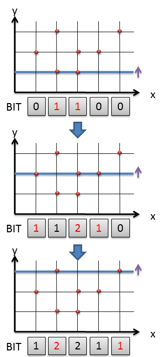
領域内の点を数えるのはx方向の総和をとればいい。BITを使えば総和の計算はO(logN)で計算できる。 たとえば、緑の点の右下の領域にある点を数えたいのなら、BITの緑の部分の総和 2+1+0=3個となる。 一般的には y≦a, b≦x≦cのような矩形領域の点も数えられるはず。 実際には、点を追加していきながら、逐次、点の総和も計算していく。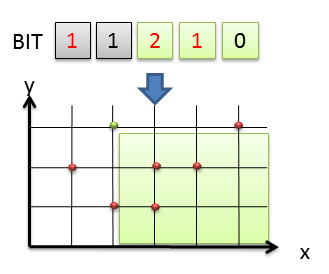
・段数 段数を数える部分は、bit[積まれた段数][座標]のように、積まれた段数ごとにBITを用意して、もう1段追加できるパターン数についての漸化式をかけばいいので、簡単なDP。 メモリをもったいぶらずに使用しましょう。 ・BITのMODをとるときは、addでもsumでもMOD計算を入れるのを忘れない！。MOD自体の計算時間にも気を付けて！12/10/29(月)07:06:37 第回- SRM558 DIV1 550pts
[問題原文] Ear.txt Ear.txt [問題] xy平面上の青い点（最大300個）と、y=0上にある赤い点（最大300個）を使って、 きつねの耳型（＝三角形大と三角形小があり、大は小を含むかんじ。三角形は青１点と赤２点で構成されている。）をつくる方法は何通りあるか。 （詳しくは問題をみてね） [結果] × [反省点] ・青の点を２つ固定すると、赤４個のとりうる範囲が定まる。 ir5さんの出題者解説→ http://moon.kmc.gr.jp/~ir5/tmp/Ear.pdf この問題に限らず、固定する変数（forループの総当たりですます変数）の選び方で、計算量・難易度が大きくかわるので、いろいろ試そう！ 残りの赤４個のパターン数を数えないといけないど、そもそも左側と右側が独立なので赤２個のパターン数を２回数えればいいだけ。 赤２個のとりうる範囲はO(n)の前計算をしておけば、O(1)で求められる。 結局ループになる部分は青２個のforループ総当たりでO(n^2)、赤はO(1)なので、全体としてもO(n^2)の計算量で解ける、余裕。 ・２つの赤い点の選び方、x=aの赤い点とx=bの赤い点(a＜b)を選ぶと考えると、今回の問題で数えたいのは以下の条件での(a,b)のパターン数。 La ＜ a ＜ b ＜ H Lb ＜ b ＜ H ○が赤い点 ●がx=aの赤い点 ◎が今回のx=aに対してとりうる、x=bの赤い点 として、総当たりしてみると、 La Lb H ● ○ ○ ◎ ◎ ◎ ◎ ○ ● ○ ◎ ◎ ◎ ◎ ○ ○ ● ◎ ◎ ◎ ◎ ○ ○ ○ ● ◎ ◎ ◎ ○ ○ ○ ○ ● ◎ ◎ ○ ○ ○ ○ ○ ● ◎ ○ ○ ○ ○ ○ ○ ● この◎の場所を数えればよい。(La,Lb)の点の個数をp、(Lb,H)の点の個数をqとすると 右上の長方形+右下の小さい三角形 = pq + q(q-1)/2 大きい三角形（●の右上の○＋◎全部）-左上の小さい三角形（●より上の○） = (p+q-1)*(p+q)/2 - (p-1)*p/2 = (pp+pq-p+pq+qq-q-pp+p)/2 = (2pq+qq-q)/2 = pq + q(q-1)/2 のどちらでも出せる。 ただ、●がx=aの赤い点を総当たりでforループでO(n)で書いても、それでもまだO(n^3)で間に合う。 １次元で不等式の制約だけなのは、O(1)もしくは、Combinationを前計算しておけば一発で数えられる気がするなぁ…（願望） ・青２点を結ぶ線が、右下ななめ線と左下ななめ線になる場合があり、場合わけがでてくるけど、 そんなことはせず、すべての点のxを-xにかけば、片方だけのパターンを数えればよくなる。時間内に解くためには、こういう簡略化が大事。12/10/29(月)06:31:37 第回- SRM558 DIV1 275pts
[問題原文] Stamp.txt Stamp.txt [問題] "RGB*"で構成された文字列がある（長さ50以下）。Rは赤色・Gは緑色・Bは青色・*はまだ塗られていない。*の部分を全部塗りたい。 まず長さaのスタンプを最初に作って、そのスタンプを何回か押す（=aの長さだけ同じ色で塗る。スタンプを押すとき、別の色がすでに塗られてるところに押してはいけない。 スタンプを作るのに長さ1あたりstampCostのお金がかかり、押すの1回あたりpushCostのお金がかかる。最小の費用を求めよ。 [結果] ○ [反省点] かかるコスト=func(左端・右端)とした、範囲でのメモ化再帰が楽勝。 なぜか、メモ化再帰の初期化値と、返す値のデフォルト値も、どちらも同じ値にしてしまった。これはありえないハマり ir5さんの出題者解説→http://t.co/N2bJpbw812/10/29(月)06:31:37 ZOJ Monthly, September 2012 - D Gao the Grid
[問題原文] http://acm.zju.edu.cn/onlinejudge/showContestProblem.do?problemId=4826 [問題] n*mのグリッドから３点選んで何個三角形を作れるか。n,m≦1000 [反省点] ・(全部の選び方の数) - (１直線に並んで三角形が作れない選び方の数)で求める。補集合だと簡単になる問題はいくらでもあるので重要。 (全部の選び方の数)は簡単に求まる。点の数 long long p =(n+1LL)*(m+1LL)としたら、p*(p-1LL)*(p-2LL)/6LL ・まず2点を固定したい。グリッドで考えるときは、左端の点・右端の点でやるとそれだけで4変数使ってしまうので、ベクトル(dx,dy)の総当たりを考える。これだと2変数になるので計算量的にお得。 ・でてる線の本数は下図の黄色エリアの点の数なので、(n-dx+1)*(m-dy+1)となる。 ただし、0≦dx≦n,0≦dy≦mでループさせてるのなら、 ・dyがマイナスのパターンもあるので、通常は2倍すること。ただし、軸に平行（dx==0 || dy==0）のときは2倍してはいけない。 ・最後の3点目が、左端と右端の線分上にあっては、三角形が作れない。線分内の格子点の個数は、最大公約数でmax(0LL,gcd(dy,dx)-1LL)で簡単に求まるが、軸に平行なときは、gcd(0,dy)のようになってしまいダメ。このときはdy-1で良いでしょう。 最大公約数で0を使わないように注意！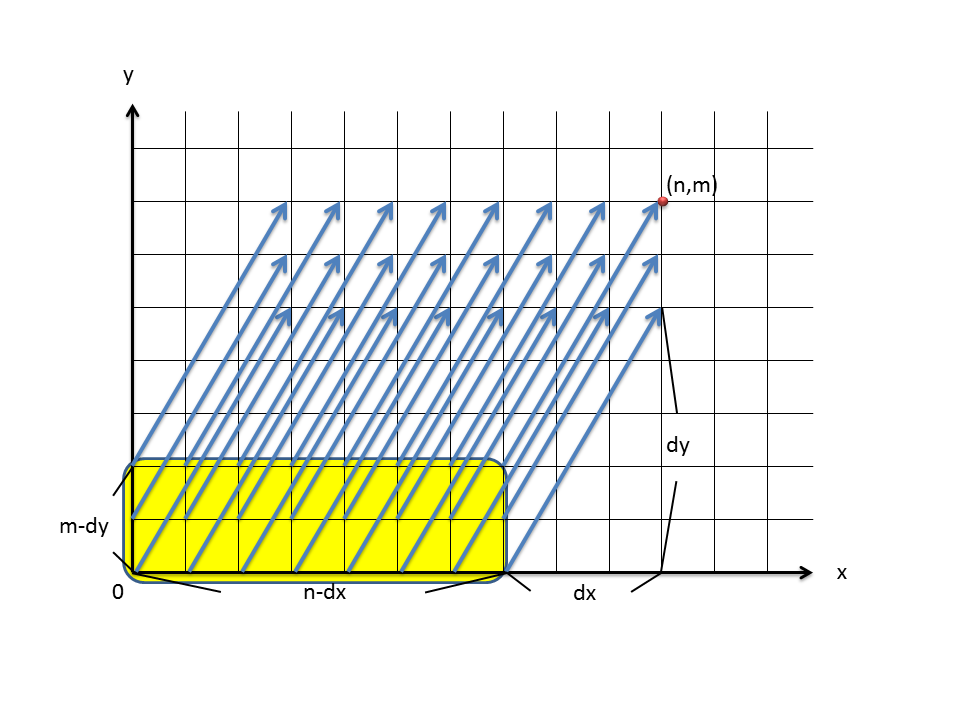
12/09/17(月)09:06:03 Codeforces #138 A. Bracket Sequence
[問題原文] http://codeforces.com/problemset/problem/223/A [問題] ()[]で構成された文字列がある。正しくかっこが対応している範囲、で一番[が多く入ってる個数を求めなさい。 [反省点] ・スタックで(の対応をみるのは、括弧が複数種類あってもかわらない。 ・スタックの処理は、stackはクリアができないので、vectorでpush_back,pop_backを使ったほうが楽。 ・スタックに保存していくのは、位置だけでよい。(か[かは、文字列と位置からもとまるし。 ・一番重要なのは、かっこの対応に間違いがあったら、それ以前のものとそこから先は対応することはないので、 完全にリセットして1から対応を見ていけばよいということ。 ・[を数えるのは、stackの処理内でやる必要なない。範囲内の[が分かればいいんだから、 累積和を使って、2から5なら sum(0,5)-sum(0,2)（半開区間）にしたほうが楽。sumは事前に計算できる。12/09/17(月)09:06:03 VolumeJAGSummerCamp12Day2-E
[問題原文] http://judge.u-aizu.ac.jp/onlinejudge/cdescription.jsp?cid=JAGSummerCamp12Day2&pid=E [問題] ()+-*の入った電卓の構文解析を行う問題。 [反省点] まず、BNFを正しく読み取れていなかった。思い込みよくない。ちゃんとBNFの式から読み取れる事実だけ使用する。 ()の中は、(expression operation expression)しかなく、expressionもoperationも空はダメだめなので、 つまり()の中には、(3+5)のように、expressionもoperationも入った式でないといけない。 次に再帰の部分。ここは重要。 基本的に区間を分けるDPになるんだけど分け方が重要。 (1) ()は区間の最初にある場合と最後にある場合は取り除く。 (2) その他の()は、この階層の仕事ではないので、()内は全部無視。 (3) できるだけ右にある+,-を探す。あればそこで分ける。 (4) +,-がなければできるだけ右にある*,/を探す (5) それらもなければ数字だけが残っているはず。数字をそのまま返せばよい（ ()が混ざってたら数式が不正） とりあえず、計算の優先順位を考えるとき、()、掛け算、足し算の順でやるとか考えると混乱する。 まず、1+2+3といったのは一発で計算できないんだし、2項演算すべてに()をつけて考えてみるとよい。 たとえば、3+3+3+3*3+3なら、 (((3+3)+3)+(3*3))+3 となる。優先順位が低いやつでできるだけ右から区切ると、優先順位が高いやつが、()の深い位置にくるのが分かるはず。木を書いてみても、分かると思う。12/09/08(土)14:12:32 第回- SRM555 DIV1 255pts
[問題原文] CuttingBitString.txt CuttingBitString.txt [問題] "1011101"のような2進数が与えられている（桁数は50以下）。これを5の累乗に切り分けたい。 切り分けれられる最小の個数を求めよ。できない場合は-1をかえせ。 上のケースだと、 "101" + "1" + "101" のように切り分けられる。答えは3 [結果] × あまりうまい方法はなさそう。5の累乗を2進の形であらかじめ求めた上で、前からDPで分けていく。 ただ、bitsetで2進数の文字列に変換できるのは、32bit以下のときだけ。それ以上の変換はC++0xでないとできない。 [反省点]12/09/03(月)08:48:02 第回- SRM554 DIV1 500pts
[問題原文] TheBrickTowerMediumDivOne.txt TheBrickTowerMediumDivOne.txt [問題] 高さheight[i]の塔がN(50以下)個ある。順番いれかえOKで、直線状に並べたい。 ただし、隣り合う塔は、距離max(height[i],height[i+1])だけ離しておく必要がある。 距離の和を最小化にするような、塔のならび順をかえせ。複数回あるときは、辞書順。 [結果] × heightの値が下に凸になるのが正しいというのは考察できてたのに、もったいない。 それが分かれば、解が複数あるときは辞書順なので、 ・最初はまず0番のやつ ・前半の値が減っていくように前から選んでいけばよい（ここで0番以下のやつを前から選ぶと書いてしまった。これだと降順にならない） ・後半は（高さ・番号）でソートすれば、かってに辞書順になる。 それだけ。 ですが、この問題には、別解法もあります。SRM527 DIV1 450ptsででてきた、 「辞書順最小解を求めよ」の黄金パターン(@kinabaさん談 http://topcoder.g.hatena.ne.jp/cafelier/20111218/1324152154） 解があるかないかの判定だけするルーチンを作る 先頭から「１文字決めてみる→解があるか判定／なければ次の文字」のループで順に確定 と類似。この方法だと、そもそも下に凸になるときが、この問題の解という知識すらいらない。 前のは、 第１条件→組み合わせが作れる解があるかないかの判定 第２条件→辞書順 今回の問題は、 第１条件→最小値になる解があるかの判定 第２条件→辞書順 辞書順Greedyで選んでいって良い条件としては、以下の２つの条件を満たす必要となる。 (1)最小値になる解があるかの判定をするために、一番最初に最小値を知る必要がある（Greedyで選ぶときに、この最小値と同じになるか、チェックすればよい） (2)辞書順Greedyで選ぶとき、仮に現在の位置iの解を選んだとき、 その後のi+1以降の選び方で、1個は最小値をみたせる解があるかの判定（この解は辞書順最小である必要はない。あくまで第1条件をみたせればOK。） 今回の場合は、単にソートさえすれば、常に第１条件を満たせる。最小値が求まるので、適応可能！ [反省点]12/08/18(土)15:01:38 第回- SRM??? DIV1 ????pts
[問題原文] ColorfulWolves.txt ColorfulWolves.txt [問題] [結果] [反省点]12/02/18(土)13:23:23 第回- SRM533 DIV1 250pts
[問題原文] CasketOfStar.txt CasketOfStar.txt [問題] 数列がある。 (1) 数列から両端以外の数値を、任意に選ぶ (2) その数字の両隣をかけた値が得点としてくわわる (3) 数列から選んだ数字を除く (1)→(3)の操作を繰り返したとき、最高得点を求めなさい [結果] × [反省点] Greedyはすごくあやしいし、実際通らない。 となると範囲DPぐらいしか思いつかないのだけれど、ちょっと工夫が必要 逆から考えて、数字を足していくと考えると、 例えば、{6,2,3,4,5}のとき、{6,5}からスタートする。 {6,5}→{6,2,5}となると、最初の追加の一手（＝最後の削る一手）は、6*5がボーナス点 つぎに{6,2}と{2,5}の範囲に分けることができ…そんなかんじで範囲DP dp[左端][右端]=得点 でOK。 ボーナス点は、追加した値の両隣ではなく、数列範囲の両端なのに注意12/02/18(土)13:15:36 第回- SRM533 DIV1 500pts
[問題原文] MagicBoard.txt MagicBoard.txt [問題] フィールド上に、#のマスと.のマスがある。 #の場所を一筆がきで通りたい。 スタートはどこからでもよく、移動は、横→縦→横→縦のように動く。 （横、縦ともに一度に何マスでも動ける） 全部の#のマスを通れるかYES,NOで返せ [結果] × [反省点] 一筆がきで通れるようなアルゴリズムを探すという方針だと厳しい。 （グラフがハミルトン路を含むかの判別はNP困難） 一筆がきで通れるようなパターンの法則を探すという方針でいけば、解ける可能性が…。12/??/??(??)??:??:?? 第回- Codeforces #107
B. すべての長さkの部分文字列は回文にならなければならない →長さkの部分文字列がないときは、なんでもよい。 「条件Aのときは条件Bを満たさなければならない」の問題で、 そもそも条件Aがないパターンは要注意12/02/18(土)06:34:22 第回- SRM532 DIV1 450pts
[問題原文] DengklekBuildingRoads.txt DengklekBuildingRoads.txt [問題] N個の町に（町番号1〜N）、M個ぴったし道路をひく ・すべての町からでてる道路の数が偶数 ・町番号の差の絶対値がK以下 となるパターン数は何パターンあるか？ （N,Mは30以下、Kは8以下） [結果] × [反省点] 動的計画法。道路のひいた履歴については、偶数か奇数かをK個分とっておけばよい。ここはありがち。 ただし、計算方法に注意。 dp[n][m][履歴ビット]で漸化式を立てること、計算時間は間に合わない。 なぜなら、街nからほかの町につながる道路のパターン本数は多いから。 dp[n][k][m][履歴ビット]のようにして、n→n+k-1への道路のようにしておけば間に合う。 また、履歴を残しておく場合、履歴の範囲外になった部分は、必ず道路本数が偶数になっていなければいけないのを忘れない。 動的計画法ではとdp[n][〜]とdp[n+1][〜]の漸化式を立てる場合が多いけど、 dp[n][k]とdp[n][k+1]のようにnが変化しない漸化式をあわせて使うパターンもありえるのを忘れない12/02/18(土)06:48:11 第回- SRM532 DIV1 300pts
[問題原文] DengklekMakingChains.txt DengklekMakingChains.txt [問題] ".2." ".95" "22."といった文字列であらわされた鎖がある。鎖の順番は自由にならべかえれるので、 連続する数字の最大値を求めなさい。 [結果] × [反省点] 良問。鎖の数が2個のとき。".5."のようにつなげられない鎖1個が最大になるケースなどハメあり。 300ptsは慎重に。12/02/08(水)11:55:27 第回- SRM531 DIV1 500pts
[問題原文] MonsterFarm.txt MonsterFarm.txt [問題] ピンゴというモンスターがN種類いる(N≦50)。毎世代、ピンゴは必ず死に、それと同時に子供が生まれる。 どのピンゴが死ぬと、どのピンゴ達が生まれるか（複数匹生まれることもあり）の表が、与えられている。 最初はピンゴ0が1匹いる。最大何匹まで増えるか求めよ。ただし無限に増えるときは-1をかえせ。 [結果] × [反省点] 解法1 シミュレーション解 まずMODによるハメがあるので注意！単にMODを取っていくと、実際無限に増えているのに、MODをとってピンゴの数が減ったため、無限に増えていないようにみえることがある。 こういう場合、複数のMODを試すという方法が有効。 複数のMODを使わずに、ピンゴの数をll(MODあり)だけでなくdouble(MODなし)でも保存しておき、数をチェックする方法も有効。SRM335 DIV1 250ptsでもでた。 ピンゴが無限に増えるのを判定する方法がいくつか候補がある。 ・×再びピンゴの状態（＝それぞれのピンゴが何匹いるか）が同じになったら、有限。 →これは計算時間が間に合わない。無限に増えないパターンであっても、ピンゴの状態はかなり多い（周期が2*3*5*7*11*13=30030のケース http://ideone.com/gnLzS） こうなると30000個前の状態まで覚えておかないとダメなので、計算時間が足りない。 ・△行列累乗 →これなら30000ターン先とかも固定の計算量で計算できるので安心にみえるが、O(m^3*log(n))の計算時間は侮れないので、注意！ 50*50*50*(log30000)/(log2) = 185万 なので余裕に見えるけど、log(n)の部分で実際には2回行列を計算することもあり1.5倍、MODで2倍、llで2倍と見積もると、 1000万ぐらいのループとみてよい。これを複数のMODで試すとなると、試すMODの個数によってはTLEする。 ・○全ピンゴあわせて合計何匹いるかをチェック。無限に増えるためには、50回に1回は合計が増えるはず。これなら計算時間余裕で間に合う。 doubleの精度では正確な匹数は分からないけれど、少なくとも無限に増えていってるかどうかは分かる。ピンゴ自体は倍々増えていくので、精度落ち等の心配もない。 ちなみに、行列乗算を使って計算していたんだけど、ピンゴa→bに増える数は、mtx[b][a]にくるので注意。 解法2 グラフ解 最初の1匹からできるピンゴの種別Aの中で、種別Aが無限に増えていくやつがあるかどうかを調べればよい。 グラフでいえば、AからでてAにもどる閉路があり、2個以上あれば、Aは無限に増えていくことになる。 別にグラフを書かなくても、boolのウォーシャルフロイド法で簡単に分かる。ウォーシャルフロイドしたあとの行列の意味をしっかり理解しよう。 - path[0][A] = true （最初の1匹から、将来ピンゴAが生まれる） - path[A][A] = true（ピンゴAから、将来ピンゴAが生まれる） - deg[A]が2以上（ピンゴAから、どのピンゴでもいいから2個以上生まれる。ピンゴの数が増える） あと、25点でチャレンジしないように…。あらゆる意味でダメ。 - 25点から0点になったら、順位がた落ち。 - 25点から75点→125点と増えても、ほとんど順位は変わらない。 - 25点からチャレンジ連発で成功して250点とかまでいけば、それは確かにいいけど、 25点になってる時点でチャンレンジ失敗していることを意味する。 50%の確率で失敗しているチャレンジケースで、その後チャレンジ連発成功するわけがない。12/02/08(水)10:37:56 第回- SRM531 DIV2 250pts
[問題原文] UnsortedSequence.txt UnsortedSequence.txt [問題] 数列が与えられている。自由に順番を並び替えて作れる数列で、 「昇順ではない数列」をつくれ。もし複数ある場合は、辞書順で最初のものをかえせ。 もし、「昇順ではない数列」をつくれない場合は、空文字列をかえせ。 [結果] ○ [反省点] sort(s.begin(),s.end()); if(next_permutation(s.begin(),s.end())) { return s; } else { return vector<int>(); } これで終了。next_permutationは、次の順列がない場合falseを返す 昇順ソートした次のやつが解12/02/07(火)14:43:00 第回- SRM531 DIV1 300pts
[問題原文] NoRepeatPlaylist.txt NoRepeatPlaylist.txt [問題] N曲持っている。それらを使ってP曲のプレイリストを作りたい（1≦N≦P≦100）。 ただし、プレイリストは以下の条件を満たさなければならない。 ・すべての曲は、最低1回は流れる。 ・同じ曲を2回流す場合は、その間にM曲以上他の曲が入っていなければならない。 全部で何通りあるか？多すぎるときはMOD 1000000007をとった値を返せ。 [結果] × [反省点] できませんでした(T T)。ま、これが解けないようでは、Div1 MediumのDPを本番で解くのは、夢のまた夢。 ぱっと見で、動的計画法で、しかも変数も少なく、 dp[プレイリスト何曲目まで流したか][今まで何曲使用したか] = パターン数 ぐらいしか考えられないが、漸化式が立てられない…。 「過去に何を選んだか（状態数が爆発）」→「過去に何個選んだか（状態数が少ない）」と計算量を落とす動的計画法。 似たタイプの問題としては、 ・去年のHacker CupのRound1の問題 Wine Tasting ・SRM511 Div1 500pts FiveHundredEleven どちらも「過去に選んだ履歴がわからないから無理だろう」であきらめた気がする… まず、この手の問題は、樹形図を描くのが基本 あと自分の場合、「何通りあるか数えたい」→「次に何を選べるか知りたい」→「過去に何を選んだか（状態数が爆発）」と、ハマることが多い。 「次に何が選べるか」わからなくても、「次に何個選べるか」わかれば、答えられる。 目的は「パターン数を数えること」なので、「何個選べるか」に注目するのを忘れない！ 仮にN=4だったとすると、樹形図は（注：一部しか書いてません） M=0のとき、つねにN曲のどれかを選べる 1─┬ 1─┬ 1─┬ 1 2 ├ 2 ├ 2 ├ 2 3 ├ 3 ├ 3 ├ 3 4 └ 4 └ 4 └ 4 M=1のとき、最初はN曲選べる。次からはN-1曲選べる（直前の曲は選べない） 1─┬ 2─┬ 1─┬ 2 2 ├ 3 ├ 3 ├ 3 3 └ 4 └ 4 └ 4 4 M=2のとき、最初はN曲選べる。次はN-1曲選べる。それ以降はN-2曲選べる（直前の2曲は選べない） 1─┬ 2─┬ 3─┬ 1 2 ├ 3 └ 4 └ 2 3 └ 4 4 となり、 max(N-i,N-m) = N-min(i,m) 曲選べることが分かる。（iはプレイリストで何曲目か） あとは、dp[プレイリスト何曲目まで流したか][今まで何曲使用したか] = パターン数 となるので、次につかう曲が新曲か旧曲かで場合わけすれば、普通のDPになる。 // 次に使える曲数は const ll y=max(N-M,N-i); // 次に使う曲は新曲 if(n<N) { dp[i+1][n+1] += dp[i][n]*(N-n); dp[i+1][n+1] %= MOD; } // 次に使う曲は旧曲 dp[i+1][n] += dp[i][n]*max(y-(N-n),0LL); dp[i+1][n] %= MOD; ちなみに、 ・SRM493 Div1 450pts AmoebaCode は、文字間の距離の制限をみたりして、もっと似ている問題に見えるが、ちょっと違う。 AmoebaCodeは、パターン数を数える問題でもなく、普通に履歴が必要（ただし鳩の巣原理ではしょれる。） ちなみに、naoya_tさんの、包除原理を使った解もあり。うまい。 http://topcoder.g.hatena.ne.jp/n4_t/2012013112/??/??(??)??:??:?? Facebook Hacker Cup 2012 Round 2
A. Road Removal [問題] 都市と道路が与えられている。また、都市のうち何個かは「重要な都市」である。 「『重要な都市』を含むサイクル」を全て取り除くには、最小で道路を何本取り除けばいいか？ [反省点] まったく歯がたたず。この問題は、「最小全域森を求める」問題。 （もとから辺が1つもつながっていないノードも考えられるので、最小全域木ではない。） 求め方は、 (1) 連結している重要でない都市同士は、まとめて、１つの都市とみなす。 できるだけ道路を取り除きたくないので、重要でない都市同士間の道路すべては使用する（重要でない都市同士のサイクルは問題ない） 都市を連結すると、多重辺ができることがあるので忘れないこと。 (2) 最小全域森を求める (1)をやらずに(2)を求めた場合、重要でない都市のサイクルも気にすることになり、取り除くべき道路の本数は増えるので最適解にならない。 グラフの問題で重要なこと ・全域木に1本リンクを足すと、必ずサイクルができる。 →全域木はすべての頂点がもう常に連結されているので、もう1本足すことで必ずサイクルができてしまう。 ・辺にコストがなくても、クラスカル法は全域森を求めるアルゴリズムとして使える。 →今回の問題では、何本の辺を足すかだけに注目している。辺のコストは1だと考えておけばよい。 ・プリム法とクラスカル法の違い（ウソかもしれない。たぶん。） ・プリム法は、ダイクストラ法に似ている。１つの頂点からスタートして、辺を追加していく。最小全域木を求めるアルゴリズム。 ・クラスカル法は、Union-Find法に似ている。別々の頂点から辺を追加していくことも可能。最小全域森を求めるアルゴリズム。 ・辺を取り除く問題のひっかけ！ もし、どういう順番で取り除こうが問題がないのであれば、最終形だけが重要 →最終形をどう求めるかだけに注目すればよい。取り除きながら求める以外にも、以下の方法も使ってよい。 ・辺を足していきながら、最終形を求める ・なんかのアルゴリズムで最終形を一発で求める。 ・グラフの問題は、次の３つを必ずチェックすること。 (1)多重辺があるか？ (x-y, x-y) (2)自分から自分の辺があるか? (x-x) (3)辺が1つもないないノードがあるか? B. Monopoly [問題] N個の会社に1人ずつPresidentがいる。会社の合併の予定表が、以下のようなかんじで、与えられている。 1-2 3-5 2-4 ・ ・ 1-2は、「1のいる会社と2のいる会社」が合併という意味である。あなたは、合併後の会社の社長を、 どちらかの会社の社長から選ぶことができる。合併後は、もう一方の会社の社長が、新会社の社長の直属の部下となる。 階層の高さ（一番上の社長から一番下の部下（ザコ）まで何階層あるか）をできるだけ小さくした場合の、最小の階層数を求めなさい。 [反省点] 問題を完全に誤読してしまった…。ただ、正しく読めていても解けなかったっぽい。 富豪DP?12/??/??(??)??:??:?? 第回- Codeforces #103
E. Lucky Subsequence 組み合わせCombinationの剰余 - Combの割り算の部分を、modの逆元で求める (1) 剰余が素数のとき、フェルマーの小定理をつかう。xの逆元は、modpow(x,MOD-2)で求められる。事前計算も効率よくできる (2) そうでないときは、拡張ユークリッドの互除法で求める。 (3) 階乗のmodを使う。 http://ideone.com/XlzhT Combinationのmodは、プログラミングコンテストチャレンジブックのP244,245を見ること。 さらに高速に、rng_58さんのO(n)でまとめて逆元を求める方法 http://community.topcoder.com/stat?c=problem_solution&rm=306085&rd=14287&pm=11061&cr=22692969 DPの基本があやしすぎる件 - long longでvectorで10000000もとったら、そりゃ落ちます。DPのメモリ注意！前回のループの結果しかみないときは、nextdpだけ用意しときゃいい。 - ループの回数から、ちゃんと計算量を読むこと。ギリギリのときは、ちゃんと計算量をはしょる工夫を入れる。 - はしょるときにバグは入れないでね。12/01/27(土):14:56 第回- Facebook Hacker Cup Qualification
B. Auction せっかく方針は良かったのに、後述のミスで台無し。x64で実行したら、正解だった…。 http://ideone.com/N2bv9 解法の流れは (1)ある価値に対して、重さの最小値・最大値だけ意味がある。 (2)ループしているのをうまく使用 (3)スライド最小値（ちなみに、dequeバージョンじゃなくて、RMQバージョンもあるよ http://wcipeg.com/wiki/Sliding_range_minimum_query） なんとメモリ不足で落ちた。 10^7(10M) * 256バイトの構造体 = 2560MB = 2GB アウト！ - 大きいケーステストのときは、実行時間のほかにもメモリ制限にも気を使うこと。 - 必ずしも入力値のいやらしいケースが、内部的にいやらしいケースとは限らない。 - どんな設定をしようがwin32でvectorで動的確保にいけるのは1GBぐらい(1.5倍ルール、フラグメント、2GBの壁などのせい？)。x64を使えばもっといける。 C. Alphabet Soup 文字数えるだけ問題。なのに、 char str[256]={}と書いて死亡。バカすぎ。変数名も悪い。 int freq[256]={} にしよう。12/02/06(月)03:52:51 第回- SRM530 DIV1 250pts
[問題原文] GogoXCake.txt GogoXCake.txt [問題] ケーキカッターで、ケーキをすべてくりぬけるかYES,NOで答える問題。 [結果] ○ [反省点] まー、問題は左上から、ケーキカッターを当てはめていくだけなのですが、 時間かかりすぎ…。いつも、紙にかかないと混乱する。 幅Wで、範囲sのものを動かすとき、 for(int lx=0;lx+s<=W;lx++) // イコールがつきます！ s=Wのとき、lx=0はOKなので、イコールがほしいことはわかる12/??/??(??)??:??:?? 第回- Codeforces #102
・doubleをlong longにキャストすると、GCCで失敗することがある件(submission #1095703) vector12/01/14(土)17:14:56 第回- SRM529 DIV1 600pts
[問題原文] MinskyMystery.txt MinskyMystery.txt [問題] 袋が５つあって、おはじきを手順にそって異動させる。最終的に [結果] × [反省点] - 法則を調べたいときは、できるだけ多くの変数に分けて、printfで出力させたほうがいい。 - 同じ値が連続するようなときは、forループの高速ループ（ループとばし）が有効。通常O(N)のところをもっと速くできる。これなら10^8個以上の要素があっても、計算間に合う。 例えば、非増加の数列であれば、以下のような値を1個1個足すより、同じところはまとめて足したほうが楽。 {5,5,5,5,5,5,5,5,5,5,5,5,5,4,4,4,4,4,4,4,4,3,3,3,3,3,3,3,3,3,3,2,2,2, まとめて足すには、２つの方法がある (1) 境界を2分探索で探す。ただし、この際、5,4,3,2のように数値が頻繁にかわると、O(N)がO(NlogN)になって通常ループよりも遅くなるので、頻繁にかわるエリアは普通にループ (2) ステップ幅を決めて（例えば10000）とか、現在の値とステップ分先にある値とが同じ（if (a[x]==a[x+10000]）なら、まとめて加算。 数列がどうなるかにもよるけと、ステップ幅分先に要素が値が変わるのあれば、ステップ幅をじょじょに下げていくとよい。10000000,1000000,100000,10000,11/12/18(土)21:16:00 第回- Codeforces #98
CDEがとても勉強になる回 [反省点] B. Permutation http://codeforces.com/contest/137/problem/B C. History http://codeforces.com/contest/137/problem/C D. Palindromes http://codeforces.com/contest/137/problem/D E. Last Chance http://codeforces.com/contest/137/problem/E11/12/18(土)21:16:00 第回- Codeforces #95
[反省点] D. Subway http://codeforces.com/contest/131/problem/D11/12/17(土)19:25:21 第回- SRM527 DIV1 275pts
[問題原文] P8XGraphBuilder.txt P8XGraphBuilder.txt [問題] N個のノードとN-1本のエッジを使った木のグラフを考える。 次数（degree, ノードがエッジが何本でているか）によって、得点が決まっている。 得点の最大値を求めよ。 [結果] × [反省点] グラフとDPの混合問題。最近のDiv1 Easyの中では難問。 基本 ・N個のノードでN-1本ですべてとつなげるようにしたら木になる。サイクルは絶対にない。 ・次数の合計は2*(N-1)である。 （理由：最初は2個のノードで次数合計は2。そこから1つノードを足すと、つなげるノードとつながれるノードで、次数が1ずつ増えるので+2） ふつうの解法 O(V^2) dp[ノードの合計の次数][（残り）ノード個数] ノード１つにつき、つかえるエッジの数は1〜N-1。0はダメ。これでメモ化再帰でOK。 うまい解法 O(V) dp[（残り）ノード個数] 最初に2個だけのノードを使う。端のノードはかならず次数1になる。 残りV-2個のノードを継ぎ足していく。現在までできている木に、メチル基のようなノードのかたまりを何個足せるかを考えていく。 すべての木を考えられるわけでないが、次数は等価なので、スコアは問題なく計算できているのでＯＫ。 間違えたのは、なぜかノードをつなげる候補がないのに、ret=0で初期化して、有効とみなしている解があった。11/12/17(土)18:09:58 第回- SRM527 DIV1 450pts
[問題原文] P8XMatrixRecovery.txt P8XMatrixRecovery.txt [問題] ２つの行列A,Bがある。それぞれの行列の要素は'0''1''?'のいずれかである。 ?の部分に0か1を割り当てて、Aの列と、Bの行のいずれか（どの行でもよい）が 1対1で対応するにしたい。 ?を0か1で埋め終わったあとの行列Aを返せ。複数解あるときは辞書順で最初のやつを求めよ。 [結果] × [反省点] 優先順位があるから、最小重みマッチング（最小費用流）とかでいけそうだけど、それだと重みをつけるのが難しい。 （多倍長で重みをつければ解くことは可能） 優先順位があっても、こういう場合は、ただの2部グラフのマッチング（最大流）で解ける。 単に、左上の?から'0','1'を試して（辞書順なので）、'0'でN個マッチングがつくれるならOK、だめなら'1'を埋める しかない。要するに、すべての?に対して、2部マッチングするだけの問題。 「辞書順最小解を求めよ」の黄金パターン(@kinabaさん談 http://topcoder.g.hatena.ne.jp/cafelier/20111218/1324152154） 解があるかないかの判定だけするルーチンを作る 先頭から「１文字決めてみる→解があるか判定／なければ次の文字」のループで順に確定 @kinabaさん談 @iakasT 「最大値を最小化する問題→二分探索」というパターンと自分の頭の中では同じカテゴリでした。 具体的な最適解のデータを求める問題を、解のあるなし判定bool問題に帰着。 → 一見この問題は、"??????"の全パターンを試すのは2^900で無理とか思ってしまいそうだけど、 ・"10????" のような中途半端に???が入っていても解のあるなし判定ができる。 ・どの?も、1か0のどちらは解になりうる ので、これでOK。11/12/11(日)15:29:54 第回- SRM506 DIV1 600pts
[問題原文] SlimeXGrandSlimeAuto.txt SlimeXGrandSlimeAuto.txt [問題] ある町にある銀行を与えられた順番に訪問したい。隣接行列、移動コストが与えられている。 移動方法は2種類あり、 ・徒歩 ・車 それぞれコストがきまっている。 車が置かれている都市があると、車を利用して移動できるが、銀行をおとづれるときは、 車を乗り捨てなければならない（その車は2度とつかえない） 最短移動時間を求めよ。 [結果] × [反省点] 最小費用流で、２部グラフの最小重みマッチングができる。 つまり、銀行間の移動で、どの車を使うか、もしくは徒歩かを割り当てればよい。 仮に銀行が5店、車が3台あったら、以下のように、銀行側５つ、移動手段側４つの最小重みマッチングになる。 スタート→銀行A 車1を徒歩でとりにいって、次の銀行まで車で移動時のコスト 銀行A→B 車2を徒歩でとりにいって、次の銀行まで車で移動時のコスト 銀行B→C 車3を徒歩でとりにいって、次の銀行まで車で移動時のコスト 銀行C→D 徒歩 銀行D→E ちなみに、最小費用流で、負閉路がでてくる問題では、ベルマンフォード版をつかうとよい。11/12/11(日)00:33:50 第回- SRM508 DIV1 500pts
[問題原文] YetAnotherORProblem.txt YetAnotherORProblem.txt [問題] N個の整数字の上限 R[i]で与えられてている x[i]は0〜R[i]の整数になっている。 x[0]+x[1]+...+x[N-1] = x[0]|x[1]|...|x[N-1] となるxの組のパターン数を求めよ。 [結果] × [反省点] x[0] → x[1] → x[2]というような形で全探索は無理。 見方をかえて、ビット桁の大きいほうから、試す。 数字をビットにすると、たとえば10を2進数であらわすと 0b1010 となります。これで0〜10までの数字を調べるということは 上位からみていけば、 ・もし、上位のビットの立て忘れ（1があるのに1を使ってない）があれば、それ以下のビットは0でも1でもOK。 ・もし、上位のビットの立て忘れ（1があるのに1を使ってない）がなけば、それ以下のビットはビットがたってるときのみ1をたてれる。 10を木を書くと、こんなかんじ(@がついたら、ビット立て忘れ) ビット3 ビット2 ビット1 ビット0 1000→ 1000→ 1010→ 1010 = 10 └→ @ 1000→ @ 1001 = 9 └→ @ 1000 = 8 @ 0000→ @ 0100→ @ 0110→ @ 0111 = 7 └→ @ 0110 = 6 └→ @ 0100→ @ 0101 = 5 └→ @ 0100 = 4 @ 0000→ @ 0010→ @ 0011 = 3 └→ @ 0010 = 2 └→ @ 0000→ @ 0001 = 1 └→ @ 0000 = 0 こうすることで、各数字を、1つのビットの状態と分岐であらわすことができる。 あとは、x[0]+x[1]+...+x[N-1] = x[0]|x[1]|...|x[N-1]については、 各ビットをたてられるのは、たかだか１個の数字なので、 上位ビットからループさせ、 ・どの数字を使ってビットをたてるか(Nパターン) ２個以上の数字のビットをたててはダメなので、たったNパターン。 ・ビットをたてない dp[b=注目ビットけた][now=bビットより上にでてきたビットをたてなかったことがある] とすればいいので、計算時間的にも余裕で間に合う。11/12/10(土)20:40:49 第回- SRM526 DIV1 500pts
[問題原文] PrimeCompositeGame.txt PrimeCompositeGame.txt [問題] 変わりばんこにやるゲーム N個石があって、1からK個取り除くことができる。 - あなた→Dengklek→あなた→Dengklekの順で交互に石をとりのぞく。 - あなた ：石を取り除いたあと、石の個数が素数 - Dengklek：石を取り除いたあと、石の個数が合成数 うつ手がなくなったほうが負け。 どっちもベストをつくした場合（勝てるならできるだけ最短手数で勝ちに行く、負けそうでもできるだけ最長手数になるように粘る） 何ターンで終わるか？ [結果] × [反省点] forループに条件をたすのは慎重にやってください。 慣れてないなら、入れなくて、いいと思います。 これと for (int i = K; i >= 1; i--) { if((n-i)>=0 && mMemo[n-i]==0 && bprimes[n-i]) { これは for (int i = K; i >= 1 && (n-i)>=0 ; i--) { if(mMemo[n-i]==0 && bprimes[n-i]) { 違う！！ とりあえずゲーム木で勝ち負けだけなら簡単にわかる。 （ターン数も含めても、できることはできるがTLE） 勝ち負けを求めるだけでもTLEするけど、連続する合成数が最大150ぐらいということに 気づけば、ループの部分の処理をはしょれて、ここは間に合う。 そのあと、ターン数の数え方はGreedyでいけます。 (1)あなたが勝つ場合は、 ・あなたができるだけ多くとる ・Dengklekができるだけ少なくとる(1個） のがベスト。なぜなら、偶数は2以外合成数なので、あなたがどんな手を打とうが、 Dengklekは1だけとれば、合成数にできて、しのげる。（つまり、あなたはがんがん取って 3まで来て決着をさっさとつけなければならない。） (2)Dengklekが勝つ場合 ・あなたができるだけ少なくとる ・Dengklekができるだけ多くとって、あなたを殺せる必死パターンまでたどりつく のがベスト。必死になるところは、合成数がN+1個ならんでるところの最後の数字 8 = 合成数 9 = 合成数 10 = 合成数 11 = 素数 こんなとき、K=2だとすると、石が10個であなたの番がまわってきたら、 次に素数にできないので死亡。なので、Dengklekは10以下になるように、がんがんとってく。 [別解] http://d.hatena.ne.jp/komiyam/20111208/1323270092 最短手数を求める→ nagamax木 そのあと、RMQで最小値を高速に求める？？？11/12/10(土)20:28:19 第回- SRM526 DIV1 250pts
[問題原文] DucksAlignment.txt DucksAlignment.txt [問題] 2次元上にあひるがいる（ただし、同じ列・行には１匹） どこかにあひるを１列（たてよこどちらも可）にならべたい。どこに並べてもいい。 あひるの移動距離は(a,b)から(c,d)に移動したら、|c-a|+|d-b| 全あひるの総移動距離の最小値を求めなさい。 [結果] ○ [反省点] 解くだけなら集合場所を決めて、並ぶ方向も決めて、総当りでOK。 ただ、楽な解法もあります。「中央のあひるに集合」 12 34 5 6 7 ....oo..oo...o.o.o... .........*........... ..........*.......... まずは一列にならべるという問題は難しすぎるので、 1箇所にあつまることを考えましょう。 集まる場所をずらすごとに、 そこより左のあひるの距離が+1, そこより右のあひるの距離が-1になる。 あひる移動総距離が最小になる集合箇所は？、 左にいるあひる数と右にいるあひる数がいっしょになる、 つまり中央のあひるのところに集合するのがベスト。 （微分＝０のようなかんじ） 一列にならべる＝「いったん集まったあと、広がる」 と考えてもOK。広がるベストな方法は中央を中心に 広がるのがベスト。これはどこに集まっても一定。 中央にあつまった時点で移動しすぎなので、 その分移動距離をひいてやればよい。 2次元でもいっしょ。 集合場所は縦の中央あひるyと横の中央あひるxのところ （イメージ ∂f(x,y)/∂x=0 , ∂f(x,y)/∂y=0） となるような場所。広がり方は、縦にひろがろうが、 横に広がろうが、どっちもOKです。 「SRM423DIV1-300とかも似たような性質を使う問題でしたかね」 あと、最小費用流でも解けるらしいので、将来（いつ？）やってみること。11/12/03(土)22:34:46 第回- SRM146 DIV1 800pts
[問題原文] Roundabout.txt Roundabout.txt [問題] まわる交差点(round about)のシミュレーション [結果] × [反省点] 間違えたけど、やるだけ。11/12/03(土)22:11:53 第回- SRM144 DIV1 550pts
[問題原文] Lottery.txt Lottery.txt [問題] くじびきセットが用意されている。 name 名前 choices 選ぶ数字の選択肢 blanks 選ぶ数字の個数 unique 重複を許すならFALSE、許さないならTRUE sorted TRUEならnot-descending order（数字が増えていくか同じ） が与えられている。 あたりは１マイだけである。 あたりやすい順に、くじ名を並べて出力せよ。もしあたりやすさが いっしょのときは、くじ名の辞書順で出力せよ。 [結果] ○ [反省点] ・重複組み合わせ・組み合わせ・重複順列・順列の練習にどうぞ。 高校数学の復習にどうぞ。11/12/03(土)21:35:18 第回- SRM145 DIV1 600pts
[問題原文] VendingMachine.txt VendingMachine.txt [問題] ぐるぐるまわる自販機の、まわった回数を返す問題。 [結果] ○ [反省点] シミュレーション実装ゲー11/12/03(土)18:50:06 第回- SRM146 DIV1 600pts
[問題原文] Masterbrain.txt Masterbrain.txt [問題] 4桁の1〜7までの数字の数字あてをするゲーム。 ある数字をいったら、ヒントが出されて、「位置も文字もあってる文字数」「位置だけあってる文字数がわかった。これらの情報をもとに、答えになりうる数字の個数が何個あるか求めよ。 ただし、ヒントには必ず1個だけうそがある。 [結果] ○ [反省点] ・総当り。ある数字が答えだとして、うそが1個になれば、正しいというやり方にすると、らく。 ・（私的）setやmap用FOR(いてれーたループ)内で、そのコンテナをeraseするのは非常にやりづらい。 仮にit=st.erase(it)とかst.erase(it++)とか書けば、その場はしのげるが、 そのあとにFOR内で1個飛ばしてしまうことになってしまう。 これをみこして、消した後にit--といれると、最初の要素を消したときに、未処理例外。 こういう場合はwhileとかで書いて、itはループ内で各自足すようにすればしのげる。11/12/03(土)18:16:14 第回- SRM525 DIV1 525pts
[問題原文] Rumor.txt Rumor.txt [問題] うさぎがN匹いる。うわさAとうわさBが全員のうさぎに伝わるまで何日かかるか。 ・何匹かはうわさAとうわさBを最初から知っている。 ・うさぎYがうさぎXを信用しているからしていないかの関係が与えられている ・1日にあるうさぎが広められるうわさはAかBかどちらか。2種類同時には広められない。 ・あるうさぎが噂を広めると、そのうさぎを信用しているうさぎは、その噂を覚えることができる [結果] × [反省点] 問題文をちゃんと読みましょう。 うわさを広める優先順位(2^N)を総当りして、そのあとシミュレーション かかる日数は、たかだか最長パス＋１。なぜなら、うわさAが伝わったつぎの日にうわさBを送るということにすればよいから。（うわさBが先に届いたとしても、うわさBを送らずに待つ。うわさAがきたら、次の日にうわさBを送ることにすればよい。）11/12/03(土)15:51:53 第回- SRM524 DIV1 500pts
[問題原文] LongestSequence.txt LongestSequence.txt [問題] C[i]が与えられている。(-1,000〜-1, 1〜1,000の間) ・C[i]が正なら、連続するC[i]項分の合計が正でなければならない。 ・C[i]が負なら、連続するC[i]項分の合計が負でなければならない。 これらの条件を満たす、最長の数列の長さを求めよ。数列がつくれない場合は-1を返せ。 [結果] × [反省点] S(z)を第1項から第z項までの和とすると x項からy項までの和=S(y)-S(x-1) と置き換えられる。TopCoderは総和の数式置き換えは結構ありがち例えば、全10項だとして、 連続する3項の和がプラス S(4)＞S(1) S(5)＞S(2) S(6)＞S(3) ... S(10)＞S(7) 連続する4項の和がマイナス S(5)＜S(1) S(6)＜S(2) S(7)＜S(3) ... S(10)＜S(6) のように置き換えられる。 置き換えると、変数と変数の大小関係 だけ（S(?)だけの不等式の条件がたくさんある）になるので、これらの変数の大小関係に矛盾があるかないかをチェックすればOK。 これは矛盾があるかないか？矛盾がある場合は以下のようなかんじ。 a ＜ b && b ＜ a 絶対無理 a ＜ b && b ＜ c && c ＜ a 絶対無理 つまり a ＜ b ＜ c ＜ a のような大小関係がサイクルになってとき。 サイクルを調べたいなら、グラフにしてしまうとよい！不等式 a ＜ b は、 ノードaからノードb a→bへリンクをはる 例えば、a ＜ b && b ＜ c && a ＜ dなら、下のようなグラフ (a) −−┌−−→ (b) → (c) └−−→ (d) この問題はグラフの閉路判定問題に置き換えることが可能。 すいい‐りつ 【推移律】 集合の要素a、b、cに対して、ある関係〜が定められていて、a〜bかつb〜cならばa〜cであるという法則。移動律。 推移律がでてきた場合は、グラフに置き換えてみましょう。 類問：プログラミングコンテストチャレンジブック P269 強連結成分分解(SCC)で閉路判定もできるよ。 やや類問：プログラミングコンテストチャレンジブック P104 のように、 定数項も混ざった不等式（x＜y+3, y+10＞z のような形）がたくさんある場合は、最短距離のアルゴリズムも考慮にいれておきましょう。11/12/03(土)14:39:30 第回- SRM146 DIV1 300pts
[問題原文] RectangularGrid.txt RectangularGrid.txt [問題] height*widthのグリッド内に、長方形が何個あるか数えよ。 （正方形は含まない） [結果] ○ [反省点] result += (width-w+1LL)*(height-h+1LL);11/12/03(土)14:27:38 第回- SRM145 DIV1 250pts
[問題原文] Bonuses.txt Bonuses.txt [問題] 職員にポイントが割り振られている。ポイント/全体のポイントに応じて、ボーナスをくばりたい。 ただしボーナスは全体で100で、割合は切り捨て。あまった分のボーナスは、(1)ポイントの高い順 (2)番号の若い順で1ずつ配られる。 各職員に配布されるボーナスを求めなさい。 [結果] ○ [反省点] やるだけ。ソートは片方（番号かポイントかどちらか）にマイナスをつけるとらく。11/12/03(土)14:00:20 第回- SRM217 DIV1 250pts
[問題原文] PlayGame.txt PlayGame.txt [問題] ぐんたいをぶつける（てきとー） [結果] ○ [反省点] Greedyやるだけ11/12/03(土)14:00:20 第回- Codeforces #96
反省点 ・spaceがある問題はgets(str);で読み込むのを忘れない。 spaceの文字コードは32です。文字コード32〜とか言ってたら、スペースが入力に入っているので要注意！ ・実際あるものを対象にした問題だったので、分けわからないときは、googleで調べるという手もあった。 ・Div2 C 問題文が読めてないと思ったら チェック (1)誤解してないか (2)読んでないところはないか。1行も抜かさずに読むこと。 ・Div2 DはGCCなら通ったのでひどい。 ・Div2 Eは、スタート地点からもっとも遠いところ。プラスもマイナスもＯＫ。よく読め11/11/19(土)22:16:25 第回- SRM523 DIV2 1000pts
[問題原文] SmallBricks31.txt SmallBricks31.txt [問題] 1*1*wのブロックの上に、1*1*1〜1*1*3の大きさのブロックを積む。 ・最大高さhまで積める ・何個ブロックを使ってもよい。 ・ブロック1*1*3に限り、両端にささえのブロックがあるときは真ん中にブロックがなくてもおける。その他は、が空中に浮くような、途中に隙間ができてはいけない。 ・同じ大きさのブロックは区別しない 何通りのブロックの置き方があるか？ w,hは最大で10 [結果] ○ [反省点] ・メモリをふんだんにつかってビットDP(2^10*2^10) ・現在の段と下の段の状態から、ブロックおきパターン数を求められるけど、 １回の再帰で数えられますよ。Div1 500ptsのように、連続するブロック数から求めるってことは不要。11/11/19(土)20:26:06 第回- SRM524 DIV2 1000pts
[問題原文] MultiplesWithLimit.txt MultiplesWithLimit.txt [問題] Nの倍数で、一番小さい整数を求めよ。ただし、いくつかの数字はつかっていけない。 Nは10000以下。解が9桁になるときは、 "1234567899876543" →"123...543(16 digits)"のように表記せよ。 [結果] × [反省点] ポイント１：幅優先探索で小さい数字からさがす ポイント２：「おしりに数字x（桁数k）をくつけること」＝ 「10^kをかけて+xを足す」ことなので、 aとbに同じ数字xをおしりにくっつけても、どちらも同じ余りをとることは変わらない。 （合同式なので、両辺に同じものをかけたり足したりしていいから） a ≡ b (mod M) → a * 10^k + x ≡ b * 10^k + x (mod M) 数字による実例： 12 % 7 = 5 26 % 7 = 5 12 ≡ 26 (mod 7) おしりに34をつける 1234 ≡ 2634 (mod 7) 実際に 1234 % 7 = 2 2634 % 7 = 2 となり、あまりは同じ。（あまり自体はもちろん変わるので注意。） ポイント３：同じ余りの数字が２回でてきたら、２回目の数字の幅優先探索は打ち切ってよい。 理由： 「２回目にでてきた数字＋おしり」が解だと、「１回目にでてきた数字＋おしり」も解であるが、 これは必ず２回目＋おしりよりも小さい解なので、「２回目にでてきた数字＋おしり」が、最適解に なることはない。ので、うちきってよい。 ちなみに、大きい数字の剰余 string % int の形なら、普通にforループで１桁ずつチェックして、たせばいいだけです。11/11/13(日)16:03:35 第回- SRM497 DIV1 500pts
[問題原文] CssRules.txt CssRules.txt [問題] XHTMLで書かれたタグと同様のことを、CSSのフォーマットでやりたい。 詳しくは、問題を読んでください。 [結果] × [反省点] ルートノードの扱いをどうするか、木にしてしまうか、森のままでやるか、検討にいれること。 ・現在の場所をぬる ・子・孫をまとめてぬる の２通りのタグなので、普通に、func(現在の場所)としてしまうのが、よいでしょう。 計算量少なくみえるけど、それでもメモ化は絶対忘れないこと。11/11/12(土)13:01:32 第回- SRM523 DIV1 500pts
[問題原文] BricksN.txt BricksN.txt [問題] 1*1*wのブロックの上に、1*1*1〜1*1*kの大きさのブロックを積む。 ・最大高さhまで積める ・何個ブロックを使ってもよい。 ・ブロックが空中に浮くような、途中に隙間ができてはいけない。 ■■ ×■ ×の部分がアウト -------------- ・同じ大きさのブロックは区別しない 何通りのブロックの置き方があるか？ [結果] × [反省点] 全探索をちゃんと理解している人には美味しい問題。 この問題はおおきく２パートに分かれます。 (1)おのおのの塊（＝ブロックが横にすきまなくつながる）の、ブロックパターン数を求める。 (2)塊の置き方を全パターン考える (1)分割パターン＋コンビネーションでやると計算時間てきにムリ。(1.8secつかうので埋め込みもありえたけど…） 1+1+2とか1+2+1とかそういうわけ方もあるので、複雑になるだろうなぁと思ったんだけど、 むしろ、順番依存があるときのほうが超簡単。単純に残り数字を減らしてていくかんじで全探索していけば、 けずっていく順に、数式の左からあてはめていけばいいだけなので、 1+2+1も1+1+2も2+1+1もちゃんと別として数えられる。以下の例を見れば自明。 4 ------ 3 ------ 2 ------ 1 ------ 0 (1+1+1+1) | | └------ 0 (1+1+2) | + -------1--------0 (1+2+1) | └------ 0 (1+3) | +--------2--------1--------0 (2+1+1) | └------ 0 (2+2) | +--------1------- 0 (3+1) +--------0 (4) (2)スペースの部分は単純に2^50とおりある。それはムリ。 分けるDPの形に持っていきたい。 ただし、(左部分)+(スペース長さ1)+(右部分)という形にして再帰を繰り返すのでは、うまく行かない。 なぜかというと、例えば、長さ10だとして、 左6 右3 ■■■■■■ ■■■ → ■■■ ■■ ■■■ 左3 右6 ■■■ ■■■■■■ → ■■■ ■■ ■■■ のように、重複して数えてしまうから、だめ。 ここは、(左部分)+(一番左のスペース)+(右部分)というふうにして、 再帰すると全パターン試せる。 左側の塊は、もう確定なので、ブロックパターン数はかける。 右側の塊はまだ分かれる可能性があるので、ブロックパターン数はかけない。 ちなみに、連続するスペースについても、単にスペースが左端・右端にくるようにすれば、 これでうまくいっている。11/11/11(金)18:26:39 第回- SRM217 DIV1 250pts
[問題原文] PlayGame.txt PlayGame.txt [問題] 自分の軍隊・敵の軍隊がいる。それぞれ同じ数だけの部隊をもっている(最大50) それぞれの部隊は、兵力をもっていて、自分と敵の部隊を１部隊ずつ対峙させて戦わせる。 相手より兵力が上がだと兵が全部生き残れる、相手の兵力以下だとつかまって兵力が0になる。 自分は好きな順で部隊を並べることができる。生き残り兵力を最大にしたい。 最大値を求めよ。 [結果] ○ [反省点] Greedyやるだけ。11/11/11(金)15:32:56 第回- SRM522 DIV1 450pts
[問題原文] CorrectMultiplication.txt CorrectMultiplication.txt [問題] a*b=cという掛け算があるが、だいたい間違ってるかもしれない。正しいかけざんの式A*B=C にしたい。できるだけ変化量|A-a|+|B-b|+|C-c|をすくなくしたい。変化量の最小値を求めよ。 [結果] × [反省点] 整数数学問題きつい。コツ。 ・対称性 ・未知変数が何個なのか。 ・総当りすることで、未知変数を減らすことができる。できるだけ簡単な式になるように、うまくえらべ！ 最小にしたい値k自体を、A,B,Cの範囲制限に使うという手もある。この発想はなかった…。11/11/11(金)15:15:01 第回- SRM522 DIV1 250pts
[問題原文] RowAndCoins.txt RowAndCoins.txt [問題] AとBのどちらが書かれた1列のマスがある。AliceとBobがかわりばんこにコインを置いていく。 コインは1個以上の連続している空きマスにおける。コインが置かれていない、最後の１マスがAならAliceのかち。BならBobのかち。 どちらも最善の手をつくしたら、どちらが勝つか？ [結果] ○ [反省点] 本番では、14という数字につられて、まんまとゲーム木+BitDPに。しかも、正しく動かないという悲惨な展開…。 問題理解したあとは、小さいケースを手で試す（実際答えを求めてみる）というのが、一番最初。 あと、ゲーム木の部分。 「次の相手番で負けになる手順が１つでも見つかれば、自分が勝ち」 です。相手が負けね。11/10/17(月)01:50:25 第回- SRM485 DIV1 500pts
[問題原文] RectangleAvoidingColoring.txt RectangleAvoidingColoring.txt [問題] [結果] × [反省点] 最初に全探索をして、５列以上では作れないというのを見切らないと解けない。 もしくは手で試して気づくかどうか・・。 count( B.begin(), B.end(), "?" );でvector＜string＞の?を数えれます。11/10/17(月)01:41:55 第回- SRM470 DIV1 500pts
[問題原文] DrawingLines.txt DrawingLines.txt [問題] 2列に点がn個ならんでいる。あらかじめ何本か（50本まで）上列から下列へ線がひいてある。 まだ、空いている点があるので、全部の点にランダムに線をひいた場合、線がまじわる確率 を求めよ。（各点に線は1個ずつ） [結果] × [反省点] 期待値の線形性を使う問題。ランダムに線をひく全パターンは試せない。 青い線とまじわる線の期待値は、 tl = 上列で青い線の左側の空いている点の数 tr = 上列で青い線の右側の空いている点の数 bl = 下列で青い線の左側の空いている点の数 br = 下列で青い線の左側の空いている点の数 n = 上列or下列の空いている点の数 とすると、 (tl*br+tr*bl)/n で求められる。 混乱したら、次元をくらべてみると、間違いにきづきやすいかも 上の式なら、期待値は個数なので、個数*個数/個数の形になり間違いに気づくはず。11/10/16(日)23:38:34 第回- SRM478 DIV1 500pts
[問題原文] KiwiJuice.txt KiwiJuice.txt [問題] Cリットルのボトルにジュースがいろんな量入っている（最大15本） それぞれのボトルごとに、入っているジュースの量ごとに、もらえるお金が決まっている。 ジュースをうつすこと（何回うつしてもいい）で、もらえるお金を最大化せよ。 [結果] × [反省点] グループ分けのbitDP。グループ分けのbitDPで、すべてのグループの分け方を試せます。 たとえば、ジュース10本あったとして 1232322121 2211222222 3333333333 9872152644 こんなかんじ。10個のグループに分けた場合も、1個のグループに全部寄せた場合も、 中途半端に分けた場合も、全部試すことができます。 もう1個、この問題で重要なのは、キウィジュースはいったん移動したら戻せない。 なので、グループ内で、ジュースをできるだけ大きいほうに集めるというのを試せば それで完璧。逆にいうと、他のグループとのジュースは移動できないという意味。 ジュースを移動しないほうが、最適になる場合もありますが、それは、グループを たくさん分けた場合のパターンで吸収できます。11/10/16(日)15:20:47 第回- SRM482 DIV1 500pts
[問題原文] HanoiGoodAndBad.txt HanoiGoodAndBad.txt [問題] ハノイの塔をとく、 Dave 最短でとく Earl 最長でとく（全部の状態を1回ずつまわる） Daveのx手目はEarlの何手目か？ [結果] × [反省点] Earlさんの一番下の円盤Nの位置が動くのは、3^(N-1)と2*3^(N-1)のとき。これを再帰。 Daveの状態は分かるので、できる。 flowlightさんの記事。 http://topcoder.g.hatena.ne.jp/flowlighT/20111010/1318254355 あと、ハノイの塔の状態は、フラクタル三角形？と対応しているらしい。cafelierさんの記事 http://topcoder.g.hatena.ne.jp/cafelier/20100916/1284605639 ありがとうございます。11/10/16(日)12:56:20 第回- SRM521 DIV1 500pts
[問題原文] RangeSquaredSubsets.txt RangeSquaredSubsets.txt [問題] 平面xy上に点が40個ぐらいばらついてある。正方形（大きさ下限・上限あり）で囲むと、 囲まれた範囲内に入る点のパターンは何パターンあるか？ [結果] × 適当に範囲に入るか入らないかをためす。１つの点は格子状の点、もう１つの点は実際の点 点の９近傍を試す（２倍しとくのもあり） 点が40個だからといって、ビットが使えないというわけではない。 ON,OFFの状態の数が実際は少ないのであれば、使ってOKです。 long longのワナには注意。1次元で考えれば、そんなにパターン数が多くないことは分かるかも。11/10/15(土)09:51:14 RUPC 2011
[問題原文] http://judge.u-aizu.ac.jp/onlinejudge/contest_standing.jsp?id=RUPC2011 http://judge.u-aizu.ac.jp/onlinejudge/contest_standing.jsp?id=RUPC2011 [問題] F : Farey Sequence http://judge.u-aizu.ac.jp/onlinejudge/cdescription.jsp?cid=RUPC2011&pid=F 分母・分子ともに既約分数以下になる、 F3 = (0/1, 1/3, 1/2, 2/3, 1/1) F5 = (0/1, 1/5, 1/4, 1/3, 2/5, 1/2, 3/5, 2/3, 3/4, 4/5, 1/1) [結果] ○ [反省点] ・オイラーのトーシェント関数（英: Euler's totient function） 別名 オイラーのファイ関数 正の整数 n に対して、1 から n までの自然数のうち n と互いに素なものの個数 例えば、1, 2, 3, 4, 5, 6 のうち 6 と互いに素なのは 1, 5 の 2 個であるから、定義によれば φ(6) = 2 である。 また例えば 1, 2, 3, 4, 5, 6, 7 のうち 7 以外は全て 7 と互いに素だから、φ(7) = 6 (wikipediaより抜粋。プログラミングコンテストチャレンジブックP243） ちなみに、オイラーの定理というのがあり、pが素数でないときもフェルマーの小定理のように逆元を求めることができる。 そのときにもこのオイラーのトーシェント関数はでてきます。 Sigmarさんのブルグ https://topcoder.g.hatena.ne.jp/jackpersel/?of=5&word=* ・おまけ、別の問題で、LLを付け忘れた馬鹿でかい整数をセットして、gccコンパイルエラーになりました。ちょっと注意しましょう。11/10/10(月)20:46:33 第回- SRM481 DIV1 500pts
[問題原文] BatchSystemRoulette.txt BatchSystemRoulette.txt [問題] 数人が、それぞれコンピューターで処理しないといけない仕事を１個から複数もっている。 コンピューターは１台で、コンピューターは、それぞれの人が待つ時間の平均がを最小にするようにタスクを処理する。 ただし、同じ待ち時間になりそうな場合は、均等な確率で仕事を選ぶ。 各仕事ごとに、仕事が終わるまでの時間の期待値を求めよ。 [結果] × [反省点] DPすらいらない期待値問題。２重ループで、仕事Aと仕事Bのかかる時間を比べるというふうにやると、 ソートとかもいらず非常に簡単に解答できる。11/10/10(月)19:01:57 第回- SRM489 DIV1 500pts
[問題原文] DiceRotation.txt DiceRotation.txt [問題] さいころが(0,0)の座標にある。１の目が上向きにおかれている。このサイコロを (goalx,goaly)までころがしていく。 途中で１の目が上にこずに、(goalx,goaly)にきたときに１の目がくるように転がしていくパターンは何通りあるか？ [結果] × [反省点] さいころライブラリーで予想…11/10/10(月)17:55:51 第回- SRM473 DIV1 500pts
[問題原文] RightTriangle.txt RightTriangle.txt [問題] 円周上に等間隔に点がおける場所がある。与えられた場所に赤い点を塗っていく。 （ただしすでに赤く塗られているところは、次に塗られていないところを時計まわりに探していく） 赤い点３つをつかって、直角三角形がつくれるパターンは何パターンあるか？ [結果] × [反省点] 最大ケースと最小ケースのチェックは、機械的に毎回やりましょう！ まだ使ってないところを探す方法 ・set + lower_bound。指定した数字以上で、まだ使っていないところを探せるので便利 ・listとか。次にぬれる点をO(1)で探せる ・後でならす。これはうまい。塗る場所がかぶってても気にせず、塗った回数だけ記憶しておく。 最後までおわったら、２周してならせばOK。11/10/10(月)05:00:49 第回- SRM499 DIV1 550pts
[問題原文] WhiteSpaceEditing.txt WhiteSpaceEditing.txt [問題] スペース・デリート・改行ボタン（となりの行のスペースもコピーされる）を使って、 各行に指定された数だけのスペースをうめたい。 最低で何回ボタンを押せばできるか（カーソルの移動は自由にできる） [結果] × [反省点] Greedyな解法もあり。DPで解くのであれば、範囲に分けるDPの形になる。 改行を入れてしまうと、 ・改行を入れた後の行から、改行をいれた前の行に、改行を使ってスペースをコピーすることが不可能になる。 ・改行を入れた前の行から、改行をいれた後の行に、改行を使ってスペースをコピーすることが不可能になる。 これは、一見問題を難しくしているように見えるが、この条件のおかげで、 前半分と後半部分は、問題を範囲に分けるDPの形にもっていける。 問題を難しくしているように見える条件が、実はDPを使って計算量を落とせるチャンスになるのを忘れずに。11/10/10(月)05:00:49 Google Code Jam Japan 2011
[問題] http://code.google.com/codejam/contest/dashboard?c=1363489 A. アンテナ修復 Greedy。面積最大になるペアを選んでいくときに、ソートして0-1,1-2,2-3ってやっていくと間違い。それだけは注意。 B. バクテリアの増殖 難しく、まだ解けていない。 ・small は多倍長がある環境なら実は解ける。多倍長ライブラリすごいね。 ・一番よくある誤解は(x^p) mod M = (x mod M) ^ (p mod M)。こうはなりません。 最大のポイント とりあえずpの値が分からなくても xとMから周期スタート位置S(x,M)と周期T(x,M)が分かる。 x=2 M=7のとき、 p |1 2 3 4 5 6 7 8 9 (x^p)modM |2 4 1 2 4 1 2 4 1 ^ ^ S ---T--- となり、S(2,7)=3 T(2,7)=3 と求められる。今回の問題では、xもMは1000以下なので S(x,M)もT(x,M)も前もって全て計算できる。 また、ここで重要なのが、pがS(x,M)以上であれば、pの値すら知らなくても (x^p) mod Mが求められる。 その代わりに、知る必要があるのは、 p mod T(x,M) 。上記のテーブルを参照するのに、必要。 AとCは既知。(A^A)をDとおく。 ((A^A)^(A^A)) mod M = ( D^D ) mod M = (( D mod M ) ^ D ) mod M xの部分が D mod M pの部分が D だから、D mod M と D mod T(D mod M,M) が分かれば、この問題は解ける。Dは知らなくても、良い。 両方の式にD mod M が使われているので、D mod Mの計算を狙う。 D mod M = (A^A) mod M = (( A mod M ) ^ A ) mod M xの部分が A mod M pの部分が A だから、A mod M と A mod T(A mod M,M) が分かれば、この問題は解ける。 しかも A mod Mは既知なので、簡単に求められる。 これで、D mod Mは求められる。 これが分かれば T(D mod M,M)は既知なので、これをE=T(D mod M,M)とおく D mod E = (A^A) mod E = (( A mod E ) ^ A ) mod E もA,Eともに既知なので計算可能。((A^A)^(A^A)) mod Mはすべて求められる。 周期に入らない部分の場合わけ、前計算など、それでも実装もまだまだ面倒くださいのでスキップ。 周期性があるものは、周期の前に周期じゃない部分が入ることがあるので要注意！11/10/09(日)01:25:56 第回- SRM516 DIV1 500pts
[問題原文] RowsOrdering.txt RowsOrdering.txt [問題] 50^M個の行がある。それぞれM個の列をもち、数字が1〜50まで割り当てられている。 列を自由に並べ替えしたあとで、ソートする。 問題分では50^Mの中のいくつかの行が与えられるので、 ソート順位の和が最小化するようにせよ。 [結果] × [反省点] 読解ゲー for each column, assign a permutation ... それぞれの列にpermutationを割り当てる。（M列なのでM個） pick a permutation of all M columns ... 列自体のpermutation。（問題全体で1個）。the permutationじゃないので、上のと別もの。 選挙（＝集計して、誰が何位で何票とったか）のコツ（投票とか） (1) map[名前] += 1 で票数を数える （ただし、票数0の人に要注意！。その場合は、あらかじめ全員の名前をmapにつっこむ） (2) mapの結果をvector pair(票数,名前) につっこんで、逆ソート11/10/09(日)00:52:13 第回- SRM501 DIV1 500pts
[問題原文] FoxAverageSequence.txt FoxAverageSequence.txt [問題] 次の条件をみたす数列のパターン数をかぞえよ ・現在の値は、直前までの平均をみたす。つまり A[i] ＜= (A[0] + A[1] + ... + A[i-1]) / i. ・３つの連続する数値が、連続で下がることはないA[i] ＞ A[i+1] ＞ A[i+2]はだめ。 [結果] × [反省点] ・メモリの確保の仕方。 ・大きいメモリを確保するとき、自動変数だと死ぬので、スタティック・メンバ・グローバル変数を初期化しますが、 static int aaa = {} こんなので初期化は1回しか呼ばれません。C言語の基本だよ。間違えたらダメ人間です。 ・特にDPのとき、N+1とかメモリが必要な場合がでてきますが、 バカ例！！！ const int MAX = 41; // 安全のため大きめに確保！ int dp[MAX]; for(int i=0;i<=MAX;i++) { dp[i] += .... } ループまわす変数と、メモリ確保のために使う変数は別にしよう。 メモリ確保に使う変数はMAXという名前にして、そのあとつかったらバカ。 （メモリ確保にかんしては、確保量さえおおめ（かつ64MB以下）というのさえ きにしていれば、悪くないですよ。 ・A[i] ＜= (A[0] + A[1] + ... + A[i-1]) / i 平均って、両辺にiがあるので、DPしづらい！ 両辺にiがあるようなやつは、基本的にはiがあるやつを左辺、0〜i-1があるやつを右辺に もってくればDPの漸化式がつくれますよ。 DPに限らず、平均の問題のときは、母数をかけて、和の形にするというのはけっこうポイント！ ・O(N^4)もあるので、将来成長したら、チェック（理解能力が低くてかなしい）11/09/10(土)22:03:27 第回- SRM517 DIV1 600pts
[問題原文] AdjacentSwaps.txt AdjacentSwaps.txt [問題] 0からN-1までのカードN枚が昇順に横一列で並んでいる。それぞれのカードの間にうさぎがいて（計N-1匹） 左右のカードを、各１回ずつ交換する。目標のカード列が入力として与えられているとき、 うさぎがカードを交換する順列は何通りあるか？ [結果] × [反省点] MOD入りの問題は、最終出力以外すべてlong longにしましょう(MODの値も含む)！ 入力 自分 xすすめる。回数a さる yすすめる。回数a 文字列長l ただしい場所z ax+ay= z+lk (kは整数） a(x+y)-kl = z A X +BY = C -> (A,B,C) zがCの倍数になってるかチェック z=tC tA X +tBY=tC tA X +tBY=tC 入力 自分 xすすめる。回数a+1 さる yすすめる。回数a 文字列長l ただしい場所z (a+1)x+ay= z+lk (kは整数） a(x+y)-kl= z-x http://www2.cc.niigata-u.ac.jp/~takeuchi/tbasic/BackGround/ExEuclid.html11/08/28(日)14:22:00 ZOJ Monthly, August 2011
[問題原文] BookCase BookCase [問題] 本をASCII順に並べる（本の名前はスペース、A-Z,a-zの文字） 抜いて入れると体力を１減る。体力が減る量の最小値を求めよ。 同じ名前の本も混ざっているので注意 [結果] × [反省点] (1) 誤読（というか理解不足） 抜いて挿入するのは、swapではありません！！ (2) 最長増加部分列(LIS: Longest Increasing Subsequence) http://algorithms.blog55.fc2.com/blog-entry-130.html やプログラミングコンテストチャレンジブックにも書いてある。 本のダブりがあるので、"より大きい"ではなく、"以上"にしないといけない。 (3) 入力の読み込み まず、問題にスペースの読み込みが入っているときは、要注意！ この問題の場合、本の名前が全部スペースというのもありですよ。こわいこわい。 とりあえず、scanf("%d %d")とscanf("%d %d ")の違いをわかっていないと、次のgetsでコケる。 laycrsさんのサンプル（ありがとうございます） http://ideone.com/Wzq4O 常にgets(str);で読み込み、区切りが必要な場合はsscanf(str,"%d %d",&A,&B);としておくのが無難。11/08/27(土)15:22:35 第回- SRM218 DIV1 200pts
[問題原文] FolderSize.txt FolderSize.txt [問題] フォルダ番号とファイルサイズが与えられている。ファイルは実際には、 一定のサイズの倍数にしかならないので余分にメモリが取られる。 ファルダごとに余分に取られたメモリを返せ。 [結果] ○ [反省点] 問題勘違いしたが、やるだけ。 サイズaのものをサイズb*k個に収めるとき、できる隙間は、b%(b-a%b)です。11/08/27(土)15:14:45 第回- SRM219 DIV1 250pts
[問題原文] HealthFood.txt HealthFood.txt [問題] 食品がたくさんあり、それぞれcarb,fat,proteinというパラメータ（単位はg）を持っている。 カロリーは1gにつき、carb(5kcal),fat(9kcal),protein(5kcal) ダイエットプランが用意されていて、 "CfP"なら、carbonが一番多いやつ、もしタイらfatが一番小さいやつ、それでもタイならproteinが大きいやつという意味。 一番おすすめの食品を返せ。 [結果] ○ [反省点] vector<vector<int>t> でのソートがはまる問題 問題よくよめ。11/08/27(土)14:16:29 第回- SRM220 DIV1 300pts
[問題原文] HiddenNumbers.txt HiddenNumbers.txt [問題] アルファベットと数字が混ざっている文字列から、数字を抜き出して、ソートして、 上位半分大きい方を表示せよ。数字にはリーディングゼロが含まれる。 ただし、数字が同じときは、0000が大きいほうが大きい。 [結果] ○ [反省点] やるだけ。unsigned long long注意。11/08/27(土)14:00:41 第回- SRM221 DIV1 250pts
[問題原文] TerribleEncryption.txt TerribleEncryption.txt [問題] 暗号化せよ。 [結果] ○ [反省点] やるだけ。11/08/27(土)13:37:09 第回- SRM222 DIV1 250pts
[問題原文] GroceryBagger.txt GroceryBagger.txt [問題] あなたは食べ物屋の店員で、ビニルバッグにつめる。 ・ビニルバッグには同じ種類の食べ物しか入れられない。 ・ビニルバッグには強度以下の個数の食べ物しか入れられない。 最低何枚のビニルバッグが必要か？ [結果] ○ [反省点] mapのイテレータ使うなら、 mp->second (*mp).second *mpだけじゃダメだよ。11/08/27(土)13:10:54 第回- SRM223 DIV1 250pts
[問題原文] QuizShow.txt QuizShow.txt [問題] クイズ番組で出場者３人 自分の得点をかけることができ、正解すると賭けた得点と同得点えられる。 全員の正解率は50% 優勝確率（優勝＝他の２人より点をうわまわる）を最大にするには、何点かけるのがベストか？ 複数の解がある場合は、賭け点の小さい方。 絶対に勝てない場合は0点をかえせ。 [結果] ○ [反省点] 3ビットでも、ビットつかったほうがすっきりかけます。11/08/27(土)12:40:49 第回- SRM224 DIV1 250pts
[問題原文] TwoTurtledoves.txt TwoTurtledoves.txt [問題] １日目 プレゼント１ を１個 ２日目 プレゼント２ を２個、プレゼント１ を１個 ３日目 プレゼント３ を３個、プレゼント２ を２個、プレゼント１ を１個 n番目のプレゼント番号は？ [結果] ○ [反省点] 落ち着いて！計算量はO(n^2/3)11/08/27(土)11:46:14 第回- SRM225 DIV1 250pts
[問題原文] ParameterSubstitution.txt ParameterSubstitution.txt [問題] "ASDSDKJL$1lkjfslj$2ALSKjlK"といった文字列の$1,$2を1番目2番目の置換候補に置き換えよ。 ただし、$100のような場合は、100個置換候補があるときは100番目、99個しかないときは10番目と 大き目に解釈せよ。 [結果] ○ [反省点] O(N)の解法（forループ1個だと）、置き換えするかしないか確定まで、文字列を貯めとくとかいう 処理が必要になるけど、forループ2個なら、そんなことしなくていいので、シンプルにかける まぁ、番兵も有効。11/08/27(土)10:44:23 第回- SRM226 DIV1 250pts
[問題原文] ManhattanMovement.txt ManhattanMovement.txt [問題] 点(x0,y0)から道路ax+by=1までマンハッタン距離（x軸,y軸に平行な移動しかできない）での最短移動距離を求めよ [結果] ○ [反省点] 移動範囲から考えれば、最短距離になる点はx=x0,y=y0上のどちらにあるので簡単。 もしくは、三分探索でもいける（loとhiに正しい値を入れましょう。）11/08/27(土)10:16:50 第回- SRM227 DIV1 250pts
[問題原文] ClientsList.txt ClientsList.txt [問題] "first last","last, first"のフォーマットで並んでいる名簿があるので、 last-first順にソートして、"first last"のフォーマットで名簿を作りなさい。 [結果] ○ [反省点] やるだけ。フォーマットがすごい素直なんで、splitとか使わないほうが簡単 3要素以上のときはpair,pairやvectorに入れて、ソートすること。11/08/19(土)21:00:00 第1375回- Codeforces #82 (Div.2)
D. Treasure Island 宝島内に何個かスタート地点があって、移動命令通りに移動して海に落っこちないスタート地点を調べる問題。 // 256とかケチる意味が分からん。Codeforcesに限らず、普通に256を超える文字列いくらでもあるでしょ。str[10000]とかでいいです。 char str[256]; 単にcharを読みたいときに使えるけど、スペースを後に入れないと動かないハメがあるので、 char c;はあまり使わないほうがいいかも。参考：http://www9.plala.or.jp/sgwr-t/c/sec05.html char c; scanf("%c",&c);11/08/13(土)16:24:00 第1360回- Codeforces #81
ディスガイアの問題。 A Transmigration 転職後の能力を求める。やるだけ問題だけど、浮動小数点の扱いに注意！ いっけん、 「入力値小数２桁、かける値も４桁までと少ないので、この問題は誤差は気にしなくてよさげ！」 と思ったら、あなたはC言語を分かってませんね。 テキストから0.1という値を標準入力で受け取って doubleに入れた時点で、この値は0.1ではありません！ 誤差入ります。誤差入る入らないに、桁数は関係ないですね。 今回のシビアな操作は小数切り捨てで整数なので、EPSを足すか、文字列のままで無理やり受け取って、 整数演算にすればよい。 ちなみに、Decimal型がある言語なら間違えないです。 B Dark Assembly 暗黒議会で、自分の意見が通って欲しい。 ・賛成を過半数をとる ・投票で過半数とれずに、投票しなかったやつを戦闘でぶちのめす のいずれかで意見が通る。 各議員（議員数最大で８人）は、「投票率」「戦闘レベル」のパラメータを持っている 議員はアメが大好きで、１個あげると、投票率が１０％あがる。 自分の意見ができるだけ通るようにアメをくばったとき、意見がとおる最大確率を求めよ。 総当りの計算量間違え！ アメの配りパターン 8^8だと思ってたのがアホでした。 アメには区別がないので、８人に８個のアメを配るパターンは、8^8ではありません。 重複組合せなので、Combination(15,8)=6435パターンだけ。これは再帰全探索で余裕。 重複組合せは意外に増えないよ。 C Item World 武器・防具・オーブなどのアイテムには住人がやどっている。 住人は、攻撃力・防御力・抵抗力のうち、どれか１つのパラメータをアップさせることができる。 これらの住人たちをうまく動かすことで、 （優先１）武器の攻撃力最大化 （優先２）防具の防御力最大化 （優先３）オーブの抵抗力最大化 したときに、武器・防具・オーブのベストな組み合わせと、それぞれに宿る住人の配置を求めよ。 Greedyがみえみえ、実装ゲーではあるが、ボリュームがある。 あと、能力をアップさせない役立たずな住人が、移動する場所がないために、入ってくることもある。 このハメは意外と見えづらく、最初からを考えておかないと実装の手間も増える。 mapを多用しすぎた。単に順位を扱いたいなら、vector ＜pair＞ + sortのほうが扱いやすいかも。11/08/13(土)16:24:00 第1360回- Codeforces #80
A. Testing Pants for Sadness やるだけ。 B. Cthulhu 無向グラフで、 ・木が３個以上あり、それぞれの木の根元がサイクル になっているかを判定せよ。 まず、サイクルが１個のグラフを探せば良いというのに気づきたい。 （ウォーシャルフロイド法で見つかるのは、負閉路をみつけれる） ふつうにDFSをして、今まで通った所に到着してしまったら＝サイクルという判定をして、 ２個（時計回り・反時計まわり）みつければ良い。途中で辺を除去とか余計なことはしなくてよい。 けど、それよりもっと楽な方法もある。 無向グラフであれば、木なら頂点数V＝辺の数E - 1 ここから辺の数を１個増やすと、サイクルが１個になる。 これを使えば、連結グラフかどうかさえチェックすれば、解ける！ C. Russian Roulette Greedyなのは見え見えだけど、地道に調べれば分かる。 xとf(x)が式でどうなるか分からないときに、以下のような数式を変形していけば楽かも。 123456 x 場所 635241 f(x) 弾を入れる優先順位 1 3 5 x 5 3 1 N-x 4 2 0 (N-1-x) 2 1 0 (N-1-x)/2 6 5 4 (N-1-x)/2 + (N/2)+1 6 5 4 f(x) ゆえに、xが奇数のとき、f(x)=(N-1-x)/2 + (N/2)+1 ロシアンルーレット （自分が死ぬ確率最小。） スタートで選ぶ弾はランダム ６個穴があって、３つの弾丸(X) .X.X.X 死ぬ確率50% ...XXX 死ぬ確率66.6% sdsddd [穴が偶数個] 弾１ .......X sdsdsdsd 弾２ .....X.X 弾３ .....X.X 弾４ .X.X.X.X 弾５ .X.X.XXX 弾６ .X.XXXX 84736251 [穴が奇数個] 穴３個弾１ ..X 穴３個弾２ X.X lwl 33.3% .XX 33.3% wll 穴５個弾２ ...XX wlwll 40% ..X.X 40% lwlwl 穴５個弾３ ..XXX lwlll 20% .X.XX 40% lwlwl 穴７ .....XX wlwlwll ....X.X lwlwlwl ...X..X lllwl11/08/13(土)16:24:00 第1366回- Unknown Language Round 3
[問題原文] E. Lamps in a Line [問題] Pike で解きなさい（C言語風スクリプト言語？） ライトがn個、1番〜n番まである（nは100000以下）。ライトxのボタンを押すと、xの倍数のライトのON,OFFが変わる。 ボタンをk回（kは10000以下）押したときに、ライトのON OFFはどうなっているか? [結果] × ２つ解き方がある。 (1)そのままシミュレート＋同じボタンは２回おしたのはノーカン そのままシミュレートだとO(nk)でTLE。特にボタン1を押すときにn回更新、つまりボタン1をいっぱい押すケースが最悪。 ここで、２回押すのをノーカンすれば、少なくとも、このケースはOK。 一見、ボタン1,2,3,4,5,....と押していくと、ノーカンはなく、しかも遅そうにみえるけど、 n/1 + n/2 + n/3 + n/4 + n/5 = n(1+1/2+1/3+1/4+1/5...) の係数の部分は、調和数（Harmonic Number)と呼び この値はめっちゃ小さいので、これだけで余裕！ だいたいlognぐらいになる。 i=1 sum=1 i=4 sum=2.08333 i=11 sum=3.01988 i=31 sum=4.02725 i=83 sum=5.00207 i=227 sum=6.00437 i=616 sum=7.00127 i=1674 sum=8.00049 i=4550 sum=9.00021 i=12367 sum=10 i=33617 sum=11 i=91380 sum=12 i=248397 sum=13 i=675214 sum=14 i=1835421 sum=15 i=4989191 sum=16 i=13562027 sum=17 i=36865412 sum=18 (2)あるライトxのON,OFFを調べるのは、xの約数のボタンを押したかをチェックすれば良い。 xの約数はO(√x)で求められるので、O(n^1.5)で求められる。11/08/09(火)22:45:05 第回- SRM514 DIV2 1000pts
[問題原文] MagicalGirlLevelThreeDivTwo.txt MagicalGirlLevelThreeDivTwo.txt [問題] A[0],,,A[K-1]まで '0''1'で構成された呪文文字列が入っている。 A[n]=A[n-1]+A[n-1-K]+A[n-1-2*K]+... 部分文字列[lo,hi]の中に'1'は何個あるか？ lo,hiは10^15まで [結果] × [反省点] 「単語str[0]+str[1]+str[2]+... を複数個連結した文字列で、x文字目は何になるか？」 単にforループで前から見ていけばすぐ分かるでしょう。 せっかく範囲が狭いのだから、それを生かしましょう。 「x文字目〜y文字目までが何になるか？」 は上に比べれば複雑になるが、これも可能。 再帰の形になるけど、再帰の枝分かれはないので、計算時間も怖くない。 「一見、漸化式を変形すると、すごいうまい方法があるのでは？」というのも、まぁ悪くない考えかた なんですが、ベタなやり方でうまくいくというのが見えてれば、そっちが確実なのでは。11/08/13(土)21:46:09 第回- SRM514 DIV1 600pts
[問題原文] MagicalGirlLevelTwoDivOne.txt MagicalGirlLevelTwoDivOne.txt [問題] '.'と'1'〜'9'で構成されている50マス*50マスのフィールドがある。 すべてのn*1マスの和を奇数にしたい。 すべての1*mマスの和を奇数にしたい。 .に'1'〜'9'の数字が入れられるパターンは何パターンあるか？ [結果] × [反省点] 周期性に気づけば、2^10 * 2^10 * 10 * 10 の計算量で済む ・思考方法の問題 まず１次元で考えて「周期性がある」というのに気づいたのにもかかわらず、 ２次元にしたとき「周期性がある」というのを完全に無視してしまった。 次元を落として考えるというのはヒントを見つけるためにやっているのであって、 一般性をなくした問題で成立するのものが、一般的に成立するかというのを一番最初に考えるべき！ （この問題なら、１次元で見つけた「周期性」の法則が、２次元でも成り立つかというのは一番最初に考えるべき！） ・周期性 周期性は、問題をとても簡単にする。 (1)周期の長さ 123123123… の1000万番目は何？ どんなに遠くのでも一発で出せます！ (2)周期の中身 1231?3??3?2? という数列があったら、すべての?を一意に求めることができる！ ・総当りの感覚 今までより上の列までのビット和＝2^10 今回の列の和＝2^10 2^10*2^10=1048576は余裕で総当りできますよ。 2^10*2^10*10*10でもTopCoderは間に合います。11/08/13(土)20:22:33 第回- SRM514 DIV1 250pts
[問題原文] MagicalGirlLevelOneDivOne.txt MagicalGirlLevelOneDivOne.txt [問題] 魔法少女は、n-ナイトの動きができる。 (0, 0) to (n, 1), (n, -1), (-n, 1), (-n, -1), (1, n), (-1, n), (1, -n) or (-1, -n) 魔法少女は(0,0)にいて(x,y)まで移動したい。何回でも移動できる。(x,y)に到達できるか？ [結果] ○ [反省点] オチはみえてて、市松模様にマスを塗る（チェス版はもともと市松模様だけど） n=偶数 どこでも移動可能（≡１個となりのマスに移動可能） n=奇数 同じ色のマスなら移動可能（≡ななめマスに移動可能） 違う色のマスへの移動はムリ。どうジャンプしても同じ色のマスだから。 以前%の負符号でヘマをやらかしたので、今回は&を使った。 ((x+y)&1==0)とか書いてしまってた…。 ビット演算 & ^ | の優先順位はすべて==より後なので、()が必要。 あと、わざわざ==0なんかせずに、((x+y)&1)で良い気が…。11/08/14(日)00:16:49 第回- SRM504.5 DIV1 900pts
[問題原文] TheTicketsDivOne.txt TheTicketsDivOne.txt [問題] 友達n人が１列にならんでます。 サイコロふって * ４がでたら、先頭の友達をえらぶ * １・３・５がでたら、先頭の友達は一番うしろに並ぶ * ２・６がでたら、先頭の友達は家に帰る １人選ばれたら終了。m番目の友達が選ばれる確率を求める問題 [結果] × [反省点] シミュレーションでも解けるという大穴があるけど、とりあえずそれはおいといて、 (1)DPの漸化式の作り方の感覚のズレを治そう（たぶん、自分だけの話だけど…） どうも自分は、 ・dp[n][m][ターン数]というふうに、ターン数を入れるクセがあるらしい。 →もちろん、ターン数があって解ける問題もあるけど、この問題の場合、ターン数が∞になる可能性があるのでムリ。 ・状態なので、時間が違ったら別な状態だろうという感覚があるらしい。 →時間が違っても、その他の状態(n,m)だけできまるなら、時間はいらないでしょ。 dp[] の[]内に来るのは、dp[]の値を表すのに最低限必要な状態 →別な見方をすれば、どんな時間であろうが、dp[n][n] = dp[n][n-1]+…のような関係式は作れるので問題なし。 (2)サイクル型の漸化式（中級編） F(n, 1) = 1/6 + (1/2) * F(n,n) F(n, 2) = (1/2) * F(n,1) + (1/3) * F(n-1,1) F(n, 3) = (1/2) * F(n,2) + (1/3) * F(n-1,2) ... F(n, n-1)= (1/2) * F(n-1,n-2) + (1/3) * F(n-2,n-2) F(n, n) = (1/2) * F(n,n-1) + (1/3) * F(n-1,n-1) ・まず、これをみてF(n-1,x)の部分は既知になるというのに注意！２次元のDPだと若干見えづらいですが・・・。 ・となると、F(n,1)からF(n,n)が未知数となるので、未知数n個、式n個で線形なので解ける。 ・ガウスジョルダンでは間に合わないので、手計算で、 F(n,1) = 1/6 + (1/2) * F(n,n) = 1/6 + (1/2) * ((1/2) * F(n,n-1) + (1/3) * F(n-1,n-1)) = 1/6 + (1/2) * ((1/2) * ((1/2) * F(n-1,n-2) + (1/3) * F(n-2,n-2)) + (1/3) * F(n-1,n-1)) のように未知数を消していけば、最後はF(n,1)の方程式になるだけなので、解ける。11/08/13(土)23:58:53 第回- SRM513 DIV2 1000pts
[問題原文] CutTheNumbers.txt CutTheNumbers.txt [問題] ４＊４のマスに1〜9の数字を、縦１マス横xマスか縦xマス横１マスのブロックになるように分ける。 数字はすべて左⇒右 上⇒下に読む。もっとも良いブロックのわけかたをしたときその合計はいくらになるか？ [結果] ○ [反省点] チョコレート割りのDPで全パターン試せると思ったけど、LayCurseさんが、 たとえば， aaab deeb dffb dccc みたいな分け方が最適にならないことを証明しないといけない 確かに…。チョコレート割りのDPは、全ての切り方を試したことにはならないので、要注意！11/08/13(土)22:16:10 第回- SRM513 DIV1 500pts
[問題原文] PerfectMemory.txt PerfectMemory.txt [問題] 神経衰弱の問題 N*Mのカードが配置されている。全部ペアになっている（N*M/2個のペア） ベストを尽くしたとき（すべて暗記している）、全部とるまでの期待値を求めよ。 [結果] × [反省点] DPサイクル?もないし、典型的なDPだが・・・ しかも2変数しか考えられないので、dp[残り枚数][知ってる枚数]も見え見え。 //(1)あたり 開いた２枚が偶然いっしょだった //(2)あたり 最初に開いた１枚が、知ってるのといっしょで、そいつをとった //(3)はずれ ２枚とも知っているやつと違う //(4)はずれ（次あたり） １枚目が新しくでてきたやつで、２枚目が知っているやつ (4)を完全に見逃していました…。 カード あ・い・う・え dp[8][2] 残り枚数8枚 知っている枚数2枚（あ・い） あい■■■■■■ → あいい■■■■■ 2/6 = 2/(8-2) →(2)あたり → あいう■■■■■ 4/6 → あいうう■■■■ *1/5 1/(x-y-1) →(1)あたり → あいうえ■■■■ *2/5 (x-2y-2)/(x-y-1) →(3)はずれ → あいうあ■■■■ *2/5 y/(x-y-1) →(4)はずれ11/08/13(土)22:48:28 第回- SRM513 DIV1 250pts
[問題原文] YetAnotherIncredibleMachine.txt YetAnotherIncredibleMachine.txt [問題] "The Incredible Machine"というゲームがある。２次元空間で上から複数個のボールを落とすので、 ボールが１個もplatformに落ちないようにしたい（すべてのボールが地面まで落ちるようにしたい）。 platformの長さはplatformLength[i]であり、platformのx座標が整数座標のみをとる。 もっとも左にあるときにplatform左端のx座標はplatformMount[i]-platformLength[i] もっとも右にあるときにplatform右端のx座標はplatformMount[i]+platformLength[i] platformの配置パターンはどれだけあるか？ [結果] ○ [反省点] 英語の読み間違いが痛かった… 区間の問題は、本当に区間のままで考えないといけないか？総当りでも計算量が間にあうかどうか考えること。 これで一気に問題が楽になるときがある。11/08/13(土)23:09:19 第回- SRM512 DIV1 250pts
[問題原文] MysteriousRestaurant.txt MysteriousRestaurant.txt [問題] レストラン、えらべるメニューは何個かあり、日により値段が変わる。 まだ１度選んだメニューは、同じ曜日（７日後、１４日後…）には同じものを必ず頼まないといけない 最大で何日連続でこのレストランのメニューを食べれるか。 [結果] ○ [反省点] 曜日により独立しているので、それぞれの曜日単位でベストなメニューを頼めば良い。11/07/02(土)15:20:32 第回- SRM511 DIV1 500pts
[問題原文] FiveHundredEleven.txt FiveHundredEleven.txt [問題] ２人Fox CielとToastManで、１枚ずつカードをとっていくゲームをする。0〜511までのカードがある。 memory=0からスタートし、１枚とるごとにmemory |= cardのようにorしていく。 511になるか、とれるカードが0枚になったら負け。どちらが勝つか？ [結果] × [反省点] ・ゲームだからといって、NimとかGrundy数にもっていける問題とは限らないので注意 ・ゲームの基本、両方とかも最善手をつくするとき、次の手で自分の勝ちにいける状態が１つでもあれば勝てる。１個もないときは負け。 int func(状態) { （メモ済即リターン） int ret=自分負け; for() { if(次のターンで自分の勝ち条件にいける func(次の状態)を使ってチェック ) { ret = 自分勝ち } } （メモ） return ret; } というような形になるでしょう。 ・実はこの問題はdp[今のmemory][現在のターン（とったカード枚数）]で解ける。計算量が読める。 そもそも、これだと「どのカードをとったか」の情報が全くないので一見ムチャにみえるが、 (1)取ると新たにビットが立つカード（使用済み） (2)取ると新たにビットが立つカード（未使用） (3)取ってもビットが変わらないカード（使用済み） (4)取ってもビットが変わらないカード（未使用） まず、(1)のカードは存在しないことがわかる。使用済みのカードのビットは全て立っていなければならないので。 (2)については、もう普通にわかるので、次のターンでどうなるか、全てのパターン、試せばよい。 (4)については、次のターンの結果は一緒なので、あるかないかさえ知ってればよい。どれを取ろうが、結果は同じなので。 あるかどうかは、 (1)+(2)+(3)+(4)=全カード枚数 (1)=0 (2)=x枚（簡単にチェック可能） (1)+(3)=(3)=現在のターン数 であるから (4)=全カード枚数-現在のターン数-x と求められる。(4)が1以上のときは、このターンで(4)のカードをとった場合の試せば良い。（先ほどいったように、どれをとるかはどうでも良い。） ・ちなみに、この問題は、実は、dp[今のmemory][とったカードvector]でメモ化しても実は解ける。 計算量が読めなくて、どうしても分からないときは、ダメもとで、ベタなメモ化再帰にかける手はある。11/07/02(土)16:14:08 第回- SRM510 DIV1 250pts
[問題原文] TheAlmostLuckyNumbersDivOne.txt TheAlmostLuckyNumbersDivOne.txt [問題] ある[a,b]（a,bは最大で10^16）の範囲内に、AlmostLuckyNumberは何個あるか。 AlmostLuckyNumberとは、4,7以外の数字が多くとも1個しかないもの。 44474747474 ○ 47447471474 ○ 47474717471 × 。 [結果] × [反省点] いろんな解法があるが、包除原理でいった。ケアレスミスがあったのに、16桁以外のケースでは偶然通るため、落としてしまった…。 一応、自分の解法はというと、 444 |44* 4*4 *44 447 |44* 4*7 *47 474 |47* 4*4 *74 477 |47* 4*7 *77 744 |74* 7*4 *44 747 |74* 7*7 *47 774 |77* 7*4 *74 777 |77* 7*7 *77 (1)44*,4*4,*44,44*,4*7,…となる数を調べる。 (2)これだと、44*が2個、4*4も2個と、すべてダブるので2で割る。 (3)全部4,7になる数字は、桁数分でてくるので、桁数-1個ひく。例えば477は、47*と4*7と*77で計3個でてくるので、2個ダブってる分を引く。 実は、個数はそんなに増えないので、再帰でも間に合う。返り値がlong longと書いてるが、long longにならない（2回連続で出ているので、この手のひっかけに注意）。 これに気づけるかがポイント。 ざっくり4,7しかない16桁のLuckyNumberは2^16個。これのうち1桁を0,1,2,3,5,6,8,9に返れるので、16*8で128倍で1000万以下。 1桁下げると1/2以下になるので、全部の桁たしても、ざっくり2000万以下にしかならない。 ちなみに、再帰の解法でも、[0,b]-[0,a-1]という形の包除原理にできる。11/07/02(土)17:38:05 第回- TCO'10 Round1 500pts
[問題原文] MuddyRoad.txt MuddyRoad.txt [問題] 道路0〜N-1マスまである。各マスに、泥道になる確率が与えられている。 うさぎは、1歩進むか2歩進むか選ぶことができる。 うさぎができるだけ泥を避けた場合に、踏む泥道の数の期待値を求めよ。 [結果] × [反省点] 解き方も多く、かなり奥が深い問題。 [解法１]各マスに滞在する確率に基づいたDP 計算量は O(N)で済む とりあえず、あるケースについて、全パターン羅列してみる。 ● どろを踏むマス ○ どろを踏まないマス 無印 通過しないマス {0,1/3, 1/4, 1/5, 0}=road[i] この泥配置になる確率 どろ どろ どろ 1/60 ● どろ どろ なし 4/60 ● ○ どろ なし どろ 3/60 ○ どろ なし なし 12/60 ○ ○ なし どろ どろ 2/60 ○ ● なし どろ なし 8/60 ○ ○ なし なし どろ 6/60 ○ ○ なし なし なし 24/60 ○ ○ ○ --------------------------- 40/60,50/60,46/60 = dp[i] このマスにくる確率 まず、DPの前に、最善の動きをすると仮定することで、問題が簡単になるのがポイント 基本的に１歩前が泥のときは、２歩前に進むのが最善（２歩前が泥であろうとなかろうと）。 次に、あるマスに来る確率を考える。上の図を見ればわかるように、 ・現在のマスに滞在していて、次のマスが「なし」のときは、次のマスに滞在する。 ・現在のマスに滞つく在していないときは、どんなときでも、次のマスに滞在する。（２マス進んでるので） これの否定は、 ・現在のマスに滞在していて、次のマスは「どろ」のとき次のマスに滞在しない。 マスiに滞在する確率をdp[i]、マスiの泥確率をroad[i]とすると（滞在する）=1-（滞在しない）なので、 dp[i]=(1-dp[i-1]*road[i]/100.0) となる。これで、滞在確率は求められる。 では、最終結果は、●を数えればいいので、 Σdp[i]*road[i] で求まりそうだが、これは間違い！！。この場合は期待値の線形性が使えない。 この場合、dp[i]とroad[i]は独立ではない。なぜなら、road[i]のどろ率によって、dp[i]滞在するかしないかは変わってくるので。 ただし、dp[i-1]とroad[i]は独立である。なぜなら、滞在確率は１歩先のどろ率を見てないので。 というわけで、上記の●に着目すると、以下のように滞在しないマスの、次のマスが「どろ」のとき●になる。 どろ どろ ● どろ どろ ● なので、最終結果は Σ(1-dp[i-1])*road[i] となる。 [解法２]ベストな動きにそってメモ化再帰（Greedy+DP） 普通にメモ化再帰する。 現在位置以降で泥を踏む期待値=solve(現在地,前回1歩進んだか); と、一見すごく普通にみえるが、 ・１歩進んだあとは、必ず２歩進む。 という条件がすごく重要。なぜなら「１歩進むのが最善になるケースは、泥を飛び越すために、泥の手前に移動するときしかない」から。 これがベストな動きになる。 ２歩進んだあとは、１歩進むか、２歩進むか、泥を踏む期待値が少ないほうにする。 yowaさんの解法がおすすめ。 [解法３]連続する泥でDP hasiさんの解法がおすすめ。 [解法４]包除原理? 道路2マスのとき期待値は、 a[0] a[1] どろ踏み回数 期待値 どろ どろ a[0] *a[1] * 1 = a[0]a[1] どろ なし a[0] *(1-a[1]) * 0 = 0 なし どろ (1-a[0])*a[1] * 0 = 0 なし なし (1-a[0])*(1-a[1]) * 0 = 0 -------------------------------------------------------- 期待値合計 a[0]a[1] 道路3マスのとき期待値は、 a[0] a[1] a[2] どろ踏み回数 期待値 どろ どろ どろ a[0] *a[1] *a[2] * 1 = a[0]a[1]a[2] どろ どろ なし a[0] *a[1] *(1-a[2]) * 1 = a[0]a[1](1-a[2]) どろ なし どろ a[0] *(1-a[1])*a[2] * 0 = 0 どろ なし なし a[0] *(1-a[1])*(1-a[2]) * 0 = 0 なし どろ どろ (1-a[0])*a[1] *a[2] * 1 = (1-a[0])a[1]a[2] なし どろ なし (1-a[0])*a[1] *(1-a[2]) * 0 = 0 なし なし どろ (1-a[0])*(1-a[1])*a[2] * 0 = 0 なし なし なし (1-a[0])*(1-a[1])*(1-a[2]) * 0 = 0 ---------------------------------------------------------------------- 期待値合計 a[0]a[1]a[2]+a[0]a[1](1-a[2])+(1-a[0])a[1]a[2] =a[0]a[1]+a[1][2]-a[0]a[1]a[2] つまり、 「どろ どろ ？？」= a[0]a[1] 「？？ どろ どろ」= a[1]a[2] の和から、2重に数えてしまった、「どろ どろ どろ」a[0]a[1]a[2]を引けばよいのが見えてくる。 道路4マスのとき期待値は、 「どろ どろ ？？ ？？」= +a[0]a[1] 「？？ どろ どろ ？？」= +a[1]a[2] 「？？ ？？ どろ どろ」= +a[2]a[3] 「どろ どろ どろ ？？」= -a[0]a[1]a[2] 「？？ どろ どろ どろ」= -a[1]a[2]a[3] 「どろ どろ どろ どろ」= +a[0]a[1]a[2]a[3] となる。a[0]a[1]a[2]a[3]はどろ踏み回数が2回になるので、 「どろ どろ どろ どろ」の分 +a[0]a[1]a[2]a[3]をさらに足す必要がある。（ 3 - 2 + x = 2 ∴ x = 1 ） あとは、このパターンの繰り返し、 連続するx項の、xが偶数のとき足す、xが奇数のとき引けばいいだけ。 詳しくはwataさんの解法で。11/06/19(日)09:00:00 CodeChef June CookOff
完全にはまって泣いた問題 Correctness of Knight Move チェスでお互いにとれる場所にあるかどうか調べるだけの問題。なのに、正解率17%という異常な低さ。 この問題の入力は、 4 a1-b3 d2-h8 a3 c4 ErrorError TopCoder以外のコンテストでは、入力にスペースが入っているときに要注意！scanfではダメ。こういう場合は、getsを使いましょう。11/06/03(金)03:57:17 第回- SRM504.5 DIV1 550pts
[問題原文] TheJackpotDivOne.txt TheJackpotDivOne.txt [問題] jackpotでy円ゲットした。これらを友達複数に均等にくばりたい。 配るときのルールは 「一番お金をもってない人に、全体の平均をぎりぎり超えるぐらいの、お金を与える」 これを最後までやったときの、全員の保持金額を求めよ。 [結果] × [反省点] すごく簡単なほうだか。平均と取る途中で、64bitのlong longをあふれてしまう。 平均を求めるときは、以下のように平均すれば最大値あふれない。 A = A1*N+A2 B = B1*N+B2 C = C1*N+C2 として上で、 (A+B+C)/N = (A1+B1+C1)+(A2+B2+C2)/N Nの値は項の数以上にしておく必要がある。まぁ、項の数N=3でいいでしょう。 こうすれば A1+B1+C1の和は64bitを越えないし、A2+B2+C2はとても小さい。 困ったら数式変形で突破口をさがしましょう！難しいけど あと、>doubleの精度は10進で15桁ぐらいなので、long longより精度が悪い。 なので、足すときに以下のようにしないと情報落ちするので注意。 (A+B+C)/N = (A1+B1+C1)+(long long)((double)(A2+B2+C2)/N) 1e16もdoubleなのも忘れないこと。11/06/02(木)21:43:08 第回- SRM508 DIV1 250pts
[問題原文] DivideAndShift.txt DivideAndShift.txt [問題] N個のスロットがあり(1-index。つまり1...N)があり、スロットMにオブジェクトがある。 このオブジェクトをスロット1に動かしたい。 できる操作は以下のとおり ・スロット分割。素数個に分割して、スロットが入ってない分割エリアは全部すてる。スロットが含まれている分割エリアはのこして1から順番に。 ・オブジェクトを左右に1個ずつ動かせる。左右はつながっているので、スロット1で左にいくとスロットNへ、スロットNで右にいくとスロット1へ移動できる。 最短手数を求めよ。 [結果] × [反省点] ・1-indexの問題は、1を引いたほうが圧倒的に楽な場合が多い。問題を読むときに、そうできないか考えること。 ・幅優先探索のメモ化 (1)幅優先探索はqueueを使うと楽です。queueです。Visual BasicでもQueueです。スタックじゃないよ！ (2)メモするタイミング。push(enqueue)する直前にメモされているかチェック＆OKならメモする。 (3)ターン数にあたる部分はメモしなくていいが、それ以外の変数はすべてメモしないとダメ（ま、あたり前なんですが…） (4)基本的には調べたか調べないかのチェックなので、基本bool。bool memo[1000], bool memo[1000][1000], set <int>, set < pair <int, int> >のような形になるでしょう。11/06/02(木)21:43:08 Google Code Jam Round1
[反省点] とりあえず、すぐまとめときゃ良かった…。もやもや感により、作業効率低下→時間損 Round 1A 2011 A. FreeCell Statistics 試合数・勝数が与えられていて、総合勝率・その日の勝率がぴったり整数になるかどうかを判定する問題。 数式を落ち着いて書くこと。分数の問題は、約数・倍数・素因数分解なども考慮にいれること。 B. The Killer Word Hang Manという文字当てクイズの問題。簡単な解法がありそうで実はない。 今回の文字当てのように他の解候補が、選択に影響を与える場合は、グループ分けの深さ優先探索がしっくりくる。（メモ化はたぶんムリ。） 例えば、解候補が apple, aiueo, brain, blendのときは _ _ _ _ _ (apple, aiueo, brain, blend) ↓ ↓ a _ _ _ _ (apple, aiueo) b _ _ _ _ (brain, blend) のように、木のように書けるはず。 C. Pseudominion 開いてすらいません。正解3人の難問。 Round 1B 2011 A. RPI アメリカの大学バスケットボールリーグのポイントを計算する問題。 やるだけなのだが、問題文が非常にわるい。 Google Code Jamは実在するものを問題にするときがあるので、そういうときはインターネットで調べるという手もある B. Revenge of the Hot Dogs ホットドッグ屋が近すぎるで、一定距離離れる ２分探索かつGreedyが見え見えなのに、肝心のGreedy部分の間違いにはまってしまった。 左端のホットドッグ屋が決まったら、２番目ののホットドッグ屋はできるだけ左に行くのが正しい。 ただし、左端のホットドッグ屋が近い場合は、少ししか左に行けないとき、右に行かなきゃいけないときもある。 それでも、できるだけ左に位置するようにする。 実は２分探索を使わずに、1箇所に固まってるグループが離れるのにかかる時間が決まるのを使う面白い解法あり。 C. House of Kittens smallだけやりました。 多角形が何個かの線で部屋に分けられているので、頂点に色を塗ることにより、 すべての部屋をx色以上にしたい。xが最大のときの塗り方は？ 多角形に線を引いて、頂点をグループ分けをする方法は、実はあまり楽な方法はない。 地道に幅優先探索で、仕切りなしの部屋を割っていくしかない。小さくなった部屋が、 どの線で割れるかも、ちゃんと考えていかないとダメ。 次に塗る部分だけど、これも、たった８頂点ですら何色までいけるか分からないので、 地道に深さ優先探索をして塗っていく。 ただ、実際には、最小部屋の頂点数でぬれる。詳しくは解説をみよ。 Round 1C 2011 A. Square Tiles 2*2のタイルは置き換えよ。全部置き換えられない ときはImpossibleを返せ。 左上から置き換えてＯＫ。やるだけ。 B. Space Emergency 宇宙船で、直線上に星間を移動していく。途中からブーストが使える。 これも問題はわかりづらいが・・・。複雑に考えすぎた（「ブーストをはやめにつかったら、 ブーストが使える時間が早まるから次のブースト使えないかも」と頭がバグってました） 距離ができるだけ節約できる区間でブーストを使えばいいだけ。 C. Perfect Harmony ある整数の範囲[L,H]に、与えられたすべての数値で、割り切れるか、割り切られる数があるか調べる問題。 基本、下の数の最小公倍数の倍数、上の数の最大公約数の約数を求めればいいのだが 10^16の約数は計算が間に合わないと思ってたら、Google Code Jamなら間に合う。TopCoderとは 計算時間が違うので読み間違わないのように。11/05/29(日)13:36:00 CodeChef May CookOff
惨敗。ひとつの問題にこだわらないようにしましょう！ 自分の実力だったら、他の人がたくさん解いた問題を最初に解くのが常にベスト。 難しい問題から手をつけるメリットはないよ！ Distribute idlis Equally ・「配列の最大値・最小値を求めて、配列の値を数個更新する」をN回繰り返す > ↑遅い ・N回ソートする O(N^2logN) ・N回全部の値をみて最大値・最小値 O(N^2) ・N回setやmultiset O(NlogN) ↓速い RMQを使ってもいい。ただ、範囲じゃなく全体の最大値や最小値を求めるのであれば そこまでする必要はない。 - multiset もsetと同じように使えるよ！（重複OK） -setやmultisetで値を更新したいときは、updateの関数がないので、 st.erase(it); // イテレータで削除 st.insert(value); // 新しい値を代入 とすれば、O(logN)で更新できる。11/05/28(土)13:51:56 第回- SRM507 DIV1 500pts
[問題原文] CubePacking.txt CubePacking.txt [問題] Ns個の 1*1*1の立方体ブロック Nb個の L*L*Lの立方体ブロック これらを直方体のケースに全部つめたい。 最小の直方体ケースの大きさは？ [結果] × [反省点] 未知数が4個なので(x,y,z,v)で1つ式は分かっているの（xyz=v） 未知数のうち3個が決まれば、残りの1つは分かる 対称性は枝刈りに有効に使える x≦y≦z これをforループの条件で使うには、ちょっと考えないといけない。 なぜなら３重ループだったとしても最初のループはxだけなので、 xxx≦xyz＝v 次のループはxとyしか使用できないので、 xyy≦xyz＝v となり、forループは for(x=1;x*x*x<=v;x++) for(y=x;x*y*y<=v;y++) とするのが、もっとも枝刈りできてる。 (1)体積vで2分探索 体積が決まれば、あと２辺x,yをループさせれば、 残りの１辺zが決まる ちなみに、3変数とも2分探索するというのはムリ。 ある境界以下がすべてfalse,以上ならすべてtrueというのが2分探索使える条件 3変数では、とりうる体積がそうはならないのでムリ。 (2)2変数x,yだけループさせて、あとは解がベストになるように 今回解がとりうるのはx,yさえ決まれば、その面積範囲内にどれだけ乗せられるのかは 決まる。大きさ1の立方体と大きさLの立方体が余るときで答えが違うので、 これらのminをとればよい。 (3)約数 x,y,zはすべて整数なので、vの約数のとりうる全パターンを試すと計算可能 (4)普通にx,y,zで3重ループ これは計算量が読みにくい解答だけど、間に合う。 ただし、forループの条件vを最小値が見つり次第更新していく この問題では、forループ途中に更新しても、ＯＫ11/05/07(日)17:51:00 Google Code Jam 2001 Qualification Round
DのLargeでどうしようもないミス・・・。 [問題と反省点] http://code.google.com/codejam/contest/dashboard?c=975485#11/05/28(土)11:56:50 第回- SRM507 DIV2 1000pts
[問題原文] CubeRoll.txt CubeRoll.txt [問題] 穴におちずに、スタートからゴールまで最短何歩でいけるか。 １歩で動けるのは、１・４・９・１６・・・・x^2歩 x^2歩の途中に穴があっても移動できない・ [結果] × [反省点] 移動距離がある関数であらわされている問題のときは、 ・(x+1)^2 - x^2 = 2x+1,(x+2)^2 - x^2 = 4x+4のように、 関数のまま２歩動くとか３歩動くとかのケースを考えると、突破口がみつかるかも。 ・幅優先探索のメモ化（２回調べない））は、pushした時点でフラグをたてること。そうしないと計算量的に損。 実装が簡単なので、 frontのところではない！ while(!q.empty()) { INFO info = q.front(); (snip) if(!dp[nx]) // こんなかんじ { INFO next; next.x = nx; ねんたの next.turn = info.turn+1; q.push(next); dp[nx]=true; // こんなかんじ } }11/05/25(水)07:03:12 第回- SRM??? DIV1 ????pts
[問題原文] ComplementMachine2D.txt ComplementMachine2D.txt [問題] [結果] [反省点]11/05/25(水)06:35:15 第回- SRM??? DIV1 ????pts
[問題原文] CoinMachinesGame.txt CoinMachinesGame.txt [問題] [結果] [反省点]11/05/25(水)06:21:23 第回- SRM??? DIV1 ????pts
[問題原文] AllButOneDivisor.txt AllButOneDivisor.txt [問題] [結果] [反省点]11/05/07(日)17:51:00 Google Code Jam 2001 Qualification Round
DのLargeでどうしようもないミス・・・。 [問題と反省点] http://code.google.com/codejam/contest/dashboard?c=975485# A. Bot Trust →やるだけ B. Magicka →やるだけ C. Candy Splitting →xorに気づいたのはよかった。xorは交換法則・結合法則が成り立つよ。 D. GoroSort →ちゃんと最大ケースでテストして！！！ ・doubleでもオーバーフローするよ。場合の数のときは、特に注意！ ・メモリ不足・計算時間不足だけじゃないので、ちゃんと実際にテストケースを突っ込む！ それが重要11/05/07(日)10:43:00 Yandex.Algorithm Open 2011 Qualification 2
Cだけ正解。予選落ちした… [問題と反省点] 82A Double Cola "Sheldon", "Leonard", "Penny", "Rajesh", "Howard" の５人が、ダブルコーラの自販機の前にならんでいる。 飲むと、人が分裂して２倍になって、２人とも一番後ろにならぶ。n番目でコーラを買っている人は誰か。 これ、Sheldonsとか書いているので、"Sheldon's (coke)"と問題文の英文が間違っていると思ってたら、 本当に人が２倍になるのね・・・。 82B Sets まんまとワナにひっかかる。n=2はテストしたのだが。空集合は絶対ないというのがポイント テストをしても、気づかないときは気づかない…。 あとCodeforcesの「どのケースでもOK(if any)」は気をつけること。 82C General Mobilization N都市あり、各都市にいる軍団を首都まで輸送するのに何日かかるか。 流量・キャパシティとかあって一見複雑にみえるけど、優先度が高い順に、流していけばよし。11/05/07(日)10:43:00 Yandex.Algorithm Open 2011 Qualification 1
全滅。 [問題と反省点] 81A Plug-in 文字列で２個ならんでいるのを取り除くのを繰り返し、残る文字列を答える。これは、Aのわりには気づかないと難しい。 幅１マスのテトリスのような問題では、スタックをつかうと計算時間を減らせる。 データ構造による高速化は、わりと気づかないので気をつける。 あと、スタックに入っている文字列を逆順にして取り出すのに、stringを使って、 string str; whilte(stackEmpty()) { str = getStack() + str; } とやると、O(N^2)になり死亡・・・。STLでO(N)の時間がかかる操作には十分に注意すること！ 81B Sequence Formatting 特定のルールに従って、,などのフォーマットをちゃんとする。 ・replaceを使うのは、単純化するのにうまくいったが・・ ・問題の条件を１つ完全に見落としていた。問題をよく読む。問題をよく読む。 81C Average Score テスト数枚の点数があたえられる。教科が書いてないので、かってに改ざんして決めることにした。 （教科Ａの平均点）＋（教科Ｂの平均点） を最大化する問題。 5点が最大なのを使うDPかと思ったのだが、Greedyでよかった。式変形するという方針は決して悪くないと思うのだが、 複数の制約条件があるときは、できるだけそれらの式を使って、目的関数を単純にしよう。11/05/03(火)20:53:24 第回- SRM505 DIV1 300pts
[問題原文] RectangleArea.txt RectangleArea.txt [問題] 四角形を辺と平行な縦線と横線で区切る。N個*M個の四角ができる。 これらの四角のうち、面積が分かる部分は1,分からない部分は0とする。 あと、何個の四角の面積が分かれば、全体の面積が分かるか？ [結果] × [反省点] 例0が、問題を解くためのヒントになる問題 3つの頂点が分かれば、もう1つの頂点の位置が分かるので、 どんどんと更新していく。 →更新するときに、幅優先探索か深さ優先探索をつかわないと間に合わない！（本番では気づいたものの修正時間なし・・・） →総当りだと、オーダーが５乗になってしまう。基本 O(50^5)は駄目です。 別解（というかこちらのほうが速い）はUnion Findを使う方法。 delta2323さんの解説がすばらしい 行と列をバラにして（つまりノードはN+M）、格子点がある場合は列１つと行１つをつなぐ。 こうしてグループ化することで、同一格子点上（言葉あやしい）にある点がすべてグループ化できる。11/05/03(火)20:52:49 第回- SRM505 DIV2 500pts
[問題原文] PerfectSequences.txt PerfectSequences.txt [問題] 非負の整数がN個与えられている。そのうち1個の値を必ず変えて、 「すべての和」＝「すべての積」が一致できるならYES、できないならNOを返せ。 [結果] × [反省点] 良問。問題のオチに気づくよりは、大きい数字の取り扱いで間違う人が多数。 大きい数字の扱い方。ちょっと復習 ・long long ・まず最初の推測で桁の数え間違いしていた。痛すぎる。 intが21億なんだから、unsigned intが42億、最大が500億(50*10億)なので、 unsinged intの最大 ＜ 500億 unsinged intの最大^2 = unsinged long longなので、この時点で、もう駄目と気づいてほしい。 ・桁あふれ対策 (1)大きめの型を用意する int→long long→double。ただdoubleの有効数字は約15桁ので、この点では損することを考慮にいれる。 (2)計算したらあふれることに気づいたら、計算前の値のままで処理する（if分などを判定とか） これならlong longのままで行けます。 ・doubleによる解法 ・doubleだからといって、いくらでも大きい数字になっていいというわけではないよ。 下の位が情報落ちしてしまうので、doubleでも最大値の制限で、下の位の精度を ・10^9を50回かけるので、doubleの最大値（1.7976931348623158e+308）もあふれる。double自体の桁あふれも、この問題はありうる。要注意！ ・0除算の処理は、割る前に書きましょう if(m!=1) { x=a/(m-1); } のように。こんなの間違ってるようではだめ。11/05/03(火)09:20:04 第回- SRM505 DIV2 250pts
[問題原文] SentenceCapitalizerInator.txt SentenceCapitalizerInator.txt [問題] 文の先頭を大文字にせよ。 [結果] ○ [反省点] c=tolower(c) 小文字にして返す c=toupper(c) 大文字にして返す islower(c) 英語小文字かどうかの判定 isupper(c) 英語大文字にどうかの判定11/04/30(日)17:37:00 CodeChef CookOff April
The Grand Cook Off →数え上げとか、式１発でも総当りでもDPでもないものは、条件を加えて問題を分割かつ簡単にできないか考えてみる。（この問題なら、シェフの１人が倒してきた人数ごととか。） →階乗とかコードは短いけど、メモ化しておかないと計算はO(n)。nが小さくても、階乗*階乗ならO(n^2)。階乗・Perm・Combの計算量をなめない。 Internet Media Types →拡張子をとるのに、.以下を取ればいいからと.でsplitして一番最後の要素をとる作戦だったのだが、 なんど無文字列を省略するというコードをライブラリに書いてあったのを忘れてミス。痛い。 A Prime Conjecture →やるだけ。11/04/30(日)16:22:00 Facebook Hacker Cup 2011 Round 1A (reprise) Wine Tasting
[問題原文] http://www.facebook.com/hackercup/problems.php/?round=123802894356576 [問題] 参加者G人に別々のワイングラスを配る。 →ワイングラスをシャッフルする →シャッフル後もC人以上に同じグラスが渡るパターン数を求めよ。 G,Cは最大100 [結果] ○ [反省点] 数列検索を使って、通ったには通ったが・・・DPで解きたいところ。 （解き方１）完全順列の数を公式で求める。 完全順列 整数 1, 2, 3, …, n を要素とする順列において、i 番目がiでない順列を完全順列といい、 そのパターン数をモンモール数と呼ぶ。 正しく配られる人数ががちょうどk人のときは、 正しい人のパターン数Combination(G,k)*モンモール数(G-k) for(int k=C;k<=G;k++) { res += (get_combination(G,k)*nofixedperm[G-k])%MOD; res = res%MOD; } （解き方２）完全順列の数をDPで求める hasi_tさんの解法 f(n,m) → f(n-m,0) → f(n-m,1)...f(n-m,n-m) → となって、一見サイクルしているようにみえ、終わるかどうか心配になるが 漸化式の初期値になる部分が、f(a,b)でa==bのとき、a-1==bのとき、 つまり、aとbが近くになると、いきとまるのでＯＫ。 （解き方３）1人ずつグラスを配りながらたどっていくDP WtbHさんの解法 余るグラスに着目するのがポイント dp[n番目の人まで配った][正しく配った人数][正しいグラスがある=1,余ったグラス0] ポイントは、間違った人にグラスを配ると（ex. 1さんにグラス2を配る）、 余ったグラス1は誰がとっても外れ。このグラスを誰がとるかで場合わけ。 誰にグラスを配ったかという履歴は気にしなくていいのもポイント。 この方法だと、場合の数を必要としない。11/04/30(土)12:04:45 第回- SRM503 DIV1 500pts
[問題原文] KingdomXCitiesandVillages.txt KingdomXCitiesandVillages.txt [問題] 都市と村が複数ある。全ての村から道路を1本ずつつなぐことにした。 以下のようなルールで道路をつなぐことにする。 ・都市orすでに都市につながっている村の中で、一番近いところに道路をひく。 村が選ばれる順番は、完全にランダムとしたとき、道路全部の長さの期待値を求めよ。 [結果] × [反省点] ありがち、期待値の線形性の問題。 （考え方１） 総当りではムリ→場合の数の式１発を狙うというのは、場合の数が得意な人じゃないと、ちょっと難しい。 条件を加えて考えると、forループを足さなきゃいけないけど、場合の数は考えやすくなる。 （条件を加えることで、難しい問題を、複数の簡単な問題に分離することができる。 この考え方は、競技プログラミングでは、けっこうみかけます。） この問題の場合は、極端な話、サイズ50なので、forループ4つまでは足してもいいぐらいの気持ちで。 結局、村iが（距離はr番目)がa番目に選ばれ、k番目に距離が近い村がb番目に選ばれるという条件を 足して、i,k,a,bの4重ループ。ここまで条件があれば、場合の数も数えやすい。 （考え方２）こっちのほうがいいです。 1番近い村が選ばれる確率 1/2 "村1 村x" か "村x 村1"の2パターンで、"村1 村x"のとき1パターンで成功。 "村1 村2 村x" の順列6パターンで、"村2 村x 村1"のとき1パターンで成功。 "村1 村2 村3 村x" の順列4!パターンで、"村3 村x {村1 村2}"の{}の順列数2パターンで成功。 つまり(n-1)!/(n+1)! = 1/(n*(n+1)) 他の村ももちろんあるけど、分母分子に同じ値が(V-その他の村数)!なので、消える11/04/30(土)10:55:00 第回- Codeforces #71
[問題原文] Beaver Beaver [問題] ビーバーが狐にある文を伝えた。狐はきらいなNGワードが何個かあり、 その単語が入った文は覚えることができない。 できるだけ最長の文になるような部分はどこか。位置と長さを返せ 単語は10個10文字まで。文章は100000文字まで。 [結果] × [反省点] int len[500000]; // len[先頭文字]=先頭文字から続けることのできる長さ というのにさえ気づけば、かなり簡単。 解法自体はよかったけど、テスト。 とくに、特殊ケース用の場合わけとは、それ自体が思い込みでの間違いがよくあるので、 そのまわりを徹底的にテストしましょう。11/04/30(土)07:30:33 第回- SRM503 DIV1 250pts
[問題原文] ToastXToast.txt ToastXToast.txt [問題] 生焼けトーストと、焼けすぎトーストが何枚かある。 トーストが最小で何種類あると考えられるか？ 矛盾するケースは-1を返せ ・種類ごとに同じトースターを使う。 ・１つのトースターには、必ず「生焼けトースト」「焼けすぎトースト」が少なくとも１枚ずつある ・生焼けトーストの時間＜境界＜焼けすぎトースト [結果] × [反省点] Greedy怖いです。実は3種類以上にはならない。 とりあえず連続する生焼けトースト・焼けすぎトーストは、先頭と最後以外は必ず同じ種類のトースターに入れられるので、無視できる。 これに気づくとだいぶすっきりする。 そうすると、 生焼けx 焼けすぎo として、 oではじまる→対応する生焼けトーストが見つからないので、-1 xで終わる→対応する焼けすぎトーストが見つからないので、-1 となると、残りケースは、 o...x のパターン oxのときは1 oxoxのときは2 oxoxoxのときも、Exampleにあるように(1,2,4)(3,5,6)のようにとれるので、実は2 oxoxoxoxのときも同じくできるでしょう。 気づかないにしても、DPで逃げれる。 DPでやるときは、O(n^4)になりそう。dp[oどこまで取ったか][xどこまで取ったか]でいける？ 最大50枚なので、逃げのDPに走るときは、O(n^4)まで使えるのを生かして、楽に書くこと。11/04/30(土)05:51:27 第回- SRM504 DIV1 500pts
[問題原文] AlgridTwo.txt AlgridTwo.txt [問題] 'B'か'W'で構成される、2次元のフィールドのoutputが分かる。 inputは以下のプログラムを実行後にoutputになった。 For i = 0 to H-2: For j = 0 to W-2: //Get the current colors of cells (i,j) and (i,j+1) A = Color(i,j) , B = Color(i,j+1) If (A,B) == (White, White) Then: Do nothing. EndIf If (A,B) == (Black, White) Then: Repaint cells (i+1,j) and (i+1,j+1) Black. EndIf If (A,B) == (White, Black) Then: Repaint cells (i+1,j) and (i+1,j+1) White. EndIf if (A,B) == (Black, Black) Then: Swap the colors in cells (i+1,j) and (i+1,j+1). EndIf EndFor EndFor 考えられうるinputのパターン数を求めよ。 [結果] × [反省点] 一番大きなミスは、漸化式(DPの関係式)の誤解。 問題文では、 dp[y+1]←dp[y]+dp[y+1] と言ってるけど、これは、 out[y+1]←out[y]+in[y+1] であって。 out[y+1]←in[y]+in[y+1] ではない。。一見、式だけ見ると、右辺が入力値なのでそう書きたくなるけど、dp[y]は更新後の値を使うので違うよ。 というか、漸化式でを誤解すると大変なことになる。 特に値が更新されるようなときは、「更新される前の値を使う」のか「更新された後の値を使う」のか、十分気を使うこと。 あとは、簡単。 値が上書きされる場所は元の値が消える。元の値は何でもいいので2通り。 独立なので、隣とかも気にしなくてよいので、単に2^(更新される場所)が解となる。11/04/30(土)06:19:15 第回- SRM504 DIV1 250pts
[問題原文] MathContest.txt MathContest.txt [問題] 色'B''W'ボールがスタックに一列につまれている。 ・'W'を引いたら、順番を逆にする ・'B'を引いたら、色を反転させる 'B'を引く数を返せ [結果] ○ [反省点] あたったけど、遅すぎ。 カーソルの位置を2個持っておくことに気づかず、 データを多めにもって楽にかけるなら、間違いなくそちらを選ぼう。10/04/10(土)09:00:37 第回- SRM400 DIV1 250pts
[問題原文] StrongPrimePower.txt StrongPrimePower.txt [問題] ある値nが、素数pのq乗の形になるかどうか調べよ。なるときは、pとqを返せin ただしnの最大値は10^18 [結果] × [反省点] intはもちろん、long longだって溢れることがありますよ！ long longの累乗の値を求めるとき、たとえば、3の100乗とかを、 *3を100とかやったら、あふれますよね・・・。11/03/27(日)03:09:26 第回- SRM228 DIV1 375pts
[問題原文] BikeRace.txt BikeRace.txt [問題] レースをやる。車はそれぞれstart(s)にスタートして、速度speed(m/s) トラック１周の長さはtrack(m)で与えられている。 ・ある車が他の車を追い越したら、追い越された車はeliminated. ・ある車が１周した場合、まだスタートしていない車と、同時にスタートした車はeliminated eliminatedされる車の名前を、elimiatedされる順番に出力せよ。 ただし、同時にelminatedされる車がある場合は、名前辞書順で出力せよ。 [結果] × [反省点] アルゴリズムも難しくない、問題も分かりやすい、でも正確に解くのは難しい問題。 時間に沿ってwhile(1){ 全車の衝突有り無しを判定して、1台eliminated } って書いても、O(N^3)なので、それでいいかも。11/03/27(日)02:45:22 第回- SRM229 DIV1 250pts
[問題原文] Cafeteria.txt Cafeteria.txt [問題] バス停がたくさんある。バスが0x分にでる(10分おき)。 それぞれ、家→バス停の徒歩時間、バス停→学校までの時間も与えられている。 学校に2:30前ににつきたい。家を一番遅くでても間に合う時間を求めよ。 [結果] ○ [反省点] やるだけ。11/03/27(日)02:31:06 第回- SRM230 DIV1 300pts
[問題原文] SortEstimate.txt SortEstimate.txt [問題] ソートの計算時間は、c*n*lg(n) で与えられている。 c*n*lg(n)がtime以下になるような、最大のnを求めよ [結果] ○ [反省点] 2分探索やるだけ。11/03/27(日)02:07:09 第回- SRM231 DIV1 200pts
[問題原文] Stitch.txt Stitch.txt [問題] {"AAAAAA"} {"JJJJJ"} 4 Returns: { "AACEFHJ" } こんなかんじに、２つの数列のオーバーラップする部分をブレンドせよ。 補間の式は、((overlap+1-i)*a+(i*b))/(overlap+1)で与えられる。 [結果] ○ [反省点] doubleのつける位置。(double) (int/int)とやっても、int内は整数型のまま計算してしまいますよ。11/02/20(日)10:30:00 ACM-ICPC JAG Winter Camp 2011, Day 3 (In Japanese)
Problem A: CatChecker ・パースなので、メモ化再帰で無難。別解もいろいろあり。11/02/21(日)10:00:00 ACM-ICPC JAG Winter Camp 2011, Day 4 (In English)
Problem B Bubble Pazzle ・幅優先探索のメモ化はちゃんと理解しよう。深さ優先探索のメモ化とはちょっと違う。 幅優先のメモ化では、今までにとった盤面を保存する。幅優先では後にくる程手数が多いので、 今までと同じ盤面になったら、その手はすでに最適解にはなりえないので無視できる。 盤面パズルの問題は、盤面の保存が大変でない限り、幅優先メモ化がすっきりはまる ・深さ優先探索でも解ける。ちなみに、結局全部調べなければならない問題での深さ優先探索メモ化は失敗することも ・高速化だけで通ることがあるので、ちゃんと時間をはかること。STLを使わないという手もある。11/02/26(日)13:00:00 第回- Maximum Winter-Contest 2011
Problem A Shopping ・しゃくとり法、やるだけ Problem B Who Fired ・幾何。ワナは「同じ点がかぶる」「３点２点１点の場合わけ」。 ・３点を通る円は、A,Bの垂直２等分線、B,Cの垂直２等分線の交点。 Problem C Planning a Date ・DP。制約条件が２つあるナップザック問題。状態が100*1000しかないので問題なし。 状態数で考えれば、ベタにかける。議員を説得する条件に Problem F Many time Segment Sum ・３次元のBIT（Binary Indexted Tree）やるだけ。ワナなし。 Problem G Stacked Rotated Maze ・立体迷路を各階層で回転させられるが、単に登れる場所が増えたと考えればよい。 ただ上り階段がいっしょの場所に来ないという条件見落としの人多数。11/03/06(日)20:36:28 第回- SRM232 DIV1 250pts
[問題原文] WordFind.txt WordFind.txt [問題] A-Zの文字がはいっている長方形のグリッドから、単語をさがせ。 単語は、右、右下、下方向にならんでいないといけない。 もし複数あるときは、rowが低いのを優先、同点なら、columnが低いのを優先 [結果] ○ [反省点] やるだけ。11/03/06(日)10:22:48 第回- SRM497 DIV1 250pts
[問題原文] PermutationSignature.txt PermutationSignature.txt [問題] Iは増加、Dは減少する。辞書順の IDDI →14325 [結果] × [反省点] ちゃんと、総当りの結果をみれば、Greedyが思い浮かぶよ。 以下の基本を忘れないこと。 TopCoderのこつ (by 診断人さん) (1)小さいケースで、総当りで「答え」を書いてみる (2)「x-yグラフ」「ノードとリンクのグラフ」 「図」「絵」もいいけど、これは次にやること。 こういうパターンもある↓ この問題をDPで無理矢理解くには，Greedyで解けるぐらいには考察しないと無理だと思います． そして，そうしたらGreedyで解くほうが早い気がします11/02/07(月)05:18:00 第回- CodeCraft 2011
[問題原文] NUMBER OF PRIME STRINGS PSTR.html プログラミングコンテストチャレンジブックP247「周期的ではない文字列の数え上げ」と同じ。 [結果] ○ [反省点] メビウス関数とメビウスの反転公式の問題 ●メビウス関数とは？ dをnの約数としたとき、以下の式を満たすμをメビウス関数と呼ぶ。 メビウス関数は全ての自然数に対して定義されて、+1,0,-1のいずれかの値をとる。（つまりμ(x)=+1,0,-1。x≧1） dp[12]=g[12] dp[11]=g[11] dp[10]=g[10] dp[ 9]=g[ 9] dp[ 8]=g[ 8] dp[ 7]=g[ 7] dp[ 6]=g[ 6] - dp[12] =g[ 6] - g[12] dp[ 5]=g[ 5] - dp[10] =g[ 5] - g[10] dp[ 4]=g[ 4] - dp[ 8] - dp[12] =g[ 4] - g[ 8] - g[12] dp[ 3]=g[ 3] - dp[ 6] - dp[ 9] - dp[12] =g[ 3] - (g[ 6] - g[12])- g[ 9] - g[12] =g[ 3] - g[ 6] - g[ 9] dp[ 2]=g[ 2] - dp[ 4] - dp[ 6] - dp[ 8] - dp[10] - dp[12] =g[ 2] - (g[ 4] - g[ 8] - g[12])- (g[ 6] - g[12])- g[ 8] - g[10] - g[12] =g[ 2] - (g[ 4] - g[ 8] - g[12])- (g[ 6] - g[12])- g[ 8] - g[10] - g[12] =g[ 2] - g[ 4] + g[ 8] + g[12] - g[ 6] + g[12] - g[ 8] - g[10] - g[12] =g[ 2] - g[ 4] - g[ 6] - g[10] + g[12] dp[ 1]=g[ 1] - dp[ 2] - dp[ 3] - dp[ 4] - dp[ 5] - dp[ 6] - dp[ 7] - dp[ 8] - dp[ 9] - dp[10] - dp[11] - dp[12] = g[ 1] - (g[ 2] - g[ 4] - g[ 6] - g[10] + g[12]) - (g[ 3] - g[ 6] - g[ 9]) - (g[ 4] - g[ 8] - g[12]) - (g[ 5] - g[10]) - (g[ 6] - g[12]) - g[ 7] - g[ 8] - g[ 9] - g[10] - g[11] - g[12] = g[ 1] - g[ 2] + g[ 4] + g[ 6] + g[10] - g[12] - g[ 3] + g[ 6] + g[ 9] - g[ 4] + g[ 8] + g[12] - g[ 5] + g[10] - g[ 6] + g[12] - g[ 7] - g[ 8] - g[ 9] - g[10] - g[11] - g[12] = g[ 1] - g[ 2] - g[ 3] - g[ 5] + g[ 6] - g[ 7] + g[10]- g[11] ●メビウスの反転公式とは？ f(n)=Σg(d) ⇔ g(n)=Σμ(n/d)f(d) ... （Σd={nの約数全て}） この問題の場合は、 f(d)：周期がdの約数であるものの個数 g(d)：周期が「ちょうど」dの約数であるものの個数11/02/01(火)02:55:48 第回- SRM395 DIV2 250pts
[問題原文] SquareDigitNumbers.txt SquareDigitNumbers.txt [問題] [結果] [反省点]11/01/30(日)11:51:35 第回- TCO'10 Round2 1000pts
[問題原文] BreakingChocolate.txt BreakingChocolate.txt [問題] [結果] [反省点] まだ、やってないが・・・。 ベタに座標圧縮とメモ化再帰でやると、わずかにTLEしてしまう。 ・DPに置き換えて間に合わせる ・11/01/30(日)10:11:50 第回- TCO'10 Qualifier 3 DIV1 1000pts
[問題原文] CuttingGlass.txt CuttingGlass.txt [問題] ガラスを切る(W*H)。ガラスレーザーポインタのスタート位置（startx,starty）と、 （レーザーポインタの） 移動コマンドが与えられている。何個に切れるか？ [結果] × [反省点] - 切れめ大きさが無限小なので、このままだと扱いづらい。 座標を2倍+1にしましょう。 元のガラスだと切れ目が扱いづらい。 座標を２倍＋１にして、切れ目用のマス■を用意するとらく。 （数字は元のガラスの位置に対応） 元のガラス 座標を２倍＋１ □□□ ■■■■■■■ □１□ → ■□■□■□■ □□□ ■■■■■■■ □□２ ■□■１■□■ ■■■■■■■ ■□■□■□■ ■■■■■■■ ■□■□■２■ ■■■■■■■ - 1000*1000のフィールドで、dfsすると、死にます。100万の深さの再帰関数は TopCoderの8MBのスタックメモリにはとても収まりません。たぶん32MBは食うでしょう。11/01/30(日)06:56:26 第回- SRM495 DIV2 1000pts
[問題原文] HexagonPuzzle.txt HexagonPuzzle.txt [問題] [結果] ○ [反省点] 回転させれるところの全部つなげた個数をnとするとn!/2パターンある。 - %MODで2で割ってはいけないので注意。 対策(1) 2で割るぐらいなら、2をかけない 対策(2) 2の逆元 実はフェルマーの小定理を使わなくても、逆元の意味が分かってれば、 MOD+1 ≡ 1 (mod MOD) 2*(MOD+1)/2 ≡ 1 (mod MOD) となるので、2で割れないかわりに、(MOD+1)/2をかけてMODで剰余をとればいい。 逆元の求め方は、拡張ユークリッドの互除法と密接です。詳しくは、 http://www.prefield.com/algorithm/math/invmod.html とかプログラミングコンテストチャレンジブックを見てね。 - 三角フィールドの座標を、左上から順につけていったとき、 0 12 345 6789 x+y*(y+1)/2 でIDをあらわせる。x+y*(y-1)/2ではないよ。11/01/30(日)05:32:43 第回- SRM494 DIV1 250pts
[問題原文] Painting.txt Painting.txt [問題] BとWで構成されたフィールドがある。できるだけ大きい正方形の刷毛でフィールドのBを全部塗りたい。 Wは塗ってはいえｋ [結果] ○ [反省点] 正解はしたのだが…。反省点が多い。 (1)なぜか、最大正方形を求めた。 n^2で最大正方形は求まります。 でも、計算量を省略するという意味でも、結局、塗りつぶすときにn^5になるので意味ないです…。 (2)計算量の読み違い まず、ざっと読むなら、左上座標のループ（2乗）・正方形のサイズ（1乗）（※長方形ならここは2乗になる）・縦横塗るループ（2乗） でO(n^5)と予想できる。（これすら出来てなかったけど…） で、O(n^5)で、n=50のとき、 50*50*50*50*50=312500000（3億！） で、計算量的にやばそうにみえるが、実は大丈夫。 正方形のサイズが1〜n,(x,y)も1〜nで、塗るツールは(n-x)の形になるので、数式は、こんなかんじになります。 というわけで、1/30になるので余裕。なんとなく端折れるのは分かるでしょう。 (3)テスト勘違い アリーナで50*50のテストをしようとして、Bで50*50を埋めて、あとWを1個書いて、 ------------- BBBBBBBBBBBBB BBBBBBBWBBBBB BBBBBBBBBBBBB ------------- これでBが2という結果が返ってきて、混乱する。（たぶん5が返ってくると思った） 上に1行分だけ隠れていたというオチでした。 テストウィンドウは狭いので、上下にスクロールさせて確認しましょう。 ちなみに、最小幅を求めるという解答だと落ちるらしい（うちのRoomにはいなかったけど） チャレンジケースは、こんなかんじ。これは思いつかなかった。 BBBBBBBBBBBB BBBBBBBBBBBB BBBBBBBBBBBB BBBBBWBBBBBB BBBBBBBWBBBB BBBBWBBBBBBB BBBBBBWBBBBB BBBBBBBBBBBB BBBBBBBBBBBB BBBBBBBBBBBB11/01/29(土)11:15:08 第回- SRM394 DIV2 500pts
[問題原文] RoughStrings.txt RoughStrings.txt [問題] 文字列が与えられている。 roughness=（最大の文字登場回数）-（最小の文字登場回数） となっている。 X文字分だけ、文字をけずることで、roughnessを最小化せよ。 [結果] ○ [反省点] 文字数だけが重要なので、最初に数えとく。これは共通。 メモ化再帰で解くにしても、Greedyで解くにしても一工夫が必要な良問。 [メモ化再帰] 普通にメモ化再帰すると、計算量的にムリだが、 map < vector <int>, int > mp; int func(vector <int>& vi, int n) { sort(vi.rbegin(),vi.rend()); if(n==-1) { return BIG; } if(mp.count(vi)) { return mp[vi]; } というように、関数の入り口でソートすると間に合う。 なぜなら、この問題で、aが20文字bが5文字でも、aが5文字bが20文字でもいっしょ。 状態がいっしょなら、答えも一緒だし、メモ化もいっしょにできる。 ちなみに文字数は50文字なので、50の分割数（文字種類が26種類なので、ちょっと少ない） 50の分割数は意外と小さく80000程度なので、計算量的にも間に合います。 [Greedy] 重要な２変数をループで総当り（文字数削る下限・文字数削る上限） ２分探索などで分かるように、問題を解くのに重要な変数を全て試すのはうまいやり方。 Greedy解法でも、いろいろなパターンが計算できるようにしておけば、 うっかりコーナーケースなので見逃すことも減るでしょう。11/01/29(土)10:56:09 第回- SRM495 DIV1 275pts
[問題原文] ColorfulCards.txt ColorfulCards.txt [問題] カードが1-Nまである。表面は1-Nまでの数字、裏面は素数な赤非素数なら青。 この中から、何枚かカードを抜き取り、小さいほうから順に裏返しにしてならべた。 カードの色だけみて、数字が一意に定まるときは、その数字を、 定まらないときは、-1をいれたvector intを返して。 [結果] ○ [反省点] 得点低すぎ！！！ - メモ化再帰でも、すぐ解けるというのは、気づかないといけません。（本番では20分ぐらい悩みました。） メモ化再帰の計算量を見積もるとき、状態数×再帰関数の中身で、計算量を予測しましょう。 （たとえば、3択が50回続くから3^50のようにやるのではなく、状態の数で見積もる） この問題の場合、「何枚目のカード」「現在の数値」かだけで、残りのカードが並べられるか並べられないかが決まる。 なので、状態数は（カードの枚数）×（カードの最大値） つまり、50*1000で50000通り。 その中で、分岐が、素数個数分考えられるので、だいたい1000個 つまり計算量は5000万。これだとTopCoderなら一応間に合う。 再帰関数を先に書いてしまえば、メモ化する分がそのまま状態数となり分かりやすいので、ありかも。 - 「メモ化再帰で、うまくいかないのでは？」。過去に２通りのルートがあったということを判定できますか？メモ化したせいでおかしくなりませんか？> なりません。できます。 Ａ→Ｂは関数Ａが関数Ｂを呼ぶ スタート→Ａ→Ｂ→Ｃ→Ｄ→ゴール（K枚まで到達） 関数がスタートＥ→Ｆ→Ｃと呼ばれたときは、 Ｃ以降はメモ化されているので、計算をはしょることができる。 ただ、（Ｃ以降の計算ははしょっても）ゴールにつけたというチェックはしないとダメ。 つまりＣに来た時点で、今までのＥ，Ｆで選んだ数字は分かっているので、 ここで、ＡとＥ，ＢとＦを比較して、一意かどうかを判定する。 スタート→Ａ→Ｂ→Ｃ→Ｄ→ゴール（K枚まで到達） └Ｅ→Ｆ┘ - 配列の大きさが全然あってなかった。dp[51][1001]にするべきなのにdp[1000][1000]と書きました。 配列はちょっと大きめに確保しておいて、損することはあまりありません。11/01/25(火)08:42:20 第1113回- UVa Sixth Contest of Newbies
[問題] 飲み物をそそぐ（箱の大きさと、そそぎ角が入力）、牛乳箱に残る牛乳の量を求めよ。 [結果] × [反省点] な、なんと、入力が1行だけはない。問題よく読んで！。 サンプルinputが1行だからと言っても、その問題が1行読み込みとは限りません！ 念のため、どんな問題でも、EOFまで読み込む形にしたおいたほうが安全。 しかも、テストが1回でまとめてたくさんできるので、いいことづくめです。 -- while( scanf("%lf %lf %lf %lf ",&L,&W,&H,&T)!=EOF ) /* (cin >> L >> W >> H >> T) */ ) - scanf("--",ポインタ); - scanfの読み込み、longは%ld, doubleのときは%lf, long longのときは%lld（%I64d）。11/01/25(火)08:42:20 第回- SRM387 DIV2 600pts
[問題原文] MarblesRegroupingEasy.txt MarblesRegroupingEasy.txt [問題] いくつかの箱の、それぞれ数種類のおはじきが数個ずつ入っている（vector stringで与えられる） これを以下のように片付けたい。 ・同じ種類のおはじきは、1つの箱に入っていなければならない。2つ以上の箱に分散していてはだめ（jokerを除く） ・同じ箱には、複数種類のおはじきは入っていてはいけない。（jokerを除く） ・ただし、例外として、1箱だけjoker boxを決めることができて、この箱には複数種類のおはじきが入っていてよい。 ある箱から別な箱へ、1度の移動でおはじきを何種類・何個でも移動させることができる。 最低移動回数を求めよ。 [結果] × [反省点] 変なGreedyを書いて、死んでしまった・・・。 ちょっと考えれば、すべての移動は、joker箱にしてしまえば、常に最適ということは分かる。 となると、順序はどうでもよくなり、結局、どの箱のものをjoker箱に移動させればいいか考えれば良い。 ここで最終形を考えてみると 0000500000 0030000000 0000002000 0000000000 0000000060 のように、「同じ行・同じ列には1以上の数字は1個しかこない。」ということが分かるでしょう。 で、できる操作が、「１つの行をまるごと0にできる。」なので、 (1) 複数種類のおはじきが入っている箱は、移動。 (2) 複数の箱にまたがっているおはじきは、1つの箱のを残し全部移動。 これでOK。11/01/21(金)21:19:41 第回- SRM493 DIV1 450pts
[問題原文] AmoebaCode.txt [問題] "135764270072425465"のような0〜K(Kは最大7)までを使用した数列がある。 0を、1〜Kまでの数値のどれかに置き換えなければならない。 「同じ数字間の距離の最小値」を最大化した場合の最大値を求めよ。 [結果] × [反省点] 鳩の巣原理より、K回に1回は、数字は登場する。 解法1 : DP dp[51][7][7][7][7][7][7][7]で過去7個分の履歴をとっておく。 解法2 : 幅優先探索。単にsetを使って、過去7個の履歴をとっておく 状態数は7^7=823543が常に最大。てきとーに前から調べていって、作れるか試せばOK。11/01/21(金)21:19:41 第回- codechef.com COOK06
[問題原文] Whole submatrix [問題] 2次元の1010100で構成されているフィールドから、1を頂点にするワクの数を数える問題。 N, M, L, K, where L, N <= 1000, K, M <=3 [結果] [反省点] ・N,M,L,Kだからといって、「N,Mが同じ範囲をとる！」とかってに誤解しないように。変数を良く見て、問題を読みましょう。 ・bitsetのコンストラクタ初期値、"10101001"のstring,intをそのまま突っ込めます。ただしbitsetにchar*は機種依存なので使えません。注意！ ・bitsetを使っても、普通に|とかの記号を使えます。安心！ ・Combinationは(70,40)ぐらいでも、64bit超えます。MODつきのときは、必ずMODバージョンを使いましょう。11/01/21(金)19:11:08 第回- SRM392 DIV1 250pts
[問題原文] TwoStringMasks.txt TwoStringMasks.txt [問題] 二つの文字列がある。どっちも*が1個ある。 *のところに、好きな文字を0文字以上いれられる。 入れたあと、2つの文字列が一致するようにしたとき、最小長さのときの文字列をかえせ。 ムリなときはimpossibleをかえせ [結果] ○ [反省点] substrの復習 a.substr(先頭文字位置,文字数)です。こんなの忘れるなんて、ありえない。 a.substr(先頭文字位置)で、先頭文字位置〜最後までの文字をかえす。文字数をかぞるときに間違わないとで便利！ 有力なやり方 (1) * を 0〜50文字の*に置き換えて、文字比較。文字列長がいっしょなら、一意に決まるので、簡単ですよー。 (2) 足せる部分文字列をすべて試す。 50文字というのを生かして、総当りも考慮にいれましょう。11/01/11(火) Facebook Hacker Cup
[問題原文] First Digit Law [結果] × [反省点] 奇数行で下にペグがあるなしの判定を間違ってました…。 x . x . x x A x x . X . x x B x x . x . x A->Bに落ちるときに、Xにペグがあるか判定する場合 r,c A(1,0) B(3,0) X(2,1) だから、cは同じにならないよ。この手の問題は間違いやすいなぁ。 返り値がちょっと予想しづらい関数をテストするときは、 「少なくともこのケースとこのケースの返り値は結果が同じならなければいけない（or違わなければいけない）」 というのチェックする方法もある。11/01/11(火) Codeforces 54C - First Digit Law
[問題原文] First Digit Law [問題] N個区間がある（N=2なら[1,2][9,11]） 各区間から数字を等確率ランダムで１つ、計N個選ぶ。 N個選んだなかで1から始まる数字がK%以降選ばれる確率を求めよ [結果] × [反省点] ・かぶりの範囲を忘れてた([10^18〜2*10^18-1])（多めに計算してもよいところは、多めに計算） ・２つの範囲のかぶる範囲、整数のときは１をたす。 ・Codeforcesでは自分で出力するので、10^-9誤差問題では、 10桁は絶対出力しないとダメですよね？ cout << res << endl; // 精度が足りない cout << setprecision(10) << res << endl; // OK! printf("%f\n",res); // 精度が足りない printf("%.16f\n",res);11/01/9(月) Codeforces 21B - Intersection
[問題原文] Intersection [問題] A1x+B1y+C1 = 0 A2x+B2y+C2 = 0 の交点の数を求めよ。無限にあるときは-1をかえせ [結果] × [反省点] ・全点A=B=C=0、点なし A=B=0 C!=0、直線同士が重なる、平行になる の優先順位をちゃんと考えて判定しましょう。11/01/09(月) Codeforces 17B - Hierarchy
[問題原文] Hierarchy [問題] ボス-部下 かかるコスト のリストが与えられている。 木になるようにする最小コストを求めよ。木がつくれない場合は-1を返せ。 [結果] × [反省点] ・1人を除く全員が親をもっていて、しかもサイクルがなければ、木がつくれる11/01/09(月) Codeforces 24B - F1 Champions
[問題原文] F1 Champions [問題] ルール1とルール2のそれぞれで、F1のチャンピオンを決めてください。 ルール1 総ポイント・1位をとった回数・2位をとった回数・…順 ルール2 1位をとった回数・総ポイント・2位をとった回数・…順 [結果] × [反省点] vector同士でも比較できるので、3個以上の要素で比較したい場合おすすめ。11/01/09(月) UVa 11902-Dominator
[問題原文] Dominator [問題] グラフ理論では、もし、スタートノード（＝ノード0）からノードYに行くのに必ずノードXを通らなければいけないとき、 ノードXはノードYをdominateするという。 もし、ノードYがスタートから到達不可能な場合は、Yは絶対にdominateされない。 スタートから到達可能なノードはすべて、自分自身にdominateされる。 隣接行列が与えられているとき、すべてのノードX,Y間のdomitate関係を出力せよ。 [結果] × [反省点] ・問題をちゃんと読みましょう。特にdominatorの定義はちゃんと読まないと、この問題は間違います。 ・計算量 Tが100まで、Nが100まで。 T*N*N*Nでも1億だから行けますよ。 ・１点から全点へ接続しているか（到達できるか）調べるためには、１点からDFS 全点から１点へ接続しているか（到達できるか）調べるためには、リンクを逆にして、１点からDFS11/01/09(月) UVa 11899 - Writing the Whole pi
[問題原文] 11899 - Writing the Whole pi [問題] nの1/m乗の値を、小数か分数か整数かでp文字以内でもっとも近い値で近似せよ。 もし、誤差が一緒であれば、文字数が少ないものが解、 文字数も一緒であれば、辞書順で解とする [結果] × [反省点] ・分数で近似するのに使える。Stern-Brocot 木 - http://www.prefield.com/algorithm/math/stern_brocot_tree.html - http://www.hyuki.com/dig/fracans.html ・似たような分数を使った木もあります。 - https://www.spoj.pl/problems/NG0FRCTN/10/11/27(土)23:30:41 第回- SRM233 DIV1 250pts
[問題原文] PipeCuts.txt PipeCuts.txt [問題] パイプに2箇所切り込みを入れて（切り込み場所はきまっている）、できるパイプのうち、 大きさが1個以上がLを超える長さになる確率は？ [結果] ○ [反省点] 英文を正確に読みましょう。10/11/27(土)23:21:20 第回- SRM234 DIV1 250pts
[問題原文] FractionSplit.txt FractionSplit.txt [問題] 与えられた分数を1/nの形の和であらわせ。 [結果] ○ [反省点] doubleを使わずに、やるだけ。2010/11 CodeChef
A:最大値の最小化→二分探索 D:最大安定集合→まとめ書きました。二部グラフの最大マッチング＝最小点カバー＝全頂点数-最大安定集合 そういやついでにやった、SRM303 Div1 500pts 10*10以上といった変則チェス板の座標をあらわすのには"Z18"とか"A11"とか2ケタの数字がでてくるので要注意！週末50問スペシャル(SRM358 DIV1 250pts-) 40勝10敗 ○○○○○○×○○○ ×○○○○○×○○○ ○○○○×○○○×○ ×○○○○×○×○○ ×○×○○○○○○○
10/11/08(月)00:31:30 第回- SRM235 DIV1 300pts
[問題原文] StepperMotor.txt StepperMotor.txt [問題] currentにカーソルがある targetが複数与えられている。それぞれのtargetはtarget+i*n(iは任意整数)の場所にも同等のtargetがあると考えてよい。 currentから一番近くのtargetまでの距離を求めよ。 [結果] ○ [反省点] long longに注意するだけ。10/11/08(月)00:02:24 第回- SRM236 DIV1 250pts
[問題原文] BusinessTasks.txt BusinessTasks.txt [問題] タスクリストが循環リスト上になっている。n個おきに、タスクリストを消していって、 最後に残ったやつは何？ [結果] ○ [反省点] 今回はカーソルの移動は多いけど、eraseの回数は別に多くないよ→vectorのまま扱って十分。 カーソルの次の場所は i=(i+n)%sizeみたいなかんじで簡単に分かる。 listでiteratorを使ってeraseするのは、listなので早いけど、あんまり便利ではない。 （iteratorのさしているところをeraseすると、iteratorが動けなくなる） その点、場所をint変数に入れていたほうが、かなり便利。 vectorでも、v.erase(v.begin()+i)のように書けば問題なく消せる上に、 自動的に消した次の要素をiがさすことになるので、楽。10/11/07(日)23:59:30 第回- SRM237 DIV1 250pts
[問題原文] BoxUnion.txt BoxUnion.txt [問題] 長方形が１個〜３個ある（かぶってるかもしれない）。覆われている面積をもとめよ。 [結果] ○ [反省点] 包除原理と、数直線のかぶる範囲が四角形にも応用できればOK!10/11/07(日)23:07:18 第回- SRM238 DIV1 200pts
[問題原文] PrintScheduler.txt PrintScheduler.txt [問題] 各スレッドが文字列をもっている。 "1 2" スレッド1から2文字取得 2文字取得できる。例えば次に "1 5" スレッド1から5文字取得 という命令がでれば、3文字目から5文字取得する 命令が与えられるので、文字列を正しく取得せよ。 [結果] ○ [反省点] まさにやるだけ。10/11/07(日)22:44:52 第回- SRM239 DIV1 250pts
[問題原文] ATaleOfThreeCities.txt ATaleOfThreeCities.txt [問題] 都市A,都市B,都市Cがそれぞれ地下鉄の駅を複数持っている。 地下鉄の駅同士を結ぶトンネルを２つ建設することで、すべての都市をつなげたい。 ２つのトンネルの距離和の最短を求めよ。 [結果] ○ [反省点] hypot はVCでも問題なく使えるよ。 hypot(x,y)=sqrt(x*x+y*y)です。ベクトル(x,y)の大きさが簡単に求められます。10/11/07(日)22:16:25 第回- SRM240 DIV1 250pts
[問題原文] TravellingByTrain.txt TravellingByTrain.txt [問題] 駅がn個ある。駅0→駅1→駅2とすべての駅をとおって駅n-1まで行く。 電車の時刻表が与えられているので、もっと早く駅n-1まで到着する時刻と日にちを求めよ。 乗り換え時間は0。18:00-2:00と書かれているときは、到着は翌日の日時。 [結果] ○ [反省点] pairで時刻を扱うと楽。10/11/07(日)21:59:50 第回- SRM241 DIV1 250pts
[問題原文] ReportAccess.txt ReportAccess.txt [問題] アクセス者とアクセスできる権利が配列で与えられている。 アクセス必要条件があたえられたとき、アクセスできる人を求めよ。 複数人いるときは、名前をアルファベット順でソートせよ。 [結果] ○ [反省点] 名簿問題。やるだけ。10/11/07(日)21:18:37 第回- SRM242 DIV1 250pts
[問題原文] GuessCard.txt GuessCard.txt [問題] 1〜nまでの数字カードをwidth*height順にならべる。 特定のシャッフル操作を繰り返す。 シャッフル操作ごとに指定されたcolumnにいる唯一のカードのy座標を求めよ。 [結果] × [反省点] イージーミスだが・・・。１箇所間違えに気づいたときは、まわりの同名の変数も確認しながら直すこと。10/11/07(日)21:17:34 第回- SRM243 DIV1 250pts
[問題原文] Generators.txt Generators.txt [問題] 素数と集合の問題？ [結果] ○ [反省点] やるだけ。10/11/07(日)19:04:05 第回- SRM244 DIV1 300pts
[問題原文] CircleDance.txt CircleDance.txt [問題] ダンサーが円状にならぶ。 隣の人の身長差の最大ができるだけ小さくなるようにせよ。 [結果] × [反省点] 身長順にソートして 0-1-3-5-7-9-11-12-10-8-6-4-2-0 とならべると最適 動作不確実な変なソースをもってきて、ハマるのは最悪でした。 放送では数学ゲーって行ってたけど、数学ゲーじゃなくて考え方が悪いだけ。 小さいケースでそもそも考えてなかったし、next_permutationの総当りで簡単に予想できた。 数学が苦手な人はとくに、この２つは最近のTopCoderでは必須です。 ・小さいケースで考えること。 ・総当りで試すこと。 あと、ビットDPは20はムリ。 20→19に減らすことを考えていたけど、 それでも16の場合の8倍以上計算時間がかかる。 ちゃんと計算量をみて、Nを小さくすることが意味があるか考えよう。10/11/07(日)18:16:21 第回- SRM245 DIV1 300pts
[問題原文] Flush.txt Flush.txt [問題] トランプで、それぞれカード種別ごとの枚数が与えられている。 あるn枚引き抜いて、一番多い種類の枚数を得点としたとき、 平均得点はいくらになるか？ [結果] ○ [反省点] 正解したが、時間かかって全然だめ。 問題に数式やヒントが載っているときは、最大限生かそう。 カードはそもそも区別がつくし、単にそれぞれのカード種別から何個選ぶか求めたいなら comb(aの総数,aから選ぶ枚数)*comb(bの総数,bから選ぶ枚数)*comb(cの総数,cから選ぶ枚数) といったかんじでOK! 重複組み合わせは使えそうだけど、やりづらい。 multinomialでもないよ。あれは、区別がないものが何種類かあったときの順列の数10/11/07(日)16:59:56 第回- SRM246 DIV1 250pts
[問題原文] PiCalculator.txt PiCalculator.txt [問題] PIを四捨五入せよ。 [結果] ○ [反省点] やるだけ。string 足す int,10/11/07(日)15:29:07 第回- SRM287 DIV1 300pts
[問題原文] TwoEquations.txt TwoEquations.txt [問題] 2元１次連立方程式を解け。ただ解は分数表記で、通分して、分母は常に正にせよ。 [結果] × [反省点] 間違ったところ - 0x*0y=0 は常に成立する。 0x*0y=4は常に成立しない。 両方の式があった場合は常に成立しない。 ゆえに常に成立を優先的にチェックする必要がある。 詰まったところ - detに絶対値はいりません。勘違い！！ - a/b=c/d=e/fのチェック（島） - 常に行列式det=0は満たしているので、 | 0 2 ||x| | 5 | | 0 3 ||y|=| 8 | のように、少なくとも1列は0で埋まるはず。10/11/07(日)14:08:26 第回- SRM288 DIV1 250pts
[問題原文] FindTriangle.txt FindTriangle.txt [問題] 3次元座標の点がいくつかあり、色がついてある。 全部同じ色か全部それぞれ違う色である３点を選び 作られる三角形で最大のものを求めよ。 [結果] ○ [反省点] ヘロンの公式や、sinθを使って三角形の面積を使うと、誤差で落ちることがあるよう。 三角形の面積を求めるのには、外積を使うのがおすすめ。10/11/07(日)13:06:50 第回- SRM289 DIV1 250pts
[問題原文] FallingBall.txt FallingBall.txt [問題] ピラミッド形のこうしのてっぺんからボールを落としていく。 複数の点が与えられている。通過して一番下までいく経路の数を求めよ。 [結果] × [反省点] テストケースが2個だけだった。 テストケースより制約条件をちゃんと読もう10/11/07(日)12:45:28 第回- SRM290 DIV1 250pts
[問題原文] BrokenClock.txt BrokenClock.txt [問題] ぶっこわれた時計がある。ある時刻にあわせたい - 時間ボタン 時間と分が１進む - 分ボタン 分が１進む 24時は0時、60分は0分にループする。23:59で時間ボタンをおすと0:00になる。 このとき、最小ボタン押し回数を求めよ。 [結果] ○ [反省点] sscanf(jikoku.c_str(),"%d:%d",&h,&m); というふうにすると、簡単に時刻を取得できる。10/11/07(日)12:19:01 第回- SRM291 DIV1 250pts
[問題原文] Snowflakes.txt Snowflakes.txt [問題] 紙を半分に折って、半分に折って、斜めに半分におって三角形をつくる。 穴をあけた場所が与えられている。展開図を求めよ。 [結果] ○ [反省点] 意外と、展開をそのまま再現するプログラムでもらく。10/11/07(日)12:17:17 第回- SRM292 DIV1 250pts
[問題原文] Abacus.txt Abacus.txt [問題] 西洋そろばんの現在の珠の位置が与えられている 足し算したあとどうなるか、vector stringでかえせ [結果] ○ [反省点] やるだけ。そろばん→数値→足す→そろばん10/11/07(日)11:36:49 第回- SRM293 DIV1 300pts
[問題原文] ScrabbleBet.txt ScrabbleBet.txt [問題] 確率の問題 [結果] ○ [反省点] 大学の確率のもんだいやるだけ10/11/07(日)10:40:55 第回- SRM294 DIV1 250pts
[問題原文] Shuffling.txt Shuffling.txt [問題] あるシャッフル [結果] × [反省点] 時間ぎれ ムリにSTLつかわなくても、vector とポインタがわりのint変数を使えば楽なのでは？10/11/07(日)01:24:11 第回- SRM295 DIV1 250pts
[問題原文] BuildBridge.txt BuildBridge.txt [問題] カードをつんで橋をつくる。物理っぽい問題なので、 リンク先みてね。 [結果] ○ [反省点] ちゃんと1e-9か1e-12を double+EPS>=int たしてね！10/11/07(日)00:27:19 第回- SRM296 DIV1 250pts
[問題原文] NewAlbum.txt NewAlbum.txt [問題] lengthの長さの曲がnSongs曲ある。CDのCapacityも決まっている。 CDに収めるときに、曲間に1秒ポーズが必要。 ただ、1枚のCDに13で割り切れる数の曲数はいれられない。 CD何枚に収まるか。 [結果] × [反省点] ・dpでかければベスト。dp[入れた曲数]=CD枚数とすると、dp[nSongs]で答えが求まる。 次のCD1枚に何曲入れるかのDPになるので、簡単！ ・int num = (cdCapacity + 1) / (length + 1); 長さaのフォントに、長さbのスキマをいれた場合、長さcのものは何個入るか？ int num = (int) ((c+b)/(a+b)) 一番最後にあえて隙間を足すと分かりやすい。10/11/07(日)00:05:15 第回- SRM297 DIV1 250pts
[問題原文] OptimalQueues.txt OptimalQueues.txt [問題] 何人かすでに銀行で待っている。 窓口の数と、窓口でかかる時間が与えられている。 一番長くまつ人の待ち時間を最初にせよ。 [結果] ○ [反省点] Greedyやるだけ。10/11/06(土)23:38:38 第回- SRM298 DIV1 250pts
[問題原文] FibonacciPositioning.txt FibonacciPositioning.txt [問題] フィボナッチポジションというのを定義する F(4)=3 F(5)=5だとしたら、 F(x)=4のxは線形補間してx=4.5みたいにxを求めよ。 [結果] ○ [反省点] 問題文の通り実装すればOK!10/11/06(土)23:18:34 第回- SRM299 DIV1 250pts
[問題原文] Projections.txt Projections.txt [問題] 2次元のマスのいくつが塗られている。 それを上から投射・右から投射した結果が与えられている。 塗られているマスのとりうる最大値・最小値を求めよ。 [結果] ○ [反省点] やるだけ。10/11/06(土)22:00:41 第回- SRM386 DIV1 250pts
[問題原文] CandidateKeys.txt CandidateKeys.txt [問題] 問題文の説明はできません↑むずい。読め。 （問題文が理解できないので不正解にした。読解力を鍛える問題） [結果] × [反省点] 英語ゲー。 unique ordered set（かぶりない集合）10/11/06(土)21:27:37 第回- SRM385 DIV1 250pts
[問題原文] UnderscoreJustification.txt UnderscoreJustification.txt [問題] 単語間にアンダースコアを入れて、w文字の文字列をつくる。 ただし、_はバランスよくいれないといけない（単語間の_の数は最大でも1差） 辞書順でもっともはやい文字列をもとめよ。 [結果] ○ [反省点] やるだけといえば、やるだけだけど、単語と_の大小比較すればgreedyで解ける10/11/06(土)21:11:10 第回- SRM384 DIV1 250pts
[問題原文] Library.txt Library.txt [問題] 図書館でアクセスできる本には、それぞれアクセスするための必要条件２つがある。 あなたがもっている条件は与えられている。 合計で何種類の本にアクセスできるか。 [結果] ○ [反省点] setでやるだけ。10/11/06(土)21:03:30 第回- SRM383 DIV1 250pts
[問題原文] Planks.txt Planks.txt [問題] 長さがバラバラの木の板が数枚ある。 ある長さにそろえて、まとめて売ると、長さ* [結果] ○ [反省点] 利益がでないときは、きらないことが良いという選択肢もある （この問題はテストケースが親切だから、気づいたけど、要注意！） 切れ目の数 長さ2をつくるようにきる oo|oo|oo 元の長さ 6→切れ目=2 長さ2の板=3 oo|oo|o 元の長さ 5→切れ目=2 長さ2の板=2 oo|oo 元の長さ 4→切れ目=1 長さ2の板=2 切れ目の数=(元の長さ-1)/作る板の長さ10/11/06(土)19:00:19 第回- SRM382 DIV1 250pts
[問題原文] CollectingRiders.txt CollectingRiders.txt [問題] ナイトの動きをする駒がチェス板W*Hの上にある。 ただし、駒番号xの駒は1度にx歩分すすめる。 あるマスに集合するのにかかる最低合計歩数を求めよ（集合場所はどこでも可） [結果] ○ [反省点] 方針違ってた。全点間の移動歩数を求めたほうが楽10/11/06(土)18:27:52 第回- SRM380 DIV1 250pts
[問題原文] LameKnight.txt LameKnight.txt [問題] チェス板W*Hがあり、病弱なナイトが左下にいる 右に2・上に1 右に1・上に2 右に1・下に2 右に2・下に1 と４方向にしか動けない。 最大何マス動けるか。 ただし４回以上ジャンプするときは、すべてのジャンプを１回以上は使わないといけないものとする。 [結果] ○ [反省点] 縦1・縦2,3以上で場合わけするとらく。10/11/06(土)18:15:09 第回- SRM379 DIV1 250pts
[問題原文] SellingProducts.txt SellingProducts.txt [問題] 顧客が何人かいて、 ・この値段以下なら買う ・送料 がそれぞれ与えられている。 利益ができるだけ多くなるような値段を設定せよ。 もし利益がプラスにならない場合は0を返せ。 [結果] ○ [反省点] まぁやるだけなんだけど、 if(now>max) { max = now; } を最近now = max;と書くなぞのクセがついているので、気をつけて書きましょう。10/11/06(土)17:46:02 第回- SRM378 DIV1 250pts
[問題原文] TrueStatements.txt TrueStatements.txt [問題] ?人が真実を言っていますといっている人が何人かいる。 最大で何人が真実を言っていると考えられるか？ 絶対に矛盾がおきるときは-1をかえせ [結果] ○ [反省点] 超簡単なのだが、警戒してしまいます・・。10/11/06(土)15:57:03 第回- SRM375 DIV1 250pts
[問題原文] DivisibleByDigits.txt DivisibleByDigits.txt [問題] あるnから続く数で(例 n=123なら、1235や1230009や123や1239876) nの0以外のすべての桁の値で、割り切れる数のなかの、最小値を求めよ。 [結果] × [反省点] 問題を読み間違って、難しく考えたうえに、間違えた・・・。 （間違った上に、時間も食うし、最悪） nのnon-zero digitだよ。求める数のnon-zero digitじゃないよ。10/11/06(土)13:33:55 第回- SRM374 DIV1 275pts
[問題原文] SyllableSorting.txt SyllableSorting.txt [問題] 文字列をSyllibleに分けてソートしたもの...を第1条件 文字列をSyllibleに分けてソートしたもの...を第2条件としてソートせよ。 [結果] ○ [反省点] 問題よく読め、やるだけ。10/11/06(土)13:00:35 第回- SRM373 DIV1 250pts
[問題原文] StringFragmentation.txt StringFragmentation.txt [問題] 複数の単語と間にスペースが入った文字列がある 単語をくずさないようにして、ある領域内にできるだけ大きいフォントでおさめたい。 横幅は(文字数)*(font_size+2) 縦幅は(font_size*2) だけ使われる。フォントの大きさを求めなさい。 [結果] ○ [反省点] やるだけ。10/11/06(土)12:14:54 第回- SRM372 DIV1 250pts
[問題原文] RoadConstruction.txt RoadConstruction.txt [問題] レーンが複数あり、それぞれのレーンに車が並んでいる。 ・一度でも上レーンの車をゆずった車のなかで、一番下レーンのやつがぬける。 ・どの車のゆずってない場合は、一番下レーンのやつがぬける Dがレーンを抜ける前に、出て行く車の台数を求めよ。 [結果] ○ [反省点] 問題の理解が遅い・・・10/11/06(土)11:47:33 第回- SRM371 DIV1 250pts
[問題原文] SpiralRoute.txt SpiralRoute.txt [問題] 四角い範囲の左下から外側を反時計まわりでまわる 一度通ったマスはとおらない。最後の位置をかえせ [結果] ○ [反省点] 外側の辺をけずっていくやりかたが楽。 のこりサイズ２になるまでは、１周でたて・よこ-2ずつけずれる。 のこりサイズ２以下なら座標はすぐもとまる、10/11/06(土)11:26:00 第回- SRM370 DIV1 250pts
[問題原文] DrawingMarbles.txt DrawingMarbles.txt [問題] 各色のおはじきが何個かある。n個とってn個とも同じになる確率を求めよ。 [結果] ○ [反省点] 約分はできるね。10/11/06(土)10:11:25 第回- SRM369 DIV1 250pts
[問題原文] BeautifulString.txt BeautifulString.txt [問題] AとBだけ使った文字列を作る。 Aの最大個数・Bの最大個数・Aの最大連続個数・Bの最大連続個数が 与えられている。 [結果] × [反省点] swapわざ、ABABABABAというのをループするのに、while(A) { swap(A,B) }; O(1)でもかけます。 計算時間かかってもいいので、無難な解法をめざそう！10/11/06(土)02:51:35 第回- SRM368 DIV1 250pts
[問題原文] JumpingBoard.txt JumpingBoard.txt [問題] 長方形のフィールドがある。 地面にかかれた数字の分だけ、上下左右ジャンプできる。 穴に落ちたり、範囲外にいったりせずに、最大何回ジャンプできるか？ [結果] ○ [反省点] ・幅優先探索で解いた。それ自体はOK。 ・たぶんベルマンフォードでもOK! ・深さ優先探索で、最初解こうとしたが、やめた。そのときの思考過程 スタート(0,0)で、できれば int dfs(x,y)として、返り値をある座標(x,y)->ゴールまでの距離を返す形にしたいなぁ。 →ゴールどこよ！？。しかもできるだけ長い距離にしないといけないし、終わらない。 →2500以上でうちきりすれば良さそうだけど、深さ優先探索なのでゴールが決まらないうちは値すら返らないので、打ち切りができない！！ →2500で打ち切るためにするには、どうしたらいい？ →逆にゴールのほうから計算してみる？スタート地点を(x,y)にして(0,0)を目指すとか。 →それもやっぱりループになる可能性がある。 →あきらめてvoid dfs(x,y)にする。これなら2500以上で打ち切れる →TLE死。 (krotonさんのアドバイス後) ループが見つかったら、距離無限決定なので、計算終了。また穴に落ちたり範囲外 今回の問題は計算を打ち切りたいので、int dfs(x,y)で穴に落ちたり範囲外になったりループになったりしたら、 値がかえすことができる。 ポイント dpの値を2重活用！ (0,0)-------→(x,y)-------→>行き止まり dp[y][x]に dp[y][x]に(x,y)〜 ループフラグ いきどまりまでの距離を入れる を入れる10/11/06(土)02:15:08 第回- SRM367 DIV1 250pts
[問題原文] ObtainingDigitK.txt ObtainingDigitK.txt [問題] 64bitを超えた数字が与えられている。どの桁でもいいのである数字kをつくるために、 なんかを足したい。足すべき最小の非負整数を求めよ。 [結果] ○ [反省点] 今回は、自前で繰り上がり計算をすると、無難な解答。 無難な解答方法をめざしましょう。10/11/06(土)01:34:37 第回- SRM366 DIV1 250pts
[問題原文] ChangingSounds.txt ChangingSounds.txt [問題] 曲のボリュームを上げるか下げるかできる（一定量 +10か-10みたいに） 曲の最中ボリューム制限は0〜MAXVOLUMEまで。 曲の最後にボリュームをできるだけ大きくしたときのボリュームを求めよ。 最後まで曲を演奏できないときは-1 [結果] ○ [反省点] dfsで値返したら、ちゃんとリターンしよう。10/11/05(金)23:55:44 第回- SRM365 DIV1 300pts
[問題原文] PointsOnCircle.txt PointsOnCircle.txt [問題] 円上にある格子点の数を求める公式は、x^2+y^2=nとしたとき d1(n)=nの約数を4でわったあまりが1の個数 d3(n)=nの約数を4でわったあまりが3の個数 として、4*(d1(n)-d3(n)) [結果] × [反省点] long longの約数を求める・long longの素因数分解→ふつうムリ（O(sqrt(n))だから） n^2の約数なら、nの約数集合の直積 n^2の素因数分解なら、nを素因数分解して2乗 テストで、でかい素数を突っ込むのはいいかもね！約数の問題なんだし10/11/05(金)22:59:05 第回- SRM364 DIV1 300pts
[問題原文] Paintball.txt Paintball.txt [問題] ペイントボールというチーム戦のゲームをした。チーム名とチームメンバー、 誰が誰を打ったかの情報が与えられている。 相手チームをうった人 +1点 相手チームにうたれた人 -1点 自分チームを間違えてうった人 -1点 高得点チーム順に「チーム名 チーム得点」と表示せよ。それぞれのチームごとに メンバーごとの「メンバー名 メンバー得点」も表示せよ。 [結果] ○ [反省点] 実装ゲー。だけど、 - 数字→文字列の変換をしたいとき。stringstream ss; ss.str()を使うと楽。 - 並び替えの順序。昇順降順気をつけましょう。得点順なら普通降順。 - 得点の初期化。mapでそれぞれの人の得点を管理するなら、ひとりひとりに最初0を入れとく。10/11/05(金)22:21:37 第回- SRM363 DIV1 250pts
[問題原文] HandsShaking.txt HandsShaking.txt [問題] n人が円になって、握手するパターンは何通りあるか？ [結果] ○ [反省点] カタラン数でした。dp[0]=1と考えるとすっきり（２分割しないパターン）10/11/05(金)21:52:22 第回- SRM362 DIV1 250pts
[問題原文] MaximizeSquares.txt MaximizeSquares.txt [問題] 点を置いていって、できるだけ多くの数の正方形をつくりたい。 点がNコあったら正方形は何個つくれるか？ [結果] ○ [反省点] やるだけ10/11/05(金)21:47:29 第回- SRM361 DIV1 250pts
[問題原文] WhiteHats.txt WhiteHats.txt [問題] 白いぼうしと黒いぼーしをかぶっている人達がいる。 全員が他の人のぼうしの人数をしゃべった。その人数が与えられる 白いぼうしは何人いるか。矛盾してるときは-1 [結果] ○ [反省点] 遅い。整理して考えよう。10/11/05(金)19:44:58 第回- SRM360 DIV1 250pts
[問題原文] SumOfSelectedCells.txt SumOfSelectedCells.txt [問題] 数字が書かれている行列テーブルがある。 「おなじ行と列をかぶらないように、できるだけ多くのマスを選ぶと、 どのように選んでも合計は一緒になる。」 これが成立するかチェックせよ。 [結果] ○ [反省点] a[y1][x1]+a[y2][x2]!=a[y1][x2]+a[y1][x2] をチェックするのがポイント。 正方行列でないときは、0を足すと楽できる。 全部0の行を足しても、結果は変わらない。 一番賢い解答は、 a[0][0]+a[y][x]!=a[y][0]+a[x][0]10/11/05(金)19:09:27 第回- SRM358 DIV1 250pts
[問題原文] BrokenButtons.txt BrokenButtons.txt [問題] いま100ページにいる。あるページまで移動したい。 数字入力で移動ページを直接指定できる。 +,-で移動ページを+-1移動できる 最小キー入力回数を求めよ。 [結果] ○ [反省点] やるだけ。深さ優先探索はbrokenが多いときに微妙な気がする。10/10/26(火)01:52:32 第回- SRM266 DIV2 550pts
10/04/27(火)19:36:16 第531回- SRM266 DIV2 550ptsのリベンジ 09/10/14放送 第108回-第113回 SRM266 DIV2 550pts [問題原文] ExploringEuropa.txt ExploringEuropa.txt [問題] 宇宙船を動かして、Vを発見したあと、どこかのVにとまるようにする。 ただ地球→宇宙船・宇宙船→地球との通信は必ずdelay時間だけ遅れる。 [結果] × [反省点] １年たって、やっと理解した。理解遅すぎ・・・。 理解できていなかったのは、 「あるVに停止するためにstopや2回目reverseを送れるのは、そのV（停まる位置のV）が発見されたという情報が地球に届いたあと。」 解き方１ すべてのVにたいして、何秒でとまれるか計算 解き方２ 仮にもっとも短時間で停まれるケースを考えると、右端から左にちょうどdelay分いったところが最短（右端についたと同時にstopが送れて、ぴったり停まれる） そこから左に1移動した位置に停まるのには+1かかる。 そこから右に1移動した位置に停まるのは+3かかる。（情報が届くのが右端から1個左にもどったところなので+1。さらに2回目reverseで行きすぎるので+2。） ちなみに、この問題は超難問だったらしく、Division2での正解者は7名。Division1で 一番速く解けた人でも10分以上かかっています・・。掲示板にも、問題文の設定がはっきり しなさすぎといったRedCoderの方の意見がありました。10/10/21(木)09:11:40 第回- SRM485 DIV1 250pts
[問題原文] AfraidOfEven.txt AfraidOfEven.txt [問題] もとの等差数列があったのに、偶数が嫌いな男の子がすべて奇数にしてしまった。 もとの数列を返せ。ただし複数考えられるときは辞書順で若いやつ。 [結果] × [反省点] ・まず、等差数列・等比数列は2項が決まれば、一意に決まる ・llの配列をつくって、intで失敗する原因を消したのはいいけど、途中から使っているんですが・・・。 置き換えた場合はもう元の引数は使わない。 ・無限ループになった原因をなぜみない？自分の予想と違った動作をしたときは調べましょう！ ・!(a&(a-1)) 2のべき乗である (a&(a-1)) 2のべき乗でない10/10/21(木)07:10:03 第回- SRM485 DIV2 250pts
[問題原文] MicrowaveSelling.txt MicrowaveSelling.txt [問題] trailng 9が多いほど魅力的な商品なんたら。値段a以上b以下の中で、 一番魅力的な商品の中でもっとも高いものを求めよ。 [結果] × [反省点] trailing 後ろから続く = leadingの逆 週末50問スペシャル(SRM315 DIV1 250pts-) 43問目途中で挫折…。33勝10敗 ○○○○○○○○○○ ○○×○×○○○○× ○○○×○○○×○○ ○○×○○○×○○○ ×××10/10/17(日)23:25:42 第回- SRM355 DIV1 ????pts
[問題原文] MixingLiquids.txt MixingLiquids.txt [問題] [結果] [反省点] 分からず10/10/17(日)23:16:56 第回- SRM357 DIV1 250pts
[問題原文] Hotel.txt Hotel.txt [問題] ほぼナップサック [結果] × [反省点] アリ本のと似た形？10/10/17(日)21:02:47 第回- SRM356 DIV1 250pts
[問題原文] AverageProblem.txt AverageProblem.txt [問題] アンケートの平均結果が与えられている（アンケートは0点から10点までつける方式） [結果] × [反省点] - vector stringに入っている値で、concatしなくても、同じ意味のことがあるよ（もはや暗号。自分にしかわからん） -doubleさけよう。この問題誤差うんぬんともいってないし、doubleさけれなかったらよほど慎重にやらんと間違う。10/10/17(日)20:29:06 第回- SRM354 DIV1 300pts
[問題原文] DateFormat.txt DateFormat.txt [問題] 日付が書かれたリストがある。XX/XXのフォーマットで書かれているが 月/日か日/月かは不明。これらを日付が昇順にならべることができるか？ 複数解あるときは辞書順で若いのをかえせ。 できない場合は""を返せ。 [結果] ○ [反省点] ただのGreedyだった・・・10/10/17(日)19:10:46 第回- SRM353 DIV1 ????pts
[問題原文] Glossary.txt Glossary.txt [問題] テーブル表を、各辞書見出しにして、つくれ。 （問題を参照してね） [結果] ○ [反省点] 実装ゲー。10/10/17(日)18:58:36 第回- SRM352 DIV1 ????pts
[問題原文] NumberofFiboCalls.txt NumberofFiboCalls.txt [問題] フィボナッチ関数f(n)=f(n-1)+f(n-2) f(1)=1, f(0)=0 でf(0)とf(1)が呼ばれる回数を返せ [結果] ○ [反省点] やるだけ。最大ケースでもそのまま再帰でOK。 仮に再帰で間に合わなかったとしても、法則はすぐ分かるでしょう。10/10/17(日)18:55:09 第回- SRM351 DIV1 250pts
[問題原文] CoinsExchange.txt CoinsExchange.txt [問題] 現在G1,S1,B1のコインをもっている。それぞれG2,S2,B2する鎧を買いたい。 両替可能なのは G 1枚 → S9枚 S 1枚 → B9枚 B 11枚 → S1枚 S 11枚 → G1枚 最小両替回数を求めよ。 [結果] × [反省点] コインを1枚ずつ交換しても、間に合う。すごく簡単になる。10/10/17(日)17:46:20 第回- SRM350 DIV1 250pts
[問題原文] SumsOfPerfectPowers.txt SumsOfPerfectPowers.txt [問題] a^n + b^m =k (a,b>=0, n,m>=2の整数)をみたすkはlower〜upperの間に何個あるか。 [結果] ○ [反省点] setのinsertは150万ぐらいが限度。200万はムリ。 vectorで。 範囲内の要素数を数える - vector sort(vi2.begin(),vi2.end()); result = distance(lower_bound(vi2.begin(),vi2.end(),lowerBound),upper_bound(vi2.begin(),vi2.end(),upperBound)); - set result = distance(st.lower_bound(lowerBound),st.upper_bound(upperBound));10/10/17(日)17:12:40 第回- SRM349 DIV1 250pts
[問題原文] RadarFinder.txt RadarFinder.txt [問題] ２つのレーダーがある。位置(x1,y1)と半径r1。位置(x2,y2)と半径r2（円上が捕捉範囲内。円内はレーダーに入らない） どちらのレーダーからも観測される点が何個あるか。 [結果] ○ [反省点] ll最大値に気をつけてやるだけ。10/10/17(日)16:56:24 第回- SRM348 DIV1 250pts
[問題原文] LostParentheses.txt LostParentheses.txt [問題] +-で書かれた計算式がある。()をつけて最小にしたときの、最小値をかえせ。 [結果] ○ [反省点] やるだけ。 複数の文字の中かどれか1つマッチするfindは、tmp.find_first_of("+-",st);です。10/10/17(日)14:34:10 第回- SRM347 DIV1 250pts
[問題原文] Aircraft.txt Aircraft.txt [問題] 飛行機2機が始点p速度vで飛ぶ。距離がR以下になりニアミスするときYES、 しないときNOを返せ [結果] × [反省点] 誤差。EPSをつけたのは良かったが×(1.0+EPS)をかける方式には穴があるは、一見数字が大きくても小さくてもできそうだが、0のときにこける。 普通に、doubleの仮数部の桁が10進で15桁なのをふまえて +EPSにしたほうがいい。 ２分探索の下限・上限 最大値を1e20にしたせいで、他の計算で桁落ちが発生してしまった。2分探索自体は動くが、他の部分の精度もみて、ほどほどの大きさにとどめたほうがよい。 三分探索 これは凸関数の最小値を求める方法 double hi = 1e10; // ほどほどに double lo = 0.0; for(int i=0;i<1000;i++) { double t1 = (lo*2.0+hi)/3.0; double t2 = (lo+hi*2.0)/3.0; double dist1 = dist( t1, p1, v1, p2, v2 ); double dist2 = dist( t2, p1, v1, p2, v2 ); if(dist1<dist2) { hi = t2; } else { lo = t1; } }10/10/17(日)14:14:22 第回- SRM346 DIV1 250pts
[問題原文] CommonMultiples.txt CommonMultiples.txt [問題] 複数の整数すべての公倍数がlower〜upperの中に何個あるか [結果] ○ [反省点] lower〜upperの倍数の数 =(0〜upper)の倍数の数 - (0〜lower-1)の倍数の数 とすると数えやすい。10/10/17(日)13:11:01 第回- SRM345 DIV1 250pts
[問題原文] Pathfinding.txt Pathfinding.txt [問題] マンハッタン（ひとつの座標はかならず整数）移動 (0,0)から(x,y)までの移動距離を求めよ。 - xが奇数のときはyは負方向にのみ移動可能 - xが偶数のときはyは正方向にのみ移動可能 - yが奇数のときはxは負方向にのみ移動可能 - yが偶数のときはxは正方向にのみ移動可能 [結果] ○ [反省点] 以外にめんどい。いきすぎにつき2距離が増えると考える 偶数奇数の判定はa&1だよ。a&2じゃないよ10/10/17(日)12:26:52 第回- SRM344 DIV1 250pts
[問題原文] VolleyballTournament.txt VolleyballTournament.txt [問題] バレーボールの勝ち数・負け数・とった総セット数・とられた総セット数 が与えられている。試合結果を辞書順でかえせ。複数ありうるときはAMBIGUITYをかえせ [結果] ○ [反省点]10/10/17(日)10:41:48 第回- SRM343 DIV1 250pts
[問題原文] CDPlayer.txt CDPlayer.txt [問題] １ループごとに、ランダムに曲がシャッフルされるCDプレイヤーがある。 何曲目がループのスタートか求めよ。 [結果] × [反省点] 1ループで1曲ずつしかながれないのを見落としたので地獄。 最初と最後は以外と複雑ではない。 - stringで各ループを区切って、1回だけしかでてないかをsetで確認 - 2ループまでは2回しか同じ曲は流れない10/10/17(日)10:01:38 第回- SRM342 DIV1 250pts
[問題原文] TagalogDictionary.txt TagalogDictionary.txt [問題] タガログ語でソートせよ。 タガログ語のアルファベットは、 "a","b","k","d","e","g","h","i","l","m","n","ng","o","p","r","s","t","u","w","y" [結果] ○ [反省点] ngが1文字なので、ngをnやgより先に置き換えないとおかしくなるよ！10/10/17(日)09:52:55 第回- SRM341 DIV1 250pts
[問題原文] ProblemsToSolve.txt ProblemsToSolve.txt [問題] 問題が1列にならんで前から解いていくいる。問題は1問だけskip（0→1→3→5→6）することができる。 もし解いた問題のpleasantの差が、先生のvaritey以上だったら、 途中で終了してOK。先生のvariety未満にしかならないなら 解かなければいけない最小問題数をかえせ [結果] ○ [反省点] やるだけ。英語読解注意10/10/17(日)09:30:21 第回- SRM340 DIV1 250pts
[問題原文] ProblemsToSolve.txt ProblemsToSolve.txt [問題] [結果] [反省点]10/10/17(日)01:25:54 第回- SRM339 DIV1 250pts
[問題原文] BusTrip.txt BusTrip.txt [問題] バス停0からスタートする。バス複数ルートのバス時刻表がある。到着したバスには常にのる。 スタートにまた戻ってくるまでの時間をかえせ！ [結果] ○ [反省点] 実装げー。 時間が1000までなので、バス到着時刻を時間1000まで全部羅列したほうが、簡単にいけたのでは？10/10/17(日)00:51:27 第回- SRM338 DIV1 250pts
[問題原文] ImprovingStatistics.txt ImprovingStatistics.txt [問題] 現在、played戦won勝している。勝率パーセンテージ（整数で。小数切捨て）をあげるには、 何連勝すればいいか。あがらないときは-1をかえせ。 [結果] × [反省点] バイナリサーチの最大値が20億とするべきところを、2億と・・・。 そもそもllでバイナリサーチやってるし、llのもっとでかい値1000億とか1兆とかいれときゃ、INT_MAXとか間違いないよ。 せっかく99%のワナとか気づいたのに。10/10/17(日)00:24:08 第回- SRM337 DIV1 250pts
[問題原文] CardStraights.txt CardStraights.txt [問題] 1〜100000までの間の数字が書かれたカードが何枚かある。 ジョーカーも何枚か持っている（1〜100000の好きな数字のかわりにつかえる） 連続した数字を最大にで何枚だせるか [結果] ○ [反省点] Greedyやるだけ。10/10/16(土)23:55:21 第回- SRM336 DIV1 250pts
[問題原文] ServiceNames.txt ServiceNames.txt [問題] 各ノードが文字列。それぞれの親が分かる。 親 →子,子,子, みたいなかんじで出力せよ。 [結果] ○ [反省点] やるだけ。10/10/16(土)22:52:22 第回- SRM335 DIV1 250pts
[問題原文] Multifactorial.txt Multifactorial.txt [問題] 15の3-multifactorialは15*12*9*6*3 というかんじで、multifactorialを定義する。 答えをかえせ。ただ10^18を超えるときはoverflowとかえせ。 [結果] ○ [反省点] 精度が問題！ doubleとlong longを両方つかう。 doubleの比較は、精度が悪いけど、桁あふれには強い。 long longの比較は、精度は良いけど、桁あふれしてしまうことがある。 now_d ＞ LIM+10000 || now ＞ LIM なので、両方をつかう。doubleのほうはざっくり比較でよい。10/10/16(土)20:51:43 第回- SRM334 DIV1 250pts
[問題原文] EncodedSum.txt EncodedSum.txt [問題] 覆面算。ABCDに0-9の値を入れた場合の、最大値を求めよ。 ただし、リーディング0は禁止（ただの0も含む） [結果] × [反省点] - 数式で書いて、ちょっといじると、いいことがあるかも。今回はO(N^2)もしくはO(N!*N)で楽できる。 - メモ化再帰ビット版、できてないよ。 - 引数を関数内でかえると、メモ化の値とずれておかしくなるのでダメ - 子に不正な値があったとき、とても小さい値をダミーで入れてたのが result = 0, result = max(result,〜)のように書いてしまってたため、不正値が消えてしまってた - XORでビット消す。 dfs(alph+1,i,unused^(1<<value))10/10/16(土)20:17:11 第回- SRM333 DIV1 250pts
[問題原文] BirthNumbersValidator.txt BirthNumbersValidator.txt [問題] スロバキアの住民コードに不正がないか、年月日などチェックせよ。 （問題文は略） [結果] ○ [反省点] 落ち着いてやるだけ。10/10/16(土)19:23:27 第回- SRM332 DIV1 250pts
[問題原文] CreatePairs.txt CreatePairs.txt [問題] 数字が何個かある。ぺアで×ことができる。残りは足すだけしかできない。 最大値を求めよ [結果] ○ [反省点] DPでも解けます。 「ソートしたあと離れた数字をペアでかえることはない」を使う。 証明は b*c+a＞a*c+bかa*b+c＞a*c+bのどちらかが 成り立つことを証明すればよい。10/10/16(土)18:54:01 第回- SRM331 DIV1 250pts
[問題原文] CarolsSinging.txt CarolsSinging.txt [問題] i人いて、クリスマスの歌何個かをそれぞれ知ってたりY知ってなかったりN 全員1回はうたわせるために、最低何曲ながす必要があるか [結果] ○ [反省点] やるだけ。10/10/16(土)18:33:02 第回- SRM330 DIV1 250pts
[問題原文] Arrows.txt Arrows.txt [問題] 最大のアローの長さを答えよ ＜＝＝＝ 4 ＜−− 3 ＜−＝− 2 ＜ 1 [結果] ○ [反省点] やるだけ10/10/16(土)14:04:43 第回- SRM329 DIV1 250pts
[問題原文] RailroadSeatNumeration.txt RailroadSeatNumeration.txt [問題] 列車が9コンパートメント4座席ずつある。 座席の記法が - Domestic記法 1,2,3,4,5,6 - International記法 11,13,14,16,21,23,24,26,31,33,34,36 がある。 チケットを何枚かもっているとき（同じ記法ですべて書かれている） すべてInternational記法の番号でかえせ。 ただし、どっちの記法でもありうる場合はAMBIGUOUS、 どっちの記法でもかけない場合はBAD DATA を返せ [結果] × [反省点] Assuming that 〜 〜と仮定して（重要な条件となるかも）10/10/16(土)13:26:23 第回- SRM328 DIV1 250pts
[問題原文] LightsCube.txt LightsCube.txt [問題] Nの大きさの立方体の(x,y,z)の位置にライトがついている。 このライトは、まだライトがついていない隣接する6マスに広がっていく。 （もし、ライトがついていないマスの隣接するマスに2種類以上のライトがあったら、 若いライトの色がつく） 最終的に色がつくマスの数を返せ [結果] ○ [反省点] やるだけ。10/10/16(土)11:31:09 第回- SRM327 DIV1 300pts
[問題原文] NiceOrUgly.txt NiceOrUgly.txt [問題] 母音が3つ続いたり子音が5つ以上続いたりする単語はUglyとする ワイルドカード入りの文字列が与えられたとき、必ずUglyになるときはUgly 必ずNiceになるときはNice、どっちもありうるときは42を返せ。 [結果] × [反省点] 連続する?はきついのでまとめるという手はある。 こまったらメモ化。関数がvoidで値をかえさないとしても、メモ化する意味あるよ！10/10/16(土)10:48:21 第回- SRM326 DIV1 250pts
[問題原文] PositiveID.txt PositiveID.txt [問題] 容疑者数人が何個か属性をもっている。 suspect 0: "blond,tall,skinny" suspect 1: "short,skinny,blond,tattooed" suspect 2: "scarred,bald" 容疑者が断定できない、最大の属性個数をかえせ（上の例の場合はskinny, blondだけでは特定できないので2） [結果] ○ [反省点] -2つのvectorを合体させる（他のvectorをまとめてpush_back） sum.insert(sum.end(),outk.begin(),outk.end()); -2つのvectorの共通個数（積集合とその個数）を求めたいなら、ソートしたあとset_intersection sort(outi.begin(),outi.end()); // 忘れずに sort(outk.begin(),outk.end()); // 忘れずに vector <string> dekai(1000); vector <string>::iterator it; it = set_intersection(outi.begin(),outi.end(),outk.begin(),outk.end(),dekai.begin()); distance(dekai.begin(),it)10/10/16(土)10:23:11 第回- SRM325 DIV1 300pts
[問題原文] FenceRepairing.txt FenceRepairing.txt [問題] X...XXX..XX.XX のようなフィールドが与えられている。 Xとなっている部分をすべて修理したい。 横一列iマスからkマスまでまとめて修理したときのコストはsqrt(k-i+1) 最小コストを求めよ。 [結果] ○ [反省点] dpです。10/10/16(土)10:03:47 第回- SRM324 DIV1 250pts
[問題原文] PalindromeDecoding.txt PalindromeDecoding.txt [問題] もとの文字列と position,lengthの組が何個か与えられている。 positionからlength分切り取って、文字列を逆にし、position+lengthのところへ挿入して 新しい文字列をつくれ。 [結果] ○ [反省点] やるだけ10/10/16(土)02:36:40 第回- SRM323 DIV1 250pts
[問題原文] RoadsAndFools.txt RoadsAndFools.txt [問題] 道路のマイルストーン（表と裏に距離の数字がかかれている）が てきとーにひっくりかえされてしまった。 ちゃんと数字の昇順にならべる方法が 複数ある場合は"MULTIPLE ANSWER" 1つの場合はその並び方 ない場合は"NO SOLUTION" を返せ [結果] ○ [反省点] 答えが2個もとまれば、打ち切っていいのでdfsでいける。 STLのback()で、最後の要素を取得可能。10/10/16(土)02:34:24 第回- SRM322 DIV1 250pts
[問題原文] GroupWork.txt GroupWork.txt [問題] スキルsの人がp人いる。productivity=最低スキル*人数。 productivityの最大値を求めよ。 [結果] ○ [反省点] 最小スキルが決まれば、それより上のスキルの人は、すべて投入するのがベスト。 最小スキルでループさせればＯＫ。 greedy10/10/16(土)01:46:32 第回- SRM321 DIV1 250pts
[問題原文] Chocolate.txt Chocolate.txt [問題] チョコレートW*Hを、チョコレートを割ることで、面積Sのチョコレートをつくりたい。 最小で何回割る必要があるか。つくれないときは-1をかえせ。 [結果] ○ [反省点] やるだけ。10/10/16(土)00:57:02 第回- SRM320 DIV1 250pts
[問題原文] ExtraordinarilyLarge.txt ExtraordinarilyLarge.txt [問題] 231!!! 1232!!を大小比較 [結果] ○ [反省点] やるだけだけど、0!!に要注意！10/10/16(土)00:27:11 第回- SRM319 DIV1 250pts
[問題原文] BusSeating.txt BusSeating.txt [問題] バスに3人すわる。2*10の座席に何個か空席がある （列間の距離は1,行間の距離は2) 3人のそれぞれの距離の合計の最小を返せ [結果] ○ [反省点] 総当り。complex＜double＞を使うという手もあります absで、そのまま距離が求められる。10/10/15(金)23:11:53 第回- SRM318 DIV1 250pts
[問題原文] ReturnToHome.txt ReturnToHome.txt [問題] 自分が(X,Y) 家が(0,0)にある。 ・徒歩 1秒で1移動できる ・ジャンプ T秒でD移動できる 最短何秒で家につけるか。 [結果] ○ [反省点] すべての例を自分の頭の中で試して確認する。10/10/15(金)21:58:29 第回- SRM317 DIV1 250pts
[問題原文] PalindromicNumbers.txt PalindromicNumbers.txt [問題] 回文数字がlowerからupperまでの間に何個あるか。 [結果] [反省点] - stringとcharの変換 string('a',1)> 直接charの値をつかってもOK char i; string s,rs,ret; ret = s + i +rs; - atollはgccでは使えるよ。VC++では使えない。 - distance(st.lower_bound(lower),st.upper_bound(upper)); 3, 4, 7, 8, 9 ^ ^ low=4 up=8 だとしたら4以上8以下の値は3つと求まる10/10/15(金)21:22:42 第回- SRM316 DIV1 250pts
[問題原文] InboxCleanup.txt InboxCleanup.txt [問題] 指定されたメールを全部消したい "DDD...D...D"（Dが消したいメール） その際のクリック数を最小にしたい。 それぞれ１クリック消費 -選択 -選択解除 -選択したのの消去 -全選択 -次ページへ移動 1ページに表示されるメール数は、minからmaxの間だとして、最小何クリックで消せるか [結果] ○ [反省点] substr(文字列,1ページのメール数)ってやると、半端な個数のメールにも対応。10/10/15(金)21:09:24 第回- SRM315 DIV1 250pts
[問題原文] DigitsSum.txt DigitsSum.txt [問題] 数字の各桁を足すを繰り返して１桁になるまでやる。最後の数字は？ [結果] ○ [反省点] ゼロ注意10/10/05(火)08:08:37 第回- SRM??? DIV1 ????pts
[問題原文] StandInLine.txt StandInLine.txt [問題] [結果] [反省点]10/10/05(火)07:40:46 第回- SRM??? DIV1 ????pts
[問題原文] PrefixFreeSets.txt PrefixFreeSets.txt [問題] [結果] [反省点]10/09/25(土)11:38:39 第回- SRM??? DIV1 ????pts
[問題原文] BestApproximationDiv1.txt BestApproximationDiv1.txt [問題] あｒ [結果] × [反省点] doubleを使わなくても解けるよ。とにかくdoubleは使わない。 91 TopCoderだと基本的に模範解答が正しいことが保証されてないと駄目なので基本はintだけで計算できる問題が多いはず 92 でも反例はあったはずｗ10/09/25(土)00:48:03 第回- SRM312 DIV1 250pts
[問題原文] ParallelepipedUnion.txt ParallelepipedUnion.txt [問題] ブロックが置かれている座標の範囲が(x1,y1,z1)-(x2,y2,z2)の直方体形の範囲で与えられている ２つの直方体が与えられているときに、置かれるブロックの数は？ （２つの直方体はかぶっていることもある） [結果] ○ [反省点] 総当りでもいけるがほう助原理でも可能。 1次元で考えればすぐ分かります。 2つの数直線のかぶる範囲は max(0,min(x[1],x[3])-max(x[0],x[2])); で。10/09/25(土)00:25:30 第回- SRM311 DIV1 300pts
[問題原文] MatrixTransforming.txt MatrixTransforming.txt [問題] '0'と'1'で構成されているフィールドが２つある(A,B)。 3*3マス分フリップできる(0->1 1->0) これをフリップすることでAをBにしたい。 最短回数をかえせ。できない場合は-1をかえせ。 [結果] ○ [反省点] 差をとってから、左上から貪欲法で。10/09/24(金)23:29:30 第回- SRM310 DIV1 250pts
[問題原文] PyramidOfCubes.txt PyramidOfCubes.txt [問題] ブロックをピラミッド上に積む。K個のブロックをもっている。 K個のブロックで、ピラミッドをブロックの過不足なしで積めるときは、そのピラミッドをつくる。 あまるときは、1個だけさらに高いピラミッドをつくる。（当然ブロックはちょっと不足する） このときの表面積を求めよ。 [結果] × [反省点] やるだけなのに・・・。 不自然な位置にbreakとか書かずに、すっきり書きましょう。10/09/07(火)23:48:08 第回- SRM455 DIV1 250pts
[問題原文] DonutsOnTheGridEasy.txt DonutsOnTheGridEasy.txt [問題] '0'で出来ていて、3*3以上の大きさをもつ長方形をドーナツとする。 ドーナツの中にドーナツがある、ドーナツ深さ？の最大値を求めよ。 00000 0 0 0 0 00000 [結果] × [反省点] ある長方形の中にある、すべての長方形を全探索したい場合、 上下左右、それぞれの辺を１ずつ短くする４パターンで、 深さ優先探索すればよい。 今回の場合、ドーナツのカウントもあるので、 全辺を縮めた場合も含めて深さ優先探索 { // 外壁カウント+全辺ちぢめる res = 1; res += dfs(y1+1,x1+1,y2-1,x2-1); } else { // １つ内側へ res = max(res,dfs(y1+1,x1,y2,x2)); res = max(res,dfs(y1,x1+1,y2,x2)); res = max(res,dfs(y1,x1,y2-1,x2)); res = max(res,dfs(y1,x1,y2,x2-1)); } } １次元であれば、()の深さを数えるときもつかえるぞ10/09/24(金)20:41:55 第回- SRM482 DIV1 250pts
[問題原文] LockersDivOne.txt LockersDivOne.txt [問題] ロッカーがN個閉まってる。 最初は閉まってるやつを1個おきにあける 次は閉まってるやつで2個おきにあける 次は閉まってるやつで3個おきにあける 最後に開けるロッカー番号を求めよ。 [結果] × [反省点] シミュレーションでvectorをeraseしていくとTLE - vectorのeraseは遅いので、避けよう 避ける方法 (1) listのeraseは速い (2) eraseせずに、push_backアンドコピーで10/09/19 第回-
[問題原文] http://m-judge.maximum.vc/problem.cgi?pid=10146 [問題] うさぎがn点をまわる。点に到達するごとににんじんがもらえる 移動は折れ線で、今までとおった点をまわってもにんじんがもらえる。 移動距離と折れ線角度が制限させれている。最大何個までにんじんがもらえるか？ [結果] × [反省点] 移動の可否判定は、まぁどうにもなります。 まず、最初に順番づけのビットDPと読んで、 dp[今まで行った場所（ビット）][前の場所] = にんじん本数 と考えたけど、間違いだよ。同じ点いけるから。 dp[にんじん本数][前の場所][今の場所]=最短移動距離（スタート→今の場所） と、この問題では求める最大値を添え字にもってくるのがポイントです。 （いつもそういうわけではないよ） (1)にんじん本数最大化だからといって、dp[][]=にんじん本数、になるとは限りません。 移動距離の最大値が決まっているので、とりうるにんじん本数の最大値が添え字側に書いてあっても、最大値を求めることができます。 (2)何を添え字にするかの発想の方法1 いろいろ実際入れ替えて、計算量・メモリが足りるか確認する。 この問題だと、同じ点にまた行って良いので、 「ある時点」を「今までの経路」で表すと組み合わせ爆発する 「ある時点」を「今までの移動距離」で表しても爆発する (3)何を添え字にするかの発想の方法2 色々移動した後の「ある時点」でどんな情報が最低限必要か？＝DPの配列の添え字にするパラメータ あるいは、辿ってきた道は違うけどDPする上で「同じ状態」とみなして良いのはどんな場合か？ このタイプのって、 ○○がX以下で，△△を最大化しなさい → △△がいくらまでなら，○○の最小値はX以下になるか？が重要10/09/19 第回-
[問題原文] http://m-judge.maximum.vc/problem.cgi?pid=10145 [問題] パネポン。1回の入れ替えで、全消しできるならYESを返せ [結果] × [反省点] 入れ替え while(1個は消えた) { 落下させる 並んでいるブロックを消去（1個は消えた判定） 全消しできたか } という順にする。落下させる判定が先にきます。 （スワップ→即落下→消去のパターン（連鎖はまだ）を見逃していた）10/09/15(水)06:03:34 第回- SRM381 DIV2 500pts
[問題原文] TheDiceGame.txt TheDiceGame.txt [問題] サイコロのでた目の数だけキャンディーがもらえる。 キャンディーn個以上もらえるまでの、サイコロ振る回数の期待値を求めよ。 ただし、nは最大で1000000。 [結果] × [反省点] まず深さ優先探索を再帰で書くのは、スタックメモリが8MBなので、1000000の深さではムリ！dpへの置き換えを考えましょう。 （メモ化は深さを減らすのに何の意味もない。枝きりなら意味があるけど） このクセをつけようぜ dfs(残り回数) 今回はnがいくらでも、 res[n] = 1 + res[n-1]/6 + res[n-2]/6 + res[n-3]/6 + res[n-4]/6 + res[n-5]/6 + res[n-6]/6 こんな場合はDPにしたほうが楽です。10/09/12(日)10:35:06 第回- SRM481 DIV2 250pts
[問題原文] CircleMarket.txt CircleMarket.txt [問題] [結果] ○ [反省点] やるだけ [反省点]10/09/07(火)23:18:29 第回- SRM454 DIV1 250pts
[問題原文] DoubleXor.txt DoubleXor.txt [問題] Double Xorという演算子を定義する。 10進の各桁ごとにXorをやって%10をつけた値（大きいほうの桁にあわせる） [結果] ○ [反省点] 問題文の%10を見落としているよ！！ 問題の中の一番重要な計算以外の部分で、見落とすことがあるので注意！ 演算の順序も気をつけてね。10/09/07(火)22:34:05 第回- SRM453 DIV1 250pts
[問題原文] TheBasketballDivOne.txt TheBasketballDivOne.txt [問題] バスケット最大5チームで2戦ずつ戦う総当りリーグ。 1位のチームの勝数がmだったとき、2位以下のチームの勝数のパターンは何通りあるか？ [結果] ○ [反省点] 総当りでやるだけ10/09/06(月)07:30:30 第回- SRM476 DIV1 500pts
[問題原文] FriendTour.txt FriendTour.txt [問題] Facebookの問題。マナオ君は、マナオ君の友達すべてのページを辿りたい。 知っている [結果] × [反省点] - 36人にみえるが、文字列のフォーマット状、リンクは15本以下。なので、メモ化再帰で間に合う。数字にだまされるな。 （実際ちょっとソースをかけば、そういったワナに気づくこともあるので、詰まったら、ソースを少しでも書き始めるという手はある） - メモ化再帰 Manao never visited the profiles of people who were not his friends and never clicked on any of his friends' profiles twice. 友達以外のところには訪れません。 - 訪れた人のところのビットをたてるタイミングは、関数を呼ぶとき・関数内、どちらでもOK だけど、メモ化するときの場所は注意。ビットを立てる前orビットを立てたあと、どちらのスコープでメモ化する（値を返す）は統一しましょう。 - 1LL＜＜i long longに保存するときは、LLを忘れないこと。あとは、ビルドの警告を確かめる！ - Combinationはループが入ってて結構重いよ。前計算ありなしで0.数秒は違ってくるので、あらかじめ計算しておきましょう。 - 組み合わせ数を求めるときに、パスカルの公式が使えました。 Comb(n,r) = Comb(n-1,r)+Comb(n-1,r-1) なので、Comb(n,r)-Comb(n-1,r)=Comb(n-1,r-1)とできました。 - グラフ上の全ての頂点を 1 度ずつ通る路のことを、「ハミルトン路」と呼ぶ。1度ずつ通って始点にもどるのは「ハミルトン閉路」。10/09/06(月)07:13:51 第回- SRM313 DIV2 250pts
[問題原文] CyclesInPermutations.txt CyclesInPermutations.txt [問題] 最大島をもとめる [結果] ○ [反省点] やるだけ10/08/28(土)10:07:05 第回- SRM479 DIV1 500pts
[問題原文] TheAirTripDivOne.txt TheAirTripDivOne.txt [問題] 都市1から都市Nまで、与えられた時間以内に、複数の飛行機路線を使って移動したい。 乗り換えが怖いので、「1からNまでの移動ルートでとおる空港での待ち時間の最小値」を最大化したい。 そのときの待ち時間を求めよ。 時間20s "出発都市番号A,到着都市番号B,始発F,出発時刻間隔P,飛行時間T" {"1,2,1,4,7 ", "2,3,9,1,10"} 都市1→都市2 都市2→都市3 ○ 1s→ 5s 9s→10s 8s→12s ○ 19s→20s 15s→19s [結果] × [反省点] ・問題の誤解がひどい。 ・通常の時刻表つき最短距離？を求めるときは、到着時刻・出発時刻ごとにノードを作らなければならない。 だけど、この問題だと出発時刻が無限にあるので、失敗します。 ・↑を防ぐためにダイクストラ法で、リンクのコストに関数を使っても良い場合がある。 例えば、cost_func(移動元・移動先・移動元のここまでのコスト) 今回 こうすると、ノードを増やさなくていい。 ・ダイクストラ法はlong longバージョンを用意しておいたほうがよい。 ・最小値の最大化は2分探索がツボにはまる。もちろん 理由（自分で考えたのであやしいが） ・メンバ変数やグローバル変数を使うときは初期化を忘れずに。アリーナでは毎回動きますが （１テストケースごとに再起動されるので）、Visual Studio上ではダメ。10/08/27(金)08:49:01 第回- SRM480 DIV1 450pts
[問題原文] NetworkSecurity.txt NetworkSecurity.txt [問題] クライアントとサーバーが何本かのケーブルでつながっている（サイクルなし。サーバー間のリンクなし） すべてのクライアントとサーバの組み合わせは、いずれかのデータゲート経由でつながらなければならない。 少なくとも何個のデータゲートが必要か。、 [結果] × [反省点] ・問題の誤解が酷い ・問題を良く理解していなかった。最大流ではない。 ・サーバのすぐ隣にあるクライアント同士で到達するかどうかを調べる。行き止まりのクライアント→サーバ間にデータゲートが必要。 ・10/08/07(土)19:34:35 第回- TCO10 Round5 DIV1 250pts
[問題原文] LinearKingdomParkingLot.txt LinearKingdomParkingLot.txt [問題] 車を駐車させる。入り口から左側１ラインと右側１ラインに無限に駐車できる構造になっている。（□が駐車場所） ────────────── □□□□□□ □□□□□ ──────┐ ┌───── ｜入｜ ｜出｜ ｜口｜ [結果] × [反省点] Greedyではうまく行かない。総当り2^50でうまくいかない。DPの作り方がポイント。 左側に入っている車の最小値、右側に入っている車の最小値だけで良い。 DPでやるには状態数が多いとき、最小値・最大値など代表となる値をうまく使うと、 状態を減らすことができる場合がある。10/08/04(水)09:10:49 第回- SRM478 DIV1 250pts
[問題原文] CarrotJumping.txt CarrotJumping.txt [問題] うさぎがxの位置にいるときに、4x+3と8x+7にジャンプできる。 にんじんが1000000007の倍数の位置においてある。 ただし10万回で到達できないときは-1を返せ。 なお、うさぎのスタート地点は1〜1000000006 [結果] ○ [反省点] 2進数を使った解法自体は良かったが、思いつくのに時間がかかった。 それより、探索を使った総当りは、10万回ということから候補からあっさり外してしまったが、総当りで良かった。 10万回のジャンプはあるものの、4x+3と8x+7では同じところばかり通る。 一度通ったところは計算しないようにしさえすれば、DfsでもBfsでもOK。 一見、枝分かれが多くなりそうでも、ダブりがめっちゃ多くなるという場合もある。その場合はdfsも使える。 すぐにあきらめないように。10/08/04(水)03:38:26 第回- SRM377 DIV2 500pts
[問題原文] SquaresInsideLattice.txt SquaresInsideLattice.txt [問題] あるwidth,height内で、格子点上に頂点がある正方形を数えよ。 [結果] ○ [反省点] 斜めの四角形には複数種類の傾きがある点に注意！10/07/31(土)22:03:41 第回- Google Code Jam 2010 Qual. Round 1C
[問題原文] [問題] [結果] [反省点] http://codepad.org/lbnn7tZH lower_boundがなじまないので、練習しましょう。 【両側探索】 (1) 前半分を前から計算 (2) 後ろ半分を後ろから計算して、半分までいったら(1)とあわせて最終結果を出す。 この問題の場合だと、計算量が 3^nだったのが 3^(n/2) * 2 になる。 最初と最後の状態が少ないときに有利（例：迷路。スタートとゴールが１個しかない） 最近の自分のだめな点 (1)頭の中だけで考えて、手を動かさない （普通に総当りやるぐらいなら、手を動かせよ！） (2) 頭の中の予想がよく間違ってる 2^27ぐらいがいくらか良く分かってない →電卓使えよ、おれ (3) ソートはしとけ！ （ソートして、損すること無し！）10/07/28(水)22:03:41 第回- SRM477 DIV1 500pts
[問題原文] PythTriplets.txt PythTriplets.txt [問題] 原始ピタゴラス数というらしい（a,bが互いに素でa*a+b*b=c*c） Pyth = ピタゴラスのピタ [結果] × [反省点] a,bは互いに素という条件より、a,bともに偶数の組み合わせは無理。 cは偶数だけど，a^2+b^2は4でわると2余る でも，c^2は4の倍数じゃないとダメだから矛盾 ということより、a,bともに奇数の組み合わせも無理 なので、a,bは片方が奇数、片方が偶数となる。 となると、二部グラフの最大マッチングとなり、最大流流すだけ。 以下当時の書きかけのごみ 二部グラフ(bipartite graph)の最大マッチング 木は二部グラフである（親-子-孫-ひ孫を、青-赤-青-赤のように塗ってく） 閉路グラフは（全頂点が次数２で輪になってつながってる） 頂点が偶数のとき二部グラフ 二部グラフ(bipartite graph)の最大マッチング 最大流 Ford?Fulkerson algorithm->ニコ大百科にのってるやつ 路を幅優先探索で探すとEdmonds-Karpのアルゴリズム シンクが複数ある場合、シンクを全て吸収する超シンクを置けばいいので グラフのエッジは⇔ ← 最大マッチング Koenigの定理：2部グラフにとっては、最大マッチングの辺数が最小点被覆の点数と等しい →その前に被覆（cover)とは何か調べよ。 点カバー、点被覆(vertex cover) 点カバー=グラフの全ての辺について、どっちかの頂点を選ぶ http://en.wikipedia.org/wiki/Vertex_cover →ゲームにっき（仮）をみよ10/07/28(水)21:43:42 第回- SRM477 DIV1 250pts
[問題原文] Islands.txt Islands.txt [問題] 海のマスと陸のマスがある。HEX上（六角）にならんでいる。境界線はビーチ ビーチの長さを求めよ [結果] ○ [反省点] 正解したもののぐだぐだ・・ ・コピペだめ。 ・六角マスのときも、堀（番兵）は１個でＯＫ。 ・堀を足したさいに、yの偶数・奇数が逆になるので注意！ ・範囲外チェックも、普通の四角いマスでやったときといっしょで、 0≦x≦w-1 0≦y≦h-1 とやってチェックすればOK10/07/28(水)07:54:36 第回- SRM376 DIV2 500pts
[問題原文] Trainyard.txt Trainyard.txt [問題] 最大で10*10のフィールドがある 'S' スタート（上下左右から進入可能） '+' 上下左右から進入可能 '-' 左右から進入可能 '.' 進入不可 最大でfuel歩だけ進める。 スタートから到達可能なマスは何マスか？ [結果] × [反省点] nuru深さ優先探索で、fuel歩分だけ調べると、こういうふうに失敗するケースがある。 S地点でfuel=3のとき、以下のように移動していくと（数字は残り燃料） S0++ 21 いったん移動したマスを進入不可にすると、右には行けなくなる。 対策としては、いったん移動したマスも、fuelがあるかぎり移動可能にすること。10/07/24(土)17:59:58 第回- SRM??? DIV1 ????pts
[問題原文] ProductsOfDigits.txt ProductsOfDigits.txt [問題] [結果] [反省点]10/07/24(土)17:21:52 第回- SRM??? DIV1 ????pts
[問題原文] BankLottery.txt BankLottery.txt [問題] [結果] [反省点]10/07/18(日)20:51:42 第回- SRM451 DIV1 250pts
[問題原文] MagicalSource.txt MagicalSource.txt [問題] 136974のマジカルソースは1234である。なぜなら、数字をずらして右に0を次ぎだしていったものの 総和が136974になるから。 1234 12340 123400 ------- 136974 マジカルソースを計算せよ。 [結果] ○ [反省点] 11111でわったあまり。やるだけ。10/07/17(土)11:40:36 第回- SRM476 DIV2 1000pts
[問題原文] SubAnagrams.txt SubAnagrams.txt [問題] subsequence 文字列の一部分をきりぬいたやつ anagram ならべかえ どちらも満たしているものをSubAnagramと呼ぶ。 文字列を切り分けて、|x1|x2|x3|x4| x1はx2のサブアナグラム x2はx3のサブアナグラム x3はx4のサブアナグラム となるようにしたい。 最大の何個の文字列に切り分けることができるか？ [結果] ○ [反省点] サブアナグラムの判定をそれなりに早くないと死ぬ問題。 accbはabccaabcのサブアナグラムか？ 順番はどうでもいいので、文字個数だけが重要。 accbは、a 1個, b 1個, c 2個 abccaabcは、a 3個, b 2個, c 3個 のように数えて、各文字ともに、個数が多ければサブアナグラム。 stringのままでsortとして比較とかやると間に合わなかった。 文字数をカウントしておくのは、stringの問題を高速化するのに役立つ。 動的計画法でなくてもOK文字列を切り分ける問題は、メモ化再帰で、初期のでかい文字列を 1個1個切りながら判定していくと、すっきりするかも
10/07/16(金)22:30:27 第回- SRM448 DIV1 250pts
[問題原文] TheBlackJackDivOne.txt TheBlackJackDivOne.txt [問題] ブラックジャック。最初に何枚か適当にカードをもっている。 このブラックジャックでは20以下のときは、必ずカードを引かなければならない。 平均で何枚カードを引くことになるか？。 [結果] × [反省点] トランプの判定で間違ってる！ 確かにA,2,3,4,5をどの数字に割り当てるかというのは、ちょっと注意を要するけど。 あと、rankごとにカードの枚数を分ければ、 10点のカード 16枚 2〜9点のカード それぞれ4枚 のようにすれば、dfsのときの計算は速くなる。オーダー10/07/16(金)21:40:37 第回- SRM447 DIV1 250pts
[問題原文] KnightsTour.txt KnightsTour.txt [問題] チェス板の上でナイトが動く。場所'K'からスタート。'*'は移動不可能マス 次に移動する場所は、 ・次の次に移動できる箇所がもっとも少ないところ ・↑そのような場所が複数あるときは、rowが小さいところ ・↑そのような場所が複数あるときは、columnが小さいところ 何マス移動できるか？ [結果] ○ [反省点] 移動増分テーブルをDY DXでソートしておくと、比較が楽。10/07/16(金)21:07:07 第回- SRM446 DIV1 250pts
[問題原文] CubeWalking.txt CubeWalking.txt [問題] ルービックキューブっぽい3*3*3の立方体の上をロボが動く。 赤緑青でマスは塗られている。 L（左90）R（右90）W（直進）の命令が与えられているとき、 最終地点はどの色になるか？ [結果] ○ [反省点] x += dx[d] y += dx[d]とかやるなよ！10/07/10(土)17:47:20 第回- TCO10 Round3 DIV1 500pts
[問題原文] TheChroniclesOfAmber.txt TheChroniclesOfAmber.txt [問題] 王子がN人いる（最大50)。 それぞれの王子が、現在値と目的地を持っている。全員が目的地まで移動したい。 王子ができること ・普通の移動(1m/s) ・他の王子のところへテレポート(0s) 全員が目的地に到着するまでに経過する時間を最小にしたい。 そのときの最小時間を求めよ。 [結果] × [反省点] まず、王子は、スタートと開始にテレポートするのが最適（途中でテレポートをしても最適な場合があるけど、それでもスタートと開始にテレポートするのと同じ結果になる） １人でもテレポートをする⇒１箇所使わない初期位置があるが、それ以外の場所から好きな場所を選んでスタートできる。 なぜ？ 使わない初期位置にいる王子を一番有利な場所にテレポートさせる。ある１箇所に２人の王子が集まる。 まだテレポートしていない王子を一番有利な場所にテレポートさせる。その場所に２人の王子が集まる（前の場所は王子１人になる） これの繰り返し １人もテレポートしない⇒全員自分の初期位置からスタート10/07/10(土)17:20:26 第回- TCO10 Round3 DIV1 250pts
[問題原文] SieveOfEratosthenes.txt SieveOfEratosthenes.txt [問題] エラトステネスのふるいをやったとき、一番最後に消す数字を求めよ。 [結果] ○ [反省点] 最初にソートを忘れるな！ lower_bound()は、指定した値"以上"の要素が最初に現れる位置を返します。 upper_bound()は、lower_bound()とよく似ています。upper_bound()の場合には、 指定した値より"大きい"の要素が最初に現れる位置を返します vector10/07/06(火)06:53:58 第回- SRM475 DIV2 1000pts
[問題原文] RabbitJumping.txt RabbitJumping.txt [問題] うさぎがスタート地点0から、ゴール1億1まで、ジャンプしながら移動する。 うさぎは2種類のジャンプが可能 ・小ジャンプ +2歩or-2歩 ・大ジャンプ +x歩or-x歩（xは入力値で最初から決まっている） 途中には穴が25エリアある（穴スタート-穴エンド） うさぎはできるだけ大ジャンプを使わずにゴールまで移動したい。 最低何回の大ジャンプでゴールにつけるか。ゴールにつけないときは-1をかえせ。 [結果] ○ [反省点] ・そのまま探索をすると無理。 ・フィールドを2で割ったあまりで、ルートを2種類つくると楽。 ・この問題でフィールドをxで割っても、あまり楽にならない。考え方は惜しいので、 2種類パラメータがあったらどっちも軽く試すクセをつけよう。10/07/06(火)06:19:21 第回- SRM475 DIV1 300pts
[問題原文] RabbitStepping.txt RabbitStepping.txt [問題] めんどうなので略。 [結果] × [反省点] ないわ。 うさぎが赤いマスを踏んだときは、前の位置にもどる。 | for i=0 | for i=1 | for i=2 |[位置の保存]---(位置の更新)---->|[位置の保存]---(位置の更新)---->|[位置の保存]---(位置の更新)----> ↑ ↑ 使うのここのデータでしょ！ ここの更新 あと、どうせ15ターンで終わるんだし、全ターンの位置を保存してもいいです。 ・0000011111111111しか使ってない16ビット全羅列は、next_permutationでもOKです。 ・うまい解答！ ・うさぎは隣にしか動かないのに着目 →うさぎは必ず2匹ずつ死ぬ →最終的にのこる2マスは奇数か偶数マス 同じグループに奇数匹いる→1匹残る 同じグループに偶数匹いる→全滅 不変量を探すのがポイント？ 偶数マス・奇数マスにわけると良いことがあるときもある。 朝4:00開始（日本時間20:00スタート）のときはウォーミングアップしたほうがいいな。3:30起きではダメだ。 →今後は、日本時間20:00スタートのときは、直前放送でウォーミングアップ！ →放送することで、しゃべるので、頭が活性化させる →正解率アップ！ これを思いつく自分の発想力がこわい！！！10/07/04(日)18:46:51 第回- SRM474 DIV2 1000pts
[問題原文] SquaresCovering.txt SquaresCovering.txt [問題] 複数の点がある。何個か決められたサイズの正方形が与えられていて、 最大難点かこめるか。 [結果] ○ [反省点] bmerry氏のラインスイープアルゴリズムで解いた。 が、グループ分けのBitDpを使うと楽。10/06/30(水)21:46:07 第回- SRM474 DIV1 500pts
[問題原文] TreesCount.txt TreesCount.txt [問題] 元のグラフからリンクを抜き取って、全域木をつくる。 ノード0からあるノードへの最短距離が変わらない全域木は何個あるか。 [結果] × (0→1の同じ距離のルート数)×(0→2の同じ距離のルート数)×(0→3の同じ距離のルート数)×... で求められる。なぜ、これでいいのか？。 1 /| [2]/ |[1] / | 0---2 0---2 [1] \ | [2]\ |[1] \| 3 58 木を順々に大きくしていくと考えるといいかも 52:17 smjsama 1131116 59 i番目の木の作り方がn通り、i+1番目の木のつくり方は、n×（i+1と0からiを最短でつなぐ道の数） 53:31 smjsama 1131116 60 あ、距離の近い頂点から順に追加していく、です 54:13 smjsama 1131116 61 0-1をつなぐか1-2をつなぐか2通りですよね、で、次はそれまでの木にエッジを加えて3を2通りの方法で追加するので…… 55:40 smjsama 1131116 この問題とは直接関係ないけど 最小全域木...全域木のすべてのリンクのコスト和の最小（クラスカル法・プリム法） 最短経路木...↑とは別物 ・テストケースがダメすぎ 敗北例：バカでかい0-8まで入った行列を作ってテストした→大きい値がかえってきた→良さげ→ケースに0も入ってるし完璧！ 4 でかいケースはTLEとMLEとオーバーフロー対策ですねっ 06:15 laycrs 16218926 →答えがあっているかどうかのチェックは小さくてもいいので、自分で答えが分かるケースで [反省点]10/06/26(土)21:09:52 第回- TCO10 Round2 500pts
[問題原文] RepresentableNumbers.txt RepresentableNumbers.txt [問題] [結果] [反省点]10/06/26(土)21:03:10 第回- TCO10 Round2 250pts
[問題原文] SnowPlow.txt SnowPlow.txt [問題] 除雪作業。何個かの都市に、道路がある。道路がある場合は、必ず双方向につながっている。 道路にはk車線分（左車線・右車線とも同じ幅k）雪が積もっていて、k回通過することで除雪が終了する。 すべての道路の除雪を終わらせるのに、何分かかるか。 [結果] ○ [反省点] Union findで、始点から道路のある都市がすべてつながっていれば、 道路の車線幅の総和が答えになる。 なぜか？ つながっているUnionは、サイクルになっているところをちょん切れば、 かならずn分木の形になる。あとは深さ優先探索の要領で、すべてのn分木のすべての除雪が可能。 6/12-6/13 週末30問スペシャル (SRM 414-SRM 441,SRM 444, SRM 445) 22勝8敗 ×○×○○○○○○×○×○○○×○○○○×○○××○○○○○10/06/14(月)03:42:10 第回- SRM445 DIV1 275pts
[問題原文] TheNewHouseDivOne.txt TheNewHouseDivOne.txt [問題] 古い家が何件家ある。座標は(x,y)で-50〜50の間。 新しい家を建てる場所は、どこかの家までの距離でn番目に近いところを最小にする場所・・もうねむい [結果] ○ [反省点] 0.5単位で総当り。10/06/14(月)02:31:28 第回- SRM444 DIV1 250pts
[問題原文] UnfoldingTriangles.txt UnfoldingTriangles.txt [問題] 右下三角と四角形で塗りつぶさたりされなかったりしているフィールドから、 大きい三角形を探す問題 [結果] ○ [反省点] やるだけだけど大変。50^5でもとおるときがあるので、あきらめない。 50^3まで落とせるっぽいけど。 (1)斜辺を左下にみていく 左下に/が続いている (2)底辺を右にみていく 1行下に#があってはいけない（台形になるからダメ） (3)横辺を上にみていく 1列右に#があってはいけない (4)内部 .があってはいけない。10/06/14(月)01:41:47 第回- SRM441 DIV1 250pts
[問題原文] PerfectPermutation.txt PerfectPermutation.txt [問題] 略 PerfectPermutation [結果] ○ [反省点] 強連結成分...すべての2点間を行き来できるグラフ。 n個の強連結成分同士を、全部つなげて、１つの強連結成分にするときは、 リンクをn本つなぎかえればよい。（n=1のとき、0なのに注意！）10/06/14(月)00:53:52 第回- SRM440 DIV1 250pts
[問題原文] IncredibleMachine.txt IncredibleMachine.txt [問題] 複数の線分でできたスロープ上、ボールが転がる。到達時間がわかっているので、 重力加速度を求めよ。 [結果] ○ [反省点] 2次方程式の解を求めるぐらいの数学はTopCoderでも出ます。 g=1のときの到達時間から、重力加速度が4倍になると所要時間が1/2になる関係を使えば、バイナリサーチなしでも可能。10/06/14(月)00:17:39 第回- SRM439 DIV1 250pts
[問題原文] PouringWater.txt PouringWater.txt [問題] 無限の容量でに1リットルの水がはいったボトルがN本ある。 K本までしかボトルを運べない人が、すべての水を運ぶために、水を再分配する。 再分配でできることは、 - 2本の同じ量の水がはいったボトルどおしを、1本のボトルに合わせられる（もう1本は空になる） これだと再分配してもK本以内に収まらないことがあるので、同じボトル（1リットルの水いり）を いくらでも買うことができる 最小、何本買えば、K本運べるか？ [結果] ○ [反省点] int bit_count(int N) { int res = 0; while(N) { N &= (N-1); // 最右ビットを落とす res++; // ビット落とした回数=ビット個数 } return res; } int bit_next(int N) { N += (N&-N); // N&-Nは最右ビットを取り出す。これを足すと、最右ビットは繰り上がりで消える。ビットが並んでれば複数消える return N; }10/06/13(日)22:32:35 第回- SRM438 DIV1 300pts
[問題原文] UnluckyIntervals.txt UnluckyIntervals.txt [問題] ラッキーナンバーが区間[x,y]（x以上、y以下、yはxより大きい）にないときアンラッキーとする。 アンラッキー区間に入る個数が少ない数から順番に列挙せよ。 ただし個数がいっしょの場合は小さい数字を先に列挙すること。 （問題原文の例をみたほうがいいです。） [結果] × [反省点] ひっかけ問題。隙間が1のところに注意。10/06/13(日)20:13:50 第回- SRM437 DIV1 250pts
[問題原文] TheSwap.txt TheSwap.txt [問題] 数字の各桁を、k回入れ替えて、最大の数字をつくりたい。 必ずk回入れ替えなければならない。 先頭に0がくる入れ替えは禁止。 このときの最大値を求めよ [結果] × [反省点] 深さ優先探索が圧倒的に有利な問題。 深さ優先探索dfsでメモ化再帰すると楽。 swapパターンが21通りで10回swapするので、無謀そうにみえるが、メモ化ができる。 メモ化の状態数も多いんじゃないと思えるが、 （数字パターン数）*（最大スワップ回数） =7!*10=5040*10=50400で安心。10/06/13(日)18:33:18 第回- SRM436 DIV1 250pts
[問題原文] BestView.txt BestView.txt [問題] ビルが複数ならんでいて、高さがそれぞれ与えられている。 一番多くのビルがみえるビルの頂上を選んだとき、その見えるビル数を求めよ。 [結果] ○ [反省点] 相似の問題。O(n^2)で計算できます。10/06/13(日)17:26:06 第回- SRM435 DIV1 250pts
[問題原文] CellRemoval.txt CellRemoval.txt [問題] 生き物の組織が2分木になっている。親が死ぬと、そこからつながっている子・孫がすべて死ぬ。 生き残る葉の数を求めよ。 [結果] ○ [反省点] やるだけ。ワナもなし。なのにwhileでハマった。 while(a!=-1) {} // a==-1になったら終わる。 dfsでやる手もある。deletedCell以下を殺せばよい。 子を知るtreeを作るのは vector < vector10/06/13(日)16:07:32 第回- SRM434 DIV1 250pts
[問題原文] FindingSquareInTable.txt FindingSquareInTable.txt [問題] 0-9までの数値がちりばめられた長方形の表がある(最大で9*9) この中から、位置(x,y)が等差数列になるように、数値を抜き取る。 この値が平方数になる数値を探す。最大値を求めよ。 平方数が1個もない場合は-1を返せ。 [結果] × [反省点] ・perfect square 完全平方数≡平方数。10/06/13(日)15:45:11 第回- SRM433 DIV1 250pts
[問題原文] MagicWords.txt MagicWords.txt [問題] 複数の文字列を繋げる。並び替えて、すべての順列に対して、長い文字列をつくる。 たとえば、"aaaaaaaaa", "bbfbf", "xxddd" だったら、 "aaaaaaaaabbfbfxxddd" "aaaaaaaaaxxdddbbfbf" "bbfbfaaaaaaaaaxxddd" "xxdddbbfbfaaaaaaaaa" "bbfbfxxdddaaaaaaaaa" "xxdddbbfbfaaaaaaaaa" の6種類。 これらの文字列の中でMagicWordになるものは何個あるか？ MagicWordとは、文字をrotate（一番左の要素を右にくっつけるの繰り返し）させても、同じになるパターンがK個あるもの。 たとえば、"ABRAABRA"だとK=2のときMagicWord [結果] ○ [反省点] 正解するには正解したのだが、計算時間が1.5secと危うかった。 計算時間をはしょるには、 (1) メモ化する。0,1,2と1,2,0,と2,0,1は結果が同じ。 next_permutationでも何でも、入力に法則性があり、結果も同じになるなら、メモ化のチャンスはある！ (2) 文字列探索の高速化。 Knuth-Morris-Pratt algorithm （KMP法）でO(N)で計算ができるらしい。 あと、string == を自前でやっても、ほぼかわらん。やめとけ。10/06/13(日)09:52:41 第回- SRM432 DIV1 250pts
[問題原文] LampsGrid.txt LampsGrid.txt [問題] テーブルにライトがならんでいる。各列にスイッチがついていて、その列にある全てのライトをフリップできる(ON,OFFの切り替え）。 このスイッチを使って、全部ライトがつく行(11111111となる行)を、できるだけ多くしたい。 K回フリップしなければならない（必ずK回ぴったり。K回未満はだめ） 最大で何行11111111をそろえられるか？ [結果] ○ [反省点] たとえば、 0001000 ← この行を全部1にしたい。 0000100 0001000 スイッチ操作は1110111になるけど、このスイッチ操作で全部1になるのは初期値が0001000のやつだけ。 結局のところ、同じ初期配置になっているのが何個あるか数えればいいだけ。10/06/13(日)09:38:51 第回- SRM431 DIV1 250pts
[問題原文] LaserShooting.txt LaserShooting.txt [問題] (0,0)からレーザーを発射する。レーザーをうつ角度は-0.5*PI〜0.5*PIまで均等にランダム。 的が何個かあり(x[i],y1[i])-(x[i],y2[i])の線分で表される。 レーザーがあたる的の数の期待値を求めよ。 [結果] ○ [反省点] やるだけ。atanを知っていれば余裕。10/06/13(日)08:34:54 第回- SRM430 DIV1 250pts
[問題原文] BitwiseEquations.txt BitwiseEquations.txt [問題] x+y = x|yを満たすyは複数あるが、小さいほうからk番目のこの条件を満たすyを求めよ。 ただしx,kともに最大20億。 [結果] ○ [反省点] ある数字を下の桁からみていくの一般形。 もちろん2進なら k&1, k >> = 1 この形だとn進で対応できるし、 数字を減らすだけなので、long longとかの問題でコケることもなく、 無難な気がする。 while(k) { if(k%n がなんか) { なんかする } k /= n; }10/06/13(日)00:48:26 第回- SRM429 DIV1 250pts
[問題原文] SubrectanglesOfTable.txt SubrectanglesOfTable.txt [問題] ある文字列を縦*横 2個ずつのフィールドに並べる。たとえば"OK"なら OKOK OKOK この中から部分長方形を切り出す全パターン（たとえば以下のは一例） OKO. ..O. .... ..O. ででてくる文字数を、A 100個 B 0個 C 23個のように、各アルファベットごとにカウントせよ。 [結果] × [反省点] 普通にやると 左上座標(x,y)のループでO(N^2) 長方形の大きさ(w,h)のループでO(N^2) 文字を数えるときのループ(i,k)のループでO(N^2) となり6乗で無理。 ここが重要！ すべての部分長方形からある文字を数える＝ある文字が含まれる部分長方形の合計 見方を変えるだけでO(N^2)に落とせる。 まとめ（krotonさんのコメより） ある文字のカウント数=Σ(各場所のカウント数) 各場所のカウント数=各場所が含まれる部分長方形の個数 Σ(各場所のカウント数)=Σ(各場所が含まれる部分長方形の個数) ある文字のカウント数=Σ(各場所が含まれる部分長方形の個数) ちなみに100の4乗であれば、1億で間に合うので、チャレンジしないように注意。10/06/13(日)00:28:07 第回- SRM428 DIV1 250pts
[問題原文] TheLuckyString.txt TheLuckyString.txt [問題] ある文字列がある。文字の順番をを自由に入れ替えられる。 もし隣り合う2つの文字がいずれも一致しなければ、ラッキー。 ラッキーなのは何通りあるか？ [結果] ○ [反省点] next_permutationが楽。10で計算時間は0.25s。 深さ優先探索でもいける。深さはせいぜい10なので余裕。10/06/12(土)23:45:18 第回- SRM427 DIV1 250pts
[問題原文] DesignCalendar.txt DesignCalendar.txt [問題] うるう年の間隔を求める問題 [結果] ○ [反省点] gcdを求める。やるだけ10/06/12(土)23:13:10 第回- SRM426 DIV1 250pts
[問題原文] ShufflingMachine.txt ShufflingMachine.txt [問題] シャッフルの仕方と、どのカード(index)が貰えるかわかっています。 初期のカードを自由にいじる不正ができます。 欲しいカードがK種類ある時不正をすると貰える欲しいカードの期待値はいくつ？ [結果] ○ [反省点] やるだけ。10/06/12(土)21:03:16 第回- SRM425 DIV1 250pts
[問題原文] CrazyBot.txt CrazyBot.txt [問題] ロボットが上下左右、与えられた確率でランダムに動く。 N歩動いたときに、2回同じマスを通らない確率は？ [結果] × [反省点] 4^14だと間に合わないけど、少なくともSNというパターンはすぐ切れるので、3^14以下になることはわかる。 これぐらいであれば、dfsは問題なく使える。 パターンは多いけど、深くないので、スタックオーバーフローの心配もない。 dfsで全検索 深さ優先探索で、できること - 今までの状態を覚えておくのに、メモリが少なくてすむ。 - 総当りよりも枝切りしやすい。全検索＋枝きりがしやすい。 やり方 (1)今までの状態は、関数の外の変数にとっておく。 (2)関数を呼ぶ手前でフラグをたて、関数から帰ってきたらフラグを戻す。 （もしくは、関数の入り口でフラグをたて、関数の出口（returnするとこ全て）でフラグを戻す） 総当り...状態は全てわかる。パターン数が膨大になる。 深さ優先...状態は全てわかる。パターン数がかなり多くなるが、枝きり時に有利 ビットDP...過去に通過したノードと、現在値までの最大値or総和が保存できる 普通のDP...現在値までの最大値or総和だけが保存できる10/06/12(土)20:39:30 第回- SRM424 DIV1 250pts
[問題原文] ProductOfDigits.txt ProductOfDigits.txt [問題] 数字Nが与えられいる。各桁の数字を全部かけるとNになる値で、最小桁数になるものの桁数を返せ。 [結果] ○ [反省点] 素因数分解ではないです。9から割ってこう。 いちおう、再帰関数にしても解ける10/06/12(土)18:11:35 第回- SRM423 DIV1 300pts
[問題原文] TheTower.txt TheTower.txt [問題] グリッドのフィールドに、コマが何個か置かれている。 コマを上下左右移動させることで、 [結果] × [反省点] ・ x,yは分離して考えられる（これは気づいた） ・どのコマを集めるのか選ぶのが難しい。総当りできない。 ・最適な集まる場所は、コマのx座標とy座標の組み合わせのどれか。よって集まる点2500点で総当りすればＯＫ． （他にもコマのx座標とy座標が一致しない点でも、最適解をとりうる場合があるが、 その場合は上記の点の中に同じ最適解をとりうる点が存在する） →２点でｘ座標だけ考えれば、中間の点はどれも最適解だけど、点上も最適解。10/06/12(土)17:28:24 第回- SRM422 DIV1 250pts
[問題原文] PrimeSoccer.txt PrimeSoccer.txt [問題] ある2チームが90分サッカーをする。5分ごとに点が入る確率が各チームに与えられている。 試合終了時にどちらのチームの点が素数になっている確率を求めよ。 [結果] ○ [反省点] ただの2項定理。もちろん、動的計画法で確率を求めても良い。 Comb(n,k)*pow(p,k)*pow(1.0-p,n-k)10/06/12(土)17:08:58 第回- SRM421 DIV1 250pts
[問題原文] EquilibriumPoints.txt EquilibriumPoints.txt [問題] 質点が数直線上にN個かある。万有引力の法則により、G*m1*m2/(d^2)の力を受ける。 左右からかかる力の和が0になる、均衡点(N-1個）の位置を求めよ。 [結果] ○ [反省点] バイナリサーチやるだけ。10/06/12(土)16:25:21 第回- SRM420 DIV1 250pts
[問題原文] SolitaireSimulation.txt SolitaireSimulation.txt [問題] カードが何枚かずつの複数の山にわけられている。山に順番はない。 「すべての山から1枚ずつカードを抜いて、新しい山をつくる」という操作を繰り返す。 ある状態から同じ状態になるまでの周期をもとめよ。 [結果] ○ [反省点] シミュレーションするだけ。でも計算時間が間に合う証明はわりと難しい。 50の分割数が20万程度なので、ただのループで間に合う。 もしくは、Floyd's cycle-finding algorithmというのもある http://en.wikipedia.org/wiki/Cycle_detection#Tortoise_and_hare カメポインタを1歩ずつ、野うさぎポインタを2歩ずつすすめていき、同じ値をとったら、 そこまでに周期があるので、カメポインタの場所から前に順に見ていく。10/06/12(土)12:25:26 第回- SRM419 DIV1 250pts
[問題原文] Undo.txt Undo.txt [問題] 以下のようなフォーマットのコマンドリストが与えられている time=10 type a 文字が入力される time=25 undo 3 undoされる。（undo自体もundoされる） 最終的に入力される文字列を求めよ [結果] ○ [反省点] うしろの時間から見ていく。Undo 5と書いていたら、現在時間tからt-5までのコマンドを無視 すればいいだけ。文字列はもちろん後ろにつぎたしていけばOK10/06/12(土)11:39:14 第回- SRM418 DIV1 250pts
[問題原文] TwoLotteryGames.txt TwoLotteryGames.txt [問題] ナンバーズの問題。買う人はn個の数字のなかからm個選ぶ。抽選でm個の数字が選ばれる。 k個以上一致してたらあたり。あたる確率を求めよ。nは最大8 [結果] ○ [反省点] 買う人は１，２，mを選んだとき、当たる確率を求めることにする （どの番号を選んでもあたる確率は変わらないから） h hitする個数 0個hitするパターン=はずれパターン 1個hitするパターン=あたりパターン 2個hitするパターン=あたりパターン hit miss ��(Comb(m,h)*Comb(n-m,m-h)) あたりパターン --------------------------- Comb(n,m) = 全パターン10/06/12(土)10:38:17 第回- SRM417 DIV1 250pts
[問題原文] TemplateMatching.txt TemplateMatching.txt [問題] ある文字列textから、部分文字列を抜き出す。 その部分文字列の先頭n文字が、文字列prefixの後ろn文字と一致したらnポイント その部分文字列のうしろm文字が、文字列suffixの先頭m文字と一致したらmポイント 合計ポイントが最大になるような部分文字列を抜き出せ。 ただし合計ポイントが同点の場合はnポイントが大きいほう、それも同点のときは、 辞書順で早いほうをかえせ。 [結果] ○ [反省点] ・' 'は'a'-'z'より前なので特に心配は要りません。 ・文字列aの前方、文字列bの後方を比較するという関数をかけば、すっきりかけます。 ・途中でbreakしたいなら、文字列長が長いほうから比較していかないとだめ。10/06/11(金)23:30:28 第回- SRM416 DIV1 250pts
[問題原文] NextNumber.txt NextNumber.txt [問題] ある数字Nが与えられている。2進数で書いたときの1の数をウェイトと呼ぶことにする。 Nと同じウェイトで、Nより大きいあたりで一番小さいものを求めよ。 [結果] × [反省点] ・見直しするときは、できるだけ違うアルゴリズムでやる ・NextPermutationを使えば一発。次の順列は、1の数は同じだし、次に小さい値そのもの ・ビット演算でも解ける。x&-xで、最右ビットをとれる。10/06/11(金)22:47:10 第回- SRM415 DIV1 250pts
[問題原文] ShipLoading.txt ShipLoading.txt [問題] 船に箱を積むクレーンが数個ある。運べる重さがそれぞれ与えられている、箱も何個かあり、重さが与えられている。 1分間に各クレーンは1個ずつ荷物を運べる。すべての荷物を運び終えるのにかかる最短時間を求めよ。 [結果] ○ [反省点] 先に時間Xを決めた上で、荷物を運べるか確かめる。バイナリサーチもあり。 accumulateはstringに対しても使える。10/06/11(金)21:15:49 第回- SRM414 DIV1 250pts
[問題原文] Embassy.txt Embassy.txt [問題] 1日の時間と、大使館の空いている時間が与えられている。 何枚か書類を提出しないといけないが、書くのに時間がかかる。 1枚提出すると、次の書類がもらえるが、大使館が空いてないときは、次の日の開店時間まで 待たなければならない。 全部書き終わるまでの総時間を求めよ。 [結果] × [反省点] いろんなスタート時間を試さないとだめ。途中で提出する書類が、開店と同時に提出できて得する場合もある。 100万なら全部試せる。10/06/05(土)00:20:09 第回- SRM??? DIV1 ????pts
[問題原文] Subway2.txt Subway2.txt [問題] [結果] [反省点]10/06/04(金)23:50:26 第回- SRM412 DIV2 250pts
[問題原文] TrueSpace.txt TrueSpace.txt [問題] [結果] [反省点]10/06/04(金)22:59:24 第回- SRM411 DIV2 250pts
[問題原文] MaximumScoredNumber.txt MaximumScoredNumber.txt [問題] i*i+k*kとなる(i,kは非負整数)となるパターン数が一番多いものを求めよ。 [結果] ○ [反省点] 10000*10000はとても簡単な計算ならループできるよ。 [反省点]10/05/25(火)06:40:21 第回- SRM??? DIV1 ????pts
[問題原文] WhatsThisChord.txt WhatsThisChord.txt [問題] [結果] [反省点]10/05/25(火)06:20:42 第回- SRM??? DIV1 ????pts
[問題原文] SumRectangle.txt SumRectangle.txt [問題] [結果] [反省点]10/05/22(土)19:32:00 第回- Google Code Jam 2010 Qual. Round 1A-B
[問題原文] B. Make it Smooth B. Make it Smooth [問題] N個のピクセルの値がある。以下の3つの操作が可能。 -挿入 Iコスト -削除 Dコスト -変更 変更した値分のコスト となりあうピクセルの差をM以下にしたい。最小コストを求めよ。 [結果] [反省点] ・Smallだけ解くための、ややセコい方法を使うのは、意外と時間がかかる。計算時間の読める総当りとかにとどめておくべし。 ・動的計画法は、DP[][]の[]になにを入れるかさえ思いつけば、意外と実装時間はかからない。Largeもとける。 ・DP[] []の中に物番号を入れるのではないよ。入れるのは状態。重さ・価値・ピクセルの値など。 （物番号を使うとしても2個目のインデックス。2個前とかの情報が必要なとき）10/05/22(土)19:32:00 第回- Google Code Jam 2010 Qual. Round 1B-C
[問題原文] C. Your Rank is Pure C. Your Rank is Pure [問題] ある数字について、{2,3,4,5...,n}の部分列を考える。この部分列がPureであるのは何個あるか？ Pureとは？ {2,3,5}は pureとは、 {2,3,5} 5は小さい順で3番目 3は小さい順で2番目 2は小さい順で1番目 1番目まできたらpure [結果] [反省点] ・問題の誤読。素数は関係ありません。あくまで数列の例として、素数列を使っただけ。Google Code Jamでは、こういうパターンもあるので注意。 ・分からない問題に対して (1)実際に総当りして、法則性を探す (2)アルゴリズムから突き詰める（？） それぞれ、はまりすぎないように注意。(1)でハマったら(2)、(2)でハマったら(1)、両方から攻めましょう。 ・Combは3桁いったら、十分long longをあふれます。もし、素数のmodが与えられてたらmodComb推奨 ・Combinationをたくさん使用するとき、メモ化するより、パスカル三角形がおすすめ。足し算とmodだけでできます。mod素数 ・fprintf(stderr,"%d",a)を使って、計算結果を確認。バグってるか進行状況が分かる。output.txtとは別に表示させよう。10/05/22(土)19:32:00 第回- Google Code Jam 2010 Qual. Round 1B-B
[問題原文] B. Picking Up Chicks B. Picking Up Chicks [問題] N匹のヒヨコの場所xと速度vが与えられている。時間T以内に小屋の位置BまでK匹以上到着させたい。 前にヒヨコが遅いと、基本的にうしろのヒヨコは追い越せませんので、前のヒヨコと速度はいっしょになります。 ただ、あなたは詰まってしまったヒヨコの前後を入れ替えることができます。 最小で何回入れ替えを行えばよいか？ [結果] [反省点] ・本番で時間を食った理由→アルゴリズムの問題。実はGreedyに解けた ・もともとある例について、綺麗にグラフを書いておくと良い。答えも分かっているし、いろいろ便利。 ・実は、到達できるヒヨコは前から順。後ろの高速なヒヨコは、入れ替えが発生するため、優先度はあとになる。 ・到達できるヒヨコ・到達できないヒヨコは実は初期条件から完全に決まるのに気づけばらくだが・・・。10/05/22(土)19:32:00 第回- Google Code Jam 2010 Qual. Round 1B-A
[問題原文] A. File Fix-it A. File Fix-it [問題] すでに知っているディレクトリN個。これからつくりたいディレクトリM個 最少何回mkdirすればいいか。 [結果] [反省点] ・/a/b/c/dから/a/b/e/f/g へのパスは、mkdir3回でOK。/a/bまではすでにあるので。 ・Setを使って、パスの途中までを記録する方法もあり。10/05/22(土)19:32:00 第回- Google Code Jam 2010 Qual. Round 1A-C
[問題原文] C. Number Game C. Number Game [問題] AさんとBさんが順番に数字を減らしていくゲーム。2つの整数(x,y)にたいし、 x→x-ky y→y-kx x,yどちらかを減らせる(kは自然数)。0以下に減らしたら負け。あるx,yの範囲で、 Aさんが必勝になるパターン数はいくらか。 [結果] [反省点] ・すごい美しい問題（黄金比とかでてくる フィボナッチ数列になると、選択肢が1個になる(13,8)→(8,5)→(5.3)） ・AさんもBさんも平等な環境なにもかかわらず、勝利判定でAさん有利になってました。 ・もし2つの選択肢があり、2つの結果が真逆になることが分かっていれば、必勝（どっちが必勝の選択肢かはわかんないけど） ・Nimという有名なゲーム（単純な棒けし）があります。いろんなゲームがNimに帰着できます。チェックせよ。10/05/22(土)19:32:00 第回- Google Code Jam 2010 Qual. Round 1A-A
[問題原文] A. Rotate A. Rotate [問題] RとBというコマがならんでいるフィールド（重力あり） を時計まわりに90度回転させる。 Kコマ分縦・横・斜めのどれかに一列ならぶか？ [結果] [反省点] ・まわした後に、真ん中にスキマができる場合もありますよ。10/05/02(日)12:04:54 第回- TCO10 Qual. Round1B DIV1 1000pts
[問題原文] SequenceMerger.txt SequenceMerger.txt [問題] [結果] [反省点] ・stringstreamの危険なコード stringstream ssa(st); ll a; ssa >> a; tmpvl.push_back(a); もし、stが空でssaが空のとき、ssa >> a;はaに対して何もせず、 aは不定値になってしまうので注意！。警告もでないので、かなり危険。 ・stringtreamのクリアのハメ ss.str(""); // バッファをクリアする。 ss.clear(); // 状態のクリアする 両方やらないとダメ。よくあるハメらしい。間違いそうなので、新たなstringstreamを作るのが無難。 ・stringからlong longにする atolはlongにするので、32bitではatoiと同じ。使うことは一生ない atollはC99からの関数。TopCoderでは使用可能。 stringstreamが無難。 stringstream ssll; long long a,b,c; ssll << sa << " " << sb << " " << sc; // " "をはさむのを忘れずに！ ssll >> a >> b >> c; ・ t＜xで(xはdouble)、tをみたす最大の整数を求めるときに、x*0.9999999999999で求めたら合ってたけど、x*0.9999999ぐらいだと間違った。 doubleの有効桁数は10進で 最小値(DBL_MIN)が、2.2250738585072014e-308 最大値(DBL_MAX)が、1.7976931348623158e+308 (2の1000乗がギリギリはいる） ・途中、2分探索で、数列内の要素の数値のどれかに必ずたどり着くのか？？と迷ったけど、よく考えましょう。 例えば、{1,5,7,20}という数列があったとき 1なら1位 2〜5なら2位 6〜7なら3位 8〜20なら4位 x 1位| 2位 | 3位| 4位| ----------+-------+----+---------+-- y 1| 5| 7| 20| となるので、xが小さければyを増やす、xが大きければyを減らすとやっていれば、 必ず境界にはたどり着く。 ただし、境界には「左側の境界（小さいほうから値を近づける）と右側の境界（大きいほうから値を近づける）」の2つあるのに注意。 なにも考えないと、2.6,8が求まってしまうことになる。 ・整数2分探索の重要なポイント 値を大きくすると、trueになる関数を基準に考える。 x | ←小さい →大きい ------+--------------------------------------------- f(x) | false false false true true true trueの最小値を求めるのか、falseの最大値を求めるのかで、2分探索の書き方は異なります。10/05/16(Sun)18:18:00 第583回- Google Code Jam 2010 Qual. Round B
[問題原文] Welcome to Code Jam Welcome to Code Jam [結果] × [反省点] ・多倍長ライブラリをダウンロードしてきたのだが、modを計算するとフリーズすることがあるライブラリでした。そのままタイムアウト死。 今後の対策 ・Visual StudioでC++で、GMPをそのまま使うのはかなりめんどうなので、GMPベースの以下のライブラリをおすすめ。 MPIR ●MPIRのインストール (1)上記のウェブサイトからダウンロード (2)http://www.tortall.net/projects/yasm/から、 yasmアセンブラの.exeをダウンロードしてきて、yasm.exeに改名して、C:\Program Files\Microsoft Visual Studio 9.0\VC\binにコピー (3)mpir-2.0.0\build.vc9\yasm.rulesをC:\Program Files\Microsoft Visual Studio 9.0\VC\VCProjectDefaultsにコピー (4)mpir-2.0.0\build.vc9のmpir.slnをビルド (5)自分の環境にあったvcprojが生成するmpir.libを使用する。lib_mpir_gcが無難。たくさんのprojファイルがあるが、全てのビルドは通らなくてOK。 以下はReadMeより。 1. Generic Build Projects (both 32 and 64 bit) lib_mpir_gc - MPIR library using generic C (win32 & x64) lib_mpir_cxx - MPIR C++ library (win32 & x64) dll_mpir_gc - MPIR DLL using generic C (win32 & x64) 2. 32-bit Build Projects lib_mpir_p0 - MPIR library using Pentium assembler (win32) lib_mpir_p3 - MPIR library using Pentium III assembler (win32 lib_mpir_p4 - MPIR library using Pentium IV assembler (win32) dll_mpir_p0 - MPIR DLL using Pentium assembler (win32) dll_mpir_p3 - MPIR DLL using Pentium III assembler (win32) dll_mpir_p4 - MPIR DLL using Pentium IV assembler (win32) 3. 64-bit Build Projects lib_mpir_k8 - MPIR library using AMD k8 assembler (x64) lib_mpir_k10 - MPIR library using AMD k10 assembler (x64) lib_mpir_core2 - MPIR library Intel Core2 assembler (x64) lib_mpir_nehalem - MPIR library Intel Core2 assembler (x64) dll_mpir_k8 - MPIR DLL using AMD k8 assembler (x64) dll_mpir_k8 - MPIR DLL using AMD k10 assembler (x64) dll_mpir_core2 - MPIR DLL using Intel Core2 assembler (x64) dll_mpir_nehalem - MPIR DLL using Intel Core2 assembler (x64) ●MPIRの注意点 ・vector <mpz_t>とは書けません。STLと一緒に使わないほうがよいでしょう。 ・文法はGMPと全て一緒です。 マニュアル http://gmplib.org/manual/ マニュアル（整数） http://gmplib.org/manual/Integer-Functions.html#Integer-Functions10/05/12(水)06:53:36 第回- TCO10 Qual. Round2 500pts
[問題原文] FuzzyLife.txt FuzzyLife.txt [問題] ライフゲーム。１ターン後にできるだけ生きているマスが多くなるように ？の生死を自由に決めることができる。 [結果] 本番× 練習○ [反省点]10/05/12(水)06:20:40 第回- TCO10 Qual. Round2 250pts
[問題原文] JingleRingle.txt JingleRingle.txt [問題] あるものを、売りたい人が何人かいる。買いたい人も何人かいる。 それぞれ売値・買値がバラバラ。1人1回売り買いしたら終了。 売る側はtax%の税金（税金は切り捨て）を払わないといけない。 売る側全体で何円もうけられるか [結果] ○ [反省点] 税金に切り捨てをつけないといけません。 仮に10円のものに、25%の税金なら、税金は2円なので、もうけは8円です。 これをintで計算すると、以下のようなことがありえます。 OK! 10-10*25/100 = 10 - 2 = 8 NG! 10*75/100 = 750/100 = 7 NG! floor(10*75/100) = 750/100 = 7 floorがceilになってしまいます。切り捨て・切り上げは先にやっておくこと。10/05/05(?)12:27:00 第551回- Google Code Jam 2009 Qual. Round C
[問題原文] Welcome to Code Jam Welcome to Code Jam [結果] × [反省点] ・下4桁を求める⇒%1000ではなく%10000 ・small問題が通っても、Largeで間違う可能性は十分にあるので注意。実行時間だけではない！ ・const char *str = "aaaaaa"; ARRAY_NUM(str)って書いたら、常に4を返すよ。そりゃ。(3)が無難 (1)ポインタにせずconst char str[] = ""にする (2)ARRAY_NUMではなくstrlen(str)とする。 (3)string型を使う ・放送中はたまたまセーフだったが、MODのキャストの仕方も間違っているよ。ひどい。 OK! int a = dekai_ll%10000; NG! int a = (int)dekai_ll%10000; OK! int a = (int)(dekai_ll%10000);10/05/05(?)12:27:00 第551回- Google Code Jam 2009 Qual. Round B
[問題原文] Watersheds Watersheds [結果] ○ [反省点] 幅優先探索でもOKだが、お互い結果が同じになるマスのつながりをUnion Findでやるとすっきり！10/05/05(?)12:27:00 第551回- Google Code Jam 2009 Qual. Round A
[問題原文] Alien Language Alien Language [結果] ○ [反省点] scanf("%d %d ",&a,&b)のように、scanfの最後にスペースをいれておけば、改行でこけることがない。10/05/04(火)06:01:42 第回- SRM??? DIV2 600pts
[問題原文] TheMoviesLevelOneDivTwo.txt TheMoviesLevelOneDivTwo.txt [問題] [結果] [反省点]10/05/04(火)05:59:44 第回- SRM??? DIV2 250pts
[問題原文] TheMoviesLevelOneDivTwo.txt TheMoviesLevelOneDivTwo.txt [問題] [結果] [反省点]10/05/02(日)10:49:16 第回- TCO10 Qual. Round1B DIV1 500pts
[問題原文] RobotSimulation.txt RobotSimulation.txt [問題] URLDでかかれたコマンドにしたがいロボットが動く このコマンドをN回(10億)繰り返す。 あるいたマスをかえせ。 [結果] ○ [反省点] 思いっきり問題を誤解してた。 最近、以下の２つがぬけてます。 ・頭の中で理解した問題が、ちゃんと例が通るか確認。 ・Yahoo翻訳を使って、2方向から問題を見る。 ・ループを省略するときは、境界のチェックをしっかりおこなってから提出しよう。10/05/01(土)12:15:49 第回- TCO10 Qual. Round1A DIV1 1000pts
[問題原文] MegadiamondHunt.txt MegadiamondHunt.txt [問題] ＜＞＞＜＜＜＞＞＞のように不等号がならんでるフィールドからダイヤモンドをとる ＜＞ 1点 ＜＜＞＞ 4点 ＜＜＜＞＞＞ 9点 のように、不等号の数の2乗の点が入る。うまく取ったときに、最大の得点はいくらになるか？。 [結果] 練習× [反省点] TLEで死んだ（全ダイヤのとりパターンを試すとダメ。） いろいろなとき方がありますが、＜＞は木構造とみなすと分かりやすい。 一番長くなるような枝は一気にとりたいので、短い枝から切りおとしていけばいい。10/05/01(土)11:25:19 第回- TCO10 Qual. Round1A DIV1 500pts
[問題原文] Palindromize3.txt Palindromize3.txt [問題] ある文字列を回文にしたい。ただし、(1)(2)(3)の順で優先な条件 (1)文字列の置き換え文字数を最小で (2)その上で、置き換える文字の種類数をできるだけ最小で、 (3)その上で、辞書順 [結果] 練習○ [反省点] これは特に問題なし。30文字なので、2の15乗のbit総当りで(2)(3)を決めれる。10/05/01(土)10:48:10 第回- TCO10 Qual. Round1A DIV1 250pts
[問題原文] DNAMatching.txt DNAMatching.txt [問題] DNAは'A''C''G''T'を組み合わせた文字列であらわされる。 DNAは何種類か与えられているが、文字列が逆になっていて、かつA-T, C-Gが入れ替わったのは 同じものとみなす。DNAは何種類あるか？ [結果] 練習○ [反省点] いろいろまずすぎ。中止になって助かった。 ・問題、ちゃんと読みましょう。 ・mapにあるキー(firstのほう)が入っているかどうか調べるのに、 mp["key"]==0 ということをやると、read onlyにみえるmpにmp["arunoka"]が追加されてしまうので要注意！ この後、mp.size()などで要素数を数えると当然間違う！。mapにあるキーがあるのかを調べるには mp.count("key") // ==1とつけてもいい。mapなので2以上にはならない。count(mp.begin(),mp.end(),"key")ではないよ！ mp.find("key")!=mp.end() が良い。 ・reverse(str.begin(),str.end())で要素逆転可能。10/04/27(火)01:21:00 第回- SRM464 DIV2 1000pts
[問題原文] ColorfulMazeTwo.txt ColorfulMazeTwo.txt [問題] 迷路がある。ただ、A,B,C,D,E,F,Gの床は、一定の確率でダメージ床の可能性がある。 これを踏むとダメージを受ける。プレイヤーはできるだけダメージをうけずにゴールへ 向かうとして、その場合のダメージを受けずにゴールする確率を求めよ。 [結果] ○ [反省点] kyu- オレオレベルマンフォードは遅すぎだったのでやめて、幅優先探索bfs（キュー）で書いた。 深さ優先探索dfsでもＯＫ（スタック・再帰関数どちらでも）10/04/25(日)18:37:04 第回- SRM465 DIV2 1000pts
[問題原文] WeirdTimes.txt WeirdTimes.txt [問題] 問題読んでない方へ簡単な問題概要: タイムスケジュールの時間がすっぽり抜けてます。 あなたの仕事は時間の所を埋めることです。 ただし後ろのほうの時刻が大きくなるようにしてね。 辞書順K番目のタイムスケジュールを返しください （翻訳ありがとうございます） [結果] ○ [反省点] ・間違ったアルゴリズムで書いてしまったコードは よほど合ってる自信があるところ以外は消せ！！！ ・繰り上がりの原則 ある桁までの数字パターンが全部でつくしたら繰り上がり。 例えば10進数 0,1,2,3,4,5,6,7,8,9, 出尽くしたので繰り上がり ・DPで解くのが無難。すべての桁に対し、、0→1,1→2,...,23→24まで すべての繰り上がりまでに必要な数を事前に計算しておくと良い。 繰り上がりに必要な数はn進数と同じように一定にはならないので注意。 （10進数だったら、10の位での繰り上がりに必要なのは、0→1でも1→2でも常に10だけど） ・ちなみにエクセルDPでDPを簡単に再現できるよ。 ・同じ意味の不等号は、統一しましょう。間違います。 ・繰り上がりに必要な値を、Combinationを使って求める方法。 例) A:00 B:30 C:10 なので0≦A≦B＜C≦23 23個のボール+|区切り3つ-固定ボール1 ??:00 = A ??:30 = B ??:10 = C ○○○○○○○○○○○○○○○○○○○○||●○|○ -------------------A-------------------- ----------------------B------------------- ------------------------C---------------------- これはA=20 B=20 C=22 ボールの並びと区切りで、大小関係のある整数を表せる。 また、これの組み合わせ数えることで、とりうる整数のパターン数も数えられる。 等号つきじゃない不等号の場合は、固定ボール●をはさむ。 ●は固定（区切り棒とつねにくっついてる）ので、 Combinationのときは無視してよい。 0≦A,B,C,D...≦MAXのとき、変数n個のとき ちなみに、全部等号なし、A＜B＜C＜D＜... は Comb(MAX+1,n) 全部等号あり、A≦B≦C≦D≦... は Homo(n,MAX+1=Comb(MAX+1+n-1,n) ----------------------------------------------- 以下の(1)と(2)は同じ問題になる。 (1) a+b+c=N 0≦a,b,c の組み合わせ数 重複組み合わせで求められる X=a Y=a+b (2) 0≦X≦Y≦Nの組み合わせ数 ----------------------------------------------- 以下の(1)と(2)と(2')は同じ問題になる。 (1) a+b+c=N 0≦a 1≦b の組み合わせ数 0≦c a b c ○○○｜●○○｜○ ---X-- ------Y-------- (2) 0≦X+1≦Y≦Nの組み合わせ数 (2') 0≦X＜Y≦Nの組み合わせ数 -----------------------------------------------10/04/24(土)16:03:05 第回- SRM466 DIV2 1000pts
[問題原文] MatrixGame.txt MatrixGame.txt [問題] 1と0で埋められたグリッドを、行入れ替え・列入れ替えできる 辞書順で最小になるように、入れ替えた結果をかえせ [結果] × [反省点] ・とりあえず大きさが8なので、簡単ではないです。（ランダムではムリ） ・行入れ替え->列入れ替えは1回ずつでOK。 なぜ？？ 行入替 -> 列入替 = 列入替 -> 行入替 なので、 行入替 -> 列入替 -> 行入替 = 行入替 -> 行入替 -> 列入替 = 行入替 -> 列入替 ・列ソートをしたいときは、転置->ソート->転置でラクできます。 ただ長方形グリッドのときは注意（もちろん可能だけど）10/04/23(金)23:31:56 第回- SRM468 DIV1 500pts
[問題原文] RoadOrFlightHard.txt RoadOrFlightHard.txt [問題] [結果] ○ [反省点] ただのDP ただしメモ化再帰は全状態保存が基本なので、long long dp[400000][40]になり、メモリ的にムリ。10/04/20(火)06:53:34 第回- SRM468 DIV2 1000pts
[問題原文] Gifts.txt Gifts.txt [問題] [結果] [反省点] ・ケアレスミス多すぎ ・ビットDP ・おまけ10/04/20(火)05:48:51 第回- SRM??? DIV1 250pts
[問題原文] T9.txt T9.txt [問題] [結果] [反省点]10/04/18(日)19:09:03 第回- SRM467 DIV1 500pts
[問題原文] SuperSum.txt SuperSum.txt [問題] [結果] [反省点]10/04/17(土)22:57:43 第回- SRM414 DIV1 250pts
[問題原文] ArithmeticProgression.txt ArithmeticProgression.txt [問題] [結果] × [反省点]10/04/17(土)21:21:20 第回- SRM412 DIV1 250pts
[問題原文] ForbiddenStrings.txt ForbiddenStrings.txt [問題] [結果] ○ [反省点]10/04/17(土)18:58:09 第回- SRM411 DIV1 250pts
[問題原文] SentenceDecomposition.txt SentenceDecomposition.txt [問題] ある文を、辞書にある単語だけで構成できるかを考える。 単語はそのままでつかうとコスト0 単語の文字順を並べると、元の場所の文字と違った分のコストがかかります。 最小コストを求めよ。辞書の単語で完成できない場合は-1を返せ。 [結果] × [反省点] DPの一番最後の計算を忘れていた。 通常DPを行うときは、文字数+1の配列が必要なことをつねに忘れないように。 DP[x]はx文字目までの計算結果とすると、以下のように5文字のときはDP[6]の配列が必要 a b c d e DP[0] DP[1] DP[2] DP[3] DP[4] DP[5] 関係式のループはDP[n+1]=f(DP[n])の形の関数をつくるのであれば、 nのループは0〜4までの5個になる。10/04/17(土)17:05:00 第回- SRM410 DIV1 250pts
[問題原文] AddElectricalWires.txt AddElectricalWires.txt [問題] 電気の配線の問題。 ノードのいくつかが、別別の電源につながっている。 ノード同士のうちいくつかが線でつながっている。 [結果] ○ [反省点] 電源がきている島内のノードはそれぞれ島内で全部線でつなぐ 電源がきてない島は、電源がきている最大の島につなぐ この処理をラクにするのに、 ・電源がきてない島は、最大の島といっしょの島とみなす ・いったんつながっている配線の分を-1して、あとで島内を全部つなぐn(n-1)/2 という工夫ができる。10/04/17(土)15:03:07 第回- SRM409 DIV1 250pts
[問題原文] OrderedSuperString.txt OrderedSuperString.txt [問題] 文字列処理の問題。文字列をつなげる。詳しい条件は問題をみてください。 [結果] × [反省点] 普通に前方方向にだけカーソルを動かすようにすれば、間違いは少なかったはず。10/04/17(土)14:37:38 第回- SRM408 DIV1 250pts
[問題原文] OlympicCandles.txt OlympicCandles.txt [問題] 長さがバラバラのローソクが何本かある。1日目は1本、2日目は2本、n日はn本に火をつける。 火のついたローソクは1日1inchずつ短くなる。何日目まで火をつけることができるか。 [結果] ○ [反省点] 降順ソートすればOK。10/04/17(土)13:43:16 第回- SRM407 DIV1 250pts
[問題原文] CorporationSalary.txt CorporationSalary.txt [問題] ボス部下の関係がテーブルで与えられている。 部下が1人もいない人：給料1円 部下がいる人：部下全員分の給料をあわせたもの。 全員の給料の合計を求めよ。 [結果] × [反省点] accumulate(a.begin(),a.end(), 0) 3つ目の型でで計算するので、0と書くと間違い。0LLにしないとダメ。accumulateこわすぎ。 #define int long long というワナを書く人もいるのでｗ、気をつけましょう。10/04/17(土)11:47:29 第回- SRM406 DIV1 250pts
[問題原文] SymmetricPie.txt SymmetricPie.txt [問題] 円グラフがある。円グラフの各扇形を自由に並べかえらえるとして、 円グラフの区切り線が貫通する本数は最大で何本か？ [結果] ○ [反省点] パターン数が多くないので、next_permutationを使おう。10/04/17(土)11:03:28 第回- SRM405 DIV1 250pts
[問題原文] RelativePath.txt RelativePath.txt [問題] 2つのパスから相対パスを求める問題 [結果] ○ [反省点] /で単語で区切れば余裕。10/04/17(土)10:02:05 第回- SRM404 DIV1 250pts
[問題原文] RevealTriangle.txt RevealTriangle.txt [問題] 数字が三角形に並んでいる。一部?になっていて分からない。 現在位置の数字＝（上＋右上）の1の位という法則がある。 ?をすべて正しい数字で埋めよ。 [結果] ○ [反省点] 下から埋めとけばＯＫ。10/04/17(土)09:16:25 第回- SRM403 DIV1 250pts
[問題原文] TheLuckyNumbers.txt TheLuckyNumbers.txt [問題] 4と7だけが入った数字がラッキーナンバー。aからbにラッキーナンバーは何個あるか。 a,bは最大10億 [結果] ○ [反省点] この問題も数字10桁なので、intに4444444444を突っ込んでチェックすると死亡。 実際チェックするのは9桁まででOK。最後のラッキーナンバーは777777777なので。 TopCoderの10桁数字は危険です。 "0123456789"の形だとleading zeroもあって、超危険。10/04/15(木)22:39:52 第回- SRM467 DIV2 1000pts
[問題原文] MazeOnFire.txt MazeOnFire.txt [問題] 迷路に炎がある。炎は毎ターン上下左右に広がる。人は上下左右に逃げる。 人ができるだけ生き残るように逃げたとき、何ターン生き残れるか。 [結果] × [反省点] ・自分の移動先位置を基準に考えているのが、移動元位置を基準に考えているのかごっちゃになった。 多少間違っていても、 ・火のところは壁と扱わないと間違う。 ・実は、移動距離など計算しなくてもできる。「火を広げる（人の位置もつぶせる）」→「人の位置を広げる」を繰り返し、人の位置がなくなるまでのターン数を数えればＯＫ．10/04/15(木)19:44:14 第回- SRM467 DIV1 250pts
[問題原文] LateProfessor.txt LateProfessor.txt [問題] 生徒は時間通りにくるものの、先生が決まった時間にこないので、waitTime秒待ったら、walkTime秒散歩にでる。またwaitTime秒待つ、walkTime秒散歩にでるのを繰り替えす。 先生はbestArrival〜worstArrivalの時間のどこかに等確率で到着。 先生は生徒の遅刻をlateTime秒認めるものの、lateTime秒以上経って生徒が来た場合、生徒が授業をうけるのを認めない。 生徒が授業を受けられなくなる確率を求めよ。 [結果] 本番× 練習○ [反省点] 本番では誤読で死亡。難しいと感じた場合は、落ち着いて、一文一文チェックすること。 あと、例1をはやめにチェックしていなかったのも敗因。頭の中で確かめられる例はすべて先に見ておく。 境界条件が非常にいやらしい問題。 非常によい解答は、 最小と最大10/04/10(土)23:09:09 第回- SRM402 DIV1 250pts
[問題原文] RandomSort.txt RandomSort.txt [問題] [結果] ○ [反省点]10/04/10(土)21:08:54 第回- SRM401 DIV1 250pts
[問題原文] FIELDDiagrams.txt FIELDDiagrams.txt [問題] [結果] [反省点]10/04/03(土)11:16:24 第回- SRM466 DIV1 500pts
[問題原文] LotteryPyaterochka.txt LotteryPyaterochka.txt [問題] 5 * 5N マスのビンゴ用紙みたいな紙に、1〜5Nまでの数値がバラバラにかかれている。 5個の数字を書いたボールをひいて、どこか1つの列に3個のボールがそろえば当たり。 当たる確率を求めよ。 [結果] 本番× 練習○ [反省点] まず、ビンゴ用紙は、1〜5Nまで、左上から順番にちゃんと並んでいるカードを使う。 どのビンゴ用紙を使っても当たる確率は変わらないので、そうしたほうが分かりやすい。 あたるパターンが何個あるか数えるのに、2段階で考える（これは結構TopCoderでは良くある？） (Step 1) ボールが列に何個そろうかのパターンを考える。 {5,0,0...,0} 5個が1列と、 0個がN-1列 {4,1,0...,0} 4個が1列と、1個が1列と、0個がN-1列 {3,1,1...,0} 3個が1列と、1個が2列と、0個がN-3列 {3,2,0...,0} 3個が1列と、2個が1列と、0個がN-2列 「同じものを含む順列」なので、 これはMultinomialで求められる。 (Step 2) 列内でボールの並び方が何パターンあるかを考える １ ２ ３ ４ ５ ○ ○ ○ 場所にあらかじめ番号をつけておけば、並び方のパターン数は、 「１〜５までの数を3個選ぶ組み合わせ数」になる。 つまり、Combinationで求められる。 ll bunbo = comb(5*N,5); ll ball5 = multi(1,N-1)*comb(5,5); ll ball41 = multi(1,1,N-2)*comb(5,4)*comb(5,1); ll ball311 = multi(1,2,N-3)*comb(5,3)*comb(5,1)*comb(5,1); ll ball32 = multi(1,1,N-2)*comb(5,3)*comb(5,2); ll bunshi = ball5+ball41+ball311+ball32; result = (double)bunshi/bunbo; ・ちなみに、自然数の足し算に分ける組み合わせがStep1で出てくるが、 これは分割数(partition number)と呼ばれる。参考10/04/02(金)20:47:10 第回- SRM463 DIV1 500pts
[問題原文] Nisoku.txt Nisoku.txt [問題] 1.5から10の数字が書かれたカードの山がある。2枚抜いて、その2枚の和か積のどちらかを1枚のカードに書き、元に戻す。 1番最後に残ったカードがとりうる最大値を求めよ。 [結果] 本番× [反省点] ↓あとでまとめます。 まず2個のときを考える a+b > a*b 数式をちゃんと書け！。もしくは、x-yグラフとかx-zグラフとかちゃんと書け！！！ ・数字2つ b-a*b > -a (1-a)*b > -a b > a/(a-1) b > (a-1+1)/(a-1) b > 1/(a-1) + 1 この変形を忘れていた。だめすぎ これは b=1/aの双曲線を(a,b)方向に(+1,+1)平行移動したもの。 足すほうが大きい値になる領域は次のとおり（図のご提供ありがとうございます。）10/03/25(木)20:55:41 第回- SRM465 DIV1 600pts
[問題原文] GreenWarfare.txt GreenWarfare.txt [問題] 敵基地を全滅させるのに必要な最小エネルギーはいくらか？ ・攻撃するのに必要なエネルギーは、距離の2乗ジュール [結果] [反省点]10/03/22(月)08:57:06 第回- SRM464 DIV1 250pts
[問題原文] ColorfulStrings.txt ColorfulStrings.txt [問題] [結果] [反省点] ・解き方は10分ぐらいで分かった。 ・next_permutationで実装したら、それではダメなのに 気づいた。"234" "243"のように2-4までの数値しか使えん。 ！（要復習。いろいろあるはず）・2-9の数字からN個選ぶ順列を作る方法が分からず それに30分以上費やす。 ・境界条件n>=9のときチャレンジチャンスと思った。 n=50,k=10000で注意 ・n>8のとき、result=""というのが合ったので、 撃墜にいった→失敗。俺が間違ってる！！！ ・俺、落とされる！ ・-25点になると、それ以上チャレンジができないという ルールを発見！ ・-25点は、Div2への片道切符！ 教訓 ・ワナを見つけたと思ったときは、たいてい別のワナにひっかかってる。 ・問題よめ。問題よめ。問題よめ。 ・練習しないとダメです。レートはうそつきません。 ・テストはするようになったけど、気づかないのであれば意味がない。 ・答えはあくまで問題から求めるもの。作ったアルゴリズムは忘れて、問題を見直しましょう。 ・境界条件からまず考えれば？。値が小さいほうは手計算でできるでしょ。 ・テンプレートにかいとけば？10/02/20(土)22:14:25 第回- SRM455 DIV2 1000pts
[問題原文] DonutsOnTheGrid.txt DonutsOnTheGrid.txt [問題] Oでつくられる3*3以上の長方形が何個あるか。Oがかさなっている場合も 別な長方形として数えてよい。ただし、フィールドの大きさは350*350 [結果] × [反省点] コード 350がいかにもO(n3)っぽい数字で、実際それで行ける。 ポイントは、y1,y2,xでループするところ。y1,y2,xもしくは、x1,x2,yでの3重ループになる。 そうすると、y1,y2を固定して、xのループで横に行きながら、縦棒をカウントしていけば よいので、うまく解ける。 動的計画法の回答もあるらしい・・・10/02/20(土)19:29:33 第392回- SRM462 DIV2 1000pts
[問題原文] SteeplechaseTrack.txt SteeplechaseTrack.txt [問題] 馬が障害物をN回越えてゴールへ向かう。移動コストと柵ジャンプコストが 割り当てられている、コストの最大値は？ [結果] ○ [反省点] 飛ぶ回数のカウントを間違えていた。初期のフィールドも間違えていた。10/02/20(土)19:08:20 第392回- SRM462 DIV2 250pts
[問題原文] Archery.txt Archery.txt [問題] ダーツのまとがあり、得点が割り当てられている。プレイヤーはビギナーなので、 的のどの位置にも等確率にダーツがとんでいく。得点の期待値を返せ [結果] ○ [反省点] とくになし。面積比10/02/21(日)15:07:39 第回- SRM462 DIV1 450pts
[問題原文] CandyBox.txt CandyBox.txt [問題] N種類のキャンディがC個ずつある。種類ごとに、キャンディに得点がついている。 仮にC=5 N=3のとき キャンディ箱0 ●●●●● キャンディ箱1 ○○○○○ キャンディ箱2 △△△△△ 2つのキャンディをてきとーに選んで入れ替えるということをS回繰り返すと、 それぞれの箱のキャンディー得点の期待値はいくらになるか。 [結果] ○ [反省点] 【間違った解法】 キャンディ1個に着目して、それぞれの箱→箱への移動確率を確率遷移行列にする。それをC倍する。 →これはダメ。C倍するのがダメ。 →本当にダメか？ 期待値の法則を頭にいれて、もう1回考えたら？。遷移行列を固定しなければいけるのかも。 【解法1】 キャンディ0個←→キャンディ1個←→キャンディ2個 と、最初の箱にキャンディーが残っている個数に対して、確率遷移行列をつくる。 実際には、ほとんど0.0が入る行列になるので、（例えば、0 遷移確率行列のまとめのほうで詳しく。10/02/21(日)13:27:06 第回- SRM462 DIV1 250pts
[問題原文] AgeEncoding.txt AgeEncoding.txt [問題] ろうそく"1010010011"のようにビットを表していて、それがある年齢を表している。 何進数かを返せ。 [結果] ○ [反省点] コード 多くの人が落ちました。バイナリサーチ Note thatと書いている以外の部分でも重要なところがある場合がある。 - To simplify the task, you can choose any strictly positive base, not necessarily an integer one. - Return the positive base for which the candles represent your friend's age. と書いてあるので、正の値の解でなければダメ。10/02/13(土)11:29:32 第回- SRM461 DIV2 1000pts
[問題原文] NameInput.txt NameInput.txt [問題] 携帯電話で名前nameを入力する。predictionSequenceが入力できる文字列一覧になっていて、 up downで選択、enterで決定。上端と下端はつながっている（上端でupを押すと、下端にワープ） upとdownの押す回数の最小値を求めよ。 [結果] ○ [反省点] 一見、動的計画法で、簡単にいきそうだが、計算時間がO(N3)になり間に合わない。 移動回数をしらべる部分はO(1)にできるのがポイント10/02/12(金)23:35:13 第369回- SRM286 DIV2 1000pts
[問題原文] MonomorphicTyper.txt MonomorphicTyper.txt [問題] 関数の文法が決められている FAA(A, pori(B),derodero)のような関数も与えられている。 返り値のTypeを求めよ。 [結果] ○ [反省点] ・字句解析は、再帰を使いましょう。再帰を使えば、そのまま木構造の計算にもちこめる。 ()の中から計算していく形に自然となる。 ・問題で与えられた関数をそのまま再帰関数として使用してもよい。 ・substr(3) は3文字目以降すべての意味。最初の1文字だけカットしたいならsubstr(1)10/02/12(金)22:33:04 第366回- SRM286 DIV2 500pts
[問題原文] ExtraBall.txt ExtraBall.txt [問題] ビンゴする。カードに1〜75までの数の何個が数列として並んでいる。 すでに1〜75までのボールのうち何個が落ちてきている。 配役が"XXX..."（左から1番目〜3番目までそろった！）のように決められていて、 配役ごとに得点がついている。 最後におまけボールが1個落ちてきたとき、おまけボールのおかげで ゲットできる得点の期待値を求めよ。 [結果] ○ [反省点] やるだけ。最初にそろってきたボールでそろった分は、配役のXを無効とすると、 おまけボール分の期待値を求めやすい。10/02/12(金)22:02:09 第366回- SRM247 DIV2 500pts
[問題原文] FracCount.txt FracCount.txt [問題] 約分できない分数を1/2,1/3,2/3が何番目にあるかを返せ。 [結果] ○ [反省点] 約分できない＝互いに素＝分母と分子の最大公約数が110/02/06(土)23:51:06 第356回- SRM457 DIV1 500pts
[問題原文] TheHexagonsDivOne.txt TheHexagonsDivOne.txt [問題] 1つの正六角形を6つの正六角形で囲んだ囲まれて7マスに、数字を入れるパターンは何個あるか？ [結果] ○ [反省点] 解法はたくさんあるよう。 【解法1】TheHexagonsDivTwo.txtの結果を利用。 【解法2】順列・組み合わせ10/02/06(土)22:18:28 第356回- SRM457 DIV2 1000pts
[問題原文] TheHexagonsDivTwo.txt TheHexagonsDivTwo.txt [問題] 1つの正六角形を6つの正六角形で囲んだ囲まれて7マスに、数字を入れるパターンは何個あるか？ ・1〜nまでの整数 ・入れられる数字は1個だけ。同じ数字を2回つかってはいけない。 ・隣にkで割った剰余が同じになる数字（a%k==b%k）を置いてはいけない。 中心で回転させて同じ並びになるパターンは、1つのパターンとみなす。 [結果] ○ [反省点] 自分の回答は、総当り。同じ剰余の数字のグループ数は、多くてもkグループ たとえば、k=3のとき、 余り0のグループ 3,6,9,12... 余り1のグループ 1,4,7,11... 余り2のグループ 2,5,8,10... のように3つのグループとなる。 これらのkグループを7マスに割り当てるので、パターン数は9の7乗なので間に合う。 グループを割り当てた後は、それぞれのグループに入っている数字の数をかけあわせればOK。 最後に、回転した同じ並びになる分を2回数えないように6でわる。10/02/06(土)11:04:25 第356回- SRM460 DIV2 1000pts
[問題原文] TheCitiesAndRoadsDivTwo.txt TheCitiesAndRoadsDivTwo.txt [問題] [結果] × [反省点] ・本番中の反省点 ・あまりに範囲1〜9なのに10*10の行列でchallenge→invalid→あせって範囲読め。声出して読め。 ・前もってchallengeの準備をしたなら、自分のウィンドウを開いてチャレンジが有効かどうか調べればよい。 ・総当り・動的 ・似て非なる ・でも、それ以前に、最短木についても分からなかったので、こちらから。10/02/06(土)11:04:25 第356回- SRM460 DIV2 500pts
[問題原文] TheFansAndMeetingsDivTwo.txt TheFansAndMeetingsDivTwo.txt [問題] JさんとBさんは人気者。世界の中から、ある都市を選んで、ファンイベントを行う。 JさんとBさんは、どの都市も等確率で選ぶ。また、都市ごとにJさん・Bさんの人気がそれぞれ異なり それぞれ集まるファンの数が[Jmin,Jmax], [Bmin,Bmax]の範囲であらわされる。実際に集まるファンの数も Jmin,Jmaxの範囲内では等確率（つまりJmin=3,Jmax=6なら、3人4人5人6人集まる確率がそれぞれ25%ずつ） JさんとBさんのファンの数が等しくなる確率を求めよ。 [結果] ○ [反省点] あたったものの、時間かかりすぎたため、レートが下がってしまいました。 ・まず、最小値・最大値をみて、問題を簡単にできないか考える。総当りすら場合わけの必要すらなし。 ・また、JさんとBさんの範囲がかぶるところは 「重なってる長さはmax(0,min(J_max,B_max)-max(J_min,B_min))が楽だったかもね」 確かに。過去の折った紙を塗った面積の問題もでてきた形。これだと3本以上も対応可能。 ・場合わけをした場合、2つの範囲の場合わけは以下の6種類(4!/2!/2!)になる。 (1) Jmin---------------JMax Bmin--BMax (2) Jmin---------------JMax Bmin----------------BMax (3) Jmin---------------JMax Bmin---------------------------------BMax (4) Bmin---------------BMax Jmin--JMax (5) Bmin---------------BMax Jmin----------------JMax (6) Bmin---------------BMax Jmin---------------------------------JMax なぜ4!/2!/2!で計算できるかというと、Jさんがボール○を2個、Bさんがボール●を2個もってたとして ○○●● を並べた順列と等しくなるから。（左側のボールをmin,右側のボールをmaxと考える） この考えてでいくと、3つの範囲の場合わけは90種類(6!/2!/2!/2!)になる。これはムリ・・・。 総当り・境界値のみチェック・バイナリサーチ・前記の重なり長さの式などで対処しましょう10/02/06(土)00:21:02 第回- SRM248 DIV2 500pts
[問題原文] WordPattern.txt WordPattern.txt [問題] ある単語を使って、以下のように並べてみる。ABCDのときは、 D DCD DCBCD DCBABCD DCBCD DCD D 中心の文字（単語の先頭文字）からスタートして、上下左右に移動しつつ、 同じ単語を作れるパターンは何通りあるか。 [結果] × [反省点] パターン数を実際書いてみると、 1 313 32123 1111111 32123 313 1 となる。左上・右上・左下・右下の4箇所にパスカルの三角形があらわれる。 1の部分が4箇所かさなるので、(パスカルの三角形のm段目の総和)*4-4でOK。mは単語の長さ。 ただし1文字のときは1。1*4-4=0とやって死亡。 ・良い解法を思いついて、浮かれているときは、テストがおろそかになる。最小値・最大値は必ずチェック！ ・パスカルの三角形の性質 ・(a+b)m の係数（二項係数）といっしょ。例えば、(a+b)4=a4+4a3b+6a2b2+4ab3+b4 なので(1,4,6,4,1)。 ・>m段目の総和は2m-1。上の式にのa=1、b=1を代入すると、簡単に証明できる。10/02/06(土)00:08:40 第回- SRM248 DIV2 250pts
[問題原文] SyllableCounter.txt SyllableCounter.txt [問題] Syllableが何個あるか。母音の塊が1こあったら、Syllable1個と数える。 [結果] ○ [反省点] 端処理の面倒さをなくすために、 word = "Z" + word + "Z" のように、壁を入れておくとラク。 あとで、壁をとりのぞくのを忘れずに。10/02/05(金)23:42:47 第回- SRM249 DIV2 500pts
[問題原文] FieldPairParse.txt FieldPairParse.txt [問題] 矩形のスペースで、区切る。スペースの大きさを求めよ。 ただし、スペース数が偶数のときは、空配列を返せ。 [結果] ○ [反省点] なし10/02/05(金)23:35:13 第回- SRM249 DIV2 250pts
[問題原文] ChatTranscript.txt ChatTranscript.txt [問題] チャット中。複数の文がある。「名前:」の文字列が文頭に何回でてくるか数えよ。 [結果] ○ [反省点] なし10/02/05(金)21:22:38 第回- SRM250 DIV2 500pts
[問題原文] LanguageRecognition.txt LanguageRecognition.txt [問題] （ざっくりと） 文章間の似ていない度合い = Σ(ある文字aの登場確率 in 現在の文- ある文字aの登場確率 in 見本の文) 2 で定義する。似ていない度合いが最小値になる文はどれか。 [結果] × [反省点] ・問題の流れにそいましょう。最小値ですよ（例に頼りすぎない）。 ・確率の比較(a/bとc/dを比較するときに、ad>bcでやる)のとき、最小値の初期値にINT_MAXを入れてると死亡。 ・もし、doubleで解くならちゃんとEPSを入れて、ほぼ同じ値のときはindexが若い方が優先にするべし。10/02/05(金)20:53:55 第回- SRM250 DIV2 250pts
[問題原文] ColorCode.txt ColorCode.txt [問題] 抵抗を求める、色名が数値や倍率をあらわすよ [結果] ○ [反省点] TopCoder上で問題をコピーすると文字コードで大変なことになるので注意10/02/05(金)19:40:31 第回- SRM251 DIV2 500pts
[問題原文] SMS.txt SMS.txt [問題] 母音をとりのぞけ [結果] ○ [反省点] 1文字消したいなら、ori.erase(i,1); forループ使うならうしろから消していくのが無難 単語単位とかかんがえなくていいですよ。 最初と最後にスペースとつけると、端の心配がなくなるので楽10/02/05(金)19:10:33 第回- SRM251 DIV2 250pts
[問題原文] Elections.txt Elections.txt [問題] 候補者1の得票率が一番小さい州を求めよ。 [結果] ○ [反省点] あたったけどdouble危険！。確率比較のときは、整数演算になるように、 分母を両辺にかける。10/01/30(土)23:35:31 第335回- SRM285 DIV2 1000pts
[問題原文] OperationsArrangement OperationsArrangement.txt [問題] 1?3?4?2?8?5 のような数列の間の?の部分に、+か*を入れることができる。 最小値になるような数式全体の文字列"1*3+4+2+8+5"を返せ ただし、最小値が複数ある場合は、辞書順で先の文字列を解とする。 [結果] × [反省点] 【解法1】左からそのまま計算 コード 理解ができず苦しみました。やっと理解。当時の一番の疑問はいうと、 「なんで、左から＋や×の記号を決めていいの？？。だって、掛け算先に計算しなきゃダメ でしょ。×が右のほうにあったら、右から計算できるし。計算法則も無視してる。 これは、右から計算した場合を含めてない、つまり全パターン考慮してないんで 最適解とはいえないんじゃね？」 当時の自分への回答 (Q1)掛け算先に計算しなきゃダメ・・・計算法則も無視しているし (A1) 1+2+3+4*5 を4*5=20, 1+2=3, 3+3=6, 6+20=26 と掛け算から先に計算もできますが、 1+2+3+4*5 を1+2=3, 3+3=6, 4*5=20, 6+20=26 とも計算できます。 >足し算と掛け算があったら、掛け算を優先しなきゃだめなだけで、 普段は左から計算していいですよ。（小学生でも分かるけど、めげません（涙） ） (Q2)全パターン考慮してないんで最適解とはいえないんじゃね？ (A2) 確かにいろいろな計算順で1+2+3+4*5を計算できますが、(A1)で述べたように、 計算結果は同じなので、その中の1パターンだけ使えばＯＫ。すべての計算順を試す必要はない。 この中で一番都合がいい計算方法は、左から計算する方法なので、それを採用。 左から符号が決められるということが分かりました。 また、もう１つ重要な法則。いま、赤い部分の符号を*かた+決めようとしています。 値が小さい方の式を選びたいです。 8+2+3*1+3+2*? → 2*? 8+2+3*1+3+2+? → 2+? +の前（青い部分）が共通なら、+より後の部分の大小比較だけすれば、式全体の大小比較したことになります。 次の例でも、 8+2+3*1+2*2*? → 4*? 8+2+3*1+2*2+? → 4+? というふうに簡単になります。ちゃんと掛け算の部分だけ結果を保存しておけば、 2項の掛け算と足し算の比較だけで、符号が決まります。 1+1 > 1*1 1+2 > 1*2 1+3 > 1*3 2+1 > 2*1 2+2 > 2*2 （どちらも4だけど、辞書順で早いのは*なので、*が選ばれる） 2+3 < 2*3 3+1 > 3*1 3+2 < 3*2 3+3 < 3*3 【解法2】動的計画法 すんなりはいかないが、動的計画法でもOK。この方法だと、0を特別扱いしなくても良い。 まず、部分解が、全体の解の。 【解法3】まずは1を無視する。 コード 数列から1を取り除くと、 2が2回続いたら*（*を使ったら、2の回数はリセット）、残りはすべて+でOK。 あとで、1を挿入する。最初から1が続いている場合は1*、他の数字が来た後は*1を足す。 ただし1*1*1*1*1に注意！10/01/30(土)21:09:17 第回- SRM285 DIV2 500pts
[問題原文] SentenceSplitting SentenceSplitting.txt [問題] "This is a pen"のように何個かの単語でできた文章を、最大K回区切ることができる。 区切った後一番長くなる文字列長を最小化したい。その最小値を求めよ。 [結果] ○ [反省点] 【解法1】総あたり ・next_permutationを使って計算したら（ループの中はresult++;のみ）、0.5秒で終わった。 ・まず、Combinationの回数がめっちゃ増えて、計算は無理と思っていたら、そうでもなかった。 23個スペースがあり、12回or11回区切るときが最悪ケースだが、 23Ｃ12 = 1352078。このとき0.5秒で終わる。 ちなみに23Ｐ12=647647525324800。647兆なので、PとCではぜんぜん違う。 ・ただ、数字的にはギリギリなので、見積もり時に誤ると非常に危険（例えば、スペースは25個とか）。 ギリギリの数字になるときは、見積もり計算はちゃんとすること。 ・順列・組み合わせ電卓←誤差がでるんですが・・・ 【解法2】バイナリサーチ コード コードのほうには、バイナリサーチのハメポイントも書いておいた。 ・最小値側は、mi = longest_row + 1、と1を足す。問題によっては無限ループ ・while(mi<ma)は、最後にlongest_rowを再計算しないと、longest_rowの計算が1回足りずダメ。 ・while(mi<=ma)はダメ。mi=ma=longest_rowとなり、絶対無限ループ ・forループにしておくと、余分にループするが、確かに無難。 アイディアは前のCutSticksと同じ考え。ある長さxの中に収まるかを考える 収まる→もっと小さく、収まらない→もっと大きく でバイナリサーチ。 【解法3】動的計画法 ・dp[いままで区切った回数][前の区切りからつづいている文字列の長さ]=今までの文字列の長さ ・dp[単語数][区切った回数] ！・図に描きましょう。でも、３次元配列で書きづらいんですよね・・・。ワード用意中。 ・動的計画法で２通り以上の解法がある場合もある。自分の解答と違うからって、 challengeしたりしないように。 ・mix,max混乱しないこと。基本的に最小値を求める問題だったら、 dp[s+1][] = min(d[s][]〜 )のように、関係式にminは必ず登場します。 ただし、maxがその中に入ってきたりということも、もちろんあります。2010/1/31放送 第回-第回 SRM284 DIV2 1000pts
[問題原文] SnakeCount SnakeCount.txt [問題] へびの胴体は1、なにもないところは0であらわす。 マップ上にへびが何匹いるか？。ただ以下の場合のみ、へび1匹とカウントする。 ・へびは、自分の胴体や他のへびと隣接することはない（上下左右・斜め、全8方向） ・へびは頭から体まで1本道でつながっている（上下左右）。 ・へびの長さは3〜20 [結果] × [反省点] ・問題をよく読みましょう。例につられないように。顔と尻だけみちゃだめ（笑） ・１つのマップを２回走査するという方法もありうる。 ・「塗る」をつくってみよう。再帰のおいしさがわかる例。 ！・「ひとまわり大きいマップ」は関数に ・string(50,'0')。個数が最初にくる。初期値はなくてもOKなので、第2引数と考えれば良い。 ・以下のように、上下左右4方向 斜め4方向 の順に並べておけば int dx[8] = {-1, 1, 0, 0, -1, -1, 1, 1}; int dy[8] = { 0, 0,-1, 1, -1, 1,-1, 1}; ・0-3 上下左右4方向 ・4-7 斜め4方向 ・0-7 あわせて8方向 に対応できる。2010/1/30放送 第317回- SRM454 DIV2 1000pts
[問題原文] NumbersAndMatches NumbersAndMatches.txt [問題] 18桁までの数字がある。マッチ棒で7セグ、デジタル表示のようになっている。 マッチをM本動かして作れる数字は全部で何パターンあるか？ [結果] × [反省点] ・動的計画法で数え上げる問題と気づけるかどうか。マッチの増える数・減る数を桁ごとにチェックしていく。最終的に、増える数＝減る数 なら、矛盾なく移動できるのといっしょ。ここの発想はむずい。 ・状態の組み合わせのパターンがあまりにも多い（今回は、18桁までの全数字）ときは、 (1)分離できないか？（今回は、桁ごとに分離した） (2)別の変数で数えられないか？（今回は、数字ではなく、マッチの増減本数にした。） (3)1個ずつ数えるのではなく、まとめて数えられないか？（今回マッチの増減本数が同じものはまとめた。） を考えてみよう。 ・動的計画法の計算の途中で、計算の条件を満たさない値がでてきてもＯＫ。 ・そもそも答えがいくらぐらいになるかの読みがあまい。18桁の数字が自由に変更できると考えるとlong longになるのは自明。 答えがlong longになるということは result++のように1個ずつ足していったら、絶対間に合わないのも明らか。 ・一応、スタックメモリ8MB超えないように気をつけること。 ・計算時間も意外とかかるので、略せるところは略すこと。2010/1/30放送 第317回- SRM456 DIV2 1000pts
[問題原文] CutSticks CutSticks.txt [問題] 長さの違う棒が何本か与えられている。最大C回まで切れる。 切った後、K番目に長い棒を最大長にするように、切る。 その棒の長さを返せ [結果] × [反省点] 「K番目に長い棒を最大長」→「長さlen本の棒をK本切りだせる」といっしょ ・切り出せたら、もっと長いのにチャレンジ ・切り出せなかったら、もっと短いのにしておく →バイナリサーチをここで使用2010/1/?放送 第309回- SRM459 DIV2 1000pts
[問題原文] ParkAmusement ParkAmusement.txt [問題] ジェットコースターがある。いくつかの島がパイプで繋がっている。 ・パイプは一方通行 ・ループはなし。島1→島2→島3→島1というふうにパイプがつながっていることはない。 また、ゴールとワニ池がある。地形情報は行列、島x→島yにパイプがつながっていたらx行y列が"1"、 島zにゴールがある場合はz行z列が"E"、同様にワニ池は"P"とあらわす。 ある島から複数のパイプに分岐している場合は、ジェットコースターは等確率でどこかのパイプを選ぶ （つまり3本あったら、それぞれ1/3の確率でパイプが選ばれる） 「ある島startLandingからスタートしたとき、K本のパイプを使ってゴール"E"」/「K本のパイプを使ってゴール"E"する確率」 を求めよ。 [結果] × [反省点] 【解法1】再帰を使った方法（スタートから） ・メモ化をしないと、O(n!)になります。計算時間がやばいです。 ・隣接行列の問題は、リンク数が最大になる行列をつくって、テストしましょう＆落としましょう。今回はサイクルがなく一方通行という条件があるので、以下のケースがいやらしいです。 0111111 0011111 0001111 0001111 0000111 0000011 0000001 000000E ・メモ化は簡単。関数の引数の全パターン記録するだけです。苦手意識もたなくて大丈夫。 int dp[NUM_A][NUM_B]; // あらかじめINVALIDで初期化しておく int func(int a, int b) { if(dp[a][b]!=INVALID) // すでにfunc(a,b)の結果が計算されているなら { return dp[a][b]; // 過去に計算したfunc(a,b)の計算結果をそのまま返す } int ret; （計算） dp[a][b] = ret; // 次回、同じ入力がきたときに計算が省略できるようにメモ return ret; } ・ただし、メモしすぎで、メモリオーバーの可能性もあるので注意。特にSTLを使ってpush_backをする形にすると、サイズオーバーにすぐ気づかない場合があります。。自分の場合はmapを使って記録して、失敗。 ・retを必ずしもメモする必要はありません。関数引数のパターンが増えすぎる場合は、途中の計算結果を記録してもOKです。「途中までは計算が同じ」という場合はまとめられます。 【解法2】隣接行列 ！・行列の掛け算・単位行列・0行列のライブラリをつくるといいね。 ・遷移行列Mは1歩移動したときの解と一緒です。移動してないときの値ではないよ。最初から次のように中途半端な値が入るはず。 [ 0.0 0.5 0.5 0.0 ] [ 0.0 0.0 0.3 0.7 ] [ 0.0 0.0 0.0 1.0 ] [ 0.0 0.0 0.0 0.0 ] ・何乗するのかで、かなり混乱しました。遷移行列Mは1歩移動したときの解と一緒です。1歩のときMが解（乗算すらいらん）2歩移動したらM^2、n歩移動したらM^n。そんだけ。 ・今回の問題は、K歩で到着しないといけないのでK歩目以外は常にゴールへの移動リンクは0.0としました。間違いではなのですが、実はゴールへのリンクをオープンクローズを考慮する必要はありません。なぜなら1歩早く（K-1歩）ゴールについたとき、次の1歩のリンクがすべて0.0なので（対角成分が0.0なのでとどまることすらできない）、自然に消えます。 ・今回はとどまることができないので、対角成分はすべて0.0を入れました。留まることができるなら普通に0.0〜1.0の値が入ります。 【解法3】再帰を使った動的計画法（ゴールから） ・これが一番スマート ・stepとstep+1の関係式を作るところに集中。 ・別にゴールが複数でも動的計画法は使えます。どこかのゴールへの最短距離・移動確率を求める問題、どちらでも適応可能です。 【その他】 ・memsetは1byte単位で値をセットします。つまり全てのバイトにcharの値をセットすると考えればOK。ただ、0と-1は、4byteのintに突っ込んでもうまくいきます。特に-1のときは間違えていると思わないように注意(すべてのバイトがFFになり、たまたまOKになる。) int a[10]; memset(&a, 0,sizeof(a)); // OK! memset(&a,-1,sizeof(a)); // 実はOK! memset(&a, 1,sizeof(a)); // NG! memset(&a,-2,sizeof(a)); // NG!2010/1/放送 第回- SRM459 DIV2 500pts
[問題原文] Inequalities [反省点] ・撃墜を見逃しています。テストケースで、境界地付近のテスト抜けている例を探そう。 ・計算時間は十分にあるので、多少計算時間がかかっても、コードを短くしよう。１こフラグが余計。2010/1/?放送 第回- SRM459 DIV2 250pts
[問題原文] RecursiveFigures [反省点] ・撃墜を見逃してます。半径=直径/2とやったら、直径がintだと死亡。例えば9/2=4。撃墜定番らしい ・初の再提出。でも、 ・すぐに直せるなら提出するな。 ・迷いがあるなら、せめて次の問題を開くのはやめよう（点が下がります。） ・誤差が心配になったが、√2で10回割ってもどうってことない。もちろんsqrt(2)*sqrt(2)は2には ならないので誤差はあるのですが、割り算の場合、+,-どちらに誤差がでるかは毎回バラバラです。 なので、3回割ったときより、4回割ったときのほうが誤差が少ないということがありえます。2010/1/?放送 第回-第回 SRM458 Div2 1000pts
[問題原文] ProductTriplet ProductTriplet.txt [問題] [結果] × [反省点] 惜しくもなんともなかったなぁ・・。 まず、『x,y,zが整数になる→グラフを書いて格子点を数える』の発想がないと手も足もでません。 格子点を数える問題ははじめてだったので基本から。 【格子点の数え方の基本】 【問題1】 1≦x≦6, 0≦y, y≦0.5x+3 を満たす整数x,yは何個あるか？。 グラフを書いて格子点（＝x,yともに整数の点）を数えると簡単。 4本の青線が上に述べた不等式の境界で、囲まれた赤い点がそれを満たす整数となる。 さて、どうやって赤い点を数えるか？ x=3の黄色い部分をまず見てみる。見てのとおり、yの範囲は0≦y≦4.5。 この中に赤い点はy=0,y=1,y=2,y=3,y=4の5個ある。仮に範囲が0≦y≦4 だったとしても、やっぱり5個。つまり上の線の小数部分を無視して、 floor(上の線) + 1 で求められる。（注：もし、y>0だったら、 floor(上の線)だけでOK。+1はいらない。） これをプログラムで書くときは、x=1〜x=6にある赤い点をすべて足せば いいだけなので、forループを使えばよい。 やっていることは、積分とほぼ同じ。積分の微小面積の部分が、格子点になっただけ。 【問題2】 1≦x≦6, 0.5(x-4)2≦y, y≦0.5x+3 を満たす整数x,yは何個あるか？。 問題1の下の線の範囲が変わっただけ。 同じように、x=5の黄色い部分をまず見てみる。yの範囲は0.5≦y≦5.5。 この中に赤い点はy=1,y=2,y=3,y=4,y=5の5個ある。仮に範囲が1≦y≦5 だったとしても、やっぱり5個。つまり上の線の小数部分を無視して、 floor(上の線) - ceil（下の線）+1 で求められそうだが・・・。以下のプログラムをみるとすぐ分かる。 (x,y)=(1,4)にある緑の点が、マイナスでカウントされてしまう。 これではまずいので、常に点の数は0以上になるようにすればよい。 結局、a≦x≦b, g(x)≦y, y≦f(x)を満たす整数x,yの数は、 であらわされる。プログラムにするには、Σの部分をforループでかけばいいだけ。 【問題3】 ここからはペースを早めて、ざっくりポイントだけ書きます。 以下のピンクの領域内の整数x,yな何個あるかを数えるとします。 ●ポイント1 x軸基準でもy軸基準でも解ける。 x軸とy軸を入れ替えれば、同じようにyでforループさせても解けそうです。 関数の場合わけが少ない、楽なほうで解くほうが良いでしょう。 ●ポイント2 ループが短いほうが早く計算できる。 この問題だと、1億≦x≦10億と100≦y≦200なので、yでループさせたほうが早く解けます。 xでループさせるとTopCoderならタイムアウトでしょう。縦長の領域なら、横方向にループ、 横長の領域なら、縦方向にループさせたほうがよいことになります。 この考えは、後ででてくる解法1で使います。 ●ポイント3 ただの長方形なので、縦の格子点数×横の格子点数でOK。 もちろんこの図形なら、そもそもforループする必要はありません。 「縦の格子点の数が変わらないのであれば（長さは変わっても良い）、 縦の格子点数×横の格子点数で、格子点の数が求められる」 ことになります。この考えは、後ででてくる解法2で使います。 【包除原理】 【解法1】 【解法2】 【解法3】2010/1/?放送 第???回- SRM457 DIV2 500pts
[問題原文] TheTriangleBothDivs TheTriangleBothDivs.txt [問題] ?2:1? +GMT +?のように時計の一部が見えない。考えられる時間の中で もっとも辞書順に早い時間を返せ。 [結果] ○ [反省点] ・だれでも解法は思いつくけど、ミスなく実装するのは難しい問題。 ・多重ループは、まとめられる。例えば、0時0分〜23時59分までループするなら、 「x=0時〜23時」「y=0分〜59分」で二重ループさせるのではなく、「t=0分〜1439分」で ループさせ、 x=t/60; y=t%60としたほうがすっきり書ける。2009/12/23放送 第回-第回 SRM456 DIV2 500pts
[問題原文] SilverDistance SilverDistance.txt [問題] SilverDistance 将棋の「銀」は斜め4方向と前方の計5方向に動ける。 「銀」がスタート(sx,sy) からゴール(gx,gy)まで何歩でいけるか 求める関数を作れ。 [結果] × [解法] マスを、チェス盤のように白黒で塗る。 (1)スタートもゴールも同じ色のマスのとき 斜め移動だけでゴールまで到達できる。例えば、下図のピンクのマスまでは いろんなルートがあるが、どのルートでも3歩で到達できる。 ピンクのマスまでは、x座標の距離=3, y座標の距離=1で、3歩で到達できるので max(x座標の距離, y座標の距離)=歩数 で歩数を求めることができる。 (2)スタートもゴールが違う色のマスのとき 斜め移動だけでは、いるマスの色が変わらないので、ゴールに到達できない。 そこで、前移動も用いる。 ピンクの上のマス（4と書いてあるところ）までは、ピンクのマスまで行ってから、 一歩前に進めばゴールに到達する。つまり、ゴールの場所を1個下に下げて、 そこまでの歩数+1で、歩数が求まる。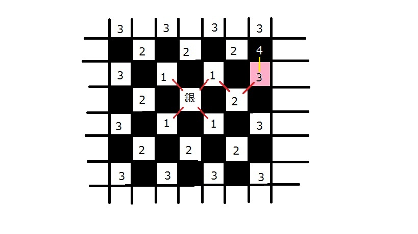
[反省点] という良い解法を思いつき、466点という高得点をゲットできそうだったのだが、 間違えていた。 if((sx+sy)%2!=(gx+gy)%2) // 同じ色のマスにいるかどうか。 とやってしまい間違えた。バカでした。%を使うと、 5%3=2 -5%3=-2 4%3=1 -4%3=-1 3%3=0 -3%3= 0 2%3=2 -2%3=-2 1%3=1 -1%3=-1 0%3=0 0%3= 0 のようになります。つまりx%yはxと符号が一緒になるので、マイナスの値もとりえます。 ちなみに、 5%-3= 2 -5%-3=-2 x%0 →例外 となるので、落とすときに利用しましょう（笑） ・提出後にテストしても良いよ。2009/12/03放送 第255回-第回 SRM283 DIV2 1000pts
[問題] FactorialGCD a!とbの最大公約数を求めよ。aもbも最大21億 [結果] ○ [反省点] 【解法1】 数値や数式は、以下の方法で表すことができる。 (1)数値を整数型・実数型で表す (2)文字列を整数型・実数型で表す (3)数式そのものをなんらかのデータ構造であらわす 今回は、階乗をある数で割った値を、(3)であらわす。 具体的には、aからbまでの積を struct KAKE { int a, int b }であらわす。 例1）8! ={1,8} さらにこのKAKEを掛け合わせたものを list<KAKE>であらわすことにする。 例2) 8!/3 = (1*2)*(4*5*6*7*8) = { {1,2}, {4,8} } 例3) 8!/3/3 = (1*2)*(4*5*2*7*8) = { {1,2}, {4,5}, {7,8} } * 2 （KAKEであらわせない部分は別の変数にもつ） こうすると階乗を割った値をあらわすことができる。 あとは、普通に、素因数分解の割り算計算をしていけば、最大公約数が求まる。 【解法2】 ・xが2で割れる回数をf(x)とすると、以下のような法則が成り立つ f(8!) = f(1)+f(2) +f(3)+ f(4)+f(5)+ f(6)+f(7)+ f(8) = 0 +1+f(1)+ 0 +1+f(2)+ 0 +1+f(3)+ 0 +1+f(4) = 4 + f(4!) = 4 + 2 + f(2!) = 4 + 2 + 1 + f(1!) = 4 + 2 + 1 + 0 = 7 ・xを2で何回か割ったとしても、xが3で割れる回数に影響しない。なぜなら、割る数が互いに素だから。2009/11/26放送 第241回-第回 SRM453.5 DIV2 1000pts
[問題] TheProduct 0) {7, 4, 7} 2 1 Returns: 28 The maximal distance is 1, so we can't choose both 7's. 1) {7, 4, 7} 2 50 Returns: 49 And now it's possible. 2) {-3, -5, -8, -9, -1, -2} 3 3 Returns: -10 [結果] ○ [反省点] ・動的計画法だが、最適性原理がそのままでは成り立たない。最小値と最大値の両方をとっておくのがポイント。 負の掛け算があるので、最小値は次のステージで、最大値になる可能性があるため。 ・問題文をよく読もう。 ・ INT_MAX : 2147483647 INT_MIN : -2147483648 LLONG_MIN: : LLONG_MAX : 9223372036854775807 DBL_MAX : 1.79769e+308 DBL_MIN : 2.22507e-3082009/11/26放送 第241回-第回 SRM453.5 DIV2 500pts
[問題] MazeMaker [結果] ○ [反省点] なぜダイクストラで解いた！？？。100点ぐらい（レート40ぐらい）は損してます・・・。 500点問題だし、そんな難しいことをする必要はないよ。 地図系の問題は、少なくも以下のような解法があります。 △(1)深さ優先探索を再帰を使って解く ・わかり易い ・スタックオーバーフローが怖い ×(2)深さ優先探索をstackを使って解く ・自分は苦手 ・スタックオーバーフローがないので安心 ○(3)幅優先探索をqueueを使って解く ・自分は苦手 ・でも、もっともメジャーな解答 ・速度的にもメモリ的にも安心 ◎(4)幅優先探索をqueueを使わず解く ・わかり易い。 ・デバッグ時に特にわかり易い。 ・そんなに遅いわけでもない。 ○(5)動的計画法 ・そこそこ慣れている。 ・速度的にもメモリ的にも安心。 ・スタートが決まっているときでも、後ろむきに解くのを忘れずに。 ×(6)ダイクストラ法 ・コストがあるときは有効。でも、他の方法でもコストは扱える。 ・四角のフィールドだったら他の方法のほうが楽 ・実装が面倒 ・リンクの量の多さにも気をつけること。2009/11/23放送 第238回-第回 SRM284 DIV2 500pts
[問題] Measures 最小で何拍子の小節にくぎれるか。 [結果] × [反省点] パソコンの0.8は0.80000004。 基本的にa＞0.8ではダメ。10a＞8のようにすれば整数演算にできる。 問題文でdoubleの精度について述べてないし、doubleを避けられるのは明らか。 CPU・コンパイラ依存な部分もあるので、doubleとintの比較は避けよう。 避けられない場合も、微小なマージンをとりましょう。2009/11/23放送 第235回-第回 SRM283 DIV2 600pts
[問題] [結果] ○ [反省点] ・cartesian plane ・horizontal, vertical (x軸とy軸に平行な線) ・parallel to any of two diagonals（45度斜めと135度斜め） ・高校レベルの数学を使う場合もある（表面的には中学レベルに落とせるけど・・） PROBLEM STATEMENT You have discovered a region in need of power, and as an enterprising businessperson, you have decided to build a power line there. The region is a cartesian plane, and consumers are represented as points on the plane. Your power line will be a single straight line that is horizontal, vertical, or parallel to any of two diagonals. Each potential consumer will purchase power from your line if and only if the distance between him and your line is less than or equal to D. This distance is measured as the Euclidean distance (the length of the shortest line segment between the point and the line). You would like to maximize your profit by maximizing the number of consumers using your power line. You are given vector2009/11/23放送 第229回-第回 SRM282 DIV2 1000pts
[問題] [結果] × [反省点] ・計算機はテストの友 ・循環小数がはじまる前の文字列と、はじまった後の文字列の扱い。 ・dが小さいときは、そもそも循環部分にいかない。 ・非循環部＋循環部＋循環部。非循環部の切り出しを忘れていた。 PROBLEM STATEMENT Given integers x, d, and n, compute n consecutive digits of 1/x, beginning with digit d. Digit 1 refers to the tenths place, digit 2 to the hundredths place, etc. Return the digits as a string of length n. For example, 1/7 equals 0.1428571428571428... If x is 7, d is 2, and n is 4, your method should return "4285". DEFINITION Class:Reciprocal Method:digits Parameters:int, int, int Returns:string Method signature:string digits(int x, int d, int n) CONSTRAINTS -x will be between 2 and 10000, inclusive. -d will be between 1 and 1000000000, inclusive. -n will be between 1 and 50, inclusive. EXAMPLES 0) 7 2 4 Returns: "4285" This is the example from the problem statement. 1) 10000 1 7 Returns: "0001000" 2) 3 5000 8 Returns: "33333333" 3) 9999 9 13 Returns: "0001000100010" 4) 7549 50000 1 Returns: "0"2009/11/22放送 第221回-第226回 SRM282 DIV2 500pts
[問題] TileCutting 2*2マスの大きさのタイルを長方形のフィールドに埋める。ただしフィールドには、 ところどころに装飾があり、そこにはタイルがそのままでは埋めれない。 なのでタイルを切って埋めることにする。タイルの切る長さを最小にせよ。 [結果] × [反省点] ・小さいタイルを組み合わせて、大きくして使う方法を見逃していた。例にはないが、 問題文によくみるとある（本番では問題文に書いてなかったみたい。）。とにかくよく読みましょう。2009/11/22放送 第220回-第回 SRM281 DIV2 900pts
[問題] BinarySearchable バイナリサーチだが、 ・真ん中の数字ではなく任意の数字を選ぶ ・数列をソートしてない。 この変なバイナリサーチで、常に発見できる数字は何個あるか？ [結果] ○2009/11/22放送 第217回-第回 SRM281 DIV2 500pts
[問題] IntegerGenerator 与えられた数字を使って、""内の数字の次に大きい数字をつくれ 1) { 0, 1, 2, 3, 4, 5, 6, 8, 9 } "16" Returns: "18" [結果] ○ [反省点] 自前の繰り上がり計算 ・10桁でintオーバー ・11桁になることあり ・数字を1ずつ増やしながらやるとタイムオーバー とワナが多い問題。2009/11/18放送 第212回-第回 SRM453 DIV2 1000pts
[問題] TheSoccerDivTwo サッカーリーグ。 勝ち...勝ち点3 分け...勝ち点1 負け...勝ち点0 ジョンは、自分のチームをできるだけ順位にしたい。 - ジョンは、最終節の試合マッチングができる。 - もし勝ち点が同じ場合は、ジョンのチームが順位が上 もし、試合結果がすべてジョンのチームに都合が良かった場合、 ジョンのチームは最高で何位まであがれるか？ {}内は各チームの勝ち点で、一番左の0番目のチームがジョンのチームの勝ち点。 1) {4, 7, 7, 7} Returns: 2 It's impossible for John's favorite team to be in first place after the remaining games. [結果] × [反省点] ・場合わけ、分かってしまえば簡単だけど見落としが怖い。 ・動的計画法でもできるっぽい。その場合は、 ・チームn以降の結果の合計がw勝l敗d分けとして、dp[n][w][l][d]とする。状態の数はもったいぶらないのがポイントかも。 ・チームの順位はソートしたりせず、チームn以降のチームがジョンのチームより成績が良かったら、 ジョンのチームの順位を1つずつ落としていけばよい。 ・最適性の原理は問題なく成り立つ。もちろん、ジョンのチームの順位を最小化する問題。 ・実はマッチング自体はどうでもいい。どのチームと当たろうが、そのチームが得られる勝ち点は変わらない。 最終的に、試合の「勝ち数=負け数」「引き分け数が2の倍数」になっていればOK！2009/11/18放送 第???回-第回 SRM453 DIV2 500pts
[問題] TheSoccerDivTwo [結果] × [反省点] 超ポカ。リーグ戦なので vs チームx チームy res[y][x] もし、res[y][x]=='W'なら、チームyの勝利が+12009/11/15放送 第206回- SRM280 DIV2 1000pts
[問題]GroupingNumbers 数列をn個のグループに分ける。それぞれのグループの平均値を求める。 グループ間の平均値の差を最小にしたい。平均値の最小値はいくらになるか。 2) {2,3,5,7,11,13} 3 Returns: 0.33333333333333304 The best split is (2,5,13), (3,11) and (7). The first group has an average of 6.66..., and the other two groups both have averages of 7. The difference is 0.33... [結果] × [反省点] 数列をn個のグループに分ける。これの列挙はむずかしい。知識がないときつい問題。 Permutation Cycle 「スターリング数」などもチェック！ また、 rand()を使ったすごい解答もあります。2009/11/15放送 第204回- SRM280 DIV2 500pts
[問題]CompletingBrackets カッコの対応がうまくいってないので、左と右にあらたにカッコをたして直せ。 1) "][" Returns: "[][]" Add one to the beginning and one to the end. [結果] ○ [反省点] はやとちりしなきゃ簡単2009/11/15放送 第200回-第203回 SRM279 DIV2 1100pts
[結果] ○ [反省点] forループをコピーするとき、変数iをkに置き換えたりしましょうね。 [問題] CoinPiles PROBLEM STATEMENT We have some coins on the table. Each coin is characterized by its size. We want to arrange these coins into successive piles so that the following hold: The size of the top coin in each pile is strictly greater than the size of all the other coins in the same pile. The size of the top coin in each pile is strictly greater than the size of the top coin in the previous pile. The number of coins in each pile is strictly greater than the number of coins in the previous pile. You will be given a vector2009/11/15放送 第198回-第199回 SRM279 DIV2 500pts
[問題] 勝敗の結果が文字列で与えられる。勝率1位の人の名前を返せ [結果] ○ [反省点] ・１位だけ求めればいいので、ソートしなくてもできる。 ・勝率の面白い比較法 a.win*b.lose と b.lose*a.win2009/11/?放送 第185回〜第197 準備編
・ハノイ ・ナイト巡回（深さ優先） ・ナイト巡回（幅優先）2009/11/9放送 第185回〜 SRM278 DIV2 1000pts
[問題] IntegerSequence 整数の数列から、何個かの要素を取り除いて、山のように並べたい（増加列→最大→減少列） ある数列があたえられたとき、最長の山を作るためには、何個要素を取り除ければよいか？。| → |
2009/11/9放送 第183回〜 SRM278 DIV2 500pts
[問題] BestTriangulation [結果] ○ [反省点] ・３頂点の(x,y)が与えられ時の三角形の面積。2009/11/7放送 第181回〜 SRM277 DIV2 1000pts
[問題] PROBLEM STATEMENT Given a list of integers, find the n-th smallest number, i.e., the number that appears at index n (0-based) when they are sorted in non-descending order. The numbers will be given in intervals. For example, the intervals (1, 3) and (5, 7) represent the list of numbers { 1, 2, 3, 5, 6, 7 }. A number may be present in more than one interval, and it appears in the list once for each interval it is in. For example, the intervals (1, 4) and (3, 5) represent the list of numbers { 1, 2, 3, 3, 4, 4, 5 }. The intervals will be given as two vector2009/11/7放送 第180回 SRM277 DIV2 500pts
[問題] 集合1・集合2に整数が何個か入っている。集合1→集合2に移動させたとき、または集合2→集合1に移動させたとき、 両方の集合の平均が増える数字は何個あるか [結果] ○ [反省点] ・accumulate double mean1=(double)accumulate(set1.begin(),set1.end(),0) / SZ(set1);2009/11/7放送 第177回-第179回 SRM276 DIV2 500pts
[問題] PROBLEM STATEMENT When a customer buys large quantities of a product, frequently the seller will offer a volume discount. For instance, one unit might cost 10 dollars, but might be offered in packages of 5 for 45 dollars. In such a case, it always makes sense buy the bulk lots to save money. In some other cases, however, it might not always make sense. Suppose a single unit were on sale for 8 dollars. In such a case, purchasing single units would be less expensive than purchasing a 5-pack. You are given a vector2009/11/7放送 第176回 SRM275 DIV2 500pts
[問題] PROBLEM STATEMENT The Haar wavelet transform is possibly the earliest wavelet transform, introduced by Haar in 1909. The 1-dimensional version of this transform operates on a sequence of integer data as follows: First separate the sequence into pairs of adjacent values, starting with the first and second values, then the third and fourth values, etc. Next, calculate the sums of each of these pairs, and place the sums in order into a new sequence. Then, calculate the differences of each of the pairs (subtract the second value of each pair from the first value), and append the differences in order to the end of the new sequence. The resulting sequence is a level-1 transform. Note that this requires the input sequence to have an even number of elements. The above describes a level-1 transform. To perform a level-2 transform, we repeat the above procedure on the first half of the sequence produced by the level-1 transform. The second half of the sequence remains unchanged from the previous level. This pattern continues for higher level transforms (i.e., a level-3 transform operates with the first quarter of the sequence, and so on). Note that this is always possible when the number of elements is a power of 2. See the examples for clarification. Create a class Haar1D with a method transform which takes a vector2009/11/5放送 第175回 反省会 SRM452 DIV1 250pts
[結果] Rating 1315→1114 ・250pts 不正解 ・500pts 提出せず不正解。 ・1000pts 提出せず不正解。 ・Challenge 成功0 失敗1 → -250点。 [問題] 250pts 長方形のフィールドに、グリッド上の点に石を置く。ユークリッド距離が２離れたところに石はおけない。 最大で何個おけるか？ [反省点] 失敗するまでの流れ (1)例をみただけでブレゼンハムの問題と誤解 (2)ちょっとして誤解に気がつくが、なぜか角同士を結ぶというわけの分からん思い込みは頭に残ったまま。 (3)チャレンジでは、ほかの人の回答がぜんぜん違うのをみて攻撃→失敗。ぜんぜん違うのはこちらです。 TopCoder的な反省点 ・例を先に見るのはいいけど、問題文を確認すること。 ・Div1では0点でもブルーコーダーなら50ぐらいしかレートは下がらない。でもマイナスだと信じられんぐらい下がる。 250ptsで失敗したときのことを考えて、攻撃するのは特に慎重に。 ・攻撃相手のソースコードがあまりに違う場合は、ほかの人のプログラムもまず見てみよう。2009/11/1放送 第171回-第174回 SRM309 DIV1 250pts
[問題] ScoreRecomposition テストの合計得点と、どの問題が正解("C")したか間違ったか("W")を、先生に教えてもらったが、 どの問題が何点かわからない。N問で、それぞれ1点,2点〜N点が割り当てられている。 max {e(0),e(1)...,e(N-1)} が 最小になるときの最小値を求めよ。e(i)=abs(問題番号-問題の配点）とする 3) "CWCC" 6 Returns: 2 One valid point assignment with the lowest possible error is 1, 4, 2, 3. [結果] × [反省点] ・直値、ダメ！！。よく使うsizeは、いったん const int QUEST_NUM = SZ(questions); のようにしましょう。 ・ビットを使った総当り ・next_permutationでもとけるっぽい。2の10乗=10242009/11/1放送 第170回 SRM308 DIV1 200pts
[問題] ハフマン復号化の問題。簡単なのでいいや。 [結果] ○ [反省点] ・1文字のstringをつくる string += string(1,index+'A')2009/11/1放送 第166回-第169回 SRM307 DIV1 250pts
[問題] ソートする。ただし ・となり同士のswapのみ可 ・swapの上限がnSwapsと決まっている。 数列の辞書順でできるだけ大きくなるようにソートせよ。 1) {3, 5, 1, 2, 4} 2 Returns: {5, 3, 2, 1, 4 } First, swap the third and fourth elements, and then, swap the first and second elements. [結果] ○ [反省点] ・今回の問題は、何番目に大きい数か知る必要はない。 ・eraseとinsertですっきり入れ替え b = data_rank[loc+its_dist]; data_rank.erase(data_rank.begin()+loc+its_dist); data_rank.insert(data_rank.begin()+loc,b);2009/11/1放送 第162回-第165回 SRM306 DIV1 250pts
[問題] ソートする。ただ使える操作は2回だけ。ソートするのに何回操作すればよいか MOVE_FRONT 要素を抜き出して一番最初へ MOVE_BACK 要素を抜き出して一番最後へ [結果] ○ [反省点] 最終的に、 A...AX...XB...B A:MOVE_FRONT X:動かさなくて良い（最初から小→大に隙間なく、ならんでる B:MOVE_BACK となるのに気づくと楽2009/10/31放送 第158回- SRM305 DIV1 300pts
[問題] "I cut, you choose" method of division 3人で遺産を分配する。遺産は{ 1, 2, 3, 4, 5, 6, 7, 8, 9 }のように１次元配列になっていて、 分ける人は{ 1, 2, 3}{4, 5, 6, 7}{ 8, 9 }←こんな感じで分けることができる。 (1)アルバートがわける (2)ベティがわける（ただしベティは、どのように分けてもベティの取り分が変わらないときは、アルバートの取り分が少なくなるように分ける） (3)カルラがとる (4)ベティがとる (5)アルバートがとる [結果] × [反省点] 完全に誤読 if Betty has two options that will both net her $1000, then she will always choose the option that will give Carla more money and Albert less money.2009/10/31放送 第153回-第157回 SRM304 DIV1 300pts
[問題] ある凸多角形があって、その中の頂点のいくつかを距離1だけ移動できる。ただし、 ・隣り合った頂点を両方とも動かすことはできない。 ・動かしたあとも凸多角形でなくてはならない。 面積をもっとも大きくできるように何個かの頂点を動かしたとき、面積の増分を求めよ。 [結果] × [反省点] 頂点を動かす全パターンを考える必要はない。動的計画法が使える。 動的計画法 http://www.sist.ac.jp/~suganuma/kougi/other_lecture/SE/opt/dynamic/dynamic.htm 別に制約条件が x1 + ･･･ + xn = a以外の形でもつかえる。今回はxn + xn+1 = 1 （xn=1...頂点の移動させたと考える） 最適化（最大値・最小値）を求める 制約条件がある 「最適経路中の部分経路もまた最適経路になっている」これ重要2009/10/31放送 第150回-第152回 SRM303 DIV1 250pts
[問題] うずまき上に数字を並べていったとき、数字の位置(col,row)は？。ただし数字はINT_MAX(21億4...) [結果] ○ [反省点] ・INT_MAXがでてきたときは、long longを使おう。ちょっとした計算・計算途中で、INT_MAXを超えてしまう。 ・うずまき上に、そのまま追っていっても計算間に合う。2009/10/28放送 第147回-第149回 SRM302 DIV1 250pts
PROBLEM STATEMENT There is an integer K. You are allowed to add to K any of its divisors not equal to 1 and K. The same operation can be applied to the resulting number and so on. Notice that starting from the number 4, we can reach any composite number by applying several such operations. For example, the number 24 can be reached starting from 4 using 5 operations: 4->6->8->12->18->24. You will solve a more general problem. Given ints N and M, return the minimal number of the described operations necessary to transform N into M. Return -1 if M can't be obtained from N. DEFINITION Class:DivisorInc Method:countOperations Parameters:int, int Returns:int Method signature:int countOperations(int N, int M) CONSTRAINTS -N will be between 4 and 100000, inclusive. -M will be between N and 100000, inclusive. EXAMPLES 0) 4 24 Returns: 5 The example from the problem statement. 1) 4 576 Returns: 14 The shortest order of operations is: 4->6->8->12->18->27->36->54->81->108->162->243->324->432->576. 2) 8748 83462 Returns: 10 The shortest order of operations is: 8748->13122->19683->26244->39366->59049->78732->83106->83448->83460->83462. 3) 235 98234 Returns: 21 4) 4 99991 Returns: -1 The number 99991 can't be obtained because it is prime. 5) 82736 82736 Returns: 0 We don't need any operations. N and M are already equal.2009/10/26放送 第144回-第146回 SRM301 DIV1 250pts
PROBLEM STATEMENT The first thing you have to do is to concatenate all elements of actions into one long string, and that will be your input string. In this problem, you will write a program that controls the actions of a progress indicator. The indicator is a single bar character in the middle of the screen with one of 4 states: '|', '/', '-', and '\'. From now on, we will refer to '\' as 'N', for programming convenience. The program is a sequence of instructions in the form:2009/10/25放送 第141回-第143回? SRM300 DIV1 250pts
PROBLEM STATEMENT The dating ritual can be pretty complex. Here is how it works at a certain cocktail party. All the men and women stand around in a circle, making chitchat. Eventually someone gets up his or her nerve and chooses the most desirable remaining person of the opposite sex and those 2 go off and discuss world affairs privately. This continues until either everyone has left, or only one gender remains and they all go home. The original circle is described by a string circle containing lowercase letters for women and uppercase letters for men. The last one in circle is actually adjacent to the first one. Starting with the first person in circle, we count from 1 to k around the circle, letting the k-th person be the first chooser. Letters nearer the beginning of the alphabet represent hotter individuals, and the chooser always chooses the hottest remaining member of the opposite sex. Starting with the next remaining person after the last chooser we again count from one to k (counting only people who still remain in the circle) to determine the next chooser. This continues until the party breaks up. Create a class Dating that contains a method dates that is given circle and k and returns a string showing all the dates. The return should list each date as a 2 letter sequence, with the chooser before the chosen. The dates should appear in the order in which they were made, and with a single space between adjacent dates. There must be no leading or trailing spaces in the return. DEFINITION Class:Dating Method:dates Parameters:string, int Returns:string Method signature:string dates(string circle, int k) CONSTRAINTS -circle will contain between 1 and 50 characters, inclusive, all letters 'A'-'Z' or 'a'-'z'. -The characters in circle will be distinct. -k will be between 1 and 100, inclusive. EXAMPLES 0) "abXCd" 2 Returns: "bC dX" Starting at the beginning we count 'a' as 1 and 'b' as 2 so 'b' chooses 'C' since 'C' is a lot hotter than 'X'. Then we count 'X' as 1 and 'd' as 2 (since 'C' is off discussing world affairs with 'b') so 'd' chooses 'X'. At this point only 'a' is left so the party breaks up. 1) "abXCd" 8 Returns: "Xa dC" We count all the way around the circle and arrive at 'X' as the first to choose. The next chooser is 'd' since we count all the way around the circle more than twice (since there are only 3 people left at this point). 2) "HGFhgfz" 1 Returns: "Hf Gg Fh"2009/10/21放送 第136回-第140回 反省会 SRM451 DIV2 1000pts
[結果] Rating 1195→1315 ・250pts 正解 ・500pts 正解 ・1000pts 提出せず不正解。 ・Challenge 成功3 失敗2 → +100点。 [解説] http://www.topcoder.com/wiki/display/tc/SRM+451 [問題] ・1000pts PROBLEM STATEMENT Tom McCoffee owns the only pizza delivery place in the mountains. The terrain is represented as a rectangular grid of squares, where each square either contains a building or is empty. Each empty square has an integer height between 0 and 9, inclusive. Today, each building in the area has ordered one pizza, and Tom must use his two delivery boys to fulfill all the orders in the shortest total amount of time possible. From each square in the grid, you can only move to adjacent squares. Two squares are adjacent if they share an edge. You can only move between two empty squares if the absolute difference of their heights is less than or equal to 1. If the height difference is 0, it takes 1 minute to make the move, and if the absolute height difference is 1, it takes 3 minutes. You can always move to a building from any of its adjacent squares and vice versa, regardless of height. This is because all buildings are taller than the highest terrain, and each building has entrances and exits for all its adjacent squares at the correct heights. Moving to or from a square containing a building takes 2 minutes. The delivery boys are allowed to enter buildings even if they are not their final destinations. Note that the pizza place itself is also a building. Each delivery boy can only carry one pizza at a time. This means that after each delivery, the delivery boy must return to the pizza place to pick up another pizza if there are more deliveries left to do. You are given a vector2009/10/20放送 第134回-第135回 SRM274 DIV2 500pts
[問題] [結果] ○ [反省点]2009/10/20放送 第132回-第133回 SRM273 DIV2 500pts
[問題] 与えられた文字列の順番を並べかえて、回文をつくれ。ただし、複数解あるときは辞書順。回文をつくれないときは""を返せ。 [結果] ○ [反省点] ・stringから1文字抜き出して、stringを作る。 ・string s = baseString.substr(i,1); ・string s(1,baseString[i]); ・charを複数個つなげたstringは作れるが、stringまたはchar*を複数個つなげたstringは一発では作れない。 ・回文なので、奇数個つかった文字のうち、1文字だけは真ん中にくるが、その他はほかの部分にくる。2009/10/19放送 第130回 SRM272 DIV2 500pts
[問題] FewestFactors 0-9までのいくつかの数字が与えられたとき、それらを並べてできる数字で、 因数（＝この場合約数divisiorといっしょ？）の個数が一番少ない数字を求めよ。 [結果] ○ [反省点] ・久しぶりに順列列挙 vectorでもstringでも、sortしてdo-whileでまわせばOK。whileではNG。 stable_sort(digits.begin(),digits.end()); do { } while(next_permutation(digits.begin(),digits.end())); ・約数の個数を求める 全部の数字で割る必要なし。約数はかならず2009/10/19放送 第128回-第129回 SRM271 DIV2 600pts
[問題] BlackWhitePlane 全面黒で塗られているエリアがある。その上に円が何個かあり、半径の大きい円から - 円の中の元の色が黒なら、白で塗る、 - 円の中の元の色が白なら、黒で塗る。 と塗っていく。最終的に白いエリアの面積を求めよ。ただ円同士は交差しない。 [結果] × [反省点] ・splitとatoiでも、文字列→int構造体に変換できるけど、もっと楽な方法があります。 ssから直接int型に突っ込むことができます。 string xyr("10 20 30"); stringstream ss(xyr); int x,y,r; ss >> x >> y >> r; ・なれない pair < int, pair <int , int > > でミス。 ・a.first a.second.first a.second.secondの3個のメンバになる。 ・3つの要素でsortするのでなければ、素直にpair < int, POS >でOK。 ・今回は子のほうから探していくことができるが、見つかったらbreakは必須。普通の木構造では、ルートから比較していくんだけど。 ☆木の復習2009/10/18放送 第125回-第127回 SRM270 DIV2 500pts
[問題] TippingWaiters チップの払い方が何通りあるか答える問題。 ただし (1)チップを含めた全支払額が5の倍数 (2)チップは、『全支払額』の5%〜10%（普通、料理のメニューの5%〜10%なんだけど・・） [結果] × [反省点] ・変数名でもないのに、問題文で斜線になっているところは、気をつけて読みましょう。 ・やっぱりnの倍数切り上げ切り捨て、重要です。 ・nの倍数になるように切り上げ（やや難） int multiple_round_up(int value, int multiple) { return (1+((value-1)/multiple))*multiple; } ・nの倍数になるように切り捨て int multiple_round_down(int value, int multiple) { return (value/multiple)*multiple; } ・コンパイラバグ？。TopCoder上で、1行coutを足すと返り値が変わる！。→TopCoderに連絡した。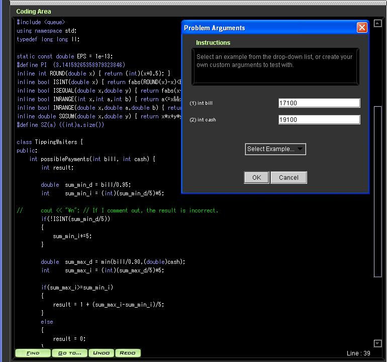
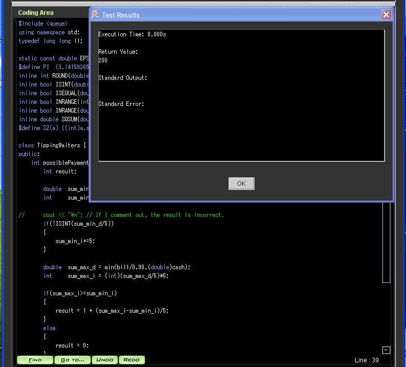
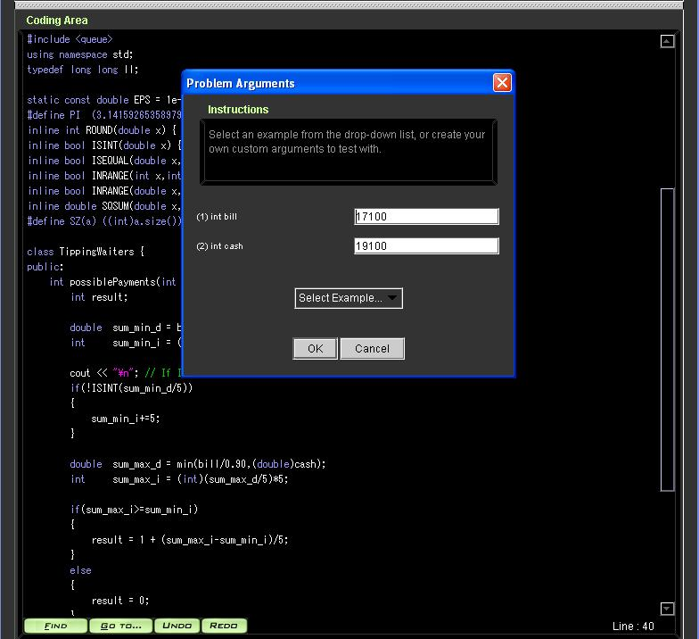
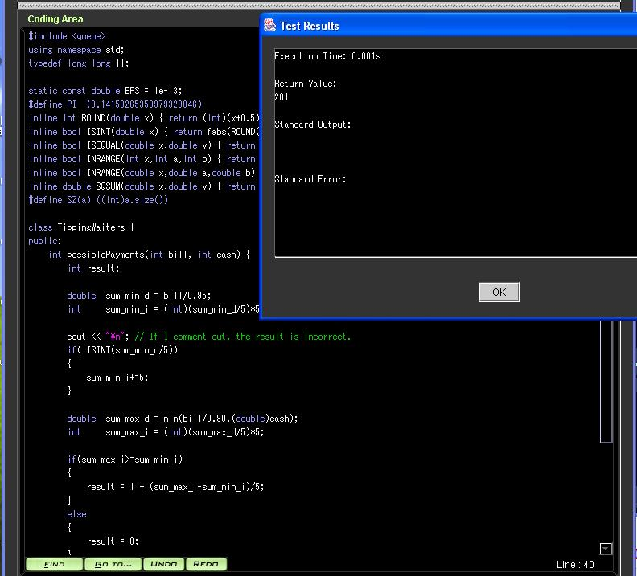
2009/10/18放送 第124回 SRM269 DIV2 500pts
[問題] PatternOptimizer 正規表現 * 任意の0文字以上 ? 任意の1文字 がまざった単語は、"*??*a"→"*??a"のように短くかける場合がある。 できるだけ短くなるように、単語を変形せよ。もし、複数解がある場合は辞書順で一番早いものを求めよ。 [結果] ○ [反省点] ・eraseの使い方、混乱してますよ！整理した。 std::eraseはない。vector.erase, map.erase, ・erase(it) itのさしている先を1個消す。 ・erase(it1,it2) it1〜it2-1まで消す。it2は消えない！ ありえそうな間違いは mp.erase(mp.find("boke"),mp.find("tsukkomi")) この場合、boke〜tsukkomiの1つ手前の要素まで消えるが、tsukkomiは消えません。要注意！ ・eraseしたあと、itのさしている先はNULLとなり、アクセスしたら即死。2009/10/18放送 第119回-第123回 反省会 SRM450 DIV2 1000pts
[結果] Rating 1165→1195 ・250pts 正解 ・500pts 正解 ・1000pts 提出せず不正解。 ・Challenge 成功0 失敗3 → -75点。 [解説] http://www.topcoder.com/wiki/display/tc/SRM+450 [問題] ・1000pts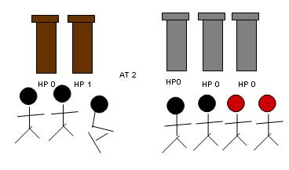
・プレイヤーができることは、自軍の兵士を、「木のやぐら攻撃グループ」と「石のやぐら攻撃グループ」を配分すること。 ・プレイヤーの目的は、相手のすべてのやぐらを、最短ターンで倒せる方法をみつけること。どうやっても負ける場合は-1を返す ・戦闘方法 (1)まず自軍の攻撃。兵士数分のダメージをやぐらに与えられる。たとえば兵士10人で、相手のやぐら2個*HP5なら。1ターンで相手のやぐら2個を落とせる。 (2)その後敵軍の攻撃。「残っているやぐら」*「攻撃力」の分だけ兵士が死ぬ。 (3)これで1ターン終了。どちらかが全滅するまで(1)(2)(3)を繰り返す ・自軍兵士は最大で10億 ・やぐらHP・やぐら攻撃力・木のやぐらの数・石のやぐらの数は最大で4万 [反省点] ・解析的に解けないような、複雑なシミュレーションは、2分探索と考えてよいでしょう。 ・整数の2分探索。 while(lower<upper) { int mid= lower+(upper-lower)/2; // upper+lowerだと一時的にupper+lowerという範囲外の値を計算するので、数字が大きいときに怖い！ if( func(mid) ) // 具体的な条件を書く { // 次は大きい値を調べたい lower = mid+1; } else { // 次は小さい値を調べたい upper = mid; } } if(func(lower)==目的の値) { return 目的の値; } else { return みつかりません; } ・解が見つからないとき。もしくは最適解を求めたいとき。 最後のlowerが最適解とは限りません。 lower,lower-1,lower+1のなかで一番良いのが最適解？(lower+1はたぶん最適解にはならんが、2分探索のやり方によっては調べないといけない可能性あり） // 2次関数 a*x^2+b*x+cで、xが整数のときの最小値を求める。 int a = 5; int b = 26; int c = 8; int lower = -100; int upper = 100; while(lower<upper) { int mid = lower + (upper-lower)/2; if( 2*a*mid+b < 0) { lower = mid+1; } else { upper = mid; } } cout << "x=" << lower-1 << " f(x)=" << a*(lower-1)*(lower-1)+b*(lower-1)+c << "\n"; cout << "x=" << lower << " f(x)=" << a*lower *lower +b*lower +c << "\n"; cout << "x=" << lower+1 << " f(x)=" << a*(lower+1)*(lower+1)+b*(lower+1)+c << "\n"; 結果はlower-1が最適解になる。 x=-3 f(x)=-25 x=-2 f(x)=-24 x=-1 f(x)=-13 ・nの倍数になるように切り上げ（やや難） int multiple_round_up(int value, int multiple) { return (1+((value-1)/multiple))*multiple; } ・nの倍数になるように切り捨て int multiple_round_down(int value, int multiple) { return (value/multiple)*multiple; }2009/10/16放送 第117回-第118回 SRM268 DIV2 500pts
[問題] CmpdWords 辞書に何個かの単語が載っている。辞書の単語を2つつなげた言葉(compound words)を考えてみる。 もし、compound wordsが(1)(2)のどちらかをみたすことを、あいまい(ambiguous)な単語とする。 (1)辞書に載っている単語と同じになる。 (2)compound wordsの作り方が2通り以上ある。 辞書が与えられているときに、あいまいなcompound wordsは何個存在するか。 [結果] ○ [反省点] ・mapがとても有効な問題。 insert make_pairとやらんでも、そのまま[]にキーを突っ込めます。 map<string,int> conca; for(int i=0;i<SZ(dictionary);i++) { conca[dictionary[i]]++; } ・キーをすべて走査するには、 もとはpairなので、キーを知りたいときは.first、値を知りたいときは.secondが使えます。 map<string,int>::iterator it = conca.begin(); while(it!=conca.end()) { if((*it).second>=2) { result++; } it++; } ただ今回の場合は、走査しなくてもいける。concaを足すときにその値をチェックするチャンスがあるので。2009/10/16放送 第114回-第116回 SRM267 DIV2 500pts
[問題]Airways n方向にしか飛べない飛行機（角度は均等に飛ぶ。例えばn=3方向のときは0度(=x軸上）、120度、240度） (0,0)から目的地まで最短距離がかかるか [結果] ○ [反省点] ・PIをつくりましょう。 ・2.0*PIで割るときに/2.0*PIなんて書かないように！ ・atan2(y,x)は-πから+πまでの値を返すので、0から+2πにしたいときは、 以下のように-πから0の範囲に2πを足せばOK。 double fly_rad = atan2(y,x); if(fly_rad<0.0) { fly_rad += 2.0*PI; } ・ベクトル分解と連立方程式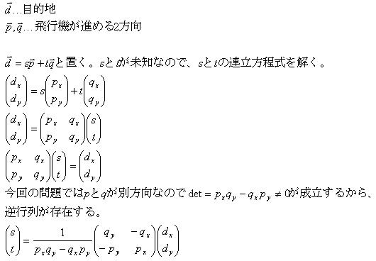
2009/10/14放送 第106回-第107回 SRM265 DIV2 500pts
[問題] ScheduleStrength チーム名と勝率が以下のようなデータで渡される。 {"BEARS", "GIANTS", "COWBOYS", "BRONCOS", "DOLPHINS", "LIONS"} {"-WLWW-", "L-WL-W", "WL---W", "LW--L-", "L--W--", "-LL---"} このときの勝率1位からのチーム名を配列で返せ。ただし、勝率が同じ場合は、チーム名辞書順 ただ、勝率の計算方法が特殊である。 チームAの勝率は、チームAと対戦した全ての相手チームの対戦成績 （ただし、チームAとの対戦結果は無視）の総和で求める。 上記の場合BEARSは5勝3敗となる。 [結果] ○ [反省点] ・pairがソートするときに、便利！。第1引数で比較後、第2引数で比較する。 第2引数にindexをいれておけば、ソート後も元の位置が分かるなど、いいことづくめ。 vector< pair<double,string> > vp; vp.push_back( make_pair(-rate,teams[team_id]) );2009/10/12放送 第102回-105回 SRM264 DIV2 500pts
[問題] DivisibilityRules たとえば792の各桁に4,4,1をかけて足すと、4*7 + 4*9 + 1*2 = 66となる。もしこの値66が割り切れるなら、 792も割り切れる。このような掛ける数の集合をdivisibility ruleと呼ぶ。 x進法の場合、ある値yのdivisiblity ruleと等しいdivisibility ruleは何個あるか？ （入力されるxとyの範囲は、3≦x≦1000,2≦y≦x-1) [結果] ○ 問題が良く分からないまま、解けたが・・。 [反省点] ・問題に混乱させられるな！ どうやら、英語圏のみなさんも混乱させられた問題のようです。なぜ混乱したか？ ・問題の2/3ぐらいで使っているdivisibility groupの面白い性質を、問題の本題ではどこでも使ってない。 ・divisibility ruleの求め方の説明がテキトーで、前後がどうつながっているのか分かりにくい。何の位まで計算すればいいのかが謎→この証明は難しいっぽい。 ・問題の本題では「divisibility ruleの等しい組み合わせは何個あるか？」。これが等しいからって何なの？。前置きとも関係なし。 ・合同式 a≡b (mod.m) 上の式のもともと意味は「a-bがmの倍数」。「aをmで割った余りと、bをmで割った余りは等しい」と解釈してもOK。 「mod 5を計算をするということは、余りが0,1,2,3,4のグループに整数を分けること」といったかんじの説明に感動 ここ つまり「aとbは、mで割った余りが同じ集合にある。」ともいえる。 今回の問題で「712を6で割った余りは34を6で割った余りと同じ」という例がでているが、 712≡34 (mod. 6) を示すことといっしょ。 100≡4 (mod. 6) 10≡4 (mod. 6) 1≡1 (mod. 6) は余り計算をすれば求まる。それぞれの桁の数をかけると、 700≡4*7 (mod. 6) 10≡4*1 (mod. 6) 2≡1*2 (mod. 6) 両辺を足して、 712≡34 (mod. 6)となることが示される。 今回の問題でのmultipliersとdivisibility groupはこの{4,4,1}を指す。 ・大きい値の剰余 %の演算では以下の法則が成り立つ。（分配法則っぽくみえるけど、ちょっと違うので注意！。） (a+b)%c = (a%c+b%c)%c (ab)%c = ((a%c)(b%c))%c つまり大きい数は、２つ以上の和、２つ以上の積で分けて、%演算すればOKです。 ・証明するには（自前なので間違ってたらごめん） まず、 n≡n%m (mod.m) ...(*) を証明する。出てくる変数は全部整数 n%m=rとすると、n=qm+r(0≦r≦m-1)であらわせる。 n-n%m=qm+r-r=qm。つまりn-n%mはmの倍数だから、合同式の定義より(*)が示された。 (*)から a≡a%c (mod.m) b≡b%c (mod.m) がいえるから、両辺それぞれ足す、両辺それぞれかけると、上の2式が証明できる。2009/10/11放送 第99回-第101回 SRM263 DIV2 500pts
[問題] 駄目な友達がDVDを観に遊びにきた。友達はDVDを観たあと、元のDVDケースに戻さず、次に観るDVDケースに戻す。 最終的に、元のDVDケースに戻らなかったDVDに全てついて、 "DVD名 is inside DVDケース名's case" のような文字列を返せ。 [結果] ○ [反省点] 次に観るDVDが、正しいDVDケースに入っているのは最初だけ。1度観たDVDは、通常他のDVDケースに入っている！ ・vector → map map<string,int> movies; for(int i=0;i<SZ(moviesWatched);i++) { movies.insert( map<string,int>::value_type(moviesWatched[i],i) ); }2009/10/11放送 第96回-第98回 SRM262 DIV2 500pts
[問題] 本１冊につき本情報が２つずつあるが、どちらが「タイトル」でどちらが「作家名」なのか分からない。 そこで、「スペースの区切りが3つある」か「The,of,and」が入っているものは「タイトル」と判定する。 このような判定をした場合、どちらも「作家名」やどちらも「タイトル」になってしまような場合になって しまう本のIDを返す関数をつくれ。 [結果] ○ [反省点] ・split ・スペースで区切るなら、これだけでOK！ stringstream ss(tmp); string a; while(ss>>a) { word_list.push_back(a); } ・STLで区切る場合 ・findの返り値は、size_type。 ・findの2つ目の引数が、検索開始場所となる。 ・substrで部分文字列を取得 ・次の検索は次の文字から st = next+1 string::size_type st = 0; string::size_type next = 0; int word_num = 0; do { next=tmp.find(" ",st); string word = tmp.substr(st,next-st); if(word=="THE"||word=="AND"||word=="OF") { return true; } else if(word!="") { word_num++; } st = next+1; } while(next!=string::npos);2009/10/9放送 第91回-第95回 リベンジ SRM258 DIV2 500pts
2009/9/26放送 第54回-第58回 SRM258 DIV2 500ptsをまだ自力で解いていないのでやってみた。 いきなりバイナリサーチをやればよいというオチを知っていたとしても、超ムズいことに気づく。 [問題文] 車をローンで買う。毎月の支払い・支払い期間・もともとの車の値段が与えられたときに、利子率を求めよ。 1) 2000 510 4 Returns: 9.56205462458368 Here, we do pay a little interest. At 9.562% annual interest, that means each month we pay 0.7968% of the balance in interest. Our payment schedule looks like this: Month | + Interest | - Payment | = Balance ------------------------------------------ | | | 2000.00 1 | 15.94 | 510.00 | 1505.94 2 | 12.00 | 510.00 | 1007.94 3 | 8.03 | 510.00 | 505.97 4 | 4.03 | 510.00 | 0.00 [反省点] ・通常のバイナリサーチだと、「時間がかかる」or「精度が足りない」のどちらかでひっかかる ・以下のようなバイナリサーチがあります。こちらはよりシンプルにかけるので、精度・速度が求められるときお勧め。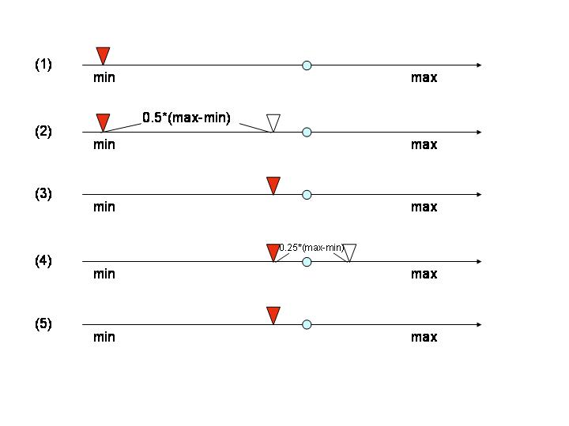
(1)範囲の最小値からスタート (2)0.5*(max-min)だけ進んだ値をチェック。目的の値より小さいか大きいかを調べる。 (3)目的の値を小さくなりそうなので、進む。 (4)さらに0.25*(max-min)だけ進んだ値をチェック。目的の値より小さいか大きいかを調べる。 (5)目的の値より大きくなりそうなので、進まない。 ・このバイナリサーチのポイントは3つ。 ・範囲の最小値からスタート ・常に足すだけ。引くことはない。 ・移動先を前もって調べる ・なお解析的にできるだけ解いて、ニュートン=ラフソン法を使う方法では、この問題は一部のケースでひっかかる！ 苦労の証→srm258_div2_500.doc ・解析的にといた時点でpow(1.0+r,T)の形がでてくるのが大問題。rが小さいときに1.0が足されるので、powの精度が落ちてしまう。 1.0000000001のT乗と、1.0000000002のT乗では同じ値になってしまったりする。 ・速度的には激早なので、今後使っても良いかもしれない。 ・バイナリサーチと違い、答えが範囲外（マイナス）になる場合もでてくるので要注意。誤差範囲内でも利子がマイナスになれば不正解。2009/10/9放送 第89回-第90回 SRM261 DIV2 500pts
[問題] PrimeStatistics ある範囲の素数を、与えられた数で割ったとき、一番多くでてくる剰余を求めよ。 ただ出てくる個数でトップタイがあるときは、より小さいほうの剰余を返せ。 ただし、範囲は最大で200000 [結果] ○ [反省点] ・最大の値が入っている場所がどこにあるかを探すときはmax_elementを以下のように使う。 vector<int>::iterator it; it = max_element(remainders.begin(),remainders.end()); if(*it==0) { result=0; } else { result = it - remainders.begin(); }2009/10/5放送 第87回-第88回 SRM260 DIV2 500pts
[問題] GridPointsOnCircle 円の半径2乗が与えられたとき、円が格子点上に重なる箇所は何個あるか？ ただし円の半径2乗の値は最大で20億。 [結果] ○ [反省点] ・ルートを使った計算が入るので、慎重に。 ・doubleの値が整数であるかどうかは、ちゃんと考えないと駄目。以下のようなマクロを作った。 inline int ROUND(double x) { return (int)(x+0.5); } inline bool ISINT(double x) { return fabs(ROUND(x)-x)<EPS; }2009/10/4放送 第84回-第86回 SRM440 DIV2 500pts
[問題] ネズミが迷路に置いてあるチーズにたどりつくまえに、道を選ぶ場面に何回遭遇するか？ ネズミはクラシックミュージックで超賢くなっているので、最短ルートでチーズまでたどり着くものとする。 [結果] ○ [反省点] ・いいデータ型思いつかなかったら、vectorとか使わなくてもいい。たとえば、int a[50][50]もあり。 ・もはやvector<string>の定番の形 ・ for(int y=0;y<(int)maze.size();y++) { for(int x=0;x<(int)maze[y].size();x++) { if(maze[y][x]=='M') ・他の変数も全部dec_num[y][x]のようになるので注意 ・十字4方向 int dx[DIR_NUM]={-1,+1, 0, 0}; int dy[DIR_NUM]={ 0, 0,-1,+1}; ・const int ax = x+dx[d]のように、いったん他の変数に置き換えてすっきり書きましょう。 ・InRange ☆幅優先探索でも解けます。xiohengさんの回答を参照2009/10/3放送 第81回-第83回 SRM441 DIV2 500pts
[問題] PaperAndPaintEasy 紙をある位置で2つ折したあと、横にx個に折る。その後、色を塗って紙を広げる。 色が塗られなかった部分の面積を求めよ。 [結果] ○ [反省点] ある範囲x=[x1,x2] がある。ただ境界x=aで区切られたとき、 ・x=aより小さいエリア [min(a,x1),min(a,x2)] ・x=aより大きいエリア [max(a,x1),max(a,x2)] たとえば、x1=3, x2=7, a=6のとき ・x=6より小さいエリア [min(6,3),min(6,7)] = [3,6] ・x=6より大きいエリア [max(6,3),max(6,7)] = [6,7] となる。2009/10/2放送 第78回-第80回 SRM442 DIV2 500pts
[問題] 素因数分解をしたときに、分かれた因数の数が素数である数字をunderprimeとする。 たとえば、12 is 2 * 2 * 3で、3個に分かれるのでunderprime。 整数A-Bの中にunderprimeは何個あるか。 [結果] ○ [反省点] ・素数primesを求める方法 ・ある値xが、xより少ない値の素数で割れなかったら、xは素数。 ・素数2は最初から素数に入れとく ・3,5,7と奇数のみチェックしていく ・この方法だと100万までの素数は求められる。 ・エラトステネスのふるい ・1000万まで求められる。早い。 ・素因数分解 第65回-第67回 SRM444 DIV2 500pts参照2009/10/1放送 第76回-第77回 SRM443 Div2 500pts
[問題] CirclesCountry 円状の国が何個かある。クワタムさんは、ある地点からある地点まで移動したいのだが、 できるだけ国境は超えたくない。最低限、何個の国境を越えなくてはならないか？ ただ国同士の国境は交わることはないものとする。 [結果] ○ [反省点] とくに問題なし。発想の問題。2009/9/30放送 第74回-第75回 反省会 Pilot Round 2
[問題] ・300pts Xも文字を使ってピラミッドのような形を作っていく。次の段ではXが2個増える。Xの個数が与えられたときの、ピラミッドの図形をvector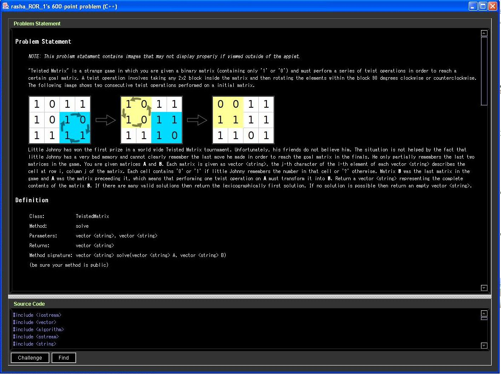
クリック [結果] ・300pts○時間かかりすぎ ・600pts×時間切れ。おしい。 ・900pts×開けず [反省点] ・300pts ・string ・s = "..."+s+"..."のような使い方も可能 ・現在の文字列長の分だけ埋める → fill(s.begin(),s.end(),'X') ・新たにn個の'X'で埋めた文字列を作る ・コンストラクタ string s(n,'X') ・1回限り string(n,'X') ・double誤差の問題 ・sqrtの誤差はでるはずなので、ちゃんと処理したい。あらかじめ、ROUND, ISINT, ISEQUALなどの関数は作っておいたほうがよいかも ・2次方程式 ・解の公式そのまんまだと桁落ちが発生するので、ちゃんとした関数をつくっておく。 ・600pts ・辞書順で lexicography ・答えが複数あるものをvector<T> answer_listに格納した場合 ・「最も小さいもの」「辞書順」の場合 sort(answer_list.begin(),answer_list.end())として、answer_list[0]を返せばよい。 ・ ・答えがない場合 answer_list[0]を返すと死亡。だって、answer_listには1個も要素がないから。別の空のデータを返しましょう。2009/9/29放送 第68回-第73回 SRM449 DIV1 250pts
[問題] 三角形の2辺の長さA,Bが与えられたとき、3頂点をすべて格子点上（座標が整数）においた三角形が何個か作れる（作れない場合もある） それらの三角形のなかで面積が最大なものの、面積を返す関数を作れ。ただし、A,Bは最大で√20億。 [結果] × [反省点] ・距離を求めるとき、√（2乗）の形に要注意。答えが5,6桁でも途中計算で√の中身が20億以上となってintから溢れる危険あり。 ・三角形の面積 http://www004.upp.so-net.ne.jp/s_honma/heron/heron.htm ・2辺となす角 = a*b*sinθ/2 。底辺a*高さbsinθ/2なので。 ・2点と原点 →平行移動させれば、3点にも適用可能。 ・3辺ヘロンの公式2009/9/28放送 第65回-第67回 SRM444 DIV2 500pts
[問題] Perfection levelを次のように定義する。level k-1 の4つの正の整数の掛け算（たとえば、3*4*3*8）であらわされる数をlevel kとする。 もし4つの掛け算で表されない数はlevel0とする。ある数NのPerfection levelを求めよ。ただし、Nは最大で10^13。 [結果] × [反省点] ・素因数分解 ・割る数i 元の数Nとして、i*i>=Nまで計算。素数を求めるときと同じ。この条件を入れないとタイムアウト ・最後に残った数のチェックも忘れずに。 ・2から順に割っていくから、1のときを忘れやすい。 ・提出前に、最小値と最大値のテストは必ず行おう。2009/9/27放送 第62回-第64回 SRM259 DIV2 900pts
[問題] 元の数列が与えられていて、左からみても右からみても同じ数列（回文）をつくりたい。元の数列の隣り合った2つの要素を足しあわせて、1つの要素にすることができる。この操作を何回行えば回文をつくることができるか？ [結果] ○ [反省点] ・palindromes 回文 ・eraseは便利。引数はイテレータなのでbegin()+3のように使う。2009/9/27放送 第59回-第61回 SRM259 DIV2 500pts
[問題] F(X)=A*X*X+B*X+C でXが非負整数。素数じゃないXの最小値を求めよ。 [結果] × [反省点] ・-1,0,1は素数ではありません！ ・素数のチェックの方法。 ・１個だけチェックするのであれば、素数表なんていらない。 ・2から順番に割っていこう。 ・√nまで割っていけば十分→（自然数nが√nを越えない最大の整数以下の全ての素数で割り切れなければ，nは素数である。 ・2個以上のときはメモしよう。過去に素数だともうわかってるんだから。 ・non-negative integers 非負の整数 → 0,1,2,.... ・AKS素数判定法や他にも素数判定法はあるよ。2009/9/26放送 第54回-第58回 SRM258 DIV2 500pts
[問題文] 車をローンで買う。毎月の支払い・支払い期間・もともとの車の値段が与えられたときに、利子率を求めよ。 1) 2000 510 4 Returns: 9.56205462458368 Here, we do pay a little interest. At 9.562% annual interest, that means each month we pay 0.7968% of the balance in interest. Our payment schedule looks like this: Month | + Interest | - Payment | = Balance ------------------------------------------ | | | 2000.00 1 | 15.94 | 510.00 | 1505.94 2 | 12.00 | 510.00 | 1007.94 3 | 8.03 | 510.00 | 505.97 4 | 4.03 | 510.00 | 0.00 [結果] × [反省点] ・数値計算も問題もある（近似値を求めるタイプ） ・方程式をできるだけ解いてから、数値計算をやるという方法がTopCoderではベストとは限らない。 ・いきなりバイナリサーチ。 ・rの方程式まで持っていって、ニュートンほう。 ・数列：等比・等差・混合タイプの項と和2009/9/26放送 第53回 SRM257 DIV2 500pts
[結果] ○ [問題] トランプゲームの得点計算問題。 ・A,K,Q,Jがそれぞれ4,3,2,1点。 ・同じカードの種類がないと3点、1枚あると2点、2枚あると1点。それぞれの種類に対して 合計得点を求めよ。 [反省点] 簡単な問題はさくっとやろう2009/9/25放送 第51回-第52回 SRM256 DIV2 550pts
[結果] ○ [問題] 3*3*3マスの立方体がある。縦or横or深さ方向に3つ並んだ値を足すことにする。もちろん複数パターンあるが、その最大値-最小値を「マジックナンバー」とする。さて、この立方体のマスの値を１つのペアだけ交換して、マジックナンバーをできるだけ小さくしたい（すでに最小なら、交換しなくても可）。交換後のマジックナンバーの最小値を求めよ。 [反省点] ・std::max_elementはイテレータを返す。つまり、int m=*max_element(a.begin(),a.end())のように使用。 ・std::max, std::min があるので、変数名にmaxやminを使ってはいけません！ ・std::swapもあるよ。 ・この際、使えそうなSTLアルゴリズムを覚えよ。当然、これらは変数名に使っては駄目。count,max,minは使っちゃいそうだ…。 ・max ・min ・max_element ・min_element ・count ・find ・swap ・swap_ranges ・accumulate ・reverse ・rotate ・対称性を使う場所に着目。今回の問題では使える場所が2通りあったが、forループの変数を入れ替えると明らかにコードがでかくなる。2009/9/24放送 第46回-第50回 反省会 SRM449 DIV2 500pts
[結果] Rating 1150→1165 ・250pts 正解 ・500pts 提出せず不正解。500ptsの割に難問だったと思う。計算時間のせいで、Challengeで討ち死にする人多数。 ・1000pts 提出せず不正解。 ・Challenge 成功0 失敗1 → -25点。 [解説] http://www.topcoder.com/wiki/display/tc/SRM+449 [問題] ・250pts：45度の斜面の山々を歩いていったときの、歩いた距離を求める問題。 ・500pts：f(1)+f(2)+...f(N)を求めよ。ただしf(x)は、xの約数の中で最大の奇数。Nは最大で10億。日本語訳（ありがとうございます。でも、消えてしまいました…） ・1000pts：まだ問題見てません・・・ [反省点] ・max_element,min_elementを使いましょう。そろそろ他のSTLの機能も覚えましょう。 ・500ptsで、1000万回のループが2秒以内で間に合いました。中身が簡単ならいけるっぽい。今後の計算時間の参考に。 ・500ptsの問題 ・数列の規則性は複数ある。規則性によっては、答えまでたどりつけない場合もあるので注意。 ・2進数で書いたのはよいアイディアだったけど、f(1)+f(2)+..f(X)のままで考えるという発想はなかった。 ・Challengeで攻撃するときに、数字にスペースが入っていると駄目。気づきづらいので注意。（結果、さっぱり攻撃できず、大損）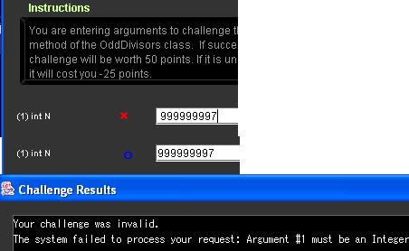
・対数を復習しましょう ・C言語の関数 double log(double x) →自然対数logex →ln x double log10(double x) →常用対数log10x →log x。計算機にもlogと書かれてる。→でもC言語ではlog(double x)を使ったら間違い！ ・234は2の何乗か? 2x=234 両辺の自然対数をとる。つまりlogeをつけると loge2x=loge234 xloge2=loge234 x = loge234/loge2 = 5.455/0.693 = 7.87 両辺の常用対数をとっても、結果は同じ x = log10234/log102 = 2.369/0.3010 = 7.87 つまり7.87乗→8桁 0b10000000（8桁最小=2の7乗=1<<7）以上で、0b100000000（9桁最大。2の8乗=1<<8）より小さい。 ちなみに、256→2の8乗→9桁です。8桁じゃないよ！ ・ log2 = 0.3010 log3 = 0.4771 [最近しらべたこと] ・ヒープメモリは64MB、スタックメモリは8MB ・Run System Testで、練習問題の結果を確認できる。 ・intは-21億〜21億 [いただいた貴重なアドバイス] ・ニコサウンド。 ・放送中に音が流れていると、放送事故が起こったかどうかが視聴者が気づきやすくてよい。 ・Visual Studio 2008の高速化。今まで重かったのが、一発で直った。こちら